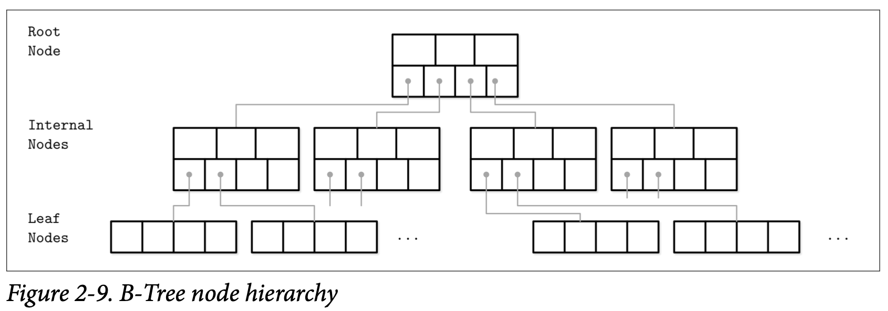
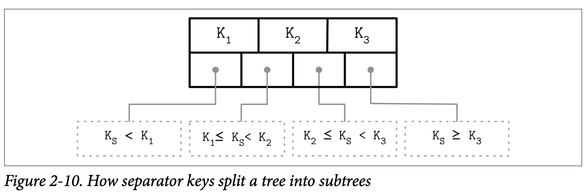

About Me
This has some record of my learning. I will fill it soon!
Contact Me
for now, if you wanna discuss with me or have some issue for me, contact me with the sourcr code or PR :)
Tokio Tutirial
Hello Tokio
我们从写一个最基础的的 Tokio 程序开始，这个程序会连接到 MiniRedis 的服务端，然后设置一个 key 为 hello，value 为 world 的键值对，然后再把这个键值对读取回来。这些操作我们会使用名为 Mini-Redis 的客户端库来完成。
The Code
创建一个新程序 Generate a new crate
我们从创建一个新的 Rust 程序开始
cargo new my-redis
cd my-redis
添加依赖 Add dependencies
接下来，打开 Cargo.toml ，并在 [dependencies] 后添加下面的代码
tokio = { version = "1", features = ["full"] }
mini-redis = "0.4"
开始写代码 Write the code
然后，打开 main.rs 并用下面的代码替换文件的内容
use mini_redis::{client, Result}; #[tokil::main] pub async fn main() -> Result<()> { // Open a connection to the mini-redis address. let mut client = client::connect("127.0.0.1:6379").await?; // Set the key "hello" with value "world" client.set("hello", "world".into()).await?; // Get key "hello" let result = client.get("hello").await?; println!("got value from the server; result={:?}", result); Ok(()) }
为了确保 Mini-Redis 的服务端处于运行状态，我们打开一个终端窗口，运行如下命令:
mini-redis-server
接下来运行我们的 mini-redis 程序
$ cargo run
got value from the server; result=Some(b"world)
成功了！
你可以从 这里 找到完整的源码.
Break it down
接下来花点时间梳理下我们刚才做的事情。代码并不多，但其中却触发了许多的事情。
#![allow(unused)] fn main() { let mut client = client::connect("127.0.0.1:6379").await?; }
函数 client::connect 是 mini-redis 这个包所提供的，他会使用指定的地址来异步的创建一个 TCP 连接，当这个连接建立成功时， client 则保存了该函数返回的结果。尽管这个操作是异步发生的，但代码 看起来 却是同步的。其中唯一指示了该操作为异步的只有 .await 操作符。
什么是异步编程 What is asynchronous programming?
大部分的电脑程序都按照他们代码所写的顺序执行，最前面的先执行，然后是下一行，然后一直执行下去。在同步编程中，当程序遇到了一个无法立即完成的操作时，他会堵塞在该位置一直到操作完成，举个例子，在创建 TCP 连接时连接双方需要在网络中交换一些信息，交换信息的操作需要花费相当的时间，而运行这段代码的线程在这个时间内将被阻塞。
在异步编程中，如果一个操作不能马上完成的话，他将被暂停然后切换到后台等待，执行的线程不会被阻塞，因此他可以继续执行其他的事情。当这个操作完成时，他又会被切换至前台并从之前中断的地方继续执行。我们刚刚实现的示例只启动了一个任务，所以在这个任务的操作被暂停时并没有发生任何其他的事情，但通常异步的编程会同时运行许多的任务。
尽管异步编程能够给我们带来更快的程序，与此同时他也为程序带来了更高的复杂度。开发人员为了能够在异步操作完成时将任务重新恢复执行，需要去跟进任务的运行状态。从历史经验上来看，这是一个乏味并且非常容易出错的工作。
编译时的绿色线程 Compile-time green-threading
Rust 使用了 async/await 特性来实现了异步编程的功能。会执行异步操作的函数通过 async 关键字进行标识，在我们的示例中， connect 函数进行了如下的定义：
#![allow(unused)] fn main() { use mini_redis::Result; use mini_redis::client:Client; use tokio::net::ToSocketAddrs; pub async fn connect<T: ToSocketAddrs>(addr: T) -> Result<Client> { // ... } }
async fn 的定义跟同步函数很类似，但他以异步的方式执行。Rust 在编译时将代码转换为异步的操作，所有使用 .await 调用并定义为 async fn 的操作将让出线程的执行权。这样该线程就能在异步操作被放到后台的期间做其他的事情。
尽管也有一些其他的编程语言实现
async/await的特性，但Rust使用了一个独立的方式，最主要的一点是Rust的异步操作是lazy的。这导致了运行时的语义跟其他编程语言的产生了区别。
如果到现在还没弄得很明白，不用担心，我们还会继续在接下来的篇幅中探讨 async/await。
使用 async/await Using async/await
异步函数能够与普通的 Rust 函数一样使用。但是，调用这些函数不意味着执行这些函数，调用 async fn 类型的函数返回的是一个代表该操作的标识。在概念上他跟一个无参的闭包函数类型。为了能够真正的执行它，你需要在函数返回的标识上使用 .await 操作。
我们来看看下面的例子
async fn say_world() { println!("world"); } #[tokio::main] async fn main() { // Calling `say_world()` does not execute the body of `say_world()` let op = say_hello(); // This println! comes first println!("hello"); // Calling `.await` on `op` starts executing `say_world`. op.await; }
输出
hello
world
async fn 函数的返回结果是一个实现了 Future trait 的匿名类型。
所以这里到底是怎么执行的，还得看
Rust最终转换出的代码及Future的定义，后续我会单独细讲
异步的 main 函数 Async main function
用来启动程序的 main 函数其他普通的 Rust 程序的有所不同：
- 被定义为
async fn - 添加了
#[tokio::main]宏
async fn 函数在我们需要执行异步操作的上下文中被使用。然而，异步函数需要通过 runtime 来运行，runtime 中包含异步任务的调度器，他提供了事件驱动的 I/O、定时器等。runtime 并不会自动的运行，所以需要在主函数中运行它。
我们在 async fn main() 函数中添加的 #[tokio::main] 宏会将其转换为同步的 fn main() 函数，该函数会初始化 runtime 并执行我们定义的异步的 main 函数。
比如
#[tokio::main] async fn main() { println!("hello"); }
会被转换为
fn main() { let mut rt = tokio::runtime::Runtime::new().unwrap(); rt.block_on(async { println!("hello"); }) }
Tokio 中具体的 runtime 的细节在后续的章节中会补充。
Cargo 特性 Cargo features
我们在定义对 Tokio 的依赖时使用 full 特性。
tokio = { version = "1", features = ["full"] }
Tokio 提供了大量的功能 (TCP, UDP, Unix sockets, Timers, sync utilities, multiple scheduler types 等)，但并不是所有的程序都需要用到这么多的功能。在需要缩短编译时间或减小程序大小时，可以只选择所需的特性。
现在的话，还是继续使用 full 特性吧。
Spawning
我们要开始换挡加速开始学习 Redis 服务端了。
首先，将我们上一节写的 Set/Get 代码移到示例目录 examples , 这样我们可以让他跟服务端代码一起运行。
mkdir -p examples
mv src/main.rs examples/hello-redis.rs
接下来创建一个新的 src/main.rs 然后继续。
Accepting Sockets
我们的 Redis 服务端第一步需要做的是接收一个 TCP 套接字，这个操作通过 tokio::net::TcpListener 完成。
Tokio 大部分的的类型名称都定义成跟
Rust标准库中同步类型一样。在有必要的情况下，Tokio 会提供与标准库中该类型遗憾的函数，但是以async fn的形式。
TcpListener 绑定到了 6379 端口，套接字则会在循环中被接收，每个套接字都会在处理完之后关闭。就目前而言，我们会从中读取命令打印到标准输出，然后返回一个错误。
use mini_redis::{Connection, Frame}; use tokio::net::{TcpListener, TcpStream}; #[tokio::main] async fn main() { let listener = TcpListener::bind("127.0.0.1:6379").await.unwrap(); loop { // The second item contains the IP and Port or the new connection let (socket, _) = listener.accept().await.unwrap(); process(socket).await; } } async fn process(socket: TcpStream) { // The `Connection` lets us read/write redis **frame** instead of // byte streams. The `Connection` type is defined by mini-redis let mut connection = Connection::new(socket); if let Some(frame) = connection.read_frame().await.unwrap() { println!("GOT: {:?}", frame); // Response with an error let response = Frame::Error("unimplemented".to_string()); connection.write_frame(&response); } }
接下来，启动这个接收循环
$ cargo run
接下来在一个独立的终端窗口，启动 hello-redis 示例 (上一节实现的SET/GET )
$ cargo run --example hello-redis
输出为
Error: "unimplemented"
在服务端的终端输出如下：
GOT: Array([Bulk(b'set'), Bulk(b'hello'), Bulk(b'world')])
Concurrency
我们的服务端还有一个小问题*(除了返回错误)*，他每次只能处理一个请求。当接收了一个连接后，服务端会在当前循环中一直堵塞到完全把返回信息写到套接字中。
我们希望 Redis 服务能够同时处理多个请求，所以我们需要让他并发 (Concurrenty) 起来。
并发跟并行并不是同一种概念。如果你能够交替着执行两个任务，那你这两个任务可以说是并发但不是并行的。为了能够让他并发起来，你需要两个人，每个人各自处理一个任务。
使用 Tokio 的一个好处就是异步的代码让你能够在不使用多线程的前提下让多个任务并发执行。事实上，Tokio 能够在单线程中并发运行非常多的任务！
为了能够并发的处理连接，我们需要为每个到达的连接创建一个新的任务，然后让这个任务负责处理该连接。
接收连接的循环现在变成了这样：
use tokio::net::TcpListener; #[tokio::main] async fn main() { let listener = TcpListener::bind("127.0.0.1:6379") loop { let (socket, _) = listerner.accept().await.unwrap(); // A new task is spqwned for each inbound socket. the socket is // moved to the new task and processed there. tokio::spawn(async move { process(socket).await; }); } }
Tasks
Tokio 的任务是异步的绿色线程，他通过传递给 tokio::spawn 的 async 语句块创建，这个函数接收 async 语句块后返回一个 JoinHandle，调用者则通过 JoinHandle 与创建的任务交互。有些传递的 async 语句块是具有返回值的，调用者通过 JoinHandle 的 .await 来获取其返回值，
#[tokio::main] async fn main() { let handle = tokio::spawn(async { "return value" }); // Do some other work let out = handle.await.unwrap(); println!("GOT {}", out); }
在 JoinHandle 上执行 .await 等待会得到一个 Result。当任务在执行时遇到了错误时，JoinHandle 会返回 Err ，这会在任务发生错误，或是因为 Runtime 被强制关闭而导致任务被强制取消时产生。
任务在 Tokio 中是非常轻量的，实际上他只会需要申请一次 64 个字节的内存。所以程序可以轻松的产生成千上万的任务。
'static bound
当你通过 Tokio 的 Runtime 创建一个任务时，这个任务的类型必须是 'static' 的。这意味着被创建的任务不能够包含对任务以外任何数据的引用。
有一个常见的误解是
'static始终代表着 "lives forever", 一直存活。但在这个场景中并不是，标识为'static的值只是意味着他不会产生内存泄漏。具体的可以通过 Common Rust Lisetime Misconceptions 进行了解。
举个例子，下面的代码无法通过编译
use tokio::task; #[tokio::main] async fn main() { let v = vec![1, 2, 3]; task.spawn(async { println!("Here's a vec: {:?}", v); }); }
尝试编译的话，会得到下面的错误信息：
error[E0373]: async block may outlive the current function, but
it borrows `v`, which is owned by the current function
--> src/main.rs:7:23
|
7 | task::spawn(async {
| _______________________^
8 | | println!("Here's a vec: {:?}", v);
| | - `v` is borrowed here
9 | | });
| |_____^ may outlive borrowed value `v`
|
note: function requires argument type to outlive `'static`
--> src/main.rs:7:17
|
7 | task::spawn(async {
| _________________^
8 | | println!("Here's a vector: {:?}", v);
9 | | });
| |_____^
help: to force the async block to take ownership of `v` (and any other
referenced variables), use the `move` keyword
|
7 | task::spawn(async move {
8 | println!("Here's a vec: {:?}", v);
9 | });
|
这些错误信息源自于在默认条件下，变量并不会 moved 到异步的代码块中，v 向量在这个时候仍由 main 函数拥有，但在 println! 这一行产生了对 v 的借用。Rust 的编译器的错误信息还提供了修复这个错误的建议：将第 7 行改为 task::spawn(async move { 能够指示编译器将变量 v 移动到创建的任务中，这样的话该任务就会拥有所有他所依赖的数据，让自己满足 'static'。
如果一个数据需要同时被多个任务并发的访问，那他应该使用同步机制来进行共享，比如使用 Arc。
同时我们也留意到错误信息提到参数类型的存活时间超过了 'static'，这个术语可能会造成困惑，因为 'static 的生命周期已经覆盖了整个程序了，如果参数的存活时间还超过了 'static 是不是意味着存在内存泄漏？对于这个疑惑的具体解释是，这里提到的超过 'static 生命周期的是参数的类型而不是参数的值，当参数的值被不再使用时他就会被销毁了。
当我们提到一个值是 'static 时，说他会永远存活并不意味着不正确。这点非常重要，因为编译器无法确定这个新创建的任务会存活多久，所以他能做的确保这个任务不会存活太久的方式就是让他一直都存在。
上面提供的链接中提到的术语 "bounded by 'static" 或 "its type outlives 'static" 或 "the value is 'static for T: 'static" 都表达了同一个意思，但他们跟以 &'static T 使用的标注是不一样的。
Send bound
通过 tokio::spawn 创建的任务必须实现了 Send 语义，这样 Tokio 的 Runtime 才能在他们因为执行 .await 被暂停时将他们切换到不同的线程中。
任务在他调用 .await 时拥有的所有数据都是 Send 时满足 Send 的条件，这听起来有点微妙。当 .await 被调用时，任务会让出执行权给调度器，在他下一次被执行时则从上一次让出的位置开始。为了能实现这个机制，所有的状态信息都会在执行的线程间进行转移，这样任务才能在执行线程间转移。相反，如果他的状态不满足 Send，那他就不满足作为一个任务的条件。
举个正常运行的例子
use tokio::task::yield_now; use std::rc::Rc; #[tokio::main] async fn main() { tokio::spawn(async { { let rc = Rc::new("hello"); println!("{}", rc); } // `rc` is no longer used. It is **not** persisted when // the task yields to the scheduler yield_now().await; }); }
下面的例子则无法编译
use tokio::task::yield_now; use std::rc::Rc; #[tokio::main] async fn main() { tokio::spawn(async { let rc = Rc::new("hello"); // `rc` is used after `.await`. It must be persisted to // the task's state. yield_now().await; println!("{}", rc); }); }
尝试编译时，会产生下面的错误信息
error: future cannot be sent between threads safely
--> src/main.rs:6:5
|
6 | tokio::spawn(async {
| ^^^^^^^^^^^^ future created by async block is not `Send`
|
::: [..]spawn.rs:127:21
|
127 | T: Future + Send + 'static,
| ---- required by this bound in
| `tokio::task::spawn::spawn`
|
= help: within `impl std::future::Future`, the trait
| `std::marker::Send` is not implemented for
| `std::rc::Rc<&str>`
note: future is not `Send` as this value is used across an await
--> src/main.rs:10:9
|
7 | let rc = Rc::new("hello");
| -- has type `std::rc::Rc<&str>` which is not `Send`
...
10 | yield_now().await;
| ^^^^^^^^^^^^^^^^^ await occurs here, with `rc` maybe
| used later
11 | println!("{}", rc);
12 | });
| - `rc` is later dropped here
我们会在下一章讨论一个关于这个错误的特殊的例子。
Store Values
接下来继续实现 process 函数来处理接收的命令。我们将使用 HashMap 来存储收到的值，SET 操作会插入一条新的记录到 HashMap 中，而 GET 操作则从中读取。并且，我们还会使用一个循环来处理来自同个连接的多个命令。
#![allow(unused)] fn main() { async fn process(socket: TcpStream) { // The `Connection` lets us read/write redis **frame** instead of // byte streams. The `Connection` type is defined by mini-redis use mini_redis::Command::{self, Get, Set}; use std::collections::HashMap; // A hashmap is used to store data let mut db = HashMap::new(); // Connection, provided by `mini-redis`, handles parsing frames from // the socket let mut connection = Connection::new(socket); while let Some(frame) = connection.read_frame().await.unwrap() { let response = match Command::from_frame(frame).unwrap() { Set(cmd) => { db.insert(cmd.key().to_string(), cmd.value().to_vec()); Frame::Simple("OK".to_string()) } Get(cmd) => { if let Some(value) = db.get(cmd.key()) { Frame::Bulk(value.clone().into()) } else { Frame::Null } } cmd => panic!("unimplemented {:?}", cmd), }; connection.write_frame(&response).await.unwrap(); } }
接下来启动服务端
$ cargo run
然后打开一个新的终端窗口，运行 hello-redis 示例
$ cargo run --example hello-redis
然后，我们就能看到下面的输出了
got value from the server; success=Some(b'world')
现在我们能获取跟设置信息了，但还存在一个问题。设置的信息还没办法在不同的连接中共享，如果其他的套接字连接尝试使用 GET 命令获取 hello 的值，他将找不到任何东西。
完整的代码在 这里。
在下一节，我们会为所有的客户端实现一个共享、持久化的存储。
Shared State
现在我们有一个可以运行的键值对服务端了，但是还有一个明显的瑕疵：状态不能跨多个连接共享，在这篇文章中我们来解决这个问题。
Strategies
在 Tokio 中有几种不同的方式来实现共享状态。
- 通过
Mutex保护共享的状态 - 创建一个新的任务管理状态并通过消息传递来处理状态
通常你会希望使用第一种方式来处理简单的数据，第二种方式一般用来处理那些需要异步处理的 I/O 设施。 在当前章节，共享的状态是一个提供了 insert 跟 get 操作的 HashMap，这两个操作都不是异步的，所以我们选择使用 Mutex。
Add bytes dependency
Mini-Redis 包使用了包 bytes 中的 Bytes 类型替代了 Vec<u8> 。Bytes 的目标是为网络编程提供健壮的字节数组结构，他在 Vec<u8> 之上提供的最大的特性就是浅拷贝。换一种说法就是，调用 Bytes 的 clone 函数并不会复制底层的任何数据，取而代之的是，Bytes 使用了引用计数的方式来处理底层的数据，它类似于 Arc<Vec<u8>> 但提供了一些其他的能力。
为了添加对他的依赖，我们需要早 Cargo.toml 中的 [denpendencies] 中添加下面的信息
bytes = "1"
Initialize the HashMap
HashMap 将被用来在不同的线程间进行共享，为了实现这个目的我们使用 Arc<Mutex<_>> 进行包装。
第一步，为了后续方便使用，先使用 use 引入下面的类型；
#![allow(unused)] fn main() { use bytes::Bytes; use std::collections::HashMap; use std::sync::{Arc, Mutex}; type db = Arc<Mutex<HashMap<String, Bytes>>>; }
接着更新 main 函数来初始化 HashMap ，然后将它作为一个 Arc 的句柄*(Handle)*传递给 process 函数。使用 Arc 将允许我们将 HashMap 当成一个引用传递多个任务，而这些任务可能会运行在不同的线程上。在 Tokio 中 Handle 一般表示为用来访问一个共享状态的值的引用。
use tokio::net::TcpListener; use std::collections::HashMap; use std::sync::{Arc, Mutex}; #[tokio::main] async fn main() { let listener = TcpListener::bind("127.0.0.1:6379").await.unwrap(); println!("Listening"); let db = Arc::new(Mutex::new(HashMap::new())); loop { let (socket, _) = listener.accept().await.unwrap(); // Clone the handle to the hash map. let db = db.clone(); println!("Accepted"); tokio::spawn(async move { process(socket, db).await; }); } }
On using std::sync::Mutex
注意，使用 std::sync::Mutex 而不是 tokio::sync::Mutex 来保护 HashMap。一个常见的误用就是在异步的代码中使用 tokio::sync::Mutex，异步的 Mutex 是用来保护多个 .await 之间的调用的。
同步的 Mutex 在尝试获取锁时会堵塞当前线程，意味着他同时也会堵塞其他的任务。然而，切换为 tokio::sync::Mutex 通常不会带来什么帮助，因为异步的 Mutext 在内部也是使用同步的 Mutext。
作为一个指导规则，在异步的代码中使用同步的 Mutex 不会有什么问题，只要操作评率保持较低，并且持有锁的操作不跨越多个 .await。 除此之外，使用 parking_log::Mutex 是个更快的替换 std::sync::Mutex 的方案。
Update process()
process 函数不再初始化 HashMap，而是通过参数获取一个 HashMap 的句柄，并且在使用之前要对其进行加锁。
#![allow(unused)] fn main() { use tokio::net::TcpStream; use mini_redis::{Connection, Frame}; async fn process(socket: TcpStream, db: Db) { // The `Connection` lets us read/write redis **frame** instead of // byte streams. The `Connection` type is defined by mini-redis use mini_redis::Command::{self, Get, Set}; use std::collections::HashMap; // Connection, provided by `mini-redis`, handles parsing frames from // the socket let mut connection = Connection::new(socket); while let Some(frame) = connection.read_frame().await.unwrap() { let response = match Command::from_frame(frame).unwrap() { Set(cmd) => { let mut db = db.lock().unwrap(); db.insert(cmd.key().to_string(), cmd.value().clone()); Frame::Simple("OK".to_string()) } Get(cmd) => { let db = db.lock().unwrap(); if let Some(value) = db.get(cmd.key()) { Frame::Bulk(value.clone().into()) } else { Frame::Null } } cmd => panic!("unimplemented {:?}", cmd), }; connection.write_frame(&response).await.unwrap(); } } }
Tasks, threads, and contention
在竞争比较小的情况中使用堵塞的 Mutex 来保护一个短小的临界区是一个可以接收的策略，当获取锁产生竞争时，执行当前任务的线程会因为等待这个 Mutex 而被堵塞住，而且他并不是只堵塞当前任务，而是堵塞所有被调度到这个线程的任务。
在默认的情况下， Tokio 的 Runtime 使用基于多线程的调度器，任务可能会被调度到 Runtime 所管理的任意一个线程中。如果大量调度中的任务都需要访问同一个 Mutex，那他将会成为一个瓶颈。换种说法，如果使用了 Runtime 的 current_thread模式 ，那这 Mutex 永远都不可能被获取到。
current_thread runtime flavor是一个轻量的、单线程Runtime。在只需要创建少量任务并且处理少量套接字的情况下，他是一个不错的选择。比如为客户端的异步函数提供一个同步接口的桥梁时，他就能工作的很好。
如果同步 Mutex 的竞争成为了程序的瓶颈，最好的修复方式是将它替换为 Tokio 的 Mutext, 或者是下面的几个方式
- 使用单独的任务通过消息传递来管理状态信息
- 分区
Mutex - 重构代码避免使用
Mutex
在我们的例子中，因为每个 Key 都是独立的，使用共享的 Mutex 会是一个较好的方式，为了实现这个目标，我们将单个 Mutex<HashMap<_, _>> 替换为 N 个不同的实例。
#![allow(unused)] fn main() { type ShardedDb = Arc<Vec<Mutex<HashMap<String, Vec<u8>>>>>; }
所以获取某个 Key 对应的存储则变为两步操作，第一步使用 Key 来确认使用哪个共享的元素，第二步才是获取该元素中所使用的 HashMap。
#![allow(unused)] fn main() { let shard = db[hash(key) % db.len()].lock().unwrap(); shard.insert(key, value); }
有一个 dashmap 包提供已经实现好的分区 HashMap。
Holding a MutexGuard across an .await
你可能会写出类似下面的代码
#![allow(unused)] fn main() { use std::sync::Mutex; async fn increment_and_do_stuff(mutex: &Mutex<i32>) { let mut lock = mutex.lock().unwrap(); *lock += 1; do_somthing_async().await; } // lock goes out of scope here }
当你尝试用这个代码来创建任务时，会得到如下的错误信息
error: future cannot be sent between threads safely
--> src/lib.rs:13:5
|
13 | tokio::spawn(async move {
| ^^^^^^^^^^^^ future created by async block is not `Send`
|
::: /playground/.cargo/registry/src/github.com-1ecc6299db9ec823/tokio-0.2.21/src/task/spawn.rs:127:21
|
127 | T: Future + Send + 'static,
| ---- required by this bound in `tokio::task::spawn::spawn`
|
= help: within `impl std::future::Future`, the trait `std::marker::Send` is not implemented for `std::sync::MutexGuard<'_, i32>`
note: future is not `Send` as this value is used across an await
--> src/lib.rs:7:5
|
4 | let mut lock = mutex.lock().unwrap();
| -------- has type `std::sync::MutexGuard<'_, i32>` which is not `Send`
...
7 | do_something_async().await;
| ^^^^^^^^^^^^^^^^^^^^^^^^^^ await occurs here, with `mut lock` maybe used later
8 | }
| - `mut lock` is later dropped here
这是因为 std::sync::MutexGuard 这个类型并非 Send 的。这意味着你不能将 Mutex 锁传递给其他的线程，这个错误会出现则是因为 Tokio 会在每次 .await 时在线程间移动这个任务。为了避免这个问题，应该重构代码，让 Mutex 的锁在调用 .await 前销毁。
#![allow(unused)] fn main() { // This works! async fn increment_and_do_stuff(mutex: &Mutex<i32>) { { let mut lock = mutex.lock().unwrap(); *lock += 1; } do_something_async().await; } }
要注意的是，下面的方式并不能正常运行
#![allow(unused)] fn main() { use std::sync::Mutex; // This fails too. async fn increment_and_do_stuff(mutex: &Mutex<i32>) { let mut lock = mutex.lock().unwrap(); *lock += 1; drop(lock); do_something_async().await; } }
这是因为编译器当前只会使用当前作用域的信息来判断一个 Future 是否满足 Send。在将来的某个时候编译器可能会升级来实现分析 drop 操作，但现在你必须自己明确的指定作用域。
关于这个错误的讨论也可以在 Send bound section from the spawning chapter 中找到。
你不该使用某种不要求 Send 的方式来创建任务，去尝试避免这个问题。因为 Tokio 在执行 .await 时将持有着锁的任务暂定，然后其他的任务会被调度到当前的线程，如果这个任务也尝试去获取这个锁，就会导致这个任务因为获取不到锁被堵塞，同时前一个持有锁的任务可能会因为没有线程可用而无法重新启用，所以无法释放他持有的锁，从而造成死锁。
我们会在后续继续讨论如果解决这个问题。
Restructure you code to not hold the lock across an .await
我们已经在上面看过一个解决问题的代码示例了，在这里我们提供一种更健壮的方式来实现。比如我们可以将 Mutex 包装到一个结构体里面，并且只会在同步的函数中对其进行加锁。
#![allow(unused)] fn main() { use std::sync::Mutex; struct CanIncrement { mutex: Mutex<i32>, } impl CanIncrement { // This function is not marked async fn increment(&self) { let mut lock = self.mutex.lock().unwrap(); *lock += 1; } } async fn increment_and_do_stuff(can_incr: &CanIncrement) { ca_incr.increment(); do_something_async().await; } }
这种方式保证了不会触发 Send 错误，因为 MutexGuard 并没有出现在异步函数中。
Spawn a task to manage the state and use message passing to operate on it
我们之前提到的第二种方式通常使用在共享的 IO 资源的情况，在下一章会详细介绍。
Use Tokio's asynchronous mutex
也可以是用 Tokio 提供的 tokio::sync::Mutex 类型，他主要的特点是允许只有锁跨越多个 .await 调用。但同时，异步的 Mutex 也需要花费比普通 Mutex 更多的代价，所以更多是使用另外的两个方式。
#![allow(unused)] fn main() { use tokio::sync::Mutex; // Note! This uses the Tokio mutex // This compiles! // (but restructuring the code would be better in this case) async fn increment_and_do_stuff(mutex: &Mutex<i32>) { let mut lock = mutex.lock().await; *lock += 1; do_something_async().await; } // lock goes out of scope here }
Channel
现在开始来学一些 Tokio 中的并发支持。开始把这些并发的东西应用到我们的客户端中，比如我们想要同时运行两个 Redis 的命令时，可以为每个命令创建一个任务，这样两个命令就能够并行的执行了。
首先我们来简单的尝试一下
use mini_redis::{client, Result}; #[tokio::main] async fn main() { let mut client = client::connect("127.0.0.1:6379").await?; let t1 = tokio::spawn(async { let res = client.get("hello").await?; }); let t2 = tokio::spawn(async { client.set("hello", "world".into()).await?; }): t1.await.unwrap(); t2.await.unwrap(); }
因为 Client 没有实现 Copy，并且两个任务都同时需要在其中使用到 client 变量，所以是编译不过的。并且，因为 Client::set 需要使用 &mut self 也就是可变引用作为参数，因此该对象的使用实际上是排他的。我们可以为每个连接创建一个任务，但那并不是个好主意，我们不能够使用 std::sync::Mutex 因为会有持有锁跨越 .await 的情形；我们不能使用 tokio::sync::Mutex，那会导致在同一时刻只有一个请求在处理。如果 client 实现了 pipelining，那异步的 Mutex 就会无法充分的利用当前连接了。
Message Passing
最好的方式是使用消息传递，这种方式需要创建一个单独的任务来管理 client 资源，任何一个想要发送命令的任务都需要发送消息给管理 client 的任务，该任务会处理收到的命令然后将处理结果回复给请求的任务。
使用这个策略，可以只创建一个连接，管理 client 的任务就可以有序的处理 get 跟 set 请求了，而 Channel 则相当于一个缓冲，就算 client处于繁忙状态其他的任务页可以发送命令到 Channel，当他能够处理新请求的时候，他会从 Channel 中获取下一个请求进行处理，这样的方式能够带来很好的吞吐量，还可以再将其扩展为使用连接池的方式。
Tokio's Channel Primitives
Tokio 提供了数种用于处理不同场景的 Channel
mpsc: 多生产者、单消费者的Channel，能够发送多个信息oneshot单生产者、单消费者的Channel，只能发送一个信息broadcast多生产者、多消费者，能够发送多个信息，每个消费者都能收到所有信息watch单生产者、多消费者，能够发送多个信息，但不会保存历史信息，消费者只能收到最新的信息
如果需要多生产者、多消费者的 Channel但希望每个信息只被一个消费者收到，可以使用 async-channel 包。还有其他的一些不能用在 Rust 的异步编程中的 Channel 实现，比如 std::sync::mpsc 跟 crossbeam::channel。这些 Channel 以堵塞线程的方式等待信息的到来，所以不能够在异步的代码中使用。
在这一节中，我们会用到 mpsc 跟 oneshot，其他的 Channel 类型会在后续的章节中用到，然后，本章完整的代码可以在 [这里](https://github.com/tokio-rs/website/blob/master/tutorial-code/channels/src/main .rs) 找到。
Define The Message Type
在大部分使用消息传递的场景中，负责处理消息的任务都需要响应不止一种命令。在我们的案例中，该任务需要响应 GET 跟 SET 两种命令，因此我们首先会定义一个包含所有命令类型的 Command 枚举。
#![allow(unused)] fn main() { use bytes::Bytes; #[derive[Debug]] enum Command { Get { key: String }, Set { key: String, value: Bytes, } } }
Create The Channel
然后在 main 函数中创建一个 mppsc 类型的 Channel
use tokio::sync::mpsc; #[tokio::main] async fn main() { // Create a new channel with a capacity of at most 32 let (tx, mut rx) = mpsc::channel(32); }
mpsc 的 Channel 将用来发送命令给管理 Redis 连接的任务，其多生产者的模式允许多个任务通过他来发送消息。创建 Channel 的函数返回了两个值，一个发送者跟一个接收者，这两个句柄通常是分开使用的，他们会被移到到不同的任务中。
创建 Channel 时设置了容量为 32，如果消息发送的速度超过了接收的速度，这个 Channel 只会最多保存 32 个消息，当其中保存的消息超过了 32 时，继续调用 send(...).await 会让发送的任务进入睡眠，直到接收者又从 Channel 中消费了消息。
在使用中会通过 clone 发送者的方式，来让多个任务同时发送消息，如下例
use tokio::sync::mpsc; #[tokio::main] async fn main() -> Result<()> { let (tx, mut rx) = mpsc::channel(32); let tx2 = tx.clone(); tokio::spawn(async move { tx.send("sending from first handle").await; }); tokio::spawn(async move { tx2.send("sending from second handle").await; }); while let Some(message) = rx.recv().await { println!("GOT = {}", message); } Ok(()) }
每个消息最后都会发送给唯一的接收者，因为通过 mpsc 创建的接收者是不能 clone 的。
当所有发送者出了自身的作用域或被 drop 后就不再允许发送消息了，在这个时候接收者会返回 None，意味着所有的发送者已经被销毁，所以 Channel 也已经被关闭了。
在我们的示例中，Redis 的连接是管理任务所负责的，他知道可以在管理的 Channel 都关闭后，Redis 的连接就不会再有人使用了，因此可以关闭 Redis 的连接了。
Spawn Manager Task
接下来创建负责处理来自 Channel 的任务，首先创建连接到 Redis 的客户端对象，然后依次接收信息并调用 Redis 去处理。
#![allow(unused)] fn main() { use mini_redis::client; let manager = tokio::spawn(async move { let mut client = client::connect("127.0.0.1:6379").await.unwrap(); while let Some(cmd) = rx.recv().await { use Command::*; match cmd { Get { key } => { client.get(&key).await; } Set { key, value } => { client.set(&key, value).await; } } } }); }
然后更新之前的两个任务，将直接使用 Redis 连接的方式改为通过 Channel 发送命令。
#![allow(unused)] fn main() { let tx2 = tx.clone(); let t1 = tokio::spawn(async move { let cmd = Command::Get { key: "hello".to_string() }; tx.send(cmd).await.unwrap(); }); let t2 = tokio::spawn(async move { let cmd = Command::Set { key: "foo".to_string(), value: "bar".into() }; tx2.send(cmd).await.unwrap(); }); }
然后在 main 函数的最下面，在程序退出前我们调用前面定义的几个 JoinHandle (t1、t2、manager) 的 .await;
Receive Responses
最后一步是需要接收 manager 任务对我们请求的响应。在操作成功的情形GET 命令需要返回我们之前调用 SET 的结果。
我们将通过传递 oneshot 类型的 Channel 来获取响应，oneshot 是单生产者、单消费者的 Channel，他还为只传递单次消息做了优化，在我们的示例中，这个单次消息就是我们所需的响应。
跟 mpsc 类似， oneshot::channel() 返回发送者跟接收者。
#![allow(unused)] fn main() { use tokio::sync::oneshot; let (tx, rx) = oneshot::channel(); }
而跟 mpsc 不同的是他不需要定义容量，因为他的容量永远都为 1，还有返回的发送者及接收者都不能够进行 clone。
为了接收来自 manager 任务的响应，在发送命令之前我们需要先创建好 oneshot 实例，发送者的部分会被包含到命令之中，以便 manager 用来发送响应，接收者则由任务自己用来接收响应。
首先我们先来更新 Commoand 的定义以让他包含发送者类型 Sender。为了书写方便我们为 Sender 定义了别名。
#![allow(unused)] fn main() { use tokio::sync::oneshot; use bytes::Bytes; type Responder<T> = oneshot::Sender<mini_redis::Result<T>>; #[derive(Debug)] enum Command { Get { key: String, resp: Responder<Option<Bytes>>, }, Set { key: String, value: Vec<u8>, resp: Responder<()>, } } }
接着，更新发送命令的部分，让他包含 oneshot::Sender。
#![allow(unused)] fn main() { let tx2 = tx.clone(); let t1 = tokio::spawn(async move { let (resp_tx, resp_rx) = oneshot::channel(); let cmd = Command::Get { key: "hello".to_string(), resp: resp_tx, }; tx.send(cmd).await.unwrap(); let res = resp_rx.await; println!("GOT = {:?}", res); }); let t2 = tokio::spawn(async move { let (resp_tx, resp_rx) = oneshot::channel(); let cmd = Command::Set { key: "foo".to_string(), value: "bar".into(), resp: resp_tx, }; tx2.send(cmd).await.unwrap(); let resp = resp_rx.await.unwrap(); println!("GOT = {:?}", res); }); }
最后，更新 manager 任务让他通过 oneshot 的 Channel 返回最终的响应。
#![allow(unused)] fn main() { let manager = tokio::spawn(async move { let mut client = client::connect("127.0.0.1:6379").await.unwrap(); while let Some(cmd) = rx.recv().await { use Command::*; match cmd { Get { key, mut resp } => { let res = client.get(&key).await; let _ = resp.send(res); } Set { key, value, resp } => { let res = client.set(&key, value.into()).await; let _ = resp.send(res); } } } }) }
调用 oneshot::Sender 的 send 会立即返回结果因此无需再调用 .await，这是因为 send 函数会在调用的时候立即返回成功或失败的结果。
通过 oneshot 发送的消息只有在接收者已经被销毁时返回错误，这表示已经没有接受者期待我们的响应了，并且接收者不再等待响应是一种可以接受的结果。因此发送者返回的 Err 可以不进行处理。
完整的代码可以在 这里 找到。
Backpressure And Bounded Channels
无论何时介绍并发或者队列，对其容量的限制都是很重要的，因为他能在系统优雅的处理负载，无限制的队列最终会把所有的可用内存都耗尽导致系统以不可预测的方式失效。
Tokio 小心的避免绝对的队列，其中最重要的一部分就是所有的异步操作都是 lazy ，考虑下面的代码
lazy表示操作不会马上执行，只有在有需要的时候才执行
#![allow(unused)] fn main() { loop { async_op(); } }
如果异步操作马上就执行，这个循环会不断的将 async_op 放到任务队列中去执行，而不管其之前的操作是否已经完成，这就体现为无限的队列，以回调形式或立即执行的 Future 异步系统很容易就会受这些操作影响。
然而，以 Rust 的异步编程机制实现的 Tokio 并不会真正的去执行上面代码片段中的 async_op。这是因为 没有在他上面调用 .await ，如果将上面的代码改为使用 .await ，这个循环每次都会等待之前的任务完成后才开始一个新的任务。
#![allow(unused)] fn main() { loop { // Will not repeat until `async_op` completes async_op().await; } }
并行跟队列已经郑重的介绍了，当真正想要那么做的时候，可能会用到下面这些
tokio::spawnselect!join!mpsc::channel
在这么做的时候，要小心的确保这些操作都是有限的，比如在等待接收 TCP 连接的循环中，要确保能打开的套接字的上限。在使用 mpsc::channel 时要选择一个合理的容量，具体的合理值根据程序不同而不同。
小心的选择这些限额将能够大幅度的提高 Tokio 程序的可靠性。
I/O
1610591062
Tokio 中的 I/O 操作跟标准库 std的保持一致，只是他是异步的。他提供了用于读取数据的 AsyncRead Trait 及用于写入操作的 AayncWrite Trait，很多类型都实现了他们，比如 TcpStream、File、Stdout 等，还有很多其他的基础类型如 Vec<u8>、 &[u8] ，他们让我们能够像使用 Writer 跟 Reader 一般使用字节数组。
本页面会使用 Tokio 来实现包含基础 I/O 的读取跟写入的一些示例。下一节我们则将会来探索更高级的示例。
AsyncRead And AsyncWrite
这两个 Trait 基础设施为字节流提供了异步的读取跟写入能力，事实上这两个 Trait 的函数并不会被直接调用，就像你不会手动的去调用 Future 的 poll 函数，他们更多的是会被其他的使用 Trait 来调用，如 AsyncReadExt 跟 AsyncWriteExt。
接下来让我们来稍微看其中几个函数，所有的这些函数都是 async 并且必须使用 .await 来调用。
async fn read()
AsyncReadExt::read() 提供了用来读取数据到缓存然后返回读取字节数的异步函数。
Note： 当 read() 返回 Ok(0) 时，意味着读取的数据流已经关闭，后续再进行的 read() 调用都会马上返回 Ok(0)。对于 TcpStream 来说则意味着套接字的读取部分已经关闭。
use tokio::fs::File; use tokio::{self, AsyncReadExt}; #[tokio::main] async fn main() -> io::Result<()> { let mut f = File::open("foo.txt").await?; let mut buffer = [0; 10]; // read up to 10 bytes let n = f.read(&mut buffer[..]).await?; println!("The bytes: {:?}", &buffer[..n]); Ok(()) }
async fn read_to_end()
AsyncReadExt::read_to_end() 从数据流中读取所有的数据直到读完。
use tokio::io::{self, AsyncReadExt}; use tokio::fs::File; #[tokil::main] async fn main() -> io::Result<()> { let mut f = File::open("foo.txt").await?; let mut buffer = Vec::new(); // read to whole file f.read_to_end(&mut buffer).await?; Ok(()) }
async fn write()
AsyncWriteExt::write 将缓存中的数据写入到写入者中，然后返回写入的数据字节数。
use tokio::io::{self, AsyncWriteExt}; use tokio::fs::File; #[tokio::main] async fn main() -> io::Result<()> { let mut file = File::create("foo.txt").await?; // Writes some prefix of the byte string, but not necessarily all of it. let n = file.write(b"some bytes").await?; println!("Wrote the first {} bytes of 'some bytes'", n); Ok(()) }
async fn write_all()
AsyncWriteExt::write_all 写入缓存中所有的数据到写入者中。
use tokio::io::{self, AsyncWriteExt}; use tokio::fs::File; #[tokio::main] async fn main() -> io::Result<()> { let mut buffer = File::create("foo.txt").await?; buffer.write_all(b"some bytes").await?; Ok(()) }
每个 Trait 都包含了一些其他的函数，可以查看文档来全面的了解可用的函数。
Helper Functions
跟标准库 std 一样，tokio::io 模块也包含了许多适用于标准输入、标准输出及标准错误的实用函数，比如 tokio::io::copy 异步复制函数可用于从读取对象中读取所有数据到写入对象中。
use tokio::fs::File; use tokio::io; #[tokio::main] async fn main() -> io::Result<()> { let mut reader: &[u8] = b"hello"; let mut file = File::create("foo.txt").await?; io::copy(&mut reader, &mut file).await?; Ok(()) }
我们知道这里能够复制是因为字节数组同样实现了 AsyncRead。
Echo Server
接下来会通过一个 Echo 服务来熟悉异步 IO。
该 Echo 服务会绑定一个 TcpListener 并用他在循环中接收进来的连接，都会该套接字中读取所有的数据，然后马上将数据写回该套接字。对于客户端来说，则是发送数据给服务端然后会接收到一模一样的回复。
我们会以两种不同的策略来实现 Echo 服务两次。
Using io::copy()
第一步我们先使用一个实用的 io::copy 函数来实现。
这是个 TCP 服务所以我们首先需要一个接收连接的循环，在每次接收到一个套接字时则会创建一个任务对其进行处理。
use tokio::io; use tokio::net::TcpListener; #[tokio::main] async fn main() -> io::Result<()> { let mut listener = TcpListener::bind("127.0.0.1:6142").await.unwrap(); loop { let (mut socket, _) = listener.accept().await?; tokio::spawn(async move { // Copy data here }) } }
正如我们之前介绍的，这个实用函数需要 Reader 跟 Writer 两个参数，并从 Reader 中拷贝数据到 Writer。我们现在只有一个同时实现了 AsyncRead 跟 AsyncWrite 的 TcpStream，并且因为 io::copy 的两个参数都需要 &mut 类型，所以我们现在手上的套接字不能同时作为两个参数传递给它。
#![allow(unused)] fn main() { // This fails to cpmpile io::copy(&mut socket, &,ut socket).await }
Spliting A Reader + Writer
为了解决这个问题，我们需要将套接字拆分为 Reader 跟 Writer，而拆分的最佳方法取决于我们所需要拆分的具体类型。
任何一个 Reader + Writer 都可以通过 io::split 来拆分，这个函数获取一个参数然后将其拆分为 Reader 跟 Writer 返回，返回的这两个句柄现在可以独立的使用，比如将他们用到不同的任务中。
举个例子，Echo 服务可以像这样来使用 Writer 跟 Reader
use tokio::io::{self, AsyncReaderExt, AsyncWriterExt}; use tokio::net::TcpStream; #[tokio::main] async fn main() -> io::Result<()> { let socket = TcpStream::connect("127.0.0.1:6142").await?; let (mut rf, mut wr) = io::split(socket); // Write data in the background let write_data = tokio::spawn(async move { wr.write_all(b"hello\r\n").await?; wr.write_all(b"world\r\n").await?; Ok::<_,io::Error>(()) }); let mut buf = vec![0; 128]; lop { let n = rd.read(&mut buf).await?; if n == 0 { break; } println!("GOT {:?}", &buf[..n]); } Ok(()) }
io::split 支持将任意的实现了 AsyncRead + AsyncWrite 的值拆分为独立的句柄，在函数的内部，他使用 Arc 跟 Mutex 来实现这个功能。为了避免这个额外的负荷，我们可以使用 TcpStream 提供的两个特殊的拆分函数。
TcpStream::split 获取一个自身的引用并返回 Reader 跟 Writer。因为使用了自身的引用，所以两个返回的句柄需要保留在调用了 split() 进行拆分在同一个任务中，这个特殊的 split 调用是无需任何代价的，他不需要使用到任何类似 Arc 或 Mutex 之类的东西。TcpStream 同时也提供使用了 Arc 作为实现的 into_split 用来支持将拆分的 Reader 跟 Writer 应用到不同的任务中。
因为 io::copy 是在持有 TcpStream 的同一个任务中调用的，所以我们使用 TcpSteram::split，处理请求的任务现在变为了
#![allow(unused)] fn main() { tokio::spawn(async move { let (mut rd, mut wr) = soket.split(); if io::copy(&mut rd, &mut wr).await.is_err() { eprintln!("failed to copy"); } }); }
完整的代码可以在 这里 找到。
Manual Copying
接下来我们来实现一个手动复制数据的 Echo 服务，这里面我们使用了 AsyncReadExt::read 跟 AsyncWriteExt::write_all。
完整的代码如下:
use tokio::io::{self, AsyncReadExt, AsyncWriteExt}; use tokio::net::TcpListener; #[tokio::main] async fn main() -> io::Result<()> { let mut listener = TcpListener::bind("127.0.0.1:6142").await.unwrap(); loop { let (mut socket, _) = listener.accept().await?; tokio::spawn(async move { let mut buf = vec![0; 1024]; loop { match socket.read(&mut buf).await { // Return value of `Ok(0)` signfies that eh remote has closed Ok(0) => return, Ok(n) => { // Copy the data back to socket if socket.write_all(&buf[..n]).await.is_err() { // Unexpected socket error. There isn't much we can // do here so just stop processing. return; } } Err(_) => { // Unexpected socket error. There isn't must we can do // here so just stop processing. return; } } } }); } }
接下来逐步拆分说明，因为使用了 AsyncRead 跟 AsyncWrite 相关的东西，所以需要在当前代码中引入下面的两个 Trait
#![allow(unused)] fn main() { use tokio::io::{self, AsyncReadExt, AsyncWriteExt}; }
Allocating A Buffer
当前的实现方案需要将数据从套接字中读取到缓存，然后再将其从缓存中写回套接字
#![allow(unused)] fn main() { let mut buf = vec![0; 1024]; }
一个创建在栈中的缓存是需要明确避免的，正如早前提到的，所有的任务数据都需要保存到任务中，用来在 .await 调用之间使用。在我们的例子中， buf 会跨越 .await 调用使用，所有的任务数据都需要保存到单次申请中，你可以假定将使用 enum 来保存那些需要跨越 .await 调用的数据。
如果将缓存表现为栈中的数组，在每次创建任务时产生的内部数据结构看起来会是这样：
#![allow(unused)] fn main() { struct Task { // internal task fields here task: enum { AwaitingRead { socket: TcpStream, buf: [BufferType], }, AwaitingWriteAll { socket: TcpStream, buf: [BufferType], } } } }
如果使用一个栈中的数组作为上面的缓存类型，他会被内联的保存到任务的数据结构中，这会让任务的数据结构变得非常庞大。而且，缓存的大小通常跟页的大小设为相同的，这会让任务的数据大小变成一个不是很合适的尺寸: $page-size + a-few_bytes。
编译器会将异步代码块优化的比我们看到的基础的 enum 更好，在实际中，变量并不像枚举那样在不同的状态中移动，但是任务的数据结构大小仍然会像我们看到的那么大。
因此，使用专用独立的内存分配来使用缓存会是更好的方式。
Handling EOF
当我们所读取的 TCP 流被关闭了，对其调用的 read() 会返回 Ok(0)，这意味着我们需要中断这个读取循环了，忘记中断这个读取的循环是很多常见 Bug 的来源
#![allow(unused)] fn main() { loop { match socket.read(&mut buf).await { Ok(0) => return } } }
没有中断这个读取的循环会导致 CPU 被占满 100%，当套接字关闭后，socket.read() 会马上返回，所以这个循环会无限循环下去。
完整的代码可以在 这里 找到。
Framing
我们现在来将我们上一章学到的 I/O 相关的知识用来实现 Mini-Redis 的帧模块。帧模块将字节流进行处理并转换为一个个的数据帧，每个帧表示了两端之间数据传输的命令单元。Redis 协议的帧如下所示
#![allow(unused)] fn main() { use bytes::Bytes; enum Frame { Simple(String), Error(String), Integer(u64), Bulk(Bytes), Null, Array<Vec<Frame>), } }
帧的结构并不能代表任何语义，因为具体的命令解析跟实现是在更上一层做的，对于 HTTP 来说，一个帧看起来像这样
#![allow(unused)] fn main() { enum HttpFrame { RequestHead: { method: Method, uri: Uri, version: Version, headers: HeaderMap, }, ResponseHead { status: StatusCode, version: Version, headers: HeaderMap, }, BodyChunk { chunk: Bytes } } }
为了实现 Mini-Redis 的帧，我们会实现一个 Connection 结构，他对 TcpStream 以及 mini_redis::Frame 的读取跟写入进行了封装。
#![allow(unused)] fn main() { use mini_redis::{Frame, Result}; use tokio::net::TcpStream; struct Connection { stream: TcpStream, // ... other fields here } impl Connection { /// Read a frame from the connection /// /// Returns `None` if EOF is reached pub async fn read_frame(&mut self) -> Result<Option<Frame>> { Ok(None) } // Write a frame to the connection pub async fn write_frame(&mut self, frame: &Frame) -> Result<()> { Ok(()) } } }
对于具体的 Redis 协议可以参考 这里， 完整的 Connection 代码可以从 这里 找到。
Buffered Reads
read_frame 函数会执行到从 stream 读取到一个完整的帧之后才返回，因为一个单独的 TcpStream::read 调用返回指定数量的数据，所以他可能返回一个完整的帧、部分的帧或者是多个帧，如果读取到了部分的帧，数据将被缓存起来，然后尝试继续从套接字中继续读取；如果收到了多个帧，第一个帧会马上返回并且剩余的数据会缓存起来，直到下一次的 read_frame 调用。
为了实现 Connection 我们需要一个读取缓存的字段，数据从套接字中读取到缓存中，当数据能够组成一个帧时，该帧对应的数据会从缓存中删除。
我们会使用 BytesMut 作为缓存类型，这是一个跟 Bytes 一样但允许修改的类型。
#![allow(unused)] fn main() { /// Read a frame from the connection /// /// Returns `None` if EOF is reached pub async fn read_frame(&mut self) -> Result<Option<Frame>> { loop { // Attempt to parse a frame from the buffered data. If // enough data has been buffered, the frame is // returned. if let Some(frame) = self.parse_frame()? { return Ok(Some(frame)); } // There is not enough buffered data to read a frame. // Attempt to read more data from the socket. // // On success, the number of bytes is returned. `0` // indicates `end of stream'. if 0 == self.stream.read_buf(&mut self.buffer).await? { return if self.buffer.is_empty() { Ok(None) } else { Err("Connection reset by peer".into()) } } } Ok(None) } }
接着来逐步分解代码，read_frame 函数中的处理都处于 loop 循环内，第一步会尝试调用 self.parse_frame() 去从缓存 self.buffer 中解析出 Redis 的帧，如果缓存中的数据足够组成一个帧，则马上返回解析出来的帧。否则的话则尝试从套接字中读取更多的数据到缓存中，然后在下一个循环中继续尝试调用 parse_frame，如果这时数据足够了，则解析帧的操作就能够成功。
当从数据流中读取数据时，返回值 0 用来确认是否已经没有数据可以继续从套接字中读取了，如果这时缓存中仍有数据，说明我们读取到了部分的帧并且连接已经被意外中断了，当出现这种情况时 read_frame 会返回一个 Err 错误。
The Buf Trait
当从数据流中进行读取时会调用 read_buf ，当前版本的读取函数是由 bytes 包的 BufMut 类型实现的。
现在来考虑一下怎么同时在循环中通过 read() 来实现一样的功能， 先用 Vec<u8> 来替换掉 BytesMut。
#![allow(unused)] fn main() { use tokio::net::TcpStream; pub struct Connection { stream: TcpStream, buffer: Vec<u8>, cursor: usize, } impl Connection { pub fn new(stream: TcpStream) -> Connection { Connection { stream, buffer: vec![0; 4096], cursor: 0, } } } }
然后是 read_frame 函数的实现
#![allow(unused)] fn main() { /// Read a frame from the connection /// /// Returns `None` if EOF is reached pub async fn read_frame(&mut self) -> Result<Option<Frame>> { loop { // Attempt to parse a frame from the buffered data. If // enough data has been buffered, the frame is // returned. if let Some(frame) = self.parse_frame()? { return Ok(Some(frame)); } // Ensure the buffer has capacity if self.buffer.len() == self.cursor { // Grow the buffer self.buffer.resize(self.cursor * 2, 0); } // Read into the buffer, tracking the number // of bytes read let n = self.stream.read(&mut self.buffer[self.cursor..]).await?; if 0 == n { return if self.cursor == 0 { Ok(None) } else { Err("Connection reset by peer".into()) }; } else { self.cursor += n; } } } }
使用字节数组跟 read 来实现功能，我们需要自己管理游标来跟踪当前已经缓存的数据量，确保只把缓存中的未使用区域传递给 read()，否则的话会导致缓存被覆盖。如果缓存被填满了，我们需要扩充缓存的大小用来填充更多的数据。在 parse_frame() 中，我们需要用到缓存中 self.buffer[..self.cursor] 的区域。
因为结对使用字节数组与游标是很常用的方式，bytes 包提供了对他们进行了抽象提取，最后以 Buf Trait 提供了数据读取及 ByteMut Trait 提供了数据写入的能力。当传递了一个 T: BufMut 类型给 read_buf() 函数时，该类型内部的游标会由 read_buf 更新。 因此在我们之前实现的 read_frame 版本中不需要自己来管理游标信息。
另外，在使用 Vec<u8> 时我们还需要对其进行初始化， vec![0; 4096] 分配了 4096 个字节的数组并将每个字节使用了 0 来进行填充，当扩充缓存的大小时，扩充部分的数据也需要使用 0 来进行填充。这个初始化的过程并不是没有代价的，但在使用 BytesMut 跟 BufMut 时，缓存的容量是未初始化的， BytesMut 抽象能够防止我们读取未初始化的内存，因此得以让我们避免了初始化这一步。
Parsing
现在让我们来看一下 parse_frame() 函数，解析的操作分成了两步来实现
- 确认缓存中包含了完整的帧并找到该帧所在最后一个字节的位置
- 解析该帧
mini-redis 包为我们要做的两步都提供了对应的函数
Frame::checkFrame::parse
我们会继续使用 Buf 抽象来简化操作，因此会将一个 Buf 传递给 Frame::check ，当 check 函数迭代传递给它的缓存时，他内部的游标会被往前移动，当 check 函数返回时，缓存内部的游标会指向该帧的最后一个位置。
然后我们会使用 std::io::Cursor<&[u8]> 得到一个 Buf 类型。
#![allow(unused)] fn main() { use mini_redis::{Frame, Result}; use mini_redis::frame::Error::Incomplete; use bytes::Buf; use std::io::Cursor; fn parse_frame(&mut self) -> Result<Option<Frame>> { // Create the `T: Buf` type let mut buf = Cursor::new(&self.buffer[..]); // Check whether a full frame is available match Frame::check(&mut buf) { Ok(_) => { // Get the byte length of the frame let len = buf.position() as usize; // Reset the internal cursor for the // call to `parse` buf.set_position(0); // Parse the frame let frame = Frame::parse(&mut buf)?; // Discard the frame from the buffer self.buffer.advance(len); Ok(Some(frame)) } Err(Incomplete) => Ok(None), Err(e) => Err(e.into()), } }
完整的 Frame::check 函数可以在 这里 找到，在这里我们不会讨论他的具体实现。
这里要注意的是 Buf 被看为了一个 "字节迭代器" 风格的接口来使用，这些接口会获取其中的数据并往前移动其游标。比如解析帧时，第一个字节会被用来作为帧的类型进行检查，最后内部使用 Buf::get_u8 来获取数据及移动游标信息。
Buf Trait 还提供了其他许多有用的接口，具体的可以查阅其 接口文档。
Buffered Writes
另一部分处理帧的函数是 write_frame(frame)，这个函数将整个帧的数据写到套接字中，为了最小化 write 系统调用，写入的数据也会被缓存起来，写入的帧被编码后会缓存起来直到最后一起写入套接字，然而，不像 read_frame 函数，整个帧并不总是能够在写入套接字前缓存起来。
考虑一个批量的数据流帧，他被写入的数据是 Frame::Bulk(Bytes) 类型。写入的数据类型是一个帧的头部，该头部以 $ 字符开头，后接剩余的字节数据长度。该帧的主要部分是他的内容 Bytes 的值，如果数据太大，复制他们到中间的缓存区域将会是一个比较大的开销。
为了实现缓存的写入，我们会使用 BufWriter 类型，该类型有一个实现了 T: AsyncWrite 的类型进行初始化，同时他自身也实现了 AsyncWrite。当他的 write 函数被调用时，该写入操作并不会直接的传递给内部的写入器，而是会写到缓存中。在缓存被填满时，缓存的内容才会被写入到其内部的写入器，然后缓存的内容会被清空，这里面还有一些允许绕过缓存区的优化。
我们不会在教程中尝试完整的实现 write_frame()，完整的代码可以从 这里 获取到。
首先， Connection 类型被更新为：
#![allow(unused)] fn main() { use tokio::io::BufWriter; use tokio::net::TcpStream; use bytes::BytesMut; struct Connection { stream: BufWriter<TcpStream>, buffer: BytesMut, // ... other fields here } impl Connection { pub fn new(stream: TcpStream) -> Connection { Connection { stream: BufWriter::new(stream), buffer: BytesMut::with_capacity(4096), } } } }
然后 write_frame() 被实现为：
#![allow(unused)] fn main() { use tokio::io::{self, AsyncWriteExt}; use mini_redis::Frame; async fn write_frame(&mut self, frame: &Frame) -> io::Result<()> { match frame { Frame::Simple(val) => { self.stream.write_u8(b'+').await?; self.stream.write_all(val.as_bytes()).await?; self.stream.write_all(b"\r\n").await?; } Frame::Error(val) => { self.stream.write_u8(b'-').await?; self.stream.write_all(val.as_bytes()).await?; self.stream.write_all(b"\r\n").await?; } Frame::Integer(val) => { self.stream.write_u8(b':').await?; self.write_decimal(*val).await?; } Frame::Null => { self.stream.write_all(b"$-1\r\n").await?; } Frame::Bulk(val) => { let len = val.len(); self.stream.write_u8(b'$').await?; self.write_decimal(len as u64).await?; self.stream.write_all(val).await?; self.stream.write_all(b"\r\n").await?; } Frame::Array(_val) => unimplemented!(), } self.stream.flush().await; Ok(()) } }
该函数使用了 AsyncWriteExt 提供的功能，他同样也能使用 TcpStream 来调用，但这样的话就没办法在写入时使用到中间的缓存区域了。
write_u8写入一个单独的字节write_all写入所有的数据write_decimal则是有 mini-redis 所实现
该函数最后还要调用 self.stream.flush().await ，因为对 BufWriter 会将写入的数据缓存起来， write 操作并不能保证数据会写入到套接字，在返回前，我们希望帧的所有数据都会被写入到套接字中，所以通过 flush 函数实现将所有的数据写入到套接字。
另一个选择是不在 write_frame() 中调用 flush()，而是为 Connection 类型提供一个 flush() 函数，这将允许调用者将多个较小的帧缓存起来，最后使用一个 write 系统调用一次性将他们写入套接字。这个实现会让 Connection 变的复杂一些，简单是 Mini-Redis 的目标之一，所以我们选在直接将 flush().await 的调用直接写到了 write_frame() 里。
Async In Depth
现在，我们已经对 Rust 异步方式跟 Tokio 有了比较全面的了解，接着我们将继续更加深入的来挖掘 Rust 的异步运行时模型。在我们前面的教程中，我们提到了 Rust 使用了一种特殊的方式来实现异步的目标，现在我们来说说他到底是什么方式。
Futures
现在让我们来看一个非常简单的异步函数作为整体的概览，这个函数相对于我们已经完成的教程并没有任何新的东西
#![allow(unused)] fn main() { use tokio::net::TcpStream; async fn my_async_fn() { println!("hello from async"); let _socket = TcpStream::connect("127.0.0.1:3000").await.unwrap(); println!("async TCP operation complete"); } }
然后我们来调用这个函数得到他的返回值，然后在返回值上调用 .await
#[tokio::main] async fn main() { let waht_is_this = my_async_fn(); // Nothing has been printed yet. what_is_this.await; // Text has been printed and socket has been // established and closed. }
my_async_fn() 的返回值是一个 Future, 每个 Future 都会实现标准库提供的 std::future::Future Trait，他们表示了一个值，该值包含了进程内的异步计算。
std::future::Future Trait 的定义如下：
#![allow(unused)] fn main() { use std::pin::Pin; use std::task::{Context, Poll}; pub trait Future { type Output; fn poll(self: Pin<&mut Self>, cx: &mut Context ) -> Poll<Self::Output>; } }
在 Trait 中定义的关联类型 Output 表示该 Future 在完成时会产生的结果，而 Pin 类型则是 Rust 用来支持异步操作中借用机制的基础。具体的细节可以从标准库的 文档 了解。
跟其他编程语言实现 Future 的方式不同，Rust 的 Future 并不表示任何跟后台执行相关的含义，他只表示了该计算原本的过程。持有 Future 的人需要负责的是通过调用 Future::poll 函数，来让该计算能够继续推进，该推进的过程则称为 Polling。
Implementing Future
现在让我们来实现一个包含下面功能的简单的 Future
- 等待指定的时间
- 打印文本到标准输出
- 返回一个字符串
use std::future::Future; use std::pin::Pin; use std::task::{Context, Poll}; use std::time::{Duration, Instant}; struct Delay { when: Instant, } impl Future for Delay { type Output = &'static str; fn poll(self: Pin<&mut Self>, cx: &mut Context<'_>) -> Pool<&'static str> { if Instant::now() > self.when { println!("Hello world"); Poll::Ready("done") } else { // Ignore this line for now cx.waker().wake_by_ref(); Poll::Pending } } } #[tokio::main] async fn main() { let when = Instant::now() + Duration::from_millis(10); let future = Delay { when }; let out = future.await; asser_eq!(out, "done"); }
Async fn as a Future
在 main 函数中，我们初始化了一个 Future 并调用了其 .await，在异步的函数中，我们可以在任何实现了 Future Trait 的值上调用 .await。实际上，调用一个标记为 async 的函数会返回一个匿名的实现了 Future 的值，在 async fn main() 函数中，该调用生成的 Future 类似下面的代码段
#![allow(unused)] fn main() { use std::future::Future; use std::pin::Pin; use std::task::{Context, Poll}; use std::time::{Duration, Instant}; enum MainFuture { // Initialized, never polled State0, // Waiting on `Delay`, i.e. the `future.await` line State1(Delay), // The future has completed. Terminater, } impl Future for MainFuture { type Output = (); fn poll(mut self: Pin<&mut Self>, cx: &mut Context<'_>)-> Poll<()> { use MainFutures::*; loop { match *self { State0 => { let when = Instant::now() + Duration::from_millis(10); let future = Delay { when }; *self = State1(future); } State1(ref mut my_future) => { match Pin::new(my_future).poll(cx) { Poll::Ready(out) => { assert_eq(out, "done"); *self = Terminated; return Poll::Ready(()); } Poll::Pending => { return Poll::Pending; } } } Terminated => { panic!("future polled after completion") } } } } } }
Rust 的 Futures 被实现成了状态机，在上面的代码中 MainFuture 用一个枚举来表示该 Future 所具有的所有状态。一开始该 Future 被置为了 State0，当 poll 被调用时，该 Future 尝试让自己的状态进入下一步，即 State1，在这一状态中会继续尝试让自己内部的状态 (Delay) 也进入下一步。当该 Future 的异步操作完成时，他会将最终的返回结果与 Poll::Ready 一起返回。
如果该 Future 现在无法完成，这一般取决于其内部所依赖的其他资源是否完成，他会返回 Poll::Pending，调用者收到 Poll::Pending 便能够确认该 Future 现在无法继续推进，因此调用者会在稍后继续尝试调用 poll 函数来推进其状态。
我们通常会看到 Future 由其他的一些 Future 组成，调用最外层的 Future 会导致内部的 Future 的 poll 函数也被调用。
Executors
异步的 Rust 函数会返回 Future，而 Future 需要有人来调用他的 poll 函数以推进他的状态，并且 Future 经常会由许多其他的 Future 组成，现在的问题就在于：谁来调用最外层 Future 的 poll 函数？
回顾之前信息，为了运行一个异步的函数，我们要么把他传递给 tokio::spawn 要么就给 main 函数标注上 #[tokio::main] 宏。该宏会将最终生成的 Future 传递给 Tokio 的执行器 (Executor)。执行器会负责来调用最外层的 Future::poll函数，驱动整个异步操作的进行。
Mini Tokio
为了更好的理解这些知识，并将他们都整合起来，我们来实现一个迷你的 Tokio。完整的代码可以从 这里 找到。
use std::collections::VecDeque; use std::future::Future; use std::pin::Pin; use std::task::{Context, Poll}; use std::time::{Duration, Instant}; use futures::task; fn main() { let mut mini_tokio = MiniTokio::new(); mini_tokio.spawn(async { let when = Instant::now() + Duration::from_millis(10); let future = Delay { when }; let out = future.await; assert_eq!(out, "done"); }); mini_tokio.run(); } struct MiniTokio { tasks: VecDeque<Task>, } type Task = Pin<Box<dyn Future<Output = ()> + Send>>; impl MiniTokio { fn new() -> MiniTokio { MiniTokio { tasks: VecDeque::new(), } } /// Spawn a future onto the mini-tokio instance. fn spawn<F>(&mut self, future: F) where F: Future<Output = ()> + Send + 'static, { self.tasks.push_back(Box::pin(future)); } fn run(&mut self) { let waker = task::noop_waker(); let mut cx = Context::from_waker(&waker); while let Some(mut task) = self.tasks.pop_front() { if task.as_mut().poll(&mut cx).is_pending() { self.tasks.push_back(task); } } } }
上面会运行整个异步的代码， Delay 的实例会被创建并且等待其执行完成，只是现在的实现有一个很大的问题。当前的执行器在遇到未能完成的任务时不会挂起或进入睡眠，而是会不断的循环调用所有已创建的任务的 poll，但是在大部分的情况下，这些 Future 在返回 Poll::Pending 后并不会马上完成，继续的调用只会不断的返回 Poll::Pending，当前的实现会极大的消耗 CPU 资源。
理想情况下，我们希望 mini-tokio 只在有 Future 能够继续推进其状态时进行 Poll，这种情况发生在任务内部的某些资源操作完成时，比如一个任务希望从 TCP 套接字中读取数据，那就应该只在 TCP 套接字接收到数据的时候才进行 poll，在我们的案例中任务会被 Instant 实例堵塞，理想情况下，我们希望 mini-tokio 只在 Instant 指定的时间过去后才对任务进行 Poll。
为了实现这个目标，当一个资源在还没就绪的状态下被 Poll 时，他应该在自身就绪时发出通知。
Wakers
到现在我们还没讨论到 Waker，他是资源在可用时用来通知那些等待中的任务的系统，接收到通知的任务意味着他们能够继续进行后续的操作。
让我们再来看一次 Future::poll 的定义
#![allow(unused)] fn main() { fn poll(self: Pin<&mut Self>, cx: &mut Context) -> Poll<Self::Output>; }
poll 函数的 Context 类型参数中有个 waker() 函数，该函数会返回一个跟当前任务绑定的 Waker，这个 Waker 有一个 wake() 函数，调用这个函数就能够通知执行器，执行器会调度与该 Wakier 关联的任务，让他继续执行。资源在他就绪的时候就会调用 wake() 通知执行器让他继续对这个任务调用 poll。
Update Delay
现在将 Delay 更新为使用 Waker 的方式
#![allow(unused)] fn main() { use std::future::Future; use std::pin::Pin; use std::task::{Context, Poll}; use std::time::{Duration, Instant}; use std::thread; struct Delay { when: Instant, } impl Future for Delay { type Output = &'static str; fn poll(self: Pin<&mut Self>, cx: &mut Context<'_>) -> Poll<&'static str> { if Instant::now() >= self.when { println!("Hello world"); Poll::Ready("done") } else { // Get a handle to the waker for the current task let waker = cx.waker().clone(); let when = self.when; // Spawn a timer thread thread::spawn(move || { let now = Instant::now(); if now < when { thread::sleep(when - now); } waker.wake(); }); Poll::Pending } } } }
现在，当等待的时间到达后，调用的任务会收到通知，然后执行器就能够确认该任务能够继续调度执行了。下一步我们要来更新 mini-tokio 让他来监听通知信息。
这里的 Delay 实现还是有一些问题，我们稍后会一起修复。
当一个
Future返回Poll::Pending时，他要 确保 执行器能够在稍后的某个时间点收到通知，如果无法保证这点，该任务会无限的挂起导致无法运行。返回
Poll::Pending之后没有调用wake发送通知是一个很常见的错误。
回顾一下最初的 Delay 实现，下面是 Future 在 Delay 上的实现
#![allow(unused)] fn main() { impl Future for Delay { type Output = &'static str; fn poll(self: Pin<&mut Self>, cx: &mut Context<'_>) -> Poll<&'static str> { if Instant::now() >= self.when { println!("Hello world"); Poll::Ready("done") } else { // Ignore this line for now. cx.waker().wake_by_ref(); Poll::Pending } } } }
在返回 Poll::Pending 之前，我们调用了 cx.waker().wake_by_ref()，这是为了满足实现 Future 的约定，因为我们需要负责向 Waker 发送通知。又因为我们没有专门实现一个定时器的管理线程，所以才直接在 Poll::Pending 前直接发送通知。调用之后的结果就是，我们的 Future 能够马上被重新调度，重新执行，虽然不代表能够马上完成任务、结束等待。
从上面的例子能够发现，不是只有在资源就绪的时候才能发送通知给 Waker，我们在不能够继续执行下去的状态仍然发送了通知给 Wakter，除了消耗更多的 CPU 以外这并不会造成什么问题，因为他只是导致了更多的循环调用。
Updating Mini Tokio
接下来我们要更新 Mini Tokio 的实现，让他能够接收到消息通知，我们希望执行器只有在任务就绪的情况才去执行他，因此 Mini Tokio 将会提供自己的 Waker 实现。当 Waker 被唤醒时，需要被执行的任务会被先排到队列中等待，然后 Mini Tokio 在 Poll 这个任务的时候会把对应的 Waker 传递给他。
更新后的 Mini Tokio 会使用 Channel 来存储调度的任务，Channel 可以让来自不同线程的任务在其中排队，因此 Waker 必须要实现 Send 跟 Sync 才能够在不同的线程中传递，才能够在我们即将使用的 crossbeam 包中的 Channel 中使用，不使用标准库的是因为标准库中的 Channel 是非 Sync 的。
Sync跟SendTrait 是用在 Rust 并发编程中的标志性的 Trait。一个实现了Send的类型说明他能够在不同的线程中被传递，大部分的类型都实现了Send，当然也有少部分如Rc这些是没实现的。Sync则说明类型能够被并行的访问其不可变引用。一个类型可以是Send但不是Sync的，比如Cell，他可以使用不可变引用来进行修改，但不能够并发的被访问。想要了解更多的细节的话，可以看 Rust Bokk 的这个章节。
接着添加新的依赖，让我们能够使用所需的 Channel。
crossbeam = "0.7"
然后更新 Mini Tokio 的结构定义
#![allow(unused)] fn main() { use crossbeam::channel; use std::sync::Arc; struct MiniTokio { scheduled: channel::Receiver<Arc<Task>>, sender: channel::Sender<Arc<Task>>, } struct Task { // This will be filled in soon. } }
Waker 是 Sync 并且能够被 Clone 的，当 wake 被调用时，当前的任务必须能够被重新调度去执行，为了实现这点，我们定义了一个 Channel，当 wake() 被调用时，这个任务被 Channel 的 Sender 发送出去。接着我们的 Task 任务类型会实行具体的唤醒逻辑，为了实现这点，Task需要包含创建的 Future 以及 Channel 的 Sender。
#![allow(unused)] fn main() { use std::sync{Arc, Mutex}; struct Task { // The `Mutex` is to make `Task` implement `Sync`. Only // one thread accesses `future` at any given time. The // `Mutex` is not required for correctness. Real Tokio // does not use a mutex here, bu real Tokio has more // lines of code than can fit in a single tutorial page. future: Mutex<Pin<Box<dyn Future<Output=()> + Send>>>, executor: channel::Sender<Arc<Task>>, } impl Task { fn schedule(self: &Arc<Self>) { self.executor.send(self.clone()); } } }
为了调度该任务， 被 Arc 包装着的 Task 被发送 Clone 后发送到了 Channel 中，接着我们需要来实现对 std::task::Waker 的调度处理了。标准库为此提供了较为底层的 手动构造虚表 的接口，这个做法为实现者提供了最大的灵活度，但同时也要求我们去实现大量的非安全代码，在这里我们使用了由 futures 包提供的 ArcWake 类型来替代复杂的 RawWakerVTable ，他让我们只需要简单的实现该 Trait 的方法，就能让 Task 成为一个 Waker。
首先到 Cargo.toml 添加我们对 futures 的依赖。
futures = "0.3"
接着实现 futures::task::ArcWake
#![allow(unused)] fn main() { use futures::task::ArcWake; use std::sync::Arc; impl ArcWake for Task { fn wake_by_ref(arc_self: &Arc<Self>) { arc_self.schedule(); } } }
当我们之前实现的计时器线程调用了 waker.wake() 时，该任务将会被发送到 Channel，然后我们的调度器的 MiniTokio::run() 函数会接收到该任务并执行他。
#![allow(unused)] fn main() { impl MiniTokio { fn run(&self) { while let Ok(task) = self.scheduled.recv() { task.poll(); } } /// Initialize a new mini-tokio instance. fn new() -> MiniTokio { let (sender, scheduled) = channel::unbounded(); MiniTokio { scheduled, sender } } /// Spawn a future onto the mini-tokio instance. /// /// The given future is wrapped with the `Task` harness and pushed into the /// `scheduled` queue. The future will be executed when `run` is called. fn spawn<F>(&self, future: F) where F: Future<Output = ()> + Send + 'static, { Task::spawn(future, &self.sender); } } impl Task { fn poll(self: Arc<Self>) { // Create a waker from the `Task` instance. This // uses the `ArcWake` impl from above. let waker = task::waker(self.clone()); let mut cx = Context::from_waker(&waker); // No other thread ever tries to lock the future let mut future = self.future.try_lock().unwrap(); // Poll the future let _ = future.as_mut().poll(&mut cx); } // Spawns a new taks with the given future. // // Initializes a new Task harness containing the given future and pushes it // onto `sender`. The receiver half of the channel will get the task and // execute it. fn spawn<F>(future: F, sender: &channel::Sender<Arc<Task>>) where F: Future<Output = ()> + Send + 'static, { let task = Arc::new(Task { future: Mutex::new(Box::pin(future)), executor: sender.clone(), }); let _ = sender.send(task); } } }
上面的代码修改了许多的东西，首先 MiniTokio::run 的实现方式变更为使用一个循环不停的从 Channel 中接收已调度的任务。当任务能被唤醒时将会被放到 Channel，这样能够让 MiniTokio::run 能够让他继续的推进执行进度。
然后 MiniTokio::new 以及 MiniTokio::spawn 函数调整为使用 Channel 来替换 VecDeque。当新的任务被创建时，Channel 的 Sender 部分传递给任务保存，因此当任务能够继续推进时，能用它来将自己调度给运行时去执行。
Task::poll 函数使用 futures::task::ArcWake 来便捷的创建 Waker，该 Waker 会被用来创建任务的上下文，该上下文信息会在之后调用 poll 的时候作为参数传递。
Summary
到现在为止我们看到了一个用来说明 Rust 的异步系统是如何运行的完整例子，Rust 的 async/await 是通过 Trait 来进行支持实现的，如 Future 等，这让第三方的包，如 Tokio，能够通过他们来实现具体的细节。
- Rust 的异步操作是需要调用者通过 Poll 去推进的惰性操作
Waker被传递给Future，Future将使用他来任务进行关联- 当资源未就绪时会返回
Poll::Pending，这时任务的Waker会被其记录下来 - 当资源就绪时，会使用已记录的
Waker来发出通知 - 执行器接收到通知后会将对应的任务调度执行
- 任务被再次
Poll，因为资源此时已就绪所以这次执行能够推进任务的状态
一些零散的信息
回顾一下我们早前说的，Delay 还有一些问题需要修复，主要的问题在于 Rust 的异步模型允许一个 Future 在不同的任务中传递，我们来看看下面的代码
use futures::future::poll_fn; use std::future::Future; use std::pin::Pin; #[tokio::main] async fn main() { let when = Instant::now() + Duration::from_millis(10); let mut delay = Some(Delay { when }); poll_fn(move |cx| { let mut delay = delay.take.unwrap(); let res = Pin::new(&mut delay).poll(cx); assert!(res.is_pending()); tokio::spawn(async move { delay.await; }); }).await; }
poll_fn 使用一个闭包函数创建了一个 Future 实例，上面的代码段创建了一个 Delay 的实例，然后对其调用了一次 poll，然后又将其发送给了另外一个任务去调用 .await 进行等待。在这个例子中，Delay::poll 被调用了多次，并且是使用了 不同 的 Waker 实例。我们早先的实现没办法处理这种场景，他会导致创建的任务永远处于睡眠状态，因为最后是错误的任务收到了通知。
在实现 Future 时一个非常重要的点在于，每次调用 poll 传递的 Waker 可能并非同一个，poll 函数在被调用时需要将自己记录的 Waker 替换为新的那个。
为了修复这个问题，我们可以将代码改成下面这样
#![allow(unused)] fn main() { use std::future::Future; use std::pin::Pin; use std::sync::{Arc, Mutex}; use std::task::{Context, Poll, Waker}; use std::thread; use std::time::{Duration, Instant}; struct Delay { when: Instant, waker: Option<Arc<Mutex<Waker>>>, } impl Future for Delay { type Output = (); fn poll(mut self: Pin<&mut Self>, cx: &mut Context<'_>) -> Poll<()> { // First, if this is the first time the future is called, spawn the // timer thread. If the timer thread is already running, ensure the // stored `Waker` matches the current task's waker. if let Some(waker) = &self.waker { let mut waker = waker.lock().unwrap(); // Check if the stored waker matches the current task's waker. // This is necessary as the `Delay` future instance may move to // a different task between calls to `poll`. If this happens, the // waker contained by the given `Context` will differ and we // must update our stored waker to reflect this change. if !waker.will_wake(cx.waker()) { *waker = cx.waker().clone(); } } else { let when = self.when; let waker = Arc::new(Mutex::new(cx.waker().clone())); self.waker = Some(waker.clone()); // This is the first time `poll` is called, spawn the timer thread. thread::spawn(move || { let now = Instant::now(); if now < when { thread::sleep(when - now); } // The duration has elapsed. Notify the caller by invoking // the waker. let waker = waker.lock().unwrap(); waker.wake_by_ref(); }); } // Once the waker is stored and the timer thread is started, it is // time to check if the delay has completed. This is done by // checking the current instant. If the duration has elapsed, then // the future has completed and `Poll::Ready` is returned. if Instant::now() >= self.when { Poll::Ready(()) } else { // The duration has not elapsed, the future has not completed so // return `Poll::Pending`. // // The `Future` trait contract requires that when `Pending` is // returned, the future ensures that the given waker is signalled // once the future should be polled again. In our case, by // returning `Pending` here, we are promising that we will // invoke the given waker included in the `Context` argument // once the requested duration has elapsed. We ensure this by // spawning the timer thread above. // // If we forget to invoke the waker, the task will hang // indefinitely. Poll::Pending } } } }
这个改动并不大，主要的想法是，在每次调用 Future::poll 时检查参数的 Waker 是否与之前保存的一致，如果一致则不需要做任何处理，否则的话则需要将保存的 Waker 替换为新的那个。
Notify Utility
我们示范了如何手动的使用 Waker 来实现 Delay Future，Waker 是 Rust 的异步机制实现的基础支撑，但一般情况下我们并不需要深入到如此底层的东西，比如说在实现 Delay 时可以使用 async/await 并借助 tokio::sync::Notify 工具来避免复杂的底层信息。该工具提供了基础的任务通知机制，该机制处理了关于 Waker 的细节，包括如何保障当前记录的 Waker 跟最新的一致。
使用 Notify 后我们的 Delay 实现看起来成了这样
#![allow(unused)] fn main() { use tokio::sync::Notify; use std::sync::Arc; use std::time::{Duration, Instant}; use std::thread; async fn delay(dur: Duration) { let when = Instant::now() + dur; let notify = Arc::new(Notify::new()); let notify2 = notify.clone(); thread::spawn(move || { let now = Instant::now(); if now < when { thread::sleep(when - now); } notify2.notify_one(); }); notify.notified().await; } }
Select
到目前为止，在需要可以并发运行程序时，可以通过 spawn 创建一个新的任务，现在我们来学一下 Tokio 的一些其他执行异步代码的方式。
tokio::select!
tokio::select! 宏允许我们等待多个异步的任务，并且在其中一个完成时返回，比如
use tokio::sync::oneshot; #[tokio::main] async fn main() { let (tx1, rx1) = oneshot::channel(); let (tx2, rx2) = oneshot::channel(); tokio::spawn(async { let _ = tx1.send("one"); }); tokio::spawn(async { let _ = tx2.send("two"); }); tokio::select! { val = rx1 => { println!("rx1 completed first with {:?}", val); } val = rx2 => { println!("rx2 completed first with {:?}", val); } } }
这里我们使用了两个 OneShot Channel, 每个 Channel 都可能会先完成，select! 语句同时等待这两个 Channel，并在操作完成时将其返回值绑定到语句块的 val 变量，然后执行对应的完成语句。
要注意的是，另一个未完成的操作将会被丢弃，在这个示例中，对应的操作是等待每一个 oneshot::Receiver 的结果，最后未完成的那个 Channel 将会被丢弃。
Cancellation
在 Rust 的异步系统中，取消操作通过丢弃对应的 Future 实现，回顾 Async in depth 一节，Rust 的异步操作是通过惰性执行的 Future 来实现的，这些操作只会在对 Future 进行 Poll 的时候执行，如果 Future 被丢弃，则其对应的操作将无法继续推进，因为操作对应的状态已经丢失了。
有时候异步的操作会用来创建后台任务或者其他运行在后台的操作，比如在上面的示例中，一个任务被创建来发送信息，通常来说这些任务会通过计算来产生一些数据。
Future 或其他的类型可以通过实现 Drop 来实现资源清理的操作，Tokio 的 oneshot::Receiver 通过实现 Drop 来给 Sender 发送关闭的通知，Sender 会在收到通知的时候可以通过 通过 Drop 其他的资源来清理进程内的信息。
use tokio::sync::oneshot; async fn some_operation() -> String { // Compute value here } #[tokio::main] async fn main() { let (mut tx1, rx1) = oneshot::channel(); let (tx2, rx2) = oneshot::channel(); tokio::spawn(async { // Selection on the operation and the oneshot's // `closed()` notification tokio::select! { val = some_operation() => { let _ = tx.send(val); } _ = tx.closed() => { // `some_operation()` is canceled, the // task compeltes and `tx1` is dropped } } }); tokio::spawn(async { let _ = tx2.send("two"); }); tokio::select! { val = rx1 => { println!("rx1 completed first with {:?}", val); } val = rx2 => { println!("rx2 completed first with {:?}", val); } } }
The Future Implemention
为了更好的理解 select! 是如何工作的，我们来假设看看其 Future 的实现会像什么样子，在这个简单的版本中，select! 包含了一些额外功能，如随机的选择第一个调用 poll 的分支。
use tokio::sync::oneshot; use std::future::Future; use std::pin::Pin; use std::task::{Context, Poll}; struct MySelect { rx1: oneshot::Receiver<&'static str>, rx2: oneshot::Receiver<&'static str>, } impl Future for MySelect { type Output = (); fn poll(mut self: Pin<&mut Self>, cx: &mut Context<'_>) -> Poll<()> { if let Poll::ready(val) = Pin::new(&mut self.rx1).poll(cx) { println!("rx1 compelted first with {:?}", val); return Poll::Ready(()); } if let Poll::ready(val) = Pin::new(&mut self.rx2).poll(cx) { println!("rx2 compelted first with {:?}", val); return Poll::Ready(()); } Poll::Pending } } #[tokio::main] async fn main() { let (tx1, rx1) = oneshot::channel(); let (tx2, rx2) = oneshot::channel(); // use tx1 and tx2 MySelect { rx1, rx2 }.await; }
MySelect 包含了每个分支使用的 Future，当他被 poll 时，首先会尝试 poll 第一个分支，如果该分支的 Future 已完成，则处理该分支的代码，并且 MySelect 也进入完成状态，当 .await 接收到已完成 Future 的通知后，该 Future 就会被丢弃，这就会导致 MySelect 中的各个 Future 都被丢弃，因此另一个未完成的分支的 Future 在这时会被取消执行。
记住前一节我们提到的:
当一个
Future返回Poll::Pending时，他要 确保 执行器能够在稍后的某个时间点收到通知，如果无法保证这点，该任务会无限的挂起导致无法运行。
在 MySelect 的实现中我们没有使用到 Context 参数，因为所需的 Waker 已经通过 cx 传递给了更内层的 Future，内层的 Future 在需要的时候会使用我们传递的 Waker，当他们返回 Poll::Pending 时，MySelect 也同样返回 Poll::Pending，因此 MySelect 满足 Waker 的要求。
Syntax
select! 宏能够处理两个以上的分支，事实上当前的分支限制数是 64 个，每个分支的结构如下
#![allow(unused)] fn main() { <pattern> = <async experssion> => <handler>, }
当 select 宏被执行时，所有的 <async expression> 被收集起来然后并行的执行，当其中一个表达式完成时，他的返回结果会检查是否满足 <pattern> 条件，如果满足，则其他分支的所有表达式都将被丢弃，然后当前这个分支的 <handler> 将会被执行，<handler> 表达式在执行时还能够访问到 <pattern> 得到的绑定数据。
使用 <pattern> 最简单的方式是提供一个变量名，这样在 <async expression> 满足时，对应的 <handler> 可以在其代码中通过该变量名访问到 <async expression> 执行的结果。这也是为什么我们在最初的例子中可以在 <handler> 中使用 <pettern> 定义的 val 变量。
如果 <pattern> 的定义跟表达式执行的结果类型不匹配，则其他的异步表达式会会继续执行知道下一个完成，然后下一个完成的逻辑跟当前这样一样，继续尝试匹配对应的 <pattern>。
因为 select! 能够接受任意的异步表达式，所以也可以定义更为复杂的表达式来作为 <async expression>。
下面我们使用 oneshot::Channel 的输出结果及 TCP 连接的创建作为 select! 的表达式
use tokio::net::TcpStream; use tokio::sync::oneshot; #[tokio::main] async fn main() { let (tx, rx) = oneshot::channel(); // Spawn a task that sends a message over the channel tokio::spawn(async move { tx.send("done").unwrap(); }); tokio::select! { socket = TcpStream::connect("localhost:3465") => { println!("Socket connected {:?}", socket); } msg = rx => { println!("received message first {:?}", msg); } } }
下面的例子则是从 oneshot 接受信息，或是启动 TcpListener 接收连接的循环
use tokio::net::TcpListener; use tokio::sync::oneshot; use std::io; #[tokio::main] async fn main() io::Result<()> { let (tx, rx) = oneshot::channel(); tokio::spawn(async move { tx.send(()).unwrap(); }); let mut listener = TcpListener::bind("localhost:3465").await?; tokio::select! { _ = async { loop { let (socket, _) = listener.accept().await?; tokio::spawn(async move { process(socket) }); } // Help the rust type interface out Ok::<_, io::Error>(()) } => {} _ = rx => { println!("terminating accept loop"); } } Ok(()) }
上面代码中接收 socket 的循环会一直运行到出错，又或者 rx 接收到了信息，_ 符号用来表示我们并不在意异步表达式的返回值。
Return Value
tokio::select 宏会将以执行的 <handler 的返回值作为其返回值，如
async fn computation1() -> String { // ... } async fn computation2() -> String { // ... } #[tokio::main] async fn main() { let out = tokio::select! { res1 = computation1() => res1, res2 = computation() => res2, }; println!("Got = {}", out); }
因此，该宏会要求每一个分支的 <handler> 都返回相同的类型，如果不需要最终的执行结果，那明确的返回 () 是一个比较好的做法。
Errors
通常情况下 ? 操作符可以用来向上传播表达式的错误信息，接着我们看看 ? 操作符在异步表达式中是如何工作的。在异步的表达式中我们同样可以使用 ? 操作符来向上传播错误，这意味着异步表达式的返回结果需要是 Result 类型。在 <handler> 块中使用 ? 语句能够让错误传播出 select! 表达式。让我们来看个例子
use tokio::net::TcpListener; use tokio::sync::oneshot; use std::io; #[tokio::main] async fn main() -> io::Result<()> { // setup rx oneshot channel let listener = TcpListener::bind("localhost:3465").await?; tokio::select! { res = async { loop { let (socket, _) = listener.accept().await?; tokio::spawn(async move { process(sokcet) }); } Ok::<_, io::Error>(()) } => { res?; } _ = rx => { println!("terminating accept loop"); } } Ok(()) }
我们看到示例中使用了 listener.accept().await?，这一句的 ? 操作符能够将错误信息从表达式中传播给 <pattern> ，也就是 res，在发生错误的情况下 res 将被设置为 Err(_) ，紧接着在 <handler> 中再次对 res 使用了 ? 操作符，因此对应的错误信息将被再次传播到 main 函数中。
Pattern Maching
让我们回顾一下 select! 宏分支匹配的定义
#![allow(unused)] fn main() { <pattern> = <async expression> => <handler>, }
到目前为止，我们只在 <pattern> 中使用了变量绑定，实际上任意的 Rust 模式匹配都可以在 <pattern> 中使用，比如当我们在从 多个 MPSC Channel 中接收数据时，可能会这样写
use tokio::sync::mpsc; #[tokio::main] async fn main() { let (mut tx1, mut rx1) = mpsc::channel(128); let (mut tx2, mut rx2) = mpsc::channel(128); tokio::spawn(async move { // Do something w/ `tx1` and `tx2` }); tokio::select! { Some(v) = rx1.recv() => { println!("Got {:?} from rx1", v); } Some(v) = rx2.recv() => { println!("Got {:?} from rx2", v); } else => { println!("Both channels closed"); } } }
在这个示例中，select! 表达式同时在等待 rx1 及 rx2 的消息，在 Channel 关闭时对 rect() 的调用会返回 None，该返回值与 <pattern> 的定义不匹配，因此该对应的分支将被关闭，然后 select! 表达式会继续等待剩余的其他分支。
我们还发现 select! 表达式包含了一个 else 分支，因为需要对 select! 表达式进行求值，但是在使用模式匹配时可能所有的模式都匹配不上，在这种情况下我们就需要使用 else 分支来帮助 select! 求值。
Borrowing
在我们创建任务时，所创建任务的异步代码块必须持有他使用的数据，但 select! 并没有这个限制，每个分支的表达式可以对数据进行借用以及并发的进行操作，在 Rust 的借用规则中，多个异步表达式能够借用同一个不可变引用，或者一个一步表达式能够借用一个可变引用。
下面来看一些例子，我们同时的发送同一份数据到两个不同的 TCP 终端。
#![allow(unused)] fn main() { use tokio::io::AsyncWriteExt; use tokio::net::TcpStream; use std::io; use std::net::SocketAddr; async fn race( data: &[u8], addr1: SocketAddr, addr2: SocketAddr ) -> io::Result<()> { tokio::select! { Ok(_) = async { let mut socket = TcpStream::connect(addr1).await?; socket.write_all(data).await?; Ok::<_, io::Error>(()) } => {} Ok(_) = async { let mut socket = TcpStream::connect(addr2).await?; socket.write_all(data).await?; Ok::<_, io::Error>(()) } => {} else => {} }; Ok(()) } }
示例中 data 这个变量以不可变的形式被不同的异步分支借用，当其中一个分支的操作成功执行后，另一个分支就会被丢弃。因为匹配的模式需要是 Ok(_)，所以当其中一个分支匹配失败，另一个会继续执行下去。
当引用出现在了每个分支的 <handler> 中，select! 保证只会有一个 handler 会执行，因此各个不同的 <handler> 能够对同一份数据都持有可变的借用。
比如下面在多个分支中对 out 变量进行了修改
use tokio::sync::oneshot; #[tokio::main] async fn main() { let (tx1, rx1) = oneshot::channel(); let (tx2, rx2) = oneshot::channel(); let mut out = String::new(); tokio::spawn(async move { // Send values on `tx1` and `tx2`. }); tokio::select! { _ = rx1 => { out.push_str("rx1 completed"); } _ = rx2 => { out.push_str("rx2 completed"); } } println!("{}", out); }
Loops
select! 宏常常会被在循环中使用，在这一小节我们来看一些将 select! 用在循环中的常见例子。首先从从多个不同的 Channel 读取数据开始
use tokio::sync::mpsc; #[tokio::main] async fn main() { let (tx1, mut rx1) = mpsc::channel(128); let (tx2, mut rx2) = mpsc::channel(128); let (tx3, mut rx3) = mpsc::channel(128); loop { let msg = tokio::select! { Some(msg) = rx1.recv() => msg, Some(msg) = rx2.recv() => msg, Some(msg) = rx3.recv() => msg, else => { break } }; println!("Got {}", msg); } println!("All channels have been closed."); }
这个示例尝试从三个 Channel 中读取数据，只要任意一个 Channel 接收到了数据，就将他输出到 STDOUT 中，当 rect() 函数返回 None 时，因为有模式匹配的保护，这个循环会继续执行， select! 宏会继续等待剩余的 Channel。当所有的 Channel 都关闭后，else 分支会被执行然后循环被中止。
select! 宏会随机的选择可读的分支，在上例中当多个 Channel 中都有可读的数据时，将随机选择一个 Channel 来读取。这个实现是为了处理循环中消费消息的能力落后于生产消息这个场景所带来的问题，这个场景意味着 Channel 总会被填满，如果 select! 没有随机的选取分支，将导致循环中的 rx1 永远是第一个检查是否有数据可读的分支，如果 rx1 一直都有新的消息要处理，那其他分支中的 Channel 将永远不会被消费。
如果
select!被求值时，其中的多个 Channel 都存在排队中的消息，只有一个 Channel 的消息会被消费，其他所有的 Channel 都不会进行任何检查，他们的消息会被一直存在 Channel 中，直到循环的下一轮迭代，这些消息并不会丢失。
Resuming an async operation
现在我们来展示如果在多次 select! 调用中执行同一个异步操作，在这个例子中，我们有一个类型是 i32 的 Channel，还有一个异步的函数，我们希望在这个异步函数完成或者是我们的 Channel 接收到偶数时推出循环。
async fn action() { // Some asynchronous logic } #[tokio::main] async fn main() { let (mut tx, mut rx) = tokio::sync::mpsc::channel(128); let operation = action(); tokio::pin!(operation); loop { tokio::select! { _ = &mut operation => break, Some(v) = rx.recv() => { if v % 2 == 0 { break; } } } } }
在示例中看到，我们并没有把对 action() 的调用放到 select! 的某个分支，相反，我们在循环前先调用了 action() 并将其返回值保存到了一个名为 operation 的变量中，并且 没有在他上面调用 .await，然后以 operation 作为参数调用了 tokio::pin! 宏。
在 select! 循环中，我们使用了 &mut operation 而不是直接使用 operation。这个 operation 变量在整个异步的操作中都存在，每次循环的迭代都会使用同一个 operation 而不是每次都调用一次 action()。
另外一个 select! 的分支则会从 Channel 中接收消息，如果接收到的消息是偶数，则完成这个循环，否则进入下一次循环继续执行 select!。
这是我们第一次使用 tokio::pin!，我们现在先不深入的去纠结 Pinning 的细节，唯一要了解的就是，想要在一个变量的引用上调用 .await，这个引用的变量必须是 Pinned 或者需要实现 Unpin。
如果我们移除 tokio::pin! 这一行代码，将会得到下面的错误
error[E0599]: no method named `poll` found for struct
`std::pin::Pin<&mut &mut impl std::future::Future>`
in the current scope
--> src/main.rs:16:9
|
16 | / tokio::select! {
17 | | _ = &mut operation => break,
18 | | Some(v) = rx.recv() => {
19 | | if v % 2 == 0 {
... |
22 | | }
23 | | }
| |_________^ method not found in
| `std::pin::Pin<&mut &mut impl std::future::Future>`
|
= note: the method `poll` exists but the following trait bounds
were not satisfied:
`impl std::future::Future: std::marker::Unpin`
which is required by
`&mut impl std::future::Future: std::future::Future`
这个错误信息并不是很清晰，当然也有我们还没深入了解 Future 的原因。当前的话只需要了解到，每个想要在其上调用 .await 的值都需要实现 Future ，如果你遇到提示说尝试在一个没有实现 Future 的引用中调用 .await 的错误的话，那大概率就是需要去 Pinned (钉住) 这个 Future 了。
更多关于 Pin 的信息可以从 标准库 文档中了解。
Monifiying a branch
接下来看一个略微复杂一点的循环，我们有
- 一个
i32类型的 Channel - 一个用来使用这个
i32值的异步函数
我们想实现的逻辑是
- 等待 Channel 中收到一个偶数
- 使用这个偶数来调用这个异步函数
- 等待这个异步函数，与此同时处理更多的来自于 Channel 的数字
- 如果新的偶数在这个异步函数完成前收到，停止这个异步的函数，然后用新的偶数来启动这个异步函数
async fn action(input: Option<i32>) -> Option<String> { // If the input is `None`, return `None`. // This could also be written as `let i = input?;` let i = match input { Some(input) => input, None => return None, }; // async logic here } #[tokio::main] async fn main() { let (mut tx, mut rx) = tokio::sync::mpsc::channel(128); let mut done = false; let operation = action(None); tokio::pin!(operation); tokio::spawn(async move { let _ = tx.send(1).await; let _ = tx.send(3).await; let _ = tx.send(2).await; }); loop { tokio::select! { res = &mut operation, if !done => { done = true; if let Some(v) = res { println!("GOT = {}", v); return; } } Some(v) = rx.recv() => { if v % 2 == 0 { // `.set` is a method on `Pin`. operation.set(action(Some(v))); done = false; } } } } }
我们使用了跟上一个示例类似的策略，异步的函数在循环外调用并将返回值赋给 operation 变量，Pinned 这个变量。循环会从 operation 跟 Channel 中做 select!。
我们看到 action 函数接收的是 Option<i32> 类型的参数，在从 Channel 收到偶数之前，我们需要初始化 operation，因此我们让 action 接收 Option 参数并以 Option 作为返回类型，如果传递的是 None 参数，他会直接返回 None，在循环的一开始 operation 会马上完成并返回 None。
这个示例还使用了一些新的语法，在第一个分支中包含了 , if !done 语句，这称为分支的先决条件，在解释他用来干什么之前，我们看看移除这个先决条件会发生什么
thread 'main' panicked at '`async fn` resumed after completion', src/main.rs:1:55
note: run with `RUST_BACKTRACE=1` environment variable to display a backtrace
这个错误发生在我们尝试对已完成的 operation 重复调用 .await 时，通常来说，在调用 .await 之后对应的值是已经被消费掉的。在我们的例子中，我们是对引用调用了 .await ，这意味着 operation 在完成后仍在循环中被调用。
为了避免这个问题导致的崩溃，我们需要小心的避免当 operation 完成时再对其进行调用，因此使用了 done 变量来记录 operation 的完成状态。select! 分支提供了先决条件这个机制，先决条件在 select! 调用对应分支 .await 之前进行检查，如果先决条件的返回值是 false 则该分支在当前 select! 中被禁用。我们把 done 变量初始化为 false，只有当 operation 完成时他会被设置为 true。因此在接下来的循环中对 operation 进行检查的分支会被禁用，然后当从 Channel 中接收到新的偶数时，operation 会被重置，然后 done 会被设置为 false。
Per-Task Concurrency
tokio::spawn 跟 select! 都同样会并发的执行其中的异步操作，但是他们使用的策略是不同的。tokio::spawn 是接收异步的操作然后创建一个新的任务去运行他，任务是 Tokio 运行时调度的基本单位，两个不同的任务会被 Tokio 独立的进行调度，他们可能会同时被调度到不同的操作系统线程上执行，因此创建一个新任务跟创建新的线程有着相同的限制: 没有借用。
select! 使用同一个任务来运行所有的分支，因为所有在 select! 中的分支都在同一个任务中执行，所以他们永远不会同时的触发，select! 宏让单个任务能够多路复用多个异步的操作。
Streams
Stream 表示一个异步的数据序列，我们用 Stream Trait 来表示跟标准库的 std::iter::Iterator 类似的概念，只是他是异步的。Stream 可以使用异步的函数来迭代，他们也可以使用其他的适配器来进行一些转换，Tokio 提供了一些常用的适配器，他们都实现在了 StreamExt Trait 上。
Tokio 提供的 Stream 支持是通过一个独立的包来实现的，他就是 tokio-stream
tokio-stream = "0.1"
当前 Tokio 的 Stream 工具库都在
tokio-stream包中，只要StreamTrait 在 Rust 的标准库中稳定发布了，Tokio 的 Stream 工具库就会移进tokio包中。
Iteration
到目前为止，Rust 这门编程语言尚未支持异步的循环，因此要对 Stream 进行迭代我们需要用到 while let 循环及 StreamExt::next().
use tokio_stream::StreamExt; #[tokio::main] async fn main() { let mut stream = tokio_stream::iter(&[1, 2, 3]); while let Some(v) = stream.next().await { println!("GOT = {:?}", v); } }
跟迭代器一样，next() 函数返回 Option<T> 类型，其中 T 是 Stream 类型迭代时返回值的类型，None 则表示该 Stream 的迭代已经终止。
Mini-Redis Broadcast
现在来看一个略微复杂的 Mini-Redis 客户端的例子。
完整的代码可以看 这里
use tokio_stream::StreamExt; use mini_redis::client; async fn publish() -> mini_redis::Result<()> { let mut client = client::connect("127.0.0.1:6379").await?; // Publish some data client.publish("numbers", "1".into()).await?l client.publish("numbers", "two".into()).await?l client.publish("numbers", "3".into()).await?l client.publish("numbers", "four".into()).await?l client.publish("numbers", "five".into()).await?l client.publish("numbers", "6".into()).await?l } async fn subscribe() -> mini_redis::Result<()> { let client = client::connect("127.0.0.1:6379").await?; let subscriber = client::subscribe(vec!["numbers".to_string()]).await?; let messages = subscriber.into_stream(); tokio::pin!(messages); while let Some(msg) = messages.next().await { println!("Got = {:?}", msg); } Ok(()) } #[tokio::main] async fn main() -> mini_redis::Result<()> { tokio::spawn(async { publish().await }); subscribe().await?; println!("DONE"); Ok(()) }
在上面的代码中我们创建了一个用 Mini-Redis 在 numbers频道中发布消息的任务，而在主任务中，我们订阅了 number 频道，并且每次在收到该频道的消息时将它打印了出来。
在订阅之后，我们在订阅者上面调用了 into_stream() 函数，这个函数消费了 Subscriber 然后返回了一个 在接收到消息时迭代数据的 Stream，我们还看到代码中使用了 tokio::pin! 宏来将 Stream 钉到了栈中。调用 next() 函数需要这个 Stream 是被 Pinned 钉住 的，而 into_stream() 函数所返回的 Stream 是未 Pin 的，因此我们必须将其 Pin 住才能进行迭代。
一个 Rust 的值被
Pin之后意味着他将不会在内存中被移动，一个被 Pin 的值所具有的一个核心属性是：调用者能够安全的获取其中的指针信息，并且其中的指针信息必定是有效的。这个特性是用来为async/await中跨多个.await调用的实现提供支持的。
如果我们忘了将 Stream Pin 住，将得到类似下面的错误信息
error[E0277]: `from_generator::GenFuture<[static generator@Subscriber::into_stream::{closure#0} for<'r, 's, 't0, 't1, 't2, 't3, 't4, 't5, 't6> {ResumeTy, &'r mut Subscriber, Subscriber, impl Future, (), std::result::Result<Option<Message>, Box<(dyn std::error::Error + Send + Sync + 't0)>>, Box<(dyn std::error::Error + Send + Sync + 't1)>, &'t2 mut async_stream::yielder::Sender<std::result::Result<Message, Box<(dyn std::error::Error + Send + Sync + 't3)>>>, async_stream::yielder::Sender<std::result::Result<Message, Box<(dyn std::error::Error + Send + Sync + 't4)>>>, std::result::Result<Message, Box<(dyn std::error::Error + Send + Sync + 't5)>>, impl Future, Option<Message>, Message}]>` cannot be unpinned
--> streams/src/main.rs:29:36
|
29 | while let Some(msg) = messages.next().await {
| ^^^^ within `tokio_stream::filter::_::__Origin<'_, impl Stream, [closure@streams/src/main.rs:22:17: 25:10]>`, the trait `Unpin` is not implemented for `from_generator::GenFuture<[static generator@Subscriber::into_stream::{closure#0} for<'r, 's, 't0, 't1, 't2, 't3, 't4, 't5, 't6> {ResumeTy, &'r mut Subscriber, Subscriber, impl Future, (), std::result::Result<Option<Message>, Box<(dyn std::error::Error + Send + Sync + 't0)>>, Box<(dyn std::error::Error + Send + Sync + 't1)>, &'t2 mut async_stream::yielder::Sender<std::result::Result<Message, Box<(dyn std::error::Error + Send + Sync + 't3)>>>, async_stream::yielder::Sender<std::result::Result<Message, Box<(dyn std::error::Error + Send + Sync + 't4)>>>, std::result::Result<Message, Box<(dyn std::error::Error + Send + Sync + 't5)>>, impl Future, Option<Message>, Message}]>`
|
= note: required because it appears within the type `impl Future`
= note: required because it appears within the type `async_stream::async_stream::AsyncStream<std::result::Result<Message, Box<(dyn std::error::Error + Send + Sync + 'static)>>, impl Future>`
= note: required because it appears within the type `impl Stream`
= note: required because it appears within the type `tokio_stream::filter::_::__Origin<'_, impl Stream, [closure@streams/src/main.rs:22:17: 25:10]>`
= note: required because of the requirements on the impl of `Unpin` for `tokio_stream::filter::Filter<impl Stream, [closure@streams/src/main.rs:22:17: 25:10]>`
= note: required because it appears within the type `tokio_stream::map::_::__Origin<'_, tokio_stream::filter::Filter<impl Stream, [closure@streams/src/main.rs:22:17: 25:10]>, [closure@streams/src/main.rs:26:14: 26:40]>`
= note: required because of the requirements on the impl of `Unpin` for `tokio_stream::map::Map<tokio_stream::filter::Filter<impl Stream, [closure@streams/src/main.rs:22:17: 25:10]>, [closure@streams/src/main.rs:26:14: 26:40]>`
= note: required because it appears within the type `tokio_stream::take::_::__Origin<'_, tokio_stream::map::Map<tokio_stream::filter::Filter<impl Stream, [closure@streams/src/main.rs:22:17: 25:10]>, [closure@streams/src/main.rs:26:14: 26:40]>>`
= note: required because of the requirements on the impl of `Unpin` for `tokio_stream::take::Take<tokio_stream::map::Map<tokio_stream::filter::Filter<impl Stream, [closure@streams/src/main.rs:22:17: 25:10]>, [closure@streams/src/main.rs:26:14: 26:40]>>`
当你遇到这样的错误信息时，记得将所需的值 Pin 住！
在我们尝试来运行这段代码前，先把 Mini-Redis 服务启动起来
$ mini-redis-server
然后运行我们的代码，将会得到如下的输出
got = Ok(Message { channel: "numbers", content: b"1" })
got = Ok(Message { channel: "numbers", content: b"two" })
got = Ok(Message { channel: "numbers", content: b"3" })
got = Ok(Message { channel: "numbers", content: b"four" })
got = Ok(Message { channel: "numbers", content: b"five" })
got = Ok(Message { channel: "numbers", content: b"6" })
在订阅跟发布之间产生竟态条件时，最前面的部分的数据可能会丢失，这是有 Pub/Sub 机制决定的。这个程序是不会退出的，因为在 Mini-Redis 的订阅中只要服务端没有退出，订阅的程序就会一直运行下去。
下面我们来看看如何扩展我们的这个程序。
Adapters
一些接收 Stream 后返回另外一种 Stream 的函数我们将它成为 Stream 适配器，他们来自于称为 适配器模式 的设计模式，常见的适配器包括如 map、take 及 filter 等。
接下来我们来更新我们的 Mini-Redis 客户端让他在收到三个消息后能够终止迭代，退出程序。我们使用 take 来完成这个功能，这个适配器限制了 Stream 能够返回最多 n 个消息
#![allow(unused)] fn main() { let message = subscriber .into_stream() .take(3); }
然后再次执行程序，我们会得到下面的结果
got = Ok(Message { channel: "numbers", content: b"1" })
got = Ok(Message { channel: "numbers", content: b"two" })
got = Ok(Message { channel: "numbers", content: b"3" })
这次程序能够自动退出了。
接下来，我们来限制 Stream 只接收单个字符的数字，我们将通过检查消息的长度来实现这个目的，因此我们将使用 filter 适配器来过滤掉那些不满足条件的消息
#![allow(unused)] fn main() { let messages = subscriber .into_stream() .filter(|msg| match msg { Ok(msg) if msg.content.len() == 1 => true, _ => false, }) .take(3); }
再次运行程序我们将得到下面的输出
got = Ok(Message { channel: "numbers", content: b"1" })
got = Ok(Message { channel: "numbers", content: b"3" })
got = Ok(Message { channel: "numbers", content: b"6" })
在上面的代码还需要注意的是，适配器间不同的使用顺序是表示了不同意义的，先调用 filter 在调用 take 跟先调用 take 后调用 filter 是不同的。
最后，我们来去掉最后输出信息的 Ok(Message { ... }) 部分，只保留具体的值，这次我们会使用 map，因为他是应用在 filter 之后的，因此传递给 map 的数据都是 Ok，我们可以放心的调用 unwrap()
#![allow(unused)] fn main() { let messager = subscriber .into_stream() .filter(|msg| match msg { Ok(msg) if msg.content.len() == 1 => true, _ => false }) .map(|msg| msg.unwrap().content) .take(3); }
然后得到下面的输出
got = b"1"
got = b"3"
got = b"6"
另外一个可供选择的方式是使用另一个组合了 filter 跟 map 的，一个叫 filter_map 的适配器。
更多可用的适配器，可以在 这里 找到。
Implementing Stream
Stream Trait 跟 Future Trait 非常相似
#![allow(unused)] fn main() { use std::pin::Pin; use std::task::{Context, Poll}; pub trait Stream { type Item; fn poll_next( self: Pin<&mut self>, cx: &mut Context<'_> ) -> Poll<Option<Self::Item>>; fn size_hint(&self) -> (usize, Option<usize>) { (0, None) } } }
Stream::poll_next() 函数跟 Future::poll 很类似，区别在于 Stream 能够通过重复的调用来获取多个返回结果，正如我们在 Async in depth 中提到的，当 Stream 还未就绪时，他会返回 Poll::Pending，这时 任务的 Waker 会被注册起来，当 Stream 可以被再次 Poll 时，该 Wake 将会受到通知。
size_hint() 函数则是实现了跟迭代器的对应函数一样的功能。
通常来说，手动的来实现一个 Stream ，基本都是使用组合其他的 Future 跟 Stream 的方式，作为一个示例，我们使用在 Async in depth 中实现的 Delay ，将他转换为一个 Stream, 该 Stream 每个 10 毫秒的间隔会返回一次 ()，一共会返回三次。
#![allow(unused)] fn main() { use tokio_stream::Steram; use std::pin::Pin; use std::task::{Context, Poll}; use std::time::Duration; struct Interval { rem: usize, delay: Delay, } impl Stream for Interval { type Item = (); fn poll_next(mut self: Pin<&mut Self>, cx: &mut Context<'_>) -> Poll<Option<()>> { if self.rem == 0 { return Poll::Ready(None); } match Pin::new(&mut self.delay).poll(cx) { Poll::Ready(_) => { let when = self.delay.when + Duration::from_millis(10); self.delay = Delay { when }; self.rem -= 1; Poll::Ready(Some(())) } Poll::Pending => Poll::Pending, } } } }
async-stream
手动的来实现 Stream 是一件乏味的事，不幸的是 Rust 语言现在还不支持用 async/await 的语法来定义 Steram，这个特性正在实现中，但还没完成。
async-stream 包提供了一个临时的解决方案，这个包提供了一个 async_stream! 宏来将输入转换为 Stream, 使用这个包上面的 Interval 例子能够写成
#![allow(unused)] fn main() { use async_stream::stream; use std::time::{Duration, Instant}; stream! { let mut when = Instant::new(); for _ in 0..3 { let delay = Delay { when }; delay.await; yield (); when += Duration::from_millis(10); } } }
说明
本书翻译自 《Databaase Internal》, 只为个人学习使用。
Part 1
Storage Engine 存储引擎
数据库管理系统的的主要工作是可靠的将数据进行存储，并在需要时提供给用户使用。我们使用数据库作为主要的数据来源，帮助我们在应用的各个模块间共享数据。我们倾向于使用数据库，而不是每次创建新应用时都尝试新的方法来存储、获取跟管理数据。这样我们就能够将精力集中在应用的逻辑而不是底层设施上了。
因为 数据库管理系统 (DBMS) 这个词所表达的含义已经越来越复杂了，在本书中我们将使用更简洁的名词，数据库系统跟数据库 来表达跟他一样的概念。
数据库是个多部件的系统，他由多个不同的组件组成：包括传输层接收请求，查询处理器确认查询最有效的实现方式，执行引擎处理所有的操作，以及存储数据的存储引擎。
数据库管理系统使用存储引擎来存储、查询以及管理内存或磁盘中的数据，他被设计来持久化每个服务节点的内存中的数据。为了让数据库能够响应各种复杂的查询，存储引擎提供了许多细粒度的简洁的 API 接口，让用户能够创建、更新、删除跟获取数据记录。因此数据库管理系统基于存储引擎来构建，提供了结构定义、查询语言、索引、事务及其他各种有用的特性。
为了灵活性，键跟值并没没预定的格式，而是都被看待为严格的字节序列。因此那些排序或表示的语义都在更高层级的子系统中定义。比如可以使用 int32 (32-bit integer) 作为一个表的键，然后其他的都是 ascii 值，而从存储引擎的角度来看，这些键都只是需要序列化的条目而已。
存储引擎如 BerkeleyDB 、LevelDB 及他们的衍生数据库如 RocksDB、LMDB 及他们的衍生数据库如 libmbx 、Sophia、HaloDB，都作为一些独立的存储引擎插件被使用。使用插件化的存储引擎让数据库的管理员在能够管理数据库能够从现有的一些存储引擎中做选择，并考虑其他子系统的状况。
同时，数据库系统中清晰分离的组件机制给了每个人机会去选择自己的存储引擎，比如从用例中选择合适的存储引擎，比如 MySQL 这个最流行的数据库管理系统，拥有数种存储引擎，其中包括了 InnoDB 、MyISAM 及 RocksDB ，MongoDB 则允许我们从 WiredTiger、内存是的或已弃用的 MMAPv1 等存储引擎。
Comparing Databases
对数据库系统的挑选可能是因为一系列的因果选择。如果所挑选的数据库可能会因为性能不够好、一致性问题或一些操作上的挑战，那最好是能在开发阶段就发现这些问题，因为迁移到另一种数据库系统可能并不容易。在某些情况下，可能还会导致需要对应用的代码进行大量的修改。
每个数据库系统都有他的优点及缺点，为了减少迁移可能造成的风险，你最好先花费一些时间来调研数据库的各项能力是否能够满足所需要构建的应用。
一般来说我们会使用数据库的基本组件来对他们进行各个范围的比较 (比如使用了哪种存储引擎，数据是如何分片、复制跟分布的等等)，他们的排位 (如其在一些咨询公司如 ThoughtWorks 或者一些数据库比较的站点如 DB-Engine、Database of Database 上的 流行程度)，或是他们实现所用的编程语言 (C++、Java 或 Go 等) 都能够导致无效或过早的抉择。这些因素都只能用在较高层次上的比较，或是用来做一些粗略的选择，比如从 HBase 跟 SQlite 上做选择，因此对数据库的功能或其内在实现进行一些粗略的了解，可能都比上面的那些比较方式来得更加有用。
每一个比较方式都应该从一个定义清晰的目标开始，因为就算是一些轻微的偏向性都可能会导致所作的选择全盘失效。如果你在寻找一个匹配你现在正在进行的工作负载量 (或计划中)，你能做的最好的事情就是在不同的数据库系统中模拟你所需具体的负载量，确认具体的性能指标对你以及比较的结果都是非常重要的。有些问题，特别是像性能或是扩展性上的只会在一段时间或是数据量不断增长后出现。为了能够发现这些潜在的问题，最好的方法就是有一个能够长时间运行的并尽可能模拟真实产品运行场景的测试环境。
模拟真实环境的负载不知能够让你了解到数据库的运行状况，还能够帮助你学习到如何操作、调试及发现相关社区的友好及帮助的氛围。数据库的选择常常都是由这些因素组成的，而性能往往最后不是那最重要的因素：数据库最终能够提供一个较慢的处理性能，总好过完全不可用。
为了比较数据库，了解现在以及将来所需要使用具体的用例是非常有帮助的，比如：
- 数据结构及记录的数据量
- 客户端的数量
- 查询的类型及访问的模式
- 读取与写入之间的比例
- 以上这些信息可能会改变的是哪些
了解了上述的这些变量能够帮助我们回答下列的这些问题：
- 数据库是否支持我们所需的查询
- 数据库是否能够处理我们预计需要存储的数据量
- 单个的数据库节点能够处理多少读取跟写入的操作
- 我们的系统会需要多少个数据库节点
- 在预定的增长率上，如何来扩展数据库集群
- 数据库需要哪些管理操作
回答了这些问题后，就能够构建一个测试的集群，然后来模拟具体的负载了。大部分的数据库都会有压力测试工具用来构建一些特定的使用场景。如果对应的数据库没有标准的测试工具能够用来生成实际的随机工作负载测试，那这可能是一个危险的信号。如果基于某些原因无法使用默认的工具，那你可以尝试一些已经广泛使用的工具，或是自己去实现一套。
如果测试最终都有比较良好的结果，去了解数据库的代码可能会非常有用。查看这些代码，首先看看数据库各个部分各个模块的代码是有用的，找到数据库的各个模块的代码，然后导航过去看看。就算只是对代码有个粗略的了解，也能够帮助你更好的了解那些日志是如何产生的、有哪些配置项，还能够帮助你去定位应用中使用数据库所产生的问题，或是数据库本身有什么问题。
如果能够把数据库当成一个黑盒子来使用，并且永远都不去查看他的内部当然很好，但实际的经验告诉我们，最好是对或早、或晚肯定会出现 Bug、运行中断了、性能倒退了或是其他的一些问题提前做好准备。如果你对数据库的内部有所了解，你能够减少这些工作上的风险并且提高能够快速修复他们的机会。
有一个流行的用来进行基准性能测试的比较工具是 Yahoo! Cloud Serving Benchmark(YCSB)。YCSB 提供了一个框架及一些可以用来应用到不同数据存储的常见负载集合。跟很多其他的通用工具一样，我们需要谨慎的使用他，因为他可能很容易就给我们下一个错误的结论。为了能够的带一个公平的比较结果跟做一个合适的选择，我们需要投入足够的时间来了解不同数据库在真实场景中的表现，并为他们定制基准测试。
TPC-C Benchmark
Transaction Processing Performance Council (TPC) 有一系列基准提供给数据库开发商用来比较跟发布他们自身产品的测试结果。TPC-C 是一个在线事务处理 (OLTP) 基准，混合了读取及写入的事务来模拟常见的应用工作负载。
该基准关注并发事务的性能及正确性，其中主要的性能指标是
throughput吞吐量: 即数据库系统在每分钟能够处理的事务量。该基准在执行事务需要维持 ACID 属性并遵从这些属性所做的定义。该基准不关注那些特定的商业场景，它只是提供了一些抽象的对于大部分使用 OLTP 数据库的应用来说非常重要的操作集合。其中包含了一些仓储、股票、客户跟订单管理的表跟实体，具体的数据表布局、事务的详情都能在这些表信息的周围获取到，还包括了每个表最少的数据量跟数据跟数据可靠性的限制。
这并不意味着这些基准只适用于对数据库进行比较，基准测试对于服务级别的一致性、了解系统要求、容量规划等细节都是非常有用的。在使用数据库前对他了解得越多，在真实的产品运行中所需要花的时间就越少。
选择一个数据库是一个耗时长久的决定，最好还能够对其版本的更新迭代保持跟踪，去明白每次更新的内容跟思考其具体的原因，然后制定好升级的策略。新的版本通常都会包含一些提升或修复一些 Bug 或者安全性之类的问题，但同时也可能会产生新的 Bug、性能的回归或一些未定义的行为，因此在升级前对新版本进行完善的测试也是非常重要的。回顾数据库的实施人员以前是如何处理升级的能够帮助我们了解以后可能会遇到的各种情况。过去那些平滑的升级不代表以后的升级都会是平滑的，但过去如果有复杂的升级过程意味着以后的升级也可能没那么容易。
Understanding Trade-Offs
作为用户，我们需要看到数据库在不同的环境中会有什么不同的表现，但当我们在使用数据库时，需要针对这些行为来做出具体的决定。
设计存储引擎比实现哪些教科书中的数据结构要难得多，因为很难在一开始就把太多的细节跟边界场景考虑清晰。我们需要去设计物理上的数据布局跟如何组织那些指针信息，要设计那些序列化的数据格式，要了解数据将会如何进行垃圾回收，要了解存储引擎如何去适配整个数据库的语义，要解决如何运行在并行的环境中，最后还要确保在任何情况下都不会有数据丢失的情况发生。
其中不只要对很多事情做决定，更重要的是其中的大部分决定都需要进行权衡。比如，如果我们以数据保存的顺序来存储到数据库，那我们可以以较快的速度来完成存储，但如果后续想按照字符的顺序来获取这些数据，那我们需要在将数据返回给客户端之前对他们重新排序。在本书后续我们可以看到，有很多设计存储引擎的方式，每种不同的实现都有着他的优点跟缺点。
在我们调研一个不同的存储引擎时，会同时对他的优点跟缺点进行分析。如果有一个符合所有我们所需要的场景的存储引擎，谁都会选择使用它，很遗憾的是并不存在这样的引擎，因此我们需要理智的，基于我们具体的负载跟所需的场景来进行选择。
现在有非常多的存储引擎，使用各种不同的数据结构，不同的开发语言，从 C 这种底层类别的语言到 Java 这种高层语言都有。但所有的存储引擎面对的都是相同的挑战跟约束。跟城市规划做类比，我们可能会为了特定的人群选择建立高楼或是往外扩展。在这两种处理方式中，这座城市能够容纳同样的人数，但两种做法可能会为他们带来不一样的人生。当我们选择了高楼，人们可能会住公寓并且因为人群集中导致更大的交通压力；如果是往外扩展，人们可能会住在自己的房子中，但人与人之间的交流距离可能会变得更远。
同样的，开发人员在存储引擎中所作的选择可能也是会偏向于某些类型: 有些优化是为了更低的读写延迟，有些是为了提供更大的数据密度 (比如为了让单个节点存储更多数据)，而有些则可能集中于如何让操作更加简单快捷。
在本书每章的总结中你可以找到具体算法的实现以及其相关的引用信息，通过本书能够让你具有充分利用这些资源的能力，并对其中所描述的各种概念有深刻的理解。
Chapter 1
Introduction and Overview
数据库管理系统提供了几个不同的目标：有些主要用来存储临时的热数据，有些用来存储持久的冷数据，有些支持复杂的分析查询，有些只支持使用 Key 来查找对应的 Value，有些是为时间序列相关的数据做的优化，有些能够高效的存储大量的二进制数据。为了对他们之间的区别有个具体的了解，我们会先对他们进行简单的分类跟建立整体的了解，这些将会对我们后续的讨论提供更好的理解。
术语有时会产生歧义或是在没有完整上下文时难以理解，比如 column 跟 wide column 的存储之间可能几乎是没有关联的，又或者 clustered 跟 nonclustered indexes 跟 index-organized tables 之间具有怎样的关联。本章的目标是消除这些歧义跟给他们确定具体的定义。
我们首先会从数据库管理系统的架构着手来建立概览信息，然后讨论系统中各个组件以及其对应的职责。在这之后会会讨论数据库管理系统所使用的存储介质及布局。
这两个分组并不能体现完整的数据库管理系统的分类，因为他们还有其他各种不同的分类方式，比如有些数据库管理系统会被分为下面三个大类
-
Online trasaction processing (OLTP) databases这种类型的数据库用来处理大量的客户请求及事务，相关的查询通常会有预先做好的定义及能够快速的完成。
-
Online analytical processing (OLAP) databases这种类型的数据库处理复杂的聚合分析。 OLAP 数据库通常用做分析跟数据仓库，因此更擅长于处理复杂的、长时间运行的各种临时查询。
-
Hybrid trasactional and analytical processing (HTAP)这种数据库混合了 OLTP 跟 OLAP 两种数据库的特性
除此之外还有很多其他的分类：使用键值对存储的、关系型的数据库、文档型的存储以及图数据库等。我们不会在这里为这些概念做定义，我们假定读者对这些较高层次的东西跟功能都具有一定的理解。因为这些概念都是被广泛接受并且在大部分提过的存储中都使用到，完整的对其进行分类的必要性及重要性对于后续的讨论来说并不高。
在本书的第一部分中，我们会集中于存储以及索引的结构上，我们需要对高层次数据的组织以及数据跟索引之间的关系有深入的理解。
最后，在 Buffering, Immutability, and Ordering 小节中，我们会讨论三种高效的常用存储结构技术，以及这些技术是如何影响其设计跟实现的。
DBMS Architecture
现在并没有一个通用的关于数据库管理系统的设计蓝图。每个数据库都会有一些略微的不同，并且组件之间的边界也并很难去下定义。尽管这些边界在文档 (比如项目文档) 中体积，但在代码中，那些看起来映带独立的组件可能会因为一些性能优化、边界条件处理或架构选择等原因混杂在一起。
这些资料描述了数据库管理系统的架构 (如 [HELLERSTEIN07]，[WEIKUM01]、[ELMASRI11] 跟 [MOLINA08])，定义了组件之间的关联以及差异。在 Figure 1-1 中展示了其中较为通用部分的整体的架构。
数据库管理系统使用的是 client/server 模式，数据库系统的实例 (节点) 充当服务端 server 角色，应用的实例则充当客户端 client 的角色。
客户端的请求通过 transport 传输层 子系统接收，这些请求已查询的形式送达，大部分情况下他们是某种查询语言的表达式，传输层子系统同时还负责数据库集群中节点与节点之间的通信。
在接收到请求后传输层将查询转发给 query processor 查询处理器进行解析、翻译跟验证，在解析完成后，会对其进行访问控制验证，确认其执行权限。
之后解析完成的查询会被转发给 query optimizer 查询优化器，他会首先对查询中不必要的或者多于的部分进行排除跟裁减，然后会尝试根据一些全局的信息来找出最高效的执行方式，比如根据索引数据的数据量，或者数据的分布信息（比如集群中的哪些节点包含所需的数据以及其传输的代价等）进行分析。优化器同时需要对查询解析的关系操作 (通常表示为依赖树) 以及优化 (如索引顺序、数据的基数以及选择访问的方式) 进行处理。
具体的查询最后通常会表示为 execution plan 执行计划 (或 query plan)，他是一个操作的序列，在他被完整执行之后我们就能得到所需要的查询结果。相同的查询可能会同时符合不同的查询计划，优化器会在符合的查询计划中挑选出最合适的。
执行计划最后会交由 execution engine 执行引擎来执行，他会收集本地以及远程操作的执行结果，远程执行可能还会涉及到集群中其他节点的数据读写跟复制等操作。
本地的查询 (直接从客户端或其他节点发出的) 会交给 storage engine 存储引擎进行处理，存储引擎由下面的几个组件组成
-
Transaction manager该管理器对事务进行调度，以保证这些事务不会导致数据库产生逻辑性上的不一致。
-
Lock manager该管理器为数据库上执行的事务所涉及到的对象进行锁的管理，确保那些并行的操作不会违反数据在物理上的完整性。
-
Access methods (storage structures)该管理器负责访问跟组织磁盘上的数据，访问的方式主要包括了堆文件及存储的数据结构如 B-Trees 或 LSM Trees。
-
Buffer manager该管理器对内存中的数据页进行缓存
-
Recovery manager该处理器管理了操作日志，并负责将系统从失效的状态中恢复到正常状态。
这些组件合到一起就是，事务跟锁管理器负责并行控制，他们让并发操作能够尽量高效的执行，并确保数据在逻辑跟物理上的完整性。
Memory - Versus Disk-Based DBMS
数据库系统将数据存储在内存以及磁盘中，In-memory database management systems 内存式数据库管理系统 (有时也称为主存式数据库管理系统) 主要将数据存储于内存中，然后使用磁盘来作为恢复及日志记录的支持。Disk-based 基于磁盘的数据库管理系统则将大部分的数据保存在磁盘中，然后使用内存来缓存磁盘中的及一些临时性的数据。两种类型的数据库都会使用磁盘来作为重要的扩展，只是内存性数据库只会将数据存储在内存中。
内存的访问速度相较于对磁盘的访问速度，至今仍然要快出几个数量级。因此使用内存作为主要的存储介质是非常有吸引力的，并且随着内存价格的下降这样做具有了更高的经济可行性。然而，内存的价格相对于类似 SSD 跟 HDD 这些持久化介质来说仍然是比较高昂的。
内存数据库系统跟基于磁盘的数据库不仅仅是其主要的存储介质有所不同，还包括了如实现的数据结构、数据组织跟具体的优化技术等等区别。
数据库使用内存作为主要存储截止主要是为了性能、相对较低的访问开销及粒度。而且对内存的操作相对于磁盘也是简易了许多。操作系统所抽象的内存管理机制允许我们自如的控制对任意内存大小进行分配跟释放。在磁盘中，我们需要手动的去管理数据间的引用，序列化的格式，被释放的内存跟碎片等问题。
内存数据库数据增长的主要的限制因素是内存的不稳定性 (换句话说就是较弱的可靠性) 以及花费的成本。因为内存中的数据是非持久化的，所以软件的错误、崩溃、硬件的失效或是电源的切断都会导致数据丢失。当然也有许多办法来确保可靠性，比如提供不会中断的电源跟有备用电池的内存，但这又会导致额外的硬件资源跟操作要求。在实际实践中，这些都不会发生，主要还是归因于磁盘更容易进行管理以及拥有更低廉的价格。
但随着高可用跟更流行的 Non-Volatile Memory (NVM) 的发展，这个情形似乎会发生转变。NVM 存储能够减少或是消除 (依赖一些其他的技术) 读写延迟间的不对称性，提供更高的读写性能，以及允许使用内存寻址的方式来访问。
Durability in Memory-Based Stores
内存数据库系统使用磁盘进行备份来提供可靠性跟防止数据的丢失。有一些数据库则选择只将数据存储在内存中，并不做任何可靠性的保证，但是这类的数据库我们并不会在本书内进行讨论。
在可以确保操作完成之前，会先将其写入到顺序的日志文件中，我们将会在 Recovery 章节中来讨论 Write-ahead Log 预写日志。为了防止在数据库启动或是崩溃后需要回放所有的操作日志，内存数据库会管理一份数据备份。这份数据备份会以有序的基于磁盘的数据结构进行管理，并且对这个数据结构的操作一般都是异步的 (是与客户端请求分离的) 批量提交，用来减少 I/O 操作。在需要的时候，数据库的内容就可以从这个备份跟日志进行恢复了。
日志的记录通常会批量的应用到备份数据上，在日志处理完之后，备份数据就成了数据库某个时刻的快照，这时在这个时刻之前的日志就可以被丢弃了。这个操作称作 checkpointing 检查点。他能够减少恢复的时间，让数据库通过日志保持在足够新的状态，以便客户端无需在更新备份数据时被堵塞。
不能说内存数据库等同于具有巨大页面缓存的磁盘数据库。尽管页面会被缓存在内存中，但序列化格式、数据的布局都会增加磁盘数据库的开销，这些开销无法跟内存存储中所达到的优化程度做对比。
基于磁盘的数据库使用了特殊的为磁盘访问做了优化的存储数据结构。在内存中，可以对指针快速的进行跟踪，而且内存的随机访问要远远比磁盘的随机访问要快，基于磁盘的存储数据结构通常会使用较宽并且较低的树结构，因为基于内存的实现可以从一个很大的池中获取所需的数据结构并做出各种优化，但这些在基于磁盘的实现中基本上是不可能做到的。同样的，在磁盘上处理可变长度的数据需要特别注意，而在内存中他可能只是从指针中获取一个值。
在某些场景中，确认整个数据集是否能够放进内存中是有意义的。有些数据集受真实世界的限制可能只有少量 KB 的数据跟数据条目的限制。比如学校中的学生记录、大企业中的客户记录或在线商城的存货量。
Column- Versus Row-Oriented DBMS
大部分的数据库都会存储一系列的数据记录，这些记录集合称为 Table 表 ，表则由 Column 列跟 Row 行组成。Field 字段是行与列的交集: 他是单一的某些类型的值。属于同一个列的字段往往具有相同的数据类型，比如如果我们定义了一个表用来保存用户记录，那其中的用户名都会是同一个类型并且属于同一个列。属于同一条记录的值的集合则形成一行 (往往会使用某个 key 来作为这行的标识符)。
有一种用来对数据库进行分类的方式是看数据是如何在磁盘中存储的：基于行的或基于列的。数据表能够按照水平 (将属于同一行的数据保存到一起) 或者垂直 (将属于同一列的数据保存到一起) 的方式进行分区。Figure 1-2 描述了其中的区别： (a) 展示了按照列进行分区的数据，(b) 展示了按照行进行分区的数据。
面向行组织数据的数据库有: MySQL、PostgreSQL，以及大部分的传统关系型数据库都是。有两个开源的先驱列式数据库，分别是 MongoDB 跟 C-Store (C-Store 的前任是名为 Vertica 的开源数据库)
Row-Oriented Data Layout
面向行的数据库管理系统使用记录或行来存储数据。他们的布局非常接近表格式的形式，即每一行都拥有相同的字段集合。比如面向行的数据库可以高效的存储用户实体信息，包括名字、出生日期跟电话号码:
| ID | Name | Birth Date | Phone Number |
|---|---|---|---|
| 10 | John | 01 Aug 1981 | +1 111 222 333 |
| 20 | Sam | 14 Sep 1988 | +1 555 888 999 |
| 30 | Keith | 07 Jan 1984 | +1 333 444 555 |
使用多个列组成一行 (如这里的名字、出生日期跟电话号码) 并用一个键来作为唯一标识符 (在这里是一个自增的数字) 的方式能够适应许多的场景。如用户记录中的所有字段常常会被同时读取；创建记录时 (如用户填写了注册表单) 能够将所有信息同时写入存储引擎；同时每个字段也能够单独的进行修改。
面向行的存储在大部分按照行来访问数据的场景中都非常有用，而存储整行的数据也同时提高了其空间局部性。
因为数据在如磁盘这类持久化介质上一般都是以 Block 块的方式来访问的 (换种说法就是，在磁盘中最小的访问单元就是块)，一个单独的块可以包含记录的所有列。这对需要访问整个用户记录的场景是非常高效的，但对于获取多个记录当只需要其中某些列的查询 (比如只需要获取电话号码) 来说代价确实比较大的，因为那些不需要的字段也会同时被读取。
Column-Oriented Data Layout
面向列的数据库管理系统将数据以垂直的方式 (比如以列的方式) 而不是整行的方式进行存储。在这里同一个列的数据会以连续的形式存储在磁盘上 (对比与上一个例子中以行的方式连续保存)。举例来说，我们存储股票市场的价格，则所有的价格都会存储到一起。不同列的的值会被分割到不同的文件或者是文件段，这让引擎能够高效的根据列来进行查询，因为他们可以单独的获取，而不是读取整行数据然后再丢弃那些查询不需要的列。
面向列的存储对于一些分析及数据聚合的场景非常有效，比如查找趋势，计算平均值等等。处理复杂的聚合常常是从具有非常多列的记录中挑取其中少数的列 (如本例中的价格) 进行集中的处理。
作为一种逻辑上的表达方式，股票市场的价格信息依然可以用表的形式来呈现
| ID | Symbol | Date | Price |
|---|---|---|---|
| 1 | DOW | 08 Aug 2018 | 24,314.65 |
| 2 | DOW | 09 Aug 2018 | 24.136.16 |
| 3 | S&P | 08 Aug 2018 | 2,414.45 |
| 4 | S&P | 09 Aug 2018 | 2,232.32 |
然而物理上的列式存储布局看起来将是完全不一样的，每个相同列的值会保存在更靠近的位置
- Symbol: 1:DOW; 2:DOW; 3:S&P; 4:S&P
- Date: 1:08 Aug 2018; 2:09 Aug 2018; 3:08 Aug 2018; 4:09 Aug 2018
- Price: 1:24,313.655; 2:24,136.16; 3:2,414.45; 4:2,232.32
为了能够重组数据元祖 (可能对联表、过滤跟多行的聚合分析有用) ，我们需要在列上维护一些元信息用来定位哪些数据跟哪些列是关联的。如果我们直接将信息记录到值上，那每个值都需要保存这个键，这将导致该信息的大量重复并引起存储空间的剧增。有些列式存储引擎使用了隐含的标识符 (virtual IDs) 来作为替代，还使用了值在文件中的位置 (也可称为偏移量) 来定位关联的数据。
在最近的几年里，因为有更多需要在庞大数据集上运行复杂查询的需求浮现，我们看到了许多新的列式文件存储结构，如 Apache Parquet, Apache ORC, RCFile，同时也有一些新的列式存储引擎如 Apache Kudu, ClickHouse 等。
Distinctions and Optimizations
说列式存储跟行式存储之间的差别只是存储方式不同是不够的，选择数据的布局只是其中的步骤之一，我们还需要其他的各种方式去优化列式存储引擎。
一次读取同一列的多个值能显著的提高缓存的命中率以及提高计算的效率。在现代的 CPU 中，使用向量化指令能够在一条 CPU 指令中处理多条数据。
将相同类型的数据存储在一起 (比如数字跟数字、字符串跟字符串一起) 让数据的压缩率得到了更好的提升。我们还可以根据数据类型来选择不同的压缩算法，这样能根据不同的场景来得到最好的压缩效果。
想知道何时使用面向列还是面向行的存储引擎，你需要了解具体的对数据的访问模式。如果读取数据时是已记录的方式来消费的 (即每次都需要读取大部分的列) 并且具体的工作负载是由单个查询跟区间扫描组成的，那面向行的方式能够得到更好的效果。如果扫描需要跳过许多的行，或者分析更多的只需要一小部分的列，那就更值得去考虑使用面向列的方式。
Wide Column Stores
面向列的数据库很容易跟 Wide Column Store 宽列存储混淆，比如 BigTable 或 HBase，他们的数据呈现为一个多重维度的字典，许多的列使用 Column families 列族来进行了分组，在每个列族里面的列最终会使用基于行的方式来进行存储。这样的布局对那些使用键值或键值序列进行检索的数据是非常有效的。
Bigtable 论文中的官方例子是 WebTable。WebTable 以时间戳分版本存储了目标网页的内容快照以及其他的一些属性。这些网页使用反转的 URL 链接作为标识符，并且所有的属性 (如页面内容、锚点、页面的引用等) 都按照页面获取的时间戳建立了不同的快照版本。用简单一点的方式来描述就是，如 Figure 1-3 所示
{
"com.cnn.www": {
contents: {
t6: html: "<html>..."
t5: html: "<html>..."
t3: html: "<html>..."
},
anchor: {
t9: cnnsi.com: "CNN"
t8: my.look.ca: "CNN.com"
}
}
"com.example.www": {
contents: {
t5: html: "<html>..."
},
anchor: {}
}
}
数据按照多个维度存储到一个具有层次结构的有序的字典内：我们能够通过网页的反转 URL 来定位到特定页面的内容或者锚点的指定时间戳版本。每一行都使用称之为 row key 的键建立了索引。相关联的列则按照列族进行了分组 -- 如示例中的 contents 跟 anchor 列族，因此不同列族的数据会在磁盘上分开存储。每一个列族内的列都以称为 column key 的键作为标识符，他们是以列族名跟列名 (如示例中的 html, cnnsi.com, my.look.ca) 所组合而成。列族会按照时间戳存储数据的多个版本。这个布局允许我们快速的定位高层级的实体 (如本例中的网页) 跟他们的参数信息 (如网页中的内容及其他页面的链接的各个版本)。
对理解 Wide Column Store 的各个概念是非常有用的，他们的物理布局相对其他的有很大不同。对列族的一个略为粗略的结构图在 Figure 1-4 展示：每个列族被独立的进行存储，但同一个列族内的数据是集中存储的。
Data Files and Index Files
数据库系统的主要目标就是能够存储数据然后在需要的时候能够快速的进行读取。但数据应该如何组织呢？为什么我们需要使用数据库管理系统而不是直接管理一大堆的文件？文件要如何组织才能高效的使用呢？
数据库确实使用文件来存储我们的数据，但他并不是直接使用了文件系统的目录跟文件的结构来定位数据记录，他实现了自定义的文件存储格式来组织文件。在扁平文件上使用自定义文件格式来组织的主要原因有：
-
Storage efficiency 高效存储
文件的组织最小化了存储每条数据记录的开销
-
Access efficiency 高效访问
能够在最小化的步骤中快速定位所需的数据记录
-
Update efficiency 高效更新
对记录进行更新时，能够最小化对磁盘数据的修改
数据库系统以表的形式存储数据记录，表则是以字段来组成，一般来说每个表都会以独立的文件来表示。表中的每条记录都能够以 search key 来进行定位。为了定位到某条记录，数据库系统使用了索引：一种辅助性的数据结构，他帮助数据库系统能够在不需要对整个表进行扫描的前提下高效的定位数据。索引使用了表字段的子集进行构建，并以对应的自己作为该记录的新的标识符。
一般来说数据库系统会把数据文件跟索引文件区分开：数据文件存储具体的数据记录，索引文件则存储记录的元数据并使用该元数据来从数据文件中定位数据。一般来说索引文件都会比数据文件要小。文件会以页来进行分区，而页的尺寸一般会跟磁盘的块大小对应。页一般会被组织为一系列的记录或是一系列的分槽页。
新的数据记录 (比如新插入的数据) 跟对现有记录的更新会被表现为一系列的键值对，大部分现代的存储系统并不会明确的删除数据，相反，他们使用 deleteion markers 删除标识 (或称为 tombstones) 作为删除的元数据，例如是一个 Key 或是一个时间戳。那些由删除或更新被标记的记录所占用的空间会在垃圾回收时进行回收，比如读取其对应的页，将仍然存活的记录写入到新的位置，并且丢弃掉已经删除的那些。
Data Files
数据文件 (有时也称为 Primary files 主文件) 能以 Index-organized tables (索引组织表 IOT) 或 heap-organized tables (堆文件 heap files) 或 hash-organized tables (哈希文件 hashed files) 的方式实现。
存储在堆文件的记录不需要遵从某些特定的顺序，在大部分情况下他们按照写入的顺序来排序。使用这种方式在有新页面添加进来时无须花费额外的工作或进行文件重组。堆文件需要额外的索引数据结构来定位到已存储的数据记录，以此实现检索功能。
对于哈希文件，数据记录会存储到桶中，而数据记录的标识符则作为 Key 由哈希函数计算后确认该记录对应的哈希桶。在同一个桶中的数据记录可以按照 Key 来进行排序以提高同一桶中的查找速度。
索引组织表将数据存储在索引上，因为数据记录是以 Key 的顺序存储的，对索引组织表进行区间扫描可以实现为顺序扫描其该表的内容。
当数据记录是存储在独立的文件中时，索引文件将保存数据实体，从而唯一的对数据进行标识并且包含足够的信息用来定位记录在数据文件的位置。比如，我们可以保存数据文件的偏移量 (有时也称为 row locators 行定位符) 或在使用哈希文件时保存桶的 ID，或在使用索引组织表时保存完整的数据实体。
Index Files
索引是一种用来对存储在磁盘中的数据进行组织并提供高效读取操作的数据结构。索引文件以特定的数据结构通过 Key 定位到数据记录在数据文件中的位置 (如果使用的是堆文件) 或是主键 (如果使用的是索引组织表) 存储的位置。
对应到主文件 (数据文件) 的索引成为主索引，然而在大部分的场景中我们都可以假定主索引都是通过 Primary key 主键或是由其他一些键所组成的主键来构建。其他的索引则称为 secondary 二级索引。
二级索引可以直接指向对应的数据记录，也可以只是存储其对应的主键。指向数据记录的指针可以存储堆文件或是索引组织表的偏移量。多个二级索引可以指向同一条数据记录，也允许同一个数据记录在不同的二级索引中使用不同的字段作为标识符。主索引文件为每条唯一记录保存了唯一的搜索键，二级索引则允许多条数据记录使用同一个搜索键。
如果数据记录的顺序跟搜索键的顺序是一致的，则称该索引为 clustered 聚集索引 (也广泛的使用 clustering)。聚集的数据记录通常会保存在同一个文件或者是保障了键的顺序的聚集文件中。如果数据存储在独立的文件中，并且数据记录的顺序跟键的顺序不是一致的，则称索引为非聚集的 (也会使用 unclustered)。
Figure 1-5 展示了这两种区别
- a) 两种索引方式在二级索引中引用数据的方式不同
- b) 二级索引使用一级索引来间接的引用数据
索引组织表在索引中存储数据，并且是定义为聚集的。主索引绝大部分情况下都是聚集的。二级索引在定义上是非聚集的，他们提供了用非主键的键来快速访问数据的功能。聚集索引可以是索引组织表也可以是索引跟数据文件分离的形式。
大部分的数据库系统都有固定的主键，他可以是用来唯一标识数据记录的列的集合。当主键没定义时，存储引擎会创建一个隐含的主键 (比如 MySQL 的 InnoDB 会自动添加一个自增的列并自动递增该字段的值)。
这个技术在许多不同的数据库系统中都使用了：关系型数据库包括 MySQL 跟 PostgreSQL，基于 Dynamo 的 NoSQL 存储如 Apache Cassandra 跟 Riak，文档型的存储则有 MongoDB。还有其他未提到的名字，但他们中的大部分都是使用了这个技术。
Primary Index as an Indirection
在数据库社区中，对选择文件偏移量还是主键索引作为对数据记录的引用存在不同的意见。
两种做法各有其优点跟缺点，但最好还是需要在他们的完整实现上进行讨论。如果直接引用数据本身，我们可以减少对磁盘的读取，但在需要付出更多的代价来处理数据的更新或是重新分配的情形。使用间接引用主索引的方式允许我们无需为数据的更新付出额外的代价，但却会带来额外的读取操作。
更新索引在工作负载中绝大部分是读取操作时是是可行的，但这个方式并不适用于有多个索引且存在大量写的工作负载。为了减少数据更新的成本，有些实现使用主键来代替偏移量作为间接层。比如 MySQL 的 InnoDB 使用主索引并执行了两次查询：第一次在二级索引中进行，第二次则在主索引中进行。相对于在二级索引中存储偏移量的做法，这增加了对主索引进行读取的开销。
Figure 1-6 展示了两种方式的区别
- a) 两种索引直接从二级索引引用数据条目
- b) 二级索引需要使用主索引间接的定位数据实体
还有另外一种混合使用数据文件偏移量跟主键的方式。首先，需要检查文件的偏移量是否有效，如果偏移量失效了则需要付出额外的开销到使用主键到主索引查询，最后在找到新的偏移量时去更新二级索引。
Buffering, Immutability, and Ordering
存储引擎都需要基于某些特定的数据结构，但是这些数据结构并没有对缓存、状态回复、事务这些存储引擎底层的组件有明确的语义定义。
在下一章节中，我们会开始讨论 B-Tree 以及试着理解为什么会有这么多的 B-Tree 变种，以及为什么一直持续不断的有新的数据存储结构出现。
存储数据结构有三个通用的变量：他们会使用 buffering 缓冲 (或避免使用)，使用 immutable 不可变 (或 mutable 可变) 的文件，按照 order 顺序来存储数据 (或不按顺序)。大部分的存储数据结构的区别跟优化都跟这三点相关。
-
Buffering
这部分定义了存储数据结构需不需要将在写入磁盘前某些数据缓冲在内存里。当然，每个基于磁盘的数据结构都会需要某种级别的缓冲，因为磁盘进行读写所传输的最小单元是块，这个级别描述了如何尽量写入完整的块。在这里，我们还要谈论避免缓冲，有些存储引擎的实现就是这样做的。我们在本书讨论的第一个优化是为 B-Tree 添加内存的缓冲来分摊 I/O 开销。(在 Lazy B-Tree 中)。但是这并不是唯一应用缓冲的地方，比如 two-component LSM Tree，尽管跟 B-Tree 有点类似，但他使用了不同的方式来使用缓冲，并最终将缓冲合并成不可变的。
-
Mutability (or immutability)
这部分定义了存储数据结构要不要实现：从文件中读取数据，更新这部分数据，然后将更新后的结果写入到文件的同一个位置。不可变的数据结构是
append-only的：在写入之后，文件的内容不会再进行更改，相反的，所有的修改会以添加的信息写到文件的末端。还有其他的方式来实现不可变性，其中一个是使用copy-on-write写时复制技术，被修改的页面保存了修改后的版本，然后将它写到文件中的新的位置，而不是写到原来的位置。我们常听到 LSM 跟 B-Tree 的区别被描述成不变性跟就地更新之间的差异，但也有一些其他的数据结构 (如 Bw-Tree) 是从 B-Tree 启发而来但却是不可变的。 -
Ordering
这部分定义了数据记录记录到磁盘时需不需要跟他的 Key 保持相同的顺序。换句话说，连续的 Key 在磁盘是连续存储的。Ordering 通常定义了能不能高效的对记录进行区间扫描，而不只是用来定位独立的数据记录。数据存储时如果是乱序的 (比如按照插入的顺序) 有时也为写入时间的优化提供了可能性。比如 Bitcask 跟 WiscKey 存储数据的方式是通过直接附加到文件末尾。
当然，对这三个概念的粗略讨论是无法展示他们的能力的，我们将会继续在本书后续的章节中对其进行讨论。
Summary
在本章我们讨论了数据库管理系统的架构以及主要的几个组件。
还重点讨论了基于磁盘的数据结构的重要性，以及他跟基于内存的数据结构的区别。对此我们总结基于磁盘的数据结构对两种类型的存储都是非常重要的，只是他们会用来达成不同的目标。
为了理解访问模式对数据库系统设计的影响，我们讨论了基于行跟基于列的数据库管理系统以及导致他们之间有所区别的因素。还从数据文件跟索引文件作为起点，开始了对数据是如何进行存储的讨论。
最后我们介绍了三个核心的概念：Buffering 、Immutability 跟 Ordering。我们使用他们来贯穿整本书的核心属性跟使用他们的存储引擎。
更多的阅读
如果你想对我们本章中讨论的概念有更多的了解，可以通过下面的引用获取相关信息
-
Database architecture
Hellerstein, Joseph M., Michael Stonebraker, and James Hamilton. 2007. “Archi‐ tecture of a Database System.” Foundations and Trends in Databases 1, no. 2 (Feb‐ ruary): 141-259. https://doi.org/10.1561/1900000002.
-
Column-oriented DBMS
Abadi, Daniel, Peter Boncz, Stavros Harizopoulos, Stratos Idreaos, and Samuel Madden. 2013. The Design and Implementation of Modern Column-Oriented Database Systems. Hanover, MA: Now Publishers Inc.
-
In-memory DBMS
Faerber, Frans, Alfons Kemper, and Per-Åke Alfons. 2017. Main Memory Data‐ base Systems. Hanover, MA: Now Publishers Inc.
Chapter 2
B-Tree Basics
在前面的章节我们将存储的数据结构分成了类：mutable 可变的跟 immutable 不可变的，并且确认了不可变性是其中一个会影响到具体设计与实现的核心概念。大部分的可变数据存储结构都使用了就地更新的机制。在发生插入、删除或更新操作时，数据记录会在目标文件的原位置上直接更新。
存储引擎通常允许在数据库中存在一条数据记录的多个版本；比如在使用了 Multiversion Concurrency Control (MVCC 多版本并发控制) 或 Slotted Page 组织时。为了简化的目的，现在我们先假定每个 Key 只会关联到唯一的一条数据记录，并且只有一个唯一的位置信息。
现在最流程的存储数据结构之一就是 B-Tree。许多开源的数据库都是基于 B-Tree 的，并且经过了多年的验证，他确实适用于大部分的场景。
B-Tree 并不是近期才发明的：他在 1971 年时已经被 Rudolph Bayer 及 Edward M. McCreight 进行了介绍并一直流行到现在。在 1979 年时已经出现了不少 B-Tree 的变种。Douglas Comer 在 Douglas Comer 中对其进行了系统性的整理。
在深入 B-Tree 之前，先来讨论为什么我们要用他来替代传统的搜索树，比如 Binary search tree 二叉搜索树、2-3-Trees 跟 AVL Tree 平衡搜索树。现在我们先来回顾下什么是二叉搜索树。
Binary Search Trees
二叉搜索树 (BST) 是有序的内存数据结构，被用来提供高效的基于键值对的查找。BST 包含了许多的节点，每个树的节点都呈现为一个 Key 及跟该 Key 相关联的数据，每个节点有两个子节点 (因此取名二叉)。BST 从一个单独的名为 root 的节点开始，并且一棵树只允许有一个 root 节点。Figure 2-1 中我们展示了个二叉搜索树的例子
每个节点将搜索空间分割为左子树 subtrees 跟右子树，正如 Figure 2-2 展示的，一个节点的 Key 会大于其左子树的所有节点，并且会小于其右子树的所有节点。
从 root 开始沿着左子树一直遍历到最左的叶子节点 (叶子意味着他不具有子节点) 就能定位到树中最小的 Key 以及其关联的数据。同样的，沿着右子树一直遍历到最右的叶子节点能够定位到树中最大的 Key 及其关联的数据。关联的数据允许存储在树中的任意节点中，然后查找会从 root 节点开始，但可能会在非叶子节点就被中断或返回，比如已经在较高的层级中找到了对应的 Key。
Tree Balancing
插入的操作并不会遵循哪种指定的方式，元素的插入可能会导致树失去平衡 (比如其中一个分支比其他的分支要长)。在 Figure 2-3 中展示了最严重的场景，其中展示了一颗看起来更像是链表的病态的树，作为一个设计目标是对数复杂度的树 (如 Figure 2-3 )，最后演变成了线性复杂度。
这个例子可能将问题描述的略微极端了，但他说明了为什么树需要平衡性: 尽管不是所有的节点最后都会往一边倾斜，但毫无疑问的是这种情形会显著的降低查询效率。
一个平衡的树的高度是被定义为了 Log2N，N 是指树中所有节点的总数，并且左右两颗子树的高度只差不会超过一。在失去平衡时，我们会失去二叉搜索树的结构给我们的性能优势，并且插入跟删除操作也会影响树的形状 (平衡)。
在一颗平衡的树中，在平均情况下每次进入左子树或右子树都能够减少一半的查找空间，所以查找的复杂度为 O(log2 N)。如果树是失衡的，最差的情况下复杂度会增长为 O(N)，因为我们最终可能会遇到树的所有节点都在同一侧的情况。
为了不产生在添加新元素后其中一侧分支越来越长，另一侧却还是空的情况 (如 Figure 2-3 (b))，让树继续保持平衡。可以通过重新组织树的节点来降低树的高度，并让两侧分支的差距保持一定的边界。后
其中一种保持树平衡的方法是在添加或删除树的节点对其进行翻转。如果插入的操作导致让当前分支失衡 (分支里两个连续的节点只有一个子节点)，我们就可以 rorate 旋转中间的节点，如 Figure 2-4 中展示的，对 node(3) 进行旋转，我们称它为 pivot 节点，旋转后将它提高几个层级，并且将它的父节点设为右子节点。
Trees for Disk-Based Storage
如前面提到的，失衡的树有着糟糕的 O(N) 的复杂度。平衡树给我们的平均复杂度应该是 O(log2 N)。在这个时候下，由于扇出量很低 (扇出量是我们允许的节点所能拥有的最大子节点数)，我们需要频繁的去维持树的平衡，旋转节点，并更新对应的指针等信息。高昂的管理成本让 BST 作为基于磁盘的数据结构成了不现实的选择。
如果我们希望在磁盘中管理 BST，需要面对几个问题。其中一个是局部性：数据是以随机的顺序添加的，没办法保证新增的节点会写到其父节点附近，这意味着节点的子节点可能会在多个磁盘页中保存。我们可以通过调整树的布局跟使用基于页的二叉树来改善这种情况。
另外一个问题跟子节点也是紧密相关的，就是树的高度。因为二叉树的扇出量只有二，因此高度是树节点总数的以二为底的对数，因此我们需要花费 O(log2 N) 次寻址来定位需要查找的元素，并导致相同次数的磁盘数据传输。2-3-Tree 跟其他扇出量低的树都具有相同的限制：他们可以高效的在内存中使用，但较少的节点数意味着将他们应用到外部存储器时变得不现实。
一个拙劣的基于磁盘的 BST 实现需要许多的磁盘寻址来做比较，因为他没有建立起局部性的概念。这让我们踏上了寻找具有这种特性的数据结构的路。
考虑到这些因素，一个能够适配磁盘的树的实现需要满足下面两个特性：
- Hight fanout 高扇出能够提高邻接节点的局部性
- Low height 低高度能够减少查找过程所需的次数
扇出跟高度有着一个相反的关系：更高的扇出量意味着更低的高度。如果扇出很高，每个节点能够持有的子节点数会更多，这减少了整体的节点数，因此也会产生更低的高度。
Disk-Based Structures
我们已经在比较通用的层面上讨论过基于内存及基于磁盘的存储了。现在可以来具体的描绘一下具体数据结构之间的差异：有一些适合使用在磁盘，有一些则更适合使用于内存中。
就像我们讨论过的，不是所有满足空间跟复杂度的数据结构都能够高效的应用在基于磁盘的存储上。数据库中的数据结构需要能够适配持久化介质所带来的限制。
保存在磁盘中的数据结构通常用于处理那些数据量巨大，没办法将整个数据集存放到内存的情形。只有一部分的数据能够缓存在内存中，然后其他的则以能够高效访问的形式存储在磁盘中。
Hard Disk Drives
大部分传统的算法都是在流行以机械硬盘作为持久化存储介质时期开发的，他们的设计深受那个时代的影响。在之后新的存储介质被开发出来了，如闪存，这又启发了一系列新的算法的产生，也促使旧的算法进行了很多的调整，来适配这些新的硬件。到了现在，又出现了许多新的、优化来支持新的非易失性、字节寻址的存储设备的数据结构。(比如 XIA17 跟 KANNAN18)
对于机械硬盘来说，随机读取会因为寻址而提高性能开销，因为他们需要硬盘进行转动好让机械磁头能够移动到对应的位置来进行读写。然而，在这部分昂贵的操作完成之后，进行的顺序读取跟写入相对来说都是开销比较小的。
在机械硬盘中最小的传输单位是 sector 扇区，所以当对其进行操作时，最少会对一个扇区进行读或者写。扇区的尺寸一般会在 512 个字节跟 4Kb 之间。
磁头的定位是 HDD 硬盘操作中最为昂贵的一步。这也是为什么我们一直听到 Sequential I/O 顺序性 I/O 操作更好的原因: 连续性的从磁盘读取跟写入数据。
Solid State Drives
固态硬盘 (SSD) 没有需要移动的部分: 那里没有磁盘的转动，也没有磁头需要因为读取产生的定位操作。通常的 SSD 是使用 memory cells 内存单元组成的，他们连接成 strings (通常是 32 到 64 个内存单元构成一个 string)，strings 又会组成 arrays 数组，数组再组成 pages 页面，最后由页面组成 blocks 块。
取决于具体使用的技术，一个内存单元可以存储一个或多个位的数据。设备之间的页面大小也可能是不同的，但一般来说他们的大小都会在 2 到 16Kb 之间，块则通常包含 64 到 512 个页面。块会组成 planes 平面，然后最后平面会被存放在 die 中。一个 SSD 可以有一个或多个的 die。Figure 2-5 展示了他们之间的层次关系
在 SSD 中进行读写的最小单位是页。但是，我们只能改变空的内存单元 (比如在写之前要先清除某个区域)。最小 erase 清除的单位不是页，而是包含了多个页的块，所以经常会将其称为 erase block 清除块。在一个空的块中可以对其页面进行顺序的写入。
其中有个内存控制器负责将页 ID 映射为物理位置，跟踪空白的区域，写入跟丢弃页面，这个控制器称为 Flash Translation Layer (FTL) 闪存翻译层。当 FTL 发现一个块可以安全的清除时，他还会负责进行垃圾回收的工作。有些块可能会有部分存活的页，在这种情况下，他会将这些块中存活的页面分配到新的位置，然后为他的页 ID 重新进行映射到新的位置。在这之后，他会清除那些现在已经没在使用的块，让他们可以支持后续新的写入操作。
因为两种设备类型 (HDD 跟 SSD) 都是使用地址来操作大块的数据，而不是操作独立的字节 (比如按块来访问数据)，所以当今大部分的操作系统都为基于块设备进行了抽象。他们隐藏了内部的磁盘结构跟缓冲 I/O 操作，所以当我们从基于块的设备中读取单个 word 字时，其实整个块都会被包含在当次读取中。这是一个我们在使用磁盘数据结构是需要时刻考虑的限制。
在使用 SSD 时我们不需要像使用 HDD 一样将随机 I/O 跟 顺序 I/O 的区别看得那么重，因为随机跟顺序的读取延迟并没有太大的差别。但其中仍有一些由预读取、读取连续页面跟内部并行性引起的区别。
尽管垃圾回收通常在后台运行，但他仍然可能会对写操作造成负面的影响，特别是处理随机跟未对齐的写负载。
写入只会按照整个块来进行，并会将连续的写操作合并写到同一个块，这能够减少所需的 I/O 操作。我们会在后续的章节中讨论使用缓冲跟不变性会用来达到这个目标。
On-Disk Structures
除了磁盘访问本身的代价之外，构建高效的基于磁盘的数据结构的主要限制跟设计的条件主要来自于对磁盘的最小操作单位是块。要根据指针定位到具体某个块中的位置，我们需要将整个块都读出来。因为无论如何我们都需要这样做，因此可以通过调整数据结构的布局来利用这个特性。
我们已经在之前的章节中数次提到过指针，但这个词在基于磁盘的数据结构中的语义与之前稍有不同。在磁盘中，大部分时间我们都需要手动管理数据的布局 (除了使用 Memory Mapped File 技术时不需要)。这依然跟普通的指针操作类似，但我们需要自己来计算目标指针的地址并显式的跟随指针。
大部分时间磁盘上的偏移量是预先计算好的 *(避免指针所指向的区域在指针被写入磁盘之后还未写入磁盘)*又或者会缓存在内存中直到指向的区域都被写入磁盘。创建一个有长依赖链条的磁盘数据结构会大幅提高代码跟数据结构本身的复杂度，因此会倾向于将指针的数量跟其指向的范围控制到最小。
总而言之，基于磁盘的数据结构的设计会考虑其目标存储的细节，并将磁盘的访问次数优化到最少。我们可以通过提高局部性、优化数据结构内部的表现形式跟减少页外指针的数量来得到优化效果。
在 Binary Search Trees 一节中，我们总结出了高扇出跟低高度是设计基于磁盘的数据结构时达成优化的重要属性。我们还额外的空间开支来自于指针，以及为了保持树平衡而带来的管理这些指针的开支。B-Trees 组合了这些想法：提高节点的扇出量，降低树的高度、节点的指针数以及维持树平衡操作的频率。
Paged Binary Trees
下图我们将二叉树的布局调整为将多个节点组合到同一个页上，如 Figure 2-6 所示，提高了数据的局部性。在需要查找下一个节点时，只需要在已经读取到内存的页中查找即可。但是任由一些额外的开销来自于节点跟指针之间。对存储在磁盘上的数据结构进行管理不是容易的事情，尤其是在 Key 跟 Value 不是以有序的方式添加的。平衡需要对页进行重建，这也会导致需要更新指针的信息。
Ubiquitous B-Trees
可以将 B-Trees 想象成一个图书馆中的巨大目录：首先你要找到正确的陈列柜，然后在这个柜上找到正确的书架，然后在这个书架上找到正确的抽屉，然后在抽屉中找到你正在寻找的那个卡片。类似的， B-Tree 构建了一个帮助使用者快速定位他想找的数据的层次结构。
如我们之前讨论过的二叉查找树，B-Tree 构建为一个平衡搜索树，但跟普通的搜索树的区别在于具有更大的扇出量 (拥有更多的子节点) 跟更小的高度。
在大部分的介绍里面，二叉树的节点都被描绘为一个圆。因为每个节点唯一的职责就是保存对应的键跟将对应的区间分为两部分，这个细节水平基本是很直观的。而 B-Tree 的节点一般会被描绘为一个矩形，还重点指出了指针块来描述子节点跟分隔键之间的关系。Figure 2-7 依次展示了二叉树、2-3-Tree 跟 B-Tree 的节点，这能够帮助我们了解他们之间的相同点及差别

没有什么能够阻止我们以相同的方式画出二叉树。这些数据结构都具有类似的使用指针的语义，他们的区别则是从如果管理其中的平衡开始。Figure 2-8 展示了 BST 跟 B-Tree 之间的类似的点：Key 会将树分裂成子树，并会用他来作为搜索目标的导航，你可以将它跟 Figure 2-1 做一下比较。

B-Tree 是有序的：在 B-Tree 中的 Key 都会按照顺序来存储。因此为了定位到需要查找的 Key 我们可以使用类似二分查找的算法。这同时也暗示了 B-Tree 的查找具有对数级别的复杂度。举例来说，为了在 40 亿个元素中查找某个目标需要进行 32 次比较，如果每次比较都需要在磁盘中进行寻址的话，会明显的拖慢整个过程，但因为 B-Tree 的节点存储了成打或上百个元素，我们可以只在每个层级上只执行一次磁盘寻址。查找算法更具体的细节会在本章的后面详细讨论。
使用 B-Tre，我们可以高效的执行点跟区间的查询。点查一般在查询语言中使用相等表达式表示，用来定义单条记录。另一种区间查询在查询语言中则一般使用比较表达式 (如 <、>、≤、≥) 来按查询一批有序的数据。
B-Tree Hierarchy
B-Tree 由许多的节点组成，每个节点或保存最多 N 个 Key 跟 N+1 个指向子节点的指针。这些节点在逻辑上我们可以将他们分成三组：
-
Root node
没有父节点、位于树顶端的节点
-
Leaf nodes
位于树的底端、没有子节点的节点
-
Internal nodes
除了以上两种节点，剩下的就只有这种节点了，通过他们将树的根及叶子连接起来。这类节点一般会存在多个不同的级别 (深度) 中。
这个层级关系展示在 Figure 2-9 中
因为 B-Tree 是按照 页 来进行组织的 (他们通常使用固定大小的页面尺寸)，因此我们将 节点跟页 作为相同的概念交替着使用。
节点的 capacity 容量跟其中真实存储的 Key 的数量的关系我们称之为 occupancy 使用率。
B-Tree 的特点是他的扇出量: 即每个节点存储的 Key 的数量。更高的扇出量让节点中存储的 Key 跟指针能够集中保存在单个块或多个连续的块中，因此能够分摊为了保持树平衡所所需对做的修改成本以及减少对磁盘的访问量。保持平衡的操作 (称为 splits 分裂跟 merges 合并) 会在节点写满或接近空时触发。
B^+^-Trees
我们介绍具有类似属性的树时都使用了 B-Tree 这个词。在前面所介绍的数据结构的更具体的名字其实是 B^+^-Tree。[KNUTH98] 将具有高扇出的树称为多路树进行了介绍。
B-Tree 允许在树中任意层级的节点中存储数据：包括根、内部节点跟叶子节点。B^+^-Tree 则只允许将数据存储在叶子节点中。内部节点只存储了 separator keys 分裂键，他用来告诉查询算法对应的键会出现在哪个叶子中。
因为 B^+^-Tree 只会在叶子节点存储数据，所有的操作 (插入、更新、删除跟查找) 都只会对叶子节点产生修改，并在需要进行分裂跟合并时传播到更高的层级。
B^+^-Tree 使用的非常广，我们跟其他的介绍一样将它称为 B-Tree，比如 [GRAEEE11] 中将 B^+^-Tree 作为默认的设计，在 MySQL 的 InnoDB 实现的 B^+^-Tree 也被称为 B-Tree。
Separator Keys
保存在 B-Tree 节点中的 Key 一般称为 index entries 索引实体、separator keys 分裂键或 divider cells 分隔单元。他们将树分裂成了对应区间的多个子树 (也成为 branches 分支或 subrange 子区间)。这些 Key 会被有序的保存，因此能够对其使用二分查找。通过高层级的节点的 Key 及对应的指针能够找到对应的子树。
在节点中的第一个指针指向小于其第一个 Key 的子树，节点中的最后一个指针指向大于等于其最后一个 Key 的子树。其他指针所指向的子树中的 Key 都表达式 K~i-1~ ≤ K~S~ < K~i~ ，其中 K 是指所有 Key 的集合， K~S~ 在其子树中的 Key 集合。Figure 2-10 描述了这些特性
有一些 B-Tree 还保存了指向相邻节点的指针，不过他们一般存在于叶子节点，用于简化区间扫描操作。这些指针能够避免通过父节点来才能找到其相邻节点。有一些实现还使用了类似双向链表的两个指针来指向其前后两个相邻节点，这让他们可以实现对叶子节点进行反向的迭代。
让 B-Tree 与别不同的还有，不同于自顶向下 (如二叉查找树) 来构建树，他使用了另外一种自底向上的方式。当叶子节点增长时才会导致内部节点跟树的高度增高。
因为 B-Tree 为每个节点申请了额外的空间来供以后的插入跟更新使用，树的存储利用度可能会低于 50%，不过大部分情况下利用度会高得多。而更高的利用度并不用对 B-Tree 的性能产生负面的影响。
B-Tree Lookup Complexity
B-Tree 查找的复杂度能从两个角度来观察：查找过程中发生的传输块的次数及比较的次数。
传输次数是以 N 为基础的对数 (N 即每个节点的 Key 的个数)。每个新的级别都会有 K 倍的子节点数，而因此往子节点继续查找时能减少的检索空间会以 N 为因子减少。在查找中最多有 $Log_k M$ (M 是 B-Tree 中节点的总数) 个页面会被用来查找指定的 Key。从根到最后叶子节点中需要被跟随引用的子指针跟所访问的级别数是相等的，也就是树的高度。
通过观察具体比较的次数，他是基数为 2 的对数，因为从节点中查找具体的 Key 是使用二分查找来完成的。每个比较都会减少一半的查找控件，因此复杂度为 $Log_2 M$。
了解查找磁盘的次数跟比较的次数的差别，能够帮助我们从两个方面更直观的理解查找是如何进行的，以及查找具体的复杂度。
在一些书跟文章中， B-Tree 查找的的复杂度常常被描述为 $Log M$。对数的基数通常不会在复杂度的分析中提起，因为更改这个基数只会改变其常量因子，而对常量因子所作的乘法并不会改变其复杂度。比如给一个非零的常量因子 C, $O(|C|\times n)$ == $O(n)$
B-Tree Lookup Algorithm
现在开始我们会讨论到 B-Tree 的数据结构及其内部组织。我们会定义用来查找、插入以及删除的算法。为了从 B-Tree 中找到指定的元素，我们会沿着根到叶子执行一次查找，这次查找的目标是找到我们所需的 Key 或者是其前驱。找到指定 Key 是用来实现点查；而找到前驱对区间扫描跟插入都非常有帮助。
算法将从根及二分查找开始，将目标 Key 跟根中所存储的 Key 进行比较直到找到第一个大于该目标 Key 的分隔键，这样就能定位到下一个要查找的子树。就如我们之前讨论的，分隔键将树分裂成多颗由两个邻接键表示其边界的子树。当我们找到对应的子树时，我们跟着其指针对应的子树，然后继续执行相同的处理 (定位分隔键，跟随指针找到子树) 直到叶子层，在这一层我们可以找到目标 Key 或是根据其前驱来确认该 Key 不存在。
在每一个层级，我们都能获得关于该树更详细的信息：我们从最粗粒度的级别 (树的根) 沿着树的节点进入下一个键值区间更加明确的层级，直到达到能够用来定位具体数据的叶子层。
在执行点查时，查找会在找到或者没找到目标 Key 时终止。在执行区间查询时，迭代从最找到的最接近的键值对开始，然后沿着兄弟节点的指针一直前行直到区间指定的终点或是区间的检查失效。
Counting Keys
在许多的文献中，你可以找到许多不同的描述键跟子节点偏移量计数的方式。[BAYER72] 提到针对具体设备的最佳的页面尺寸 $K$。在本例中的页能够保存 K 到 2K 个 Key，跟能够持有至少 K+1 到 2K+1 个指向子节点的指针。在后面还提到了使用 $l$ 来表示定义每个非叶子的页能保存 $l + 1$ 个 Key。
在其他的资料中，如 [GRAEFE11]，提到了节点能够保存最多 N 个分裂键及 N+1 个指针，跟我们提到的语义及数量是类似的。
这些方式都实现了同一个目标，其中各个文献的差异主要在于具体数值的定义不同，为了清晰起见，在本书中我们坚持使用 $N$ 来表示 Key (或键值对) 的数量。
B-Tree Node Splits
为了往 B-Tree 中插入一个值，我们首先要定位到目标的叶子及具体可以插入的位置。为了达到这个目的，我们使用在上一个小节中描述的算法，定位到对应的叶子后将新的 Key 跟 Value 添加到他最后的位置。在 B-Tree 中进行更新的操作则是一样使用查找算法先定位到目标的叶子节点，然后将新的数据关联到现存的 Key 上。
如果目标的节点没有足够的空间，我们称该节点已经 overflowed 溢出并需要分裂成两部分来存放新的数据。更确切的说，节点在满足下面的条件时就会分裂：
- 对于叶子节点：如果节点能够保存最多 N 个键值对，插入新的节点会导致其超过了定义的最大容量 N
- 对于非叶子节点：如果节点能够保存最多 N + 1 个指针，插入新的指针会导致其超过其定义的最大容量 N + 1
节点的分裂通过下列操作完成，创建一个新的节点，从原有节点转移一半的元素到新节点，然后将其第一个 Key 跟指针添加到父节点中，这种情况我们称之为 Key 被提升了。导致这次分裂产生的索引位置称为 split point 分裂点 (也被称为 midpoint 中点)。所有在分裂点之后 (如果是非叶子节点的分裂则包括分裂点本身) 的元素被转移到新创建的邻接节点，其他的元素则依然保存在原节点中。
如果父节点已经满了，导致没有多余的空间来保存刚刚被提升的 Key 跟指针，那他也会进行分裂。这个操作会不断的往上传播直到根节点。
当树也增长到了其最高容量时 (即分裂已经往上传播到了根节点) 我们就需要将根节点也进行分裂，当根节点分裂后，新的根会保存导致分裂的分隔键。然后原本的根 (现在保存了之前一半的元素) 被降为下一级的节点，并紧随着其新创建的邻接节点，然后将树的高度提升了一级。树的高度会在根节点发生了分裂跟创建新的根时，或当两个节点被合并成一个新的根时发生改变。在叶子节点跟内部节点的级别内，树只会水平扩展。
Figure 2-11 展示了在叶子节点已经满的情况下插入新的 11 元素的情形。我们在满节点的中间画了一条线，把其中的一般元素留下，把另一半的元素移动到了新的节点。产生的分裂点则放到了原本节点的父节点上，作为分隔键。
Figure 2-12 展示了在插入元素 11 时造成非叶子节点上的分裂处理。为了处理分裂，我们创建了个新的节点，然后将其中索引从 $N/2+1$ 开始的元素都移过去。分隔点的键则上升到了父节点。
非叶子节点的分裂往往是因为其下级节点的分裂导致的，因为我们需要为其存储多一个指针 (即下一级别中新创建的节点)。如果父节点这个时候也没有足够的空间，则他也会同样发生分裂。
不管是叶子还是非叶子节点分裂都是正常的 (区别只是说该节点包含了 Key 跟对应的 Value 还是只有 Key)，如果是叶子节点分裂了，Key 会跟他相关联的 Value 一起被移到新的节点中。
当分裂完成后，我们有了两个节点，因此需要从中选择正确的那个来继续完成插入操作。所以我们要使用分裂键的不变式，如果插入的 Key 小于被提升的那个，我们将其插入到被分裂的那个节点中，否则的话，我们将他插入到新创建的那个节点。
作为总结，节点的分裂被由以下四步操作完成：
- 创建一个新的节点
- 从原有节点中复制一半元素到新的节点
- 将新的元素放置到对应的节点中
- 在原有节点的父节点中添加一个分裂键跟指针指向新的节点
B-Tree Node Merges
删除操作首先由定位到目标叶子开始，当目标叶子成功定位后，对应的 Key 跟其关联的 Value 将会被删除。
如果被删除节点的邻接节点只有少量的元素 (比如他的使用率小于某个指定的阈值)，则邻接的节点会被合并。这种状况称之为 underflow 下溢。来介绍两个下溢的场景：如果两个相邻的节点属于同一个父节点并且他们的内容能够放到一个节点中，则他们应该被合并；如果他们的内容不能够放到一个节点中，则他们的 Key 会被重新分布，以实现重新平衡。更确切地说，两个节点在满足下面条件时被合并：
- 对于叶子节点：如果节点最多能够保存 N 个键值对，且与相邻节点的键值对个数之和小于等于 N
- 对于非叶子节点：如果节点最多能保存 N + 1 个指针，并且与相邻节点的指针之和小于等于 N + 1
Figure 2-13 展示了在删除元素 16 时发生的合并操作。我们将元素从其中一个邻接节点移到另一个，更一般来说，元素从右邻接节点移到其左边那个，但如果他们的 Key 是预生成的话，也可以使用其他的方法。
Figure 2-14 展示了在删除元素 10 时两个非叶子节点的合并操作。如果合并后的元素后只需要使用一个节点就可容纳，那我们就只需保留一个节点。在合并非叶子节点时，我们需要从他的父节点中把对应的分裂键拉下来一层。由较低层级节点的删除操作传播上来的的合并操作，可能会导致页被删除，所以对应的指针数会减少一个。跟分裂一样，合并也会往上传播知道根节点。
作为总结，节点的合并由下面三步操作完成，这里我们假设对应的元素已被删除：
- 复制所有右相邻节点的元素到左的节点
- 删除右节点在父节点中中的指针 (在非叶子节点合并时则是下降)
- 删除右节点
在分裂跟合并后有一个需要实现的技术点称为 rebalancing 重平衡，我们会在后续对应的章节讨论。
Summary
在本章中，我们为基于磁盘的存储创建了一个特定的数据结构。二叉查找树跟其有类似的特点，仍有扇出量低、大量分配及更新指针等问题导致其不适合在磁盘中使用。B-Tree 通过增加每个节点的子节点数 (搞扇出) 跟更少平衡操作来解决这些问题。
之后，我们讨论了 B-Tree 内部的数据结构以及查找、插入、删除操作算法的轮廓。分裂跟合并操作帮助我们在新增及删除元素后能够重新构建树以保持其平衡。我们保持了树的高度尽量的低并在仍有空闲空间时将元素添加到已存在的节点中。
我们也可以使用这些方法来创建基于内存的 B-Tree。创建基于磁盘的数据结构，我们需要深入到细节中去了解 B-Tree 在磁盘上的布局，并将数据以基于磁盘的编码格式进行组合。
Futher Reading
你可以从下面的资源来了解更多跟本章概念相关的东西，
Binary search trees
Sedgewick, Robert and Kevin Wayne. 2011. Algorithms (4th Ed.). Boston: Pearson.
Knuth, Donald E. 1997. The Art of Computer Programming, Volume 2 (3rd Ed.): Seminumerical Algorithms. Boston: Addison-Wesley Longman.
Algorithms for splits and merges in B-Trees
Elmasri, Ramez and Shamkant Navathe. 2011. Fundamentals of Database Systems (6th Ed.). Boston: Pearson.
Silberschatz, Abraham, Henry F. Korth, and S. Sudarshan. 2010. Database Sys‐ tems Concepts (6th Ed.). New York: McGraw-Hill.
Summary
在本章中，一开始我们讨论了创建基于磁盘的数据结构的动机。二叉查找树跟 B-Tree 具有类似的复杂度特征，但他并不适用于磁盘，因为他具有较低的扇出量，以及会因为需要保持平衡，导致产生因为对指针进行重定位而产生的更新。B-Tree 通过增加子节点的数量提高了扇出量及减少了保持平衡所需的操作。
在这之后，我们讨论了 B-Tree 内部的结构以及描绘了其查找、插入及更新操作算法的实现。分裂跟合并操作能够重新构建树，以此来来维持因为添加跟删除元素而失去的平衡性。我们保持树始终具有最小化的高度，并在将新数据尽量写入有空闲空间的节点。
我们可以使用这些知识来创建基于内存的 B-Tree。为了完成基于磁盘的实现，我们深入 B-Tree 的节点在磁盘上的布局细节以及使用数据编码格式来构建磁盘的布局。
更多的阅读
如果你希望了解更多本章中所提及的概念，可以从下面引用的文献中了解更多信息
-
Binary search trees
Sedgewick, Robert and Kevin Wayne. 2011. Algorithms (4th Ed.). Boston: Pearson.
Knuth, Donald E. 1997. The Art of Computer Programming, Volume 2 (3rd Ed.): Seminumerical Algorithms. Boston: Addison-Wesley Longman.
-
Algorithms for splits and merges in B-Trees
Elmasri, Ramez and Shamkant Navathe. 2011. Fundamentals of Database Systems (6th Ed.). Boston: Pearson.
Silberschatz, Abraham, Henry F. Korth, and S. Sudarshan. 2010. Database Sys‐ tems Concepts (6th Ed.). New York: McGraw-Hill.
Chapter 2
File Format
在涵盖 B-Tree 的基本语义后，我们现在已经就绪来探讨 B-Tree 跟其他的一些数据结构是如何基于磁盘实现的。访问磁盘的方式跟访问内存是有巨大差异的: 从一个开发人员的角度，内存访问几乎是透明的，得益于虚拟内存的帮助我们无需手动去管理内存的偏移量。磁盘的访问则是使用系统调用的，我们一般需要明确的提供目标文件的偏移量，然后将磁盘上的数据解释为可以用内存访问的形式。
这意味着需要对这个差异了然于胸才能设计出高效的基于磁盘的数据结构。因此，我们首先从容易构建的文件格式开始，然后再修改、再理解。在本章，我们会讨论通用的原则跟实践方式来帮助我们设计所有的基于磁盘的数据结构，而不仅是 B-Tree。
有许多种可能的方式来实现 B-Tree，这里我们还将讨论几个有用的技术。他们的细节可能在实现中会差异很大，但通用的原则基本是一样的。理解 B-Tree 基础的机制，如分裂跟合并是非常重要的，不过只有他们是不足以来做出真正的实现的。这其中还有许多其他的东西需要整合到一起，才能得到我们最终的结果。
基于磁盘的指针管理跟内存中的指针是有很大的区别的，要常常想着把基于磁盘的 B-Tree 当成管理页的机器：算法需要去组合跟导向页。页跟指向他的指针需要进行计算后才能得到其相应的位置。
因为 B-Tree 中大部分复杂的点都来自于其变异性，我们讨论的具体细节就集中在了 page layouts 页面布局、splitting 分裂、relocations 重分配跟其他一些适用于数据结构可变性的概念。在这之后我们会讨论 LSM Trees，我们会专注于排序跟维护因为他们是 LSM 复杂性的来源。
Motivation
创建一个文件格式跟在非托管内存模型的语言中创建一个数据结构是类似的。我们分配一个块然后按照我们想要的方式，使用指定大小的机制跟结构来对其进行切分。当我们想要引用一大块内存或一个不定长的结构时，我们会使用指针。
使用非托管内存模型的语言允许我们自如的分配我们所需的内存 (在合理的边界内) 而无需担心这块内存是否连续、是否有碎片、或是在我们释放它之后会发生什么事。在磁盘中，我们需要自己来小心的处理垃圾回收跟碎片化问题。
数据布局在磁盘中相对于内存要重要得多。为了让基于磁盘的数据结构能够高效，我们需要将数据以能够快速访问的方式进行组织，还要针对特定的持久化存储介质做出考虑，设计出二进制数据的格式，找到高效的序列化及反序列化的方式。
那些使用过低级语言，比如 C 且没有使用额外的库的人会明白其中有哪些限制。数据结构需要预定义其尺寸及明确的进行分配跟释放。手动的实现内存分配跟跟踪是一个巨大的挑战，因为只能对预定义好尺寸的内存块进行操作，我们还需要跟踪哪些块是已经释放的，哪些是还在使用的。
当在内存中存储数据时，大部分的内存布局问题都是不存在、或容易解决的、或可以使用一些第三方库来解决。比如，处理可变长度的字段及超大的数据都是很简单的，因为我们可以直接使用内存分配跟指针，而不需要将他们以某种特殊的方式来布局。不过还是有一些场景是需要开发人员设计特定的内存数据结构来从 CPU 的缓存、预读机制等硬件特性中得到优化的，但这些已经是属于优化目标了。
景观操作系统跟文件系统已经做了许多的事，实现基于磁盘的数据结构仍然需要关注更多的细节跟避开鞥更多的陷阱。
Binary Encoding
为了能在磁盘中高效的存储数据，需要以紧凑的易于序列化跟反序列化的格式进行编码。在讨论二进制格式时可能会经常提到 layout 布局这个词。因为我们没有原始的 malloc 跟 free ，只有 read 跟 write，我们需要考虑以不同的方式来访问跟准备相应的数据。
在这里我们将讨论创建高效页布局的主要原则，这些原则适用于任意的二进制格式：你可以使用类似的指南去创建文件跟序列化格式或者是通信协议。
在我们开始将数据记录组织为页之前，需要先理解如何使用二进制模式来表示对应的 Key 跟数据记录，如果将多个值合并成一个复杂的数据结构，以及如何实现可变长度的类型跟数组。
Primitive Types
Key 跟 Value 都具有指定的类型，比如 integer 整形、date 日期、string 字符串，这些类型都可以表示为 (序列化或者反序列化) 原始的二进制格式。
大部分的数值数据类型都是以固定长度的值来表示的。在处理多需要用多个字节来表示的数值时，要使用同一种 byte-order 字节序来进行编码跟解码。字节序决定了字节的顺序:
-
Big-endian
大端序从最高位的字节开始，然后依次是越来越低位的字节，话句话说，大端具有最小地址。
-
Little-endian
小端序从较低位的字节开始，然后是越来越高位的的字节。
Figure 3-1 的插图描绘了这个概念，这个16 进制的 32位 整数 0xAABBCCDD，AA 是他的最高位，在下面分别以大端跟小端的顺序展示了出来
举个例子，为了使用对应的字节顺序来重组一个 64 位的整数，RocksDB 为特定平台定义了目标平台字节序。如果目标平台的字节序不跟值的字节序不匹配 *(``EncodeFixed64WithEndian函数通过比较对应值跟kLittleEndian的大小)*，他就会使用EndianTransform` 来对字节进行反转，他能够以相反的顺序读取字节数据并将他们添加到结果中。
数据记录由一些基础类型如数字、字符串、布尔值，以及这些值的组合组成。但是，在通过网络传输数据或者将其存储到磁盘时，我们只能将其看为字节的序列。这意味着，为了发送或写入数据记录，我们需要对其进行序列化 (将其转换成可解释的字节序列)，然后在我们接受跟读取数据时，需要将其进行反序列化 (从字节序列转换为原始的数据记录)。
在二进制数据格式中，我们基本都是从用来构建复杂数据结构的基本元素开始。不同的数值类型有不同的尺寸，字节类型是 8 位，短整形是 2 个字节 (16位)，整形是 4 个字节 (32位)，长整形是 8 个字节 (64位)。
浮点型数值 (如 flat 跟 double) 使用 sign 符号位、fraction 分数跟 exponent 指数 来表示。IEEE Standard for Binary Floating-Point Arithmetic (IEEE 754) 标准描述了被广泛接受的浮点数表现形式。一个 32 位的浮点数表示一个精确的数值。举例来说，一个浮点数 $0.15652$ 的二进制表示，我们将它展示在了 Figure 3-2 中。前 23 位表示分数，后续的 8 位表示指数，最后的一位则表示符号位 (即该数值是正数还是负数)。
因为浮点数的值是需要通过分数计算出来的，因此该数值表示的数值只是个近似值。完整讨论该算法已经超出了本书的范围，因此我们只会覆盖了其中基础的部分。
double 能够表示双精度的浮点数。大部分的编程语言都在其标准库中实现了对浮点数的二进制进行编码跟解码。
Strings and Variable-Size Data
所有的基础数值类型都是固定大小的。将他们组合成更复杂结构的方式跟 C 里面的结构体很想。你可以将基础类型组合成结构体并用固定尺寸的数组或指向其他内存区域的指针。
字符串和其他的可变长数据类型 (如固定长度类型的数组) 能够序列化为数值，表示这个数组或字符串的偿付，在该数字之后则是其具体的真实数据。举个字符串的例子，下面的这个表示方式一般称为 UCSD String 或 Pascal String，这个名字来源于一个流行的 Pascal 编程语言的实现，我们可以使用类似下面的伪代码来表示:
String {
size uint_16
data byte[size]
}
一个用来替代 Pascal String 的方法是使用 null-terminated strings 以空字符终结的字符串，对字符串的读取是按照逐个字节进行的，直到最终遇到 end-of-string 字符串结束的符号。Pascal String 的方式有几个有点: 他允许我们用常数时间得到字符串的长度，而无需遍历整个字符串的内容，在具体的编程语言中可以使用传递字节切片及其大小来重新构建字符串。
Bit-Packed Data: Booleans, Enums, and Flags
布尔型可以使用一个单独的字节来表示，也可以使用 1 跟 0 的编码来表示 true 跟 false 。因为布尔类型只会有两种值，因此使用整个字节来表示是比较浪费的，因此开发人员通常会按照 8 的倍数来将多个布尔类型的值打包到一起。每个布尔值只需要使用其中的一位。每一位都能够用来表示来表示该值是否被设置了 (1) 或是未设置或为空 0。
枚举是 enumerated type 枚举类型的简称，他可以用整数来表示并常常以二进制的格式在传输协议中使用。枚举一般用较低的基数来表示，比如使用枚举来编码 B-Tree 的节点类型：
enum NodeType {
ROOT, // 0x00h
INTERNAL, // 0x01h
LEAF // 0x02h
}
另一种类似的概念是 flags 标记，一种用来组合跟打包布尔值跟枚举的类型。标记可以用来表示非互斥的命名布尔参数。比如，我们可以使用标记来表示页面是否包含值的单元，该值是固定长度的还是可变长度的，表示一个页面是否有关联的节点。因为每个位都可以表示一个标记的值，我们可以只使用 2 的倍数作为掩码 (因为 2 的倍数只会有一个位是被设置为 1 的，如 $2^3 == 8 == 1000b, 2^4 == 16 == 0001 0000b$)。
int IS_LEAF_MASK = 0x01h; // bit #1
int VARIABLE_SIZE_VALUES = 0x02h; // bit #2
int HAS_OVERFLOW_PAGES = 0x04h; // bit #3
就像打包后的布尔值，标志使用 bitmasks 位的掩码跟位操作符来执行读取跟写入操作。比如为了打开某个位的设置，我们会使用位操作 OR (|) 跟位掩码来进行操作。也可以使用 bitshift (<<) 移位操作来实现。为了取消某个位，我们可以使用位操作 AND (&) 跟位的取反操作符 (~)。为了测试某个位是否被设置了，我们还可以在指定位跟 0 来执行比较位操作 AND 。
// Set the bit
flags |= HAS_OVERFLOW_PAGES;
flags |= (1 << 2);
// unset the bit
flasg &= ~HAS_OVERFLOW_PAGES;
flasg &= ~(1 << 2);
// Test weather or not the bit is set
is_set = (flags & HAS_OVERFLOW_PAGES) != 0;
is_set = (flags & (1 << 2)) != 0;
General Principles
通常来说，设计文件格式考虑的第一个问题就是怎么实现地址的定位：文件会被拆分为相同大小的不同页，这些也可能会用一个单独的块或是多个连续的块来表示。大部分实现就地更新的存储数据结构的页都会使用相同的尺寸，这样能够明显的简化对数据的读取跟写入。只进行添加的存储数据结构已经常会基于页来进行写入：记录被添加到内存的末端，在内存中的页被填满时才会刷到磁盘上。
这个文件通常会以固定大小的 header 头部信息开始，然后再以固定大小的 trailer 尾部信息结束，他们保存了一些能够快速访问的元信息又或者是用来支持对文件其他部分数据进行解码所需的信息。文件的其他部分会按页进行分割，Figure 3-3 展示了文件的整体结构。
大部分存储数据的表都会有固定的结构、长度、顺序跟字段类型，一个紧凑的结构能节省大量的磁盘空间：我们可以使用字段固定的定位信息来来定位数据，而不是在每条数据中保存每个字段的名称。
如果我们想要设计一个企业员工的记录的格式，用来保存其名称、生日、税号跟性别等信息。实现的方式有许多种，在这里我们将具有固定长度的字段 *(如生日跟税号)*信息保存到数据结构的头部，然后在头部之后保存可变长度的数据。
Fixed-size fields:
| (4 bytes) employee_id |
| (4 bytes) tax_number |
| (3 bytes) date |
| (1 byte) gender |
| (2 bytes) first_name_length |
| (2 bytes) last_name_length |
Variable-size fields:
| (first_name_length bytes) first_name |
| (last_name_length_bytes) last_name |
现在我们可以通过访问头部固定数据之后的 first_name_length 个字节来得到 first_name 字段。 我们可以通过累加 last_name 之前的可变长度字段的大小来得到其地址。为了避免计算过多的字段，我们可以将偏移量跟长度都编码到头部的固定长度区。这样的话就可以单独的定位每个可变长度字段了。
构建更复杂的数据结构通常会需要更多的层次结构: 字段通过基础类型组成，单元由字段组合成，页面由单元组成，扇区由页面组成，区域有扇区组成等等。在这里并没有什么严格的规则是必须要遵守的，所有的定义只取决于你所需的数据结构是怎么样的。
数据库文件通常会分成多个部分，他会通过一个查询表来帮助定位跟指向这些部分在文件头、文件尾或独立文件中的偏移量。
Page Structure
数据库系统将数据记录存储在数据文件跟索引文件中，这些文件被分割成多个具有固定大小的页，这些页的尺寸一般是多个文件系统块的大小，一般来说会在 4 到 16Kb 之间。
接下来我们看一个 B-Tree 节点 节点的例子。从数据结构的角度看，B-Tree 的叶子节点会保存 Key 跟具体的数据记录作为键值对，而非叶子节点则保存 Key 跟指向其他节点的指针信息。每个 B-Tree 的节点都会占用一个或多个连续的页，因此在 B-Tree 的上下文中我们会交替的使用节点、页 (或者还有块) 来表示同一个概念。
原始的 B-Tree 论文描述了一个简单的页结构来保存固定长度的数据记录，这个结构保存一连串的元祖，就如 Figure 3-4 中展示的：Key 缩写为 $k$，关联的 Value 缩写为 $v$，以及指向子页面的指针缩写为 $p$ 。
这种方式很容易理解，但存在一些缺陷：
- 在右侧之外的位置添加数据需要对元素进行定位
- 不允许高效的管理或访问可变长度的记录，只能处理固定长度的数据
Slotted Pages
在存储可变长度的记录时主要的问题来自于对空闲空间的管理：回收已经被删除数据的记录所占用的空间。如果我们尝试将新的大小为 n 的记录放到之前占用空间大小为 m 的位置，除非 $m == n$ 或者可以找到其他大小等于 $m - n$ 的记录，否则部分的空间就被闲置了。类似的，一个大小为 m 的数据段不能够用来保存一个比他还大的尺寸 k，所以最后会选择插入新的数据而不是回收未使用的空间。
为了简化可变长度记录的空间管理，我们将页切分为固定长度的段，但是这样做同时也导致我们也浪费了一部分的空间。加入我们使用大小为 64 个字节的段，除非记录的大小都是 64 的倍数，不然在插入大小为 $n$ 的记录时我们就会浪费 $64 - (n \mod 64)$ 个字节，话句话说，除非记录的大小都是 64 的倍数，否则有些块的大小就只有部分填充了。
空间回收可以使用重新页跟迁移数据记录来实现，但这样我们就需要去维护记录的偏移量了，因为有一些不在本页内的指针可能会使用到这些偏移量。当然，尽量去减少空间的浪费是非常值得的。
总结，我们需要页格式能够支持我们：
- 保存长度可变的记录，以最小化开销
- 在删除记录时能够回收占用的空间
- 对页面中记录的引用不需要去考虑他们具体的位置 (即偏移量？)
为了能够高效的存储如字符串、二进制数据这些长度可变的庞大的对象，我们可以使用称为 slotted page 分槽页 (即页面中有许多的 slot 槽) 或 slot directory 分槽目录 的技术。这项技术被用在了许多数据库中，比如 PostgreSQL。
我们将页组织成一个 slot 或 cell 的集合并且将指针跟 cell 以相反的方向独立的存储在页中不同的存储区。这意味着我们可以通过重新组织指针指向的 cell 来维持其顺序，而且删除记录可以通过将删除指针或将其设为空来实现了。
分槽页有一个固定长度的头部，其中保存了页跟 Cell 相关的重要信息。Cell 可以不同的大小，用来保存与其匹配的数据：键、指针、数据记录。Figure 3-5 展示了分槽页的结构，每个页都会有个成为头部的管理区域，以及 Cell 跟指针。
现在来看看这个方法是如何解决我们开头提到的问题的：
- 最小化开销：带来的唯一的开销是指针数组管理的数据记录的具体位置信息
- 空间回收：空间可以通过对页进行碎片整理跟重写来完成
- 动态布局：对于外部的页来说，通过 Slot 对应的 ID 来建立引用，因此内部具体的偏移量对外部页来说是无感知的
Cell Layout
通过 flags 标志、enums 枚举跟基础类型我们就可以开始设计 Cell 的布局了，然后再使用 Cell 来构建页，最后用页来组成整棵树。在 Cell 级别，我们将它分成 Key 跟 Key-Value 两种 Cell。Key Cell 保存 Key 跟指向页面内对应位置的指针。Key-Value Cell 则保存了 Key 与其关联的数据记录。
我们假设页面内的 Cell 都是均匀的 (举例来说，所有的 Cell 都能够同时保存 Key 或者是同时保存 Key 跟 Value；类似的，所有的 Cell 都可以保存固定长度跟可变长度的数据，但不能同时保存两种)。这意味着我们可以在页的级别上存储描述 Cell 的元数据，而不是记录在每个 Cell 中。
为了构造一个 Key Cell，我们需要知道下面这些信息
- Cell 类型 (可以通过页的元数据得到)
- Key 的大小
- 该 Cell 所指向的子页的 ID
- Key 字节数据
可变长度的 Key Cell 的布局看起来应该像这样 (固定长度的则不需要在 Cell 级别上保存长度信息)
0 4 8
+---------------+--------------+------------+
|[int] key_size |[int] page_id |[bytes] key |
+---------------+--------------+------------+
我们将固定长度的数据字段整合到了一起，然后后面再附加 key_size 个字节。严格意义上来说并不是一定要这样处理，但这样可以帮助我们简化偏移量的计算，因为所有固定长度的字段可以使用静态的、预先算好的偏移量来访问，唯一需要计算偏移量的就只有可变长度部分的数据了。
Key-Value Cell 的话，除了不保存页的 ID，而是换成保存具体的数据记录之外，其他的部分都是类似的
- Cell 类型 (可以通过页的元数据得到)
- Key 的尺寸
- Value 的尺寸
- Key 字节数据
- 数据记录的字节记录
0 1 5 9 .. +key_size
+------------+--------------+----------------+-----------+-------------------+
|[byte]flags |[int]key_size |[int]value_size |[bytes]key |[bytes]data_record |
+------------+--------------+----------------+-----------+-------------------+
你应该注意到了其中偏移量跟页面 ID 的区别。因为页都是固定尺寸并且通过页缓存进行管理的，我们只需要存储页的 ID，在之后就可以通过这个 ID 从查询表中找到真实的偏移量。Cell 的偏移量都是相对于当前页面的起始地址：这让我们可以使用更小的数值来表示偏移量，以此保持结构更紧凑。
Variable-Size Data
在 Cell 中使用固定大小的 Key 跟 Value 并不是必须的。Key 跟 Value 都可以有可变的长度。因为可以依据页的头部大小来算出他们的具体偏移量。
我们可以通过跳过头部然后读取 key_size 个字节来定位 Key，类似的，我们可以通过跳过头部然后再跳过 key_size 个字节后再读取 value_size 个字节来定位 Value。
还有许多其他的方法可以达到一样的目标，比如，通过存储整体大小然后通过减法来计算出 Value 的大小。只要我们有足够的信息来记录对 Cell 的切分，就能够重新构建出所需的数据。
Combining Cells into Slotted Pages
我们可以使用前面讨论过的 slotted pages 分槽页技术来将 Cell 组合成页。我们将 Cell 添加到页的右侧 (从页的尾部开始) 并将 Cell 的偏移量跟指针信息保存到页的左侧，如 Figure 3-6 所示
Key 可以以乱序插入页中，然后通过对偏移量指针按照 Key 排序来保持他们的逻辑顺序。这个设计能够以最小的成本来添加新的 Cell，因为在插入、更新或删除 Cell 时不需要对其进行迁移。
现在来看一个保存了名字的页，两个名字被添加进页中，并且他们插入的顺序是先 Tom，然后是 Leslie。如 Figure 3-7 所示，他们的逻辑顺序 (在这里示例中是字母顺序) 跟插入的顺序 (即被添加到页的顺序) 并不一致。Cell 最终按照插入的顺序保存，但其偏移量列表则被重新排序了，用来支持后续的二分查找。

现在我们往这个页来添加多一个名字：Ron。新的数据被添加到较高地址边界的空闲空间中，但 Cell 的偏移量依然会以字符顺序来排列: Leslie、Ron、Tom。为了实现这个目标，我们需要对 Cell 的偏移量进行重新排序: 在插入点之后的之前会被往右边移动一个位置来空出一个位置存放指向 Ron 的新指针，最后的结构如 Figure 3-8 所示。
Managing Variable-Size Data
从页中删除一个元素不需要去删除其对应的 Cell 跟移动其他的 Cell 到空闲的空间，而是将该 Cell 标记为已删除并在内存中使用一个 availability list 来记录空闲的内存跟指向空闲内存的指针。这个 availability list 保存了空闲数据段的偏移量跟他们的大小。在插入新的 Cell 时，首先需要去检查 availability list 是否存在适用的数据段。你可以在 Figure 3-9 中看到带可用段信息的页结构
SQLite 称未被使用的数据段为 freeblocks 并将第一个 freeblock 的指针保存到了页的头部信息中。此外，他还保存了当前可用的总空闲空间大小，用来快速的检查新的元素是否能够在进行碎片整理后保存到该页中。
是否匹配则是基于以下原则：
-
First fit
这可能会带来较大的开销，因为在使用最先匹配原则复用空间后，可能会导致该 Cell 的剩余空间无法被利用，这可能会导致显著的空间浪费
-
Best fit
使用最佳匹配我们会尝试寻找一个插入新数据后，剩余空闲内存最小的 Cell
如果无法找到匹配新 Cell 的连续数据段，但该页中剩余的空闲空间总量却能够容纳新的 Cell，则现在存活的 Cell 会被读取出来然后重新写入来进行碎片整理，以提供空间支撑新的写入操作。如果进行碎片整理后空闲空间总量仍不足以保存新的 Cell，则会创建一个 overflow page 溢出页。
为了提高局部性 (特别是在 Key 都比较小的情况下)，有一些实现会将 Key 跟 Value 独立的保存在叶子中。让所有 Key 保存在一起可以提高查找时的局部性。在定位到查找的 Key 后，会根据其索引来定位到关联的 Value。对于可变长度的 Key，这会要求我们计算跟存储额外的 Cell 指针。
最后的总结，为了简化 B-Tree 的布局，我们假设每个节点都占用一个独立的页。每个页都包含一个固定长度的头部信息、Cell 指针块跟一系列的 Cell。Cell 保存 Key 跟指向子节点或者关联数据记录的指针。B-Tree 使用简单的指针层次结构: 页标识符用来定位子节点在树文件的位置，Cell 的偏移量用来定位 Cell 在页中的位置。
Versioning
数据库系统在开发的过程中不断的演变，持续的添加新特性、修复 Bug 以及解决性能问题。最后的结果就是其二进制文件的格式也不断变化。在大部分时间里，存储引擎的版本需要同时支持不只一种的序列化格式 (比如当前的，跟之前的一种或多种格式，用来保持向后的兼容)。为了提供这个支持，我们需要知道所处理的文件属于哪个版本。
这可以以多种方式来完成，比如，Apache Cassandra 为文件名添加版本信息作为前缀。使用这种方式可以在不打开文件的前提下就知道其版本。在他的 4.0 版本中，数据文件的名字是以 na 作为前缀的，如 na-1-big-Data.db。而其更旧版本的文件则使用了不同的前缀：由 3.0 版本所写的文件使用的是 ma 前缀。
又或者将版本记录到单独的文件中，比如 PostgreSQL 将版本信息记录到 PG_VERSION 文件中。
版本信息还可以直接记录到索引文件的头部中，在这种方式中，头部的部分 (或整个头部信息) 需要使用与版本无关的格式进行编码，然后在确认目标文件的版本信息后，我们可以创建与该版本定义的读取器来处理他的内容。有些文件的格式则使用了某些魔法数字来确认其版本，这种方式我们会在稍后的 Magic Number 中讨论。
Checksumming
在磁盘中的文件可能会因为一些软件上的 Bug 跟硬件失效等问题受到破坏。为了快速定位有问题的文件，避免他们影响到其他的子系统或其他的节点，我们可以使用 checksums 校验和跟 cyclic redundancy checks (CRC)。
有些文献不对加密跟非加密的哈希函数、CRC 以及校验和做出区分，因为他们共同处都是将庞大的数据块转换为一个很小的数字，但他们的使用场景、目标跟保证其实都是不一样的。
校验和提供了最弱的保证，他无法检测出多个位的损坏问题。一般情况下他通过用 XOR 亦或操作跟奇偶校验或者求和计算出来。
CRC 可以检查突发的问题 (比如多个连续的位损坏)，他一般是使用查询表跟多项式除法来实现。多个位的错误对于检测来说至关重要，因为大部分的网络通信错误跟存储硬件错误都是以这种方式出现的。
非加密的哈希函数跟 CRC 不应该用来验证数据是否被篡改，因此你应该始终使用加密的哈希函数来保证安全性。CRC 的主要目的是确保数据没有发生意料之外的变化。这些算法并不是被设计用来防御攻击跟防止数据篡改的。
在将数据写入磁盘之前，我们计算他的校验和然后跟数据一起写入磁盘。当我们将它再次读取回来时，我们会再次对数据计算校验和，并将其与写入磁盘的校验和进行比较。如果两个校验和不匹配，我们就知道发生错误了，因此不应该再使用这份数据了。
对整个文件计算校验和是不大现实的，因为我们并不是每次访问都需要读取整个文件。所以通常会使用页级别的校验和，并将校验和保存在页的头部信息中。使用这个方式的校验和能带来更强的健壮性 (因为我们为各个数据的子集都做了校验)，因此也不会因为单个页发生错误而导致需要丢弃整个文件了。
Summary
在本章中，我们学习了二进制文件的组织：如果序列化基础的数据类型，将他们组合成 Cell，并用 Cell 来构建 Slotted Page 及在这些数据结构中进行导航。
我们还学到如何处理可变长度的数据类型，如字符串、字节序列跟数组，以及如何处理包含了这些可变长度数据的Cell。
我们讨论了 slotted page 分槽页的格式，他让我们可以在外部的页使用 Cell ID 来引用单独的 Cell，按照插入的顺序来保存数据，并按照 Key 的顺序来排序这些 Cell 的偏移量。
这些原则可以使用在大部分的基于磁盘的二进制格式跟网络协议中。
更多的阅读
如果你希望了解更多本章中所提及的概念，可以从下面引用的文献中了解更多信息
-
File organization techniques
Folk, Michael J., Greg Riccardi, and Bill Zoellick. 1997. File Structures: An Object- Oriented Approach with C++ (3rd Ed.). Boston: Addison-Wesley Longman.
Giampaolo, Dominic. 1998. Practical File System Design with the Be File System (1st Ed.). San Francisco: Morgan Kaufmann.
Vitter, Jeffrey Scott. 2008. “Algorithms and data structures for external memory.” Foundations and Trends in Theoretical Computer Science 2, no. 4 (January): 305-474. https://doi.org/10.1561/0400000014.
Chapter 4
Implementing B-Trees
在上一章中，我们讨论了二进制格式的构成，以及了解到了如何创建 Cell、构建对应的层级结构以及通过指针来将各个页连接起来。这些概念同时适用于就地更新及只有添加操作的两种类型的存储结构。在本章，我们会针对性的讨论关于 B-Tree 的概念。
我们将本章按照逻辑分为三部分，第一部分我们会讨论组织：如何创建 Key 跟指针的联系，以及如何实现页的头部信息跟页之间的链接信息。
紧接着我们讨论从根到叶子节点下降过程的处理，如何实现二分查找及如何收集信息及如何在分裂跟合并操作中保持对父节点的跟踪。
最后，我们会讨论一些优化技术 (重新平衡、right-only appends 只限右侧添加操作跟 bulk loading 批量读取)，管理操作以及垃圾回收。
Page Header
页的头部信息保存了用来进行数据导航、管理跟优化相关的信息。通常情况下会包含一个用来描述页内容跟布局类型的 flags 标志，页中所具有的 Cell 数量，空闲空间的高位及低位的偏移量 (用来 Cell 跟数据) 以及其他有用的元数据。
比如 PostgreSQL 则将页的大小及布局版本保存到了头信息中，在 MySQL 的 InnoDB 中，页的头部还包含了数据记录的数量、级别跟其他实现所需的值，在 SQLite 中，页的头部保存了 Cell 的数量以及当前最右位置的指针。
Magic Numbers
我们经常会将一个称为 magic number 魔法数字的值写到文件或是页的头部中，他通常是多个字节组成的块，其中包含一个可以用来标记的常量，比如用来表示页中的块，说明其类型，或确认其版本。
魔法数字常常被用来验证跟做正确性检查。确认魔法数字的正确性对偏移量的计算是非常重要的，如果该数字是正确的，那其中偏移量正确的可能性是很高的。比如为了验证页面被正确的读取跟对齐，在写入数据时我们会将魔法数字 50 41 47 45 (Page 的16进制) 写到头部，之后再读取的时候，我们通过验证头部信息是否有我们预期的字节数据来确认页的合法性。
Sibling LInks
有一些实现会保存向前及向后的连接，用来指向其左边跟右边的相邻页。这些链接能够帮助我们快速定位相邻的节点，而无需上升到父节点再进行查找。这个方式同样也添加了分裂及合并操作的复杂度，因为发生对应操作时需要更新相关邻接页的偏移量。比如，当一个非最右的节点分裂了，他的有邻接节点的向后的指针需要指向新创建的节点。
在 Figure 4-1 中你可以看到为了定位相邻的节点，除非我们建立了相邻节点的链接，否则的话就会需要通过父节点来进行查找。这个操作可能会一直上升到根节点才能完成，因为直接的父节点可能只指向了自己的子节点。如果在头部信息中存储了相邻节点的连接，可以简单的使用他们来定位到同一级别的上一个或下一个节点了。
存储相邻节点连接的一个缺点是需要在分裂跟合并的时候去更新他们。因为需要更新相邻的节点，而不只是在分裂跟合并的节点，因此可能会需要额外的锁定机制。在后续的 Blink-Tree 章节中我们会讨论相邻节点的连接在并行的 B-Tree 实现中的用处。
Rightmost Pointers
B-Tree 的分隔键具有严格的不变性：他们被用来将树分割成子树及作为子树的导航，因此永远会多出一个指向子页的指针。这也是为什么 Counting Keys 中会说 +1。
在 Separator Keys 分隔键中我们讨论了分隔键的不变性。在许多的视线中，节点跟 Figure 4-2 所示的更像：每个分隔键都有子节点的指针，但其最后一个指针是单独存储的，因为他并不会跟其他的 Key 成组，你可以用他跟 Figure 2-10 做一下比较。
这个额外的指针可以存储在头部中，比如像 SQLite 就是这样做的。
如果最右的子节点被分裂出了新的节点，并添加到了父节点上，此时最右的子节点就需要被重新赋值了。如 Figure 4-3 所示，在分裂之后， 被添加到父节点的 Cell (灰色的那个) 保存了被提升的 Key 及指针。指向新节点的指针会用来替换掉原本的最后节点指针。相同的方式在 SQLite 中都会有人讨论。
Node High Keys
我可以使用一种稍微不同的方式，将最右节点的指针保存到位于 Cell 之后一个称为 high key 的节点中。high key 表示当前节点的子树所能表示的最大的 Key。这种方式被 PostgreSQL 使用，并将其命名为 B^link^-Trees (这种方式对并发的影响可以查看具体的 Blink-Tree 章节)。
B-Tree 有 N 个 Key (缩写为 $K_i$) 以及 N+1 个指针 (缩写为 $P_i$)。在每个子树中，Key 的边界使用 $K_{i-1} <= K_s < K_i$ 来表示，并且隐含着 $K_0 = -\infty$，这些都不会直接的在节点上表现。
B^link^-Tree 为每个节点添加了 K~N+1~，他表示了指针 P~N~ 指向的子树中能够存储的 Key 的上限。因此也是能够存储在该子树的值的上限。Figure 4-4 分别展示了两种方式：(a) 展示了不包含 high key 的节点，(b) 展示了包含 high key 的节点。
在这个场景指针会成对的存储，并且每个 Cell 都会有其对应的指针，这能够简化跟减少处理 rightmost 指针时的边界条件。
在 Figure 4-5 中，你可以看到两种方式的页面结构示例，以及他们的搜索空间在这些场景中是如何被分割的：第一种使用了 $+\infty$ 表示上限，第二种则使用了 $K_3$ 作为上限。
Overflow Pages
节点的大小跟树的扇出量是固定并且不能够动态变更的。我们很难得出一个通用的优化方案：如果可变长度的 Value 足够大，那一个页就只能保存少数几个；如果 Value 足够小，又会造成较多的空间被浪费。
B-Tree 的算法指定了每个节点应该保存指定数量的元素。因为有些 Value 的大小是不同的，我们可能会遇到这样的情况：根据 B-Tree 算法的定义，节点可能未被填满，但该固定大小的页却已经没有足够的空闲空间来该节点了。重新设定该页面的大小的话，会导致页面中已经写入的数据需要移动到新的区域，这是不大现实的。因此，我们需要一种方式能够去增大或是扩展页的大小。
为了实现无需复制数据到新的连续区域的动态长度节点，我们可以将节点构建为多个连接的页。比如默认的页尺寸是 4K，在插入一些数据之后，他的数据已经超过了 4K。我们允许节点以 4K 为基数增长，而不是只将大小固定为 4K，所以分配了大小为 4K 的扩展页并将其连接到原本的页面后。这些建立的扩展页称为 overflow pages 溢出页，更明确一点，在本节的后续我们称原本的页为 primary page。
大部分 B-Tree 的实现最多只允许在节点中保存其节点大小的数据，并将剩余部分的数据保存到溢出页。这个值通过用节点的大小除以扇出量得到。使用这种方式，我们就不会再遇到页空间不够使用的情形了，因为页至少会有 max_payload_size 个字节。更多关于 SQLite 中溢出页的细节可以参考 SQLIte source code repository； 也可以从 MySQL InnoDB 的文档 中找到。
在插入数据的大小超过了 max_payload_size 时，会检查他是否已经有了关联的溢出页，如果溢出页已存在并且具有足够的空间，则超出部分的数据会被保存到溢出页中。否则将分配新的溢出页。
在 Figure 4-6 中，可以看到 primary page 跟 overflow page ，以及 primary page 的记录中会包含指向溢出页中对应溢出数据的指针。
溢出页需要一些额外的簿记信息，因为他们可能会跟 primary page 一样产生碎片问题，所以我们回收他的空间用来写入数据，或是在不需要时丢弃整个溢出页。
当第一个溢出页被创建时，他的页 ID 会被保存到 primary page 的头部信息中。如果一个溢出页不够用，那这些溢出页将会通过在他们各自的头部信息保存其前一个溢出页的 ID 来建立连接。因此可能需要遍历多个溢出页才能够定位到想要的溢出数据。
因为 Key 通常具有较高的基数，将他们保存到一起让大部分的比较在 primary page 中完成。
对于数据记录，则需要定位出他们溢出部分在溢出页的位置，才能读取出来返回给用户。但是这一部分并不是非常重要，因为类似操作的频率并不是很高。如果所有的数据记录都溢出了，那更应该考虑使用专门的 blob 存储来保存这些大的数据。
Binary Search
我们已经在 B-Tree Lookup Algorithm 中讨论过 B-Tree 的查找算法，并提过我们会通过 binary search 二分查找算法来定位目标 Key。二分查找只能在有序的数据中使用，如果 Key 是无序的则无法使用二分查找。这也是为什么保持 Key 有序跟维护有序的不变性这么重要。
二分查找算法接收一个有序的数组及需要查找的 Key 最终返回一个数字，当该数字是一个正数时，我们知道他表示的是查找的 Key 在数组中的位置。当该数字是一个负数时意味着查找的 Key 并存在于数组中，同时这也代表了一个 insertion point 插入位置。
插入位置表示的是数组中第一个大于查找 Key 的元素的位置。这个数字的绝对值代表查找的 Key 能够在不影响数组顺序的前提下进行插入的索引位置。插入操作可以从插入位置开始，向右以后其之后的元素来得到一个存放新元素的空位。
在较高层级的搜索中一般不会得到完全匹配的结果，我们感兴趣的是搜索的方向，即找到第一个大于我们查找 Key 的位置，并依据他来找到我们需要继续下降进行查找的子树。
Binary Search with Indirection Pointers
B-Tree 页中的 Cell 是按照插入的顺序保存到 ，只有 Cell 的偏移量会保持逻辑上的顺序性。为了在 Cell 中使用二分查找，我们选择中间 Cell 的偏移量，通过指针定位到具体的 Cell，比较查找的 Key 跟 Cell 中的 Key 来确定下一个需要进行查找的位置是在当前 Cell 的左侧还是右侧，然后继续递归的进行相同的处理，知道找到查找 Key 对应的插入位置。如 Figure 4-7
Propagating Splits and Merges
正如我们在前面的章节中讨论的，B-Tree 的分裂跟合并会被上升到更高的层级。为此我们需要能够从分裂的叶子或合并的节点中一直上升到根节点。
B-Tree 的节点可以包含指向父节点的指针，但因为较低层级的页总是从较高的层级的引用中被加载的，因此没有将该信息持久化到磁盘的必要。
如邻接节点的指针，父节点的指针也需要在父节点发生变化时进行更新。这种情况会发生在具有页面标识的分隔键被转移时发生：如父节点分裂、合并或重平衡了。
有一些实现 (如 WiredTiger) 使用父节点的指针用于遍历叶子来避免在使用邻接节点指针时可能发生的死锁。因为使用了父节点指针而不是邻接节点指针来遍历叶子节点，遍历的过程看起来更接近与 Figure 4-1。
为了定位邻接节点，我们可以跟随父节点的指针上升后再递归的下降到较低的层级。当我们遍历到父节点的最后一个邻接节点后，查找会继续递归的上升，直到回到根节点，然后再继续下降到叶子层级。
Breadcrumbs
相对于在节点中保存跟管理父节点的指针，我们可以记录找到叶子节点过程中所遍历的节点列表，然后在插入导致分裂或删除导致合并时，能够按照节点列表的相反顺序来得到所需父节点。
在可能导致 B-Tree 的结构产生变化的操作中 (插入或删除) ，我们首先会从根节点开始遍历直到找到目标的叶子节点跟所需的插入位置，因为我们并不知道执行的操作何时会导致分裂或者合并 (至少在定位到目标叶子节点前是不知道的)，所以需要收集这些 breadcrumbs 导航信息。
导航信息包含了在分裂或合并发生时，从当前叶子节点上升到根节点所需的引用信息。跟这个信息最匹配的数据结构是 stack 栈，比如 PostgreSQL 就使用了栈，在其内部则称为 BTStack。
如果节点需要分裂或合并，导航信息可以用来找到 Key 上升到父节点所需的插入位置，以及在需要时可以用来找到需要继续上升的更高层级的节点。这个栈是在内存中进行管理的。
Figure 4-8 展示了一个从根节点遍历到叶子节点的例子，收集的导航信息包含了遍历中遇到的节点跟其 Cell 的索引。如果目标的叶子节点分裂了，则栈顶的元素会被弹出用于定位叶子节点的父节点。如果父节点有足够的空间，则新的 Cell 会被添加到该栈顶元素保存的插入位置 (假设该索引位置是有效的) 中；否则父节点也会触发分裂。这个处理的过程会持续递归直到导航信息的栈为空，此时说明我们已经到了根节点了，又或者遇到了无需分裂的上级节点。
Rebalancing
有些 B-Tree 的实现会在执行分裂或者合并前，尝试通过 rebalacing 重平衡层级内的元素或者将使用率高的节点中的元素移动到使用率低的节点中来分摊分裂跟合并操作的成本。这有助于提高节点的使用率，并使用有可能花费更高管理成本的重平衡来降低树的高度。
插入以及删除的操作中也有机会来维持树的负载平衡。为了提高空间使用率，在节点溢出的时候，不会马上将节点分裂，我们会将节点中的部分元素移动到相邻的节点，以此来为插入提供空间。同样的，在删除时，与其马上对节点进行分裂，我们可以选择移动部分相邻节点中的元素到当前节点，来保证当前节点起码是半满的状态。
$B^\star-Tree$ 会保持数据分布在相邻的节点直到相邻的节点都填满，接着他不是将节点分裂成两个半满的节点，而是将两个节点分裂成三个节点，这三个节点都保持了 $\frac{2}{3}$ 的使用率，SQLite 就使用了这种方式。这种方式提高了平均使用率，因此降低了分裂的可能性，但同时也带来了额外的跟踪及维持平衡的逻辑。更高的使用率同时也意味着更高效的查找，因为这样能保持树有尽量低的高度，跟查询到叶子时能够遍历尽可能少的页。
Figure 4-9 展示了数据在邻接节点的分布，当左节点的元素数量比右节点要多时，元素会从使用率较高的节点移动到使用率较低的节点。因为在相邻的节点中最大最小不变式在平衡中会改变，所以我们还要去更新父节点相关的 Key来保证其正确性。
负载均衡是一种已经在很多数据库实现中使用的技术，举例来说，SQLite 实现了跟我们刚刚讨论的非常类似的 balance-siblings algorithm 算法。保持均衡可能会为代码带来一些复杂度，但是因为他的场景是独立的，所以可以在后续的阶段作为优化来实现。
Right-Only Appends
许多的数据库系统使用单调递增的值来作为主要索引的 Key，这为优化提供了一个机会，因为所有的插入操作都会发生在索引的末端 (即最右子节点)，所以大部分的分裂也都只会发生在每一个层级的最右端。此外，因为 Key 是单调递增的，假定删除跟删除操作的比例比较低，所以非叶子节点相对于随机的无序 Key 来说会产生更少的碎片。
PostgreSQL 将这种场景称为 faskpath。当插入的 Key 严格大于最右测的页的第一个 Key 且左右侧的页有足够的空间来保存新插入的实体时，新的实体会被直接插入到已缓存的最右侧叶子节点中，因此插入操作可以完全跳过对树路径的读取。
SQLite 也有类似的称为 quickbalance 的概念，当插入的实体足够靠右的一侧并且目标节点是满的 (即称为整棵树中最大的实体)，他并不会触发重平衡或分裂节点的操作，而是会分配一个新的最右侧节点，并为父节点添加指向他的指针。 (SQLite 更多实现平衡的方式可以参考 Rebalancing 章节) 尽管这个新添加的页几乎处于空的状态 (相对于分裂产生的半满节点来说)，但他很有可能会很快的又被填满了。
Bulk Loading
如果我们有预先排好序的数据并且想进行批量的读取，或者需要重新构建树时 (比如进行碎片整理)，可以从 Right-Only Append 的想法中走的更远一点。因为要保存到树中的数据已经是有序的，在批量读取时我们只需要将数据添加到树的最右侧的位置。
在这个场景，我们可以完全避免分裂跟合并，使用自底向上，逐层写入或在当前层有足够的指针数时马上写入其上层节点的方式来构建整棵树。
其中一个实现批量读取的方法是将预先排好序的数据逐页写入叶子节点 (而不是单独的逐个插入元素)。在写完所有的叶子节点后，我们将他的第一个 Key 上升到父节点，然后使用常规的方法来构建更层次的级别。因为添加的 Key 是有序的，所有的分裂操作都只会发生在最右侧节点。
因为 B-Tree 始终是从最底层 (叶子层) 进行构建的，所以可以在构建任何更高级别的节点前完成所有叶子节点。让让我们可以在构建更高级别的节点前，先持有所有叶子的指针信息。这种方式的优点是我们不需要处理任何基于磁盘的分裂跟合并操作。与此同时，只需要在内存中保存当前需要的跟树相关的最少信息 (比如当前填充中叶子节点的所有的父节点) 。
不可变的 B-Tree 可以用相同的方式来构建，但是，跟可变的 B-Tree 不同的地方在于，他不需要额外的空间开销来处理后续的修改操作，因为现在对树的所有操作都是最终的版本。所有的页可以完全的填满，提高使用率并带来更高的性能。
Compression
存储原始未压缩的数据可能会产生大量的开销，因此许多的数据库都提供了压缩数据用来节省空间的方法。这里有一个需要对访问速度跟压缩率需要作出权衡的点：更高压缩率能更好的减少数据大小，允许我们在单次访问中读取到更多的数据，但可能会导致需要更多的内存及 CPU 来对数据进行压缩跟解压。
压缩可以使用不同级别的粒度来完成，尽管对整个文件进行压缩可以得到更好的压缩率，但同时限制了程序需要在发生更新时对整个文件重新进行压缩，因此更细粒度的压缩对大型的数据集来说更合适。对整个索引文件进行压缩是不现实并且很难做到高效的：为了定位一个特定的页，需要访问整个文件 (或者是包含了被压缩元数据的段，来定位被压缩了的数据) ，解压，使其可用。
一个替代方案是按页来压缩数据。这很匹配我们所讨论的内容，因为我们所讨论的算法一直都是使用固定大小的页的。页能够独立的进行压缩跟解压，因此可以将压缩跟页的读取跟写入结合在一起。然而，在这个案例中因为对页进行压缩会导致页只占了磁盘块的一部分，但数据的传输单元又是基于磁盘块的，所以可能有需要对页的额外部分进行填充。在 Figure 4-10 中，你看看到压缩后的页 (a) 占用了少于一个磁盘块的空间，当我们读取这个页时会同时把属于其他页的数据也加载了。而对于跨越了多个磁盘块 (如 b) 的页，则会导致我们需要读取额外的块。
另一种方式是指对数据进行压缩，比如基于行 (压缩整个数据记录) 或是基于列 (独立的压缩每个列)，在这种做法中，页的管理跟压缩是被解耦的。
在写这本书时，大部分开源的数据库都提供了可插拔的压缩方法，可用的压缩库包括如 Snappy、zLib、lz4 等等。
因为压缩算法的效果是依赖于数据集及其他潜在因素 (如压缩率、性能或内存开销) 的，我们不会深入对他们的进行比较跟实现细节。已经有许多针对不同压缩算法对不同块的尺寸压缩效果的比较 (如 Squal Compression Benchmark)，他们一般关注四个指标：内存负载、压缩性能、解压性能跟压缩率。这些指标对于如何选择压缩库是非常重要的。
Vacuum and Maintenance
到目前为止我们讨论的大部分都是 B-Tree 面向用户的操作。只是这里还有其他的操作在查询是同时发生的，如管理存储的完整性，回收控件，减少开销，以及保持页有序。在后台中处理这些操作让我们可以节约时间并且避免在插入、更新跟删除中产生额外开销。
之前介绍的 Slotted Pages 分槽页需要我们对页进行维护以让其保持良好的状态。比如在一系列对内部节点的分裂跟合并或者对叶子节点的插入、更新跟删除操作可能会导致页有充足的 logical 逻辑空间但却没有足够的 contigunous 连续空间，因此该页面是碎片化的。Figure 4-11 展示了这个状况: 页面仍有一些逻辑空间可用，但他们是碎片化的，被两个已删除的记录及从头部开始的空闲控件分割开。
B-Tree 是从根节点的层级开始往下遍历的，数据记录可以通过跟随从根节点开始，仍 live 存活 (可定位) 的指针下降找到。无法定位的数据记录则需要被垃圾回收: 这些数据记录已经不再被其他节点引用并且已经不会在被读取，所以他们的内容是无效的。
你同样可以在 Figure 4-11 中看到其差别：不像那些已经被删除或重写的区域，其他的节点仍然可以持有指向 Cell 的指针并进行读取。大部分实现都会因为关注性能而不去用 Zero 零数据来填充垃圾区域，因为他们最终还是会被其他的数据重写的。
Fragmentation Caused by Updates and Deletes
接下来考虑在什么情况下页会进入一个奇怪的状态：无法被读取但又需要对其进行压缩。在叶子层级，删除操作只会从 Header 中移除对应 Cell 的偏移量，该 Cell 本身其实仍然存在。在这个操作之后，被删除的 Cell 已经是无法被读取的了，他的内容不会再出现在任何的查询结果中，因此清空其内容或移动邻接的节点是没有必要的。
在页被分裂时，只有偏移量被处理 *(缩短)*了，并且因为页的其余部分都是无法读取的，位于最终偏移量之后的 Cell 也不能再被读取了，所以这些 Cell 最终会被新写入的数据覆盖，或者在 Vacuum 处理中被垃圾回收了。
有一些数据库会依赖于垃圾回收，并将已删除或已被更新过的 Cell 保留在原地来支持多版本并行控制。Cell 在更新完成之前，在并行执行的事务中仍是可以被访问到的，并能在其他线程访问到他们的时候被尽快的回收。有些数据库通过管理一些结构来跟踪这些 ghost 幽灵记录，他们会在能看到他们的事务完成时被尽快的回收。
因为删除只会丢弃 Cell 的偏移量而不会重新移动剩余的 Cell 或是在物理上释放该 Cell 的空间，释放的控件最终可能会散落在页的各个位置。这种情况我们称该页是 fragmented 碎片化的，需要对其进行 defragmentation 碎片整理。
为了执行一个写入，我们通常需要能够匹配对应 Cell 的包含了空闲空间的连续的块。为了将释放的数据段存放在一起来解决这个问题，我们需要重写这整个页。
插入操作将数据组合按照插入的顺序保存，这不会产生什么明显的影响，但自然有序的数据元祖能在顺序读时提供更好的预读支持。
更新通常只会发生在叶子层级的节点上: 内部页的 Key 只会用来作为节点的导航支持跟只用来定义子树的边界。另外，更新会为每个 Key 独立执行，而且一般不会导致树的数据结构发生变化，除非产生了创建溢出页的操作。在叶子层级，更新的操作不会变更 Cell 的顺序跟尝试重写整个页。这意味着 Cell 的多个版本可能会被保存起来，尽管只有一个是可以被定位的。
Page Defragmentation
这个负责回收空间、重写页的操作被称为 compaction 压缩、vacuum 真空或直接是 maintenance 维护。如果没有多余的物理空间了，页的重写可以通过同步的写来实现 (避免创建不必要的溢出页) ，但压缩更多是使用了与之不同的异步处理来遍历所有的页，并对其应用垃圾回收及重写他们的内容。
这个操作通过回收了那些无法访问的 Cell 来清理空间，并按照逻辑顺序来重写 Cell。当页被重写后，Cell 可能会被移动到文件中的不同位置上。内存中未使用的页则会变为可用的并回到页缓存中，磁盘中新的可用的页的 ID 会被添加到 free page list 空闲页列表 (有时也叫 freelist)。这个信息会被持久化到磁盘，保证空闲的空间在节点崩溃或重启时不会丢失。
Summary
本章中我们讨论了基于磁盘实现的 B-Tree 的特定的概念，如
-
Page header
页的头部信息通常用来存储元数据
-
Rightmost pointers
不与分隔键成对的指针，以及如何对其进行处理
-
High keys
用来确认节点中能够存储的最大的 Key
-
Overflow pages
溢出页让我们可以存储尺寸大于固定页大小的可变长度记录
在这些之后，我们还有一些关于从根下降到叶子节点的讨论
- 如何使用间接指针来应用二分查找
- 如何通过父节点指针或是导航信息来跟踪树的层级结构
最后，还讨论跟优化及维护相关的技术
-
Rebalancing
移动相邻节点的元素来减少分裂跟合并的次数
-
Right-only appends
在某些假设中，不进行分裂，而是将新 Cell 添加到页的最右侧能够快速的填充数据
-
Bulk loading
一个使用将有序数据来高效构建 B-Tree 的技术。
-
Garbage collection
处理页重写，将 Cell 变为以 Key 同序，跟回收不可用 Cell 的技术。
这些概念构建了基础的 B-Tree 算法与真实实现之间的桥梁，帮助我们更好的理解基于 B-Tree 的存储系统是如何工作的。
更多的阅读
如果你希望了解更多本章中所提及的概念，可以从下面引用的文献中了解更多信息
-
Disk-based B-Trees
Graefe, Goetz. 2011. “Modern B-Tree Techniques.” Foundations and Trends in Databases 3, no. 4 (April): 203-402. https://doi.org/10.1561/1900000028.
Healey, Christopher G. 2016. Disk-Based Algorithms for Big Data (1st Ed.). Boca Raton: CRC Press.
Chapter 5
Transaction Processing and Recovery
本书是以自底向上的方式来介绍数据库系统概念的：我们首先学习了跟存储相关的数据结构信息，直到现在，我们已经准备好开始学习数据库系统中更高层次的负责缓冲管理、锁管理跟恢复相关的组件。了解这些组件是我们理解数据库事务的先决条件。
transaction 事务是数据库系统中一个不可分割的逻辑工作单元，他允许我们将多个操作表现为一个独立的步骤。在事务中可以执行数据记录的读取及写入操作。一个数据库的事务需要保证 atomicity 原子性、consistency 一致性、isolation 隔离性及 durability 持久性。这几个属性通常被称为 ACID。
-
Atomicity
事务的步骤是不可分割的，这意味着事务中的所有操作要么就全部执行成功，要么就一个都不能执行。换句话说，事务不会被部分的执行。每个事务可以被 commit 提交 (使所有事务中产生的，因为写操作而产生的变更可见) 或 abort 终止*(回滚事务中所有尚未可见的所有副作用)*。提交是一个最终操作，在中断之后，事务可以被重试。
-
Consistency
一致性是特定于应用的保证；一个事务应该只会将数据库从一个有效的状态转移到另一个有效的状态，维持好所有数据库的不变性 (比如约束性、完整性等)。一致性是定义最不明确的属性，可能是因为他是唯一由用户而不是有数据库系统控制的属性。
-
Isolation
多个并行执行的事务应该是互不影响的，就如同只有一个事务在执行一般。隔离性定义了对数据库状态的变更 when 合时是可见的，以及哪些变更对于其他并行中的事务是可见的。出于性能考虑，大部分的数据库都使用了弱于隔离性定义的 isolation level 隔离级别。根据并发控制的方法跟方式不同，事务中所作的变更对于其他并发执行的事务来说可能是可见也可能是不可见的。
-
Durability
当一个事务被提交后，他对数据库状态所作的所有变更需要被持久化到磁盘中，并不受类似断电、系统失效跟崩溃等故障的影响。
在数据库系统中实现事务不只需要使用存储殷勤来组织跟持久化数据到磁盘，还需要一些其他的组件协同工作。对于节点本地的事务来说，需要 trasaction manager 事务管理器来协调、调度来跟踪事务及其各个步骤。
Lock manager 锁管理器保护各种资源防止在并行访问的情况下破坏数据的完整性。当请求一个锁时没锁管理器检查是否已经有其他的事务已共享或互斥的方式持有了该锁，并在不违反当前访问级别规则的前提下授予该锁的访问权限。因为排他锁在同一时刻最多只能够给一个事务持有，如果这时有事务请求该锁，则他必须等到当前事务释放该锁、或者终止并在稍后重试。在锁被释放或是事务终止后，锁管理器会马上通知其他在等待该锁的事务，让他们能够尝试获取锁好继续执行。
Page cache 页缓存作为持久化存储 (磁盘) 跟其他存储引擎之间的代理，他会将未被同步到持久化存储的页的变化暂存起来。所有数据库状态的变化都会首先被应用到页缓存中。
Log manager 日志管理器保存了所有已经应用到页缓存但还未被同步到持久化存储的操作历史 (以日志条目的形式)，保证他们不会因为因为崩溃而丢失。话句话说，日志会在在启动时用来重新执行操作及重新构建缓存状态。日志的条目同时还可以用来支持事务终止时的回滚操作。
分布式的事务需要额外的协调者跟远程执行器，我们会在 Chapter 13 在讨论分布式事务的协议。
Buffer Management
大部分的数据库使用了 two-level 两级的存储层次结构：较慢的持久化存储 (磁盘) 跟较快的主存 (内存)。为了减少访问持久化存储的次数，页信息会被缓存在内存中，当存储层再次请求已缓存的页时，会直接返回缓存中的副本。
缓存中的页能够被重用的前提是，我们假设了没有其他的程序会去修改磁盘中的数据。这种做法有时候也被称为 virtual disk 虚拟磁盘。虚拟磁盘只会在目标页在在内存中没有可用的副本时去访问物理存储设备。这个概念的另一个更常用的名字是 page chae 页缓存或 buffer pool 缓冲池。页缓存负责缓存从磁盘中读取出来的页，在数据库系统崩溃或没正确关闭时，缓存的内容将会丢失。
因为页缓存这个词能够更好的体现这个数据结构的目标，因此本书中我们会一直沿用这个名字。另一个缓存池听起来更像是一个用来重用那些空缓存的池，而不是用来共享其内容，共享内容可能是页缓存很重要的一部分，甚至可以是一个独立的组件，但这个名字却完全没有反映出这个目的。
需要对页进行缓存的问题并不局限在数据库这个领域。操作系统也有关于页缓存的概念。操作成系统利用未使用的内存段来透明的缓存磁盘内容，并以此来提高 I/O 系统调用的性能。
我们称从磁盘加载未缓存的页面的操作为 paged in。如果一个缓存的页产生了任何的修改，在修改被写回磁盘之前，我们称其为 dirty 脏页。
因为用来建立缓存的内存区域中的通常都是远小于整个数据集的，因此页缓存最终会被填满，为了能够缓存一个新的页，则必然会有一个已缓存的页会被从缓存中 evicted 驱逐。
在 Figure 5-1 中，你可以看到 B-Tree 的逻辑表示中页、缓存页的版本及页在磁盘中的区别。页缓存从无序的将页缓存到 free slot 空槽中，因此缓存中的顺序并没有直接跟磁盘的保持一致。
缓存也的主要功能可以总结为：
- 保持缓存的页面在内存中
- 能够将页面的修改集中缓存起来并进行应用
- 当请求的页不存在于内存且还有足够的空间时，页面会被 paged in 到页缓存中，然后返回该页的一个缓存副本
- 如果请求一个已被缓存的页，则会直接返回已缓存的版本>
- 如果已经没有足够的空间来容纳一个新页，有一些页会被驱逐去页缓存并将其内容写入到磁盘中
Bypassing the Kernel Page Cache
大部分的数据库系统会在打开文件时使用 O_DIRECT 标志，这个标志可以用来绕过内核层级的缓存，并直接的访问磁盘，然后使用数据库中特定的缓存组件，这个操作有时候会被开发操作的人进行直接司改。
Linus Torvalds 批评了 O_DIRECT 的用法，因为他不是异步的也没有预读或任何能够指示给内核的访问模式信息。然而，在操作系统能够提供更好的机制之前， O_DIRECT 仍让是非常实用的。
我们可以通过 fadvise 来给予操作系统如何进行页面驱逐的建议，但我们能做的也只有向内核提出我们的建议，内核对此并没有任何具体的保证。为了在对 IO 进行操作时避免系统调用，我们可以使用 memory mapping 内存映射，但这样我们就失去了对缓存的控制了。
Caching Semantics
所有对缓存所作的修改会一直保留在内存中直到他们最终被写会磁盘，并且不允许其他的进程对后台的文件做出修改，这个同步的操作是单向的：只会从内存同步到磁盘中。页缓存使得数据库可以更好的控制内存管理跟磁盘访问。你可以将它想象成程序级别类似内核的页缓存东西： 他会直接访问块设备，实现了跟其类似的功能与类似的目标。他对磁盘的访问进行了抽象以及将逻辑的写操作与物理的写操作进行了分离。
缓存页能够帮助我们将树部分缓存在内存中，而无需对算法的实现做出任何修改以及实现对应的内存对象。我们需要的只是将对磁盘的访问替换成调用缓存页。
当存储引擎访问 (或) 请求页面时，我们首先检查他是否已经被缓存，如果是的话则会将对应的页直接返回。如果页还未被缓存，则缓存会将页的逻辑地址或页的编号转换成具体的物理地址，从磁盘中将其读入内存后建立缓存，然后将缓存中的版本返回给存储引擎。一旦返回了，缓存了页内容的缓冲区我们称其 referenced 被引用了，之后存储引擎需要将其在转换回页缓存或在使用完成之后解除对他的引用。页缓存可以通过指定为 pinning 来避免被驱逐。
如果页被修改了 (比如添加了新的 Cell)，他将被标识为脏页。一个脏页的标识集合则被用来指示这些页需要被同步跟刷新到磁盘来保证他的持久性。
Cache Eviction
保持缓存的使用率是很好的：我们可以在无需访问持久化存储的前提下提供更多的读取请求，并且可以合并对同一个页的多次写入。但是，页缓存也是存在着容量限制的，而且为了能够处理新的内容，旧的页迟早需要被驱逐。如果页的内容已经被同步到了磁盘并且该页不是 Pinned 或被应用的，那他就可以马上被驱逐。脏页则需要在被驱逐之前先同步到磁盘。被引用的页在其他线程结束对他的引用之前则不应该被驱逐。
为每次驱逐都触发一次刷盘的操作可能对性能会有较大的影响，因此有些数据库使用一个独立的后台线程遍历那些可能被驱逐的脏页，并更新他们在磁盘上的版本。比如 PostgreSQL 就有一个 background flush writer 后台刷新器来做这个事情。
另一个需要时刻关注的属性是 durability 持久性：如果数据库崩溃了，所有未被刷到磁盘的数据就会丢失。为了确保所有的修改都是持久化的，刷新会使用 checkpoint 检查点作为引导信息。检查点控制了 write-ahead log 预写日志 (WAL) 跟页缓存，并确保他们两者的步调一致。对于那些关联到对缓存页进行操作的 WAL 日志记录，只有在他们所关联的操作已经被刷磁盘后才能丢弃。而那些脏页则需要该处理完成之后才能被驱逐。
这意味着我们会一直需要在下面几点中做出权衡:
- 通过推迟刷新数据的操作来减少对磁盘的访问次数
- 进行预先刷新来快速驱逐页面
- 选择合适的驱逐页面，并按照顺序进行刷新来得到优化效果
- 控制缓存的大小在指定的内存边界范围内
- 避免丢失还未持久化的主存数据
我们探讨了几种用来帮助提高前三个特征的技术，并保持剩余的两个特征也在指定的边界范围内。
Locking Page in Cache
为每个读取跟写入都去执行磁盘的 I/O 操作是不现实的：可能会有对同一个页的连续请求，同样的对同一个页也可能会接连着产生修改操作。因为 B-Tree 在顶层的入口很单一，更高层级的节点 (更接近根的节点) 会命中大部分的读取请求。分裂跟合并同样也会向上传播到高层级的节点。这意味着通过至少将树的一部分进行缓存就能够得到很直观的收益。
我们可以将那些在短时间内有较高可能被平凡访问的页 lock 锁定。锁定一个页到内存称为 Pinning 固定，被固定的页会在内存中保存更长的时间，这能够帮助我们通过减少对磁盘的访问次数来提高性能。
因为 B-Tree 中更深的每一级的节点数都是以指数增加的，高层级的节点相对于整棵树来说只占了很小的比例， 树的这部分可永久的保存到内存中，而其他的部分则可以按照需要来将其缓存进内存。这意味着为了执行一个查询时，我们不需要执行 h 次磁盘访问了 (h 是树的高度)，而是只会在进入较低层级时遇到不在缓存中的页时才进行磁盘访问。
对子树上不同节点所执行的操作可能会导致树的结构产生有冲突的变化，比如，多个删除操作导致的合并跟写入操作导致的分裂之间的冲突。同样的，还可能有来自于不同子树向上传递导致的变化 (在邻近时间内数据因为树的不同部分向上传递所产生的结构变化)。这些操作可以先只在内存中执行来对他们进行缓冲，来减少磁盘操作的次数跟分摊操作的开销，比如用一次写操作来替代多次写的操作。
Prefeching and Immediate Eviction
页缓存同样能够让存储引擎对数据的预读跟驱逐获得更细的控制。他能够在相关的数据被读取前先预加载。比如在对叶子节点进行区间扫描时，区间处理完成后马上驱逐对应的缓存，因为他们可能对其他查询具有较低的用处。比如 PostgreSQL 使用一个 Circular Buffer 循环缓存 (也叫做 FIFO 页替换策略) 来处理大批量的扫描。
Page Replacement
当缓存的达到容量上线时，为了保存新的页，旧的页会需要被驱逐出缓存。但是，除非驱逐的是最不可能会很快再次被访问的页，不然我们可能会需要多次把他们给加载回来，因为不可能把所有的数据一直缓存在内存中。我们需要找到一种预估页面是否会被持续访问的方式来优化这种情况。
我们称这种判断页需要被驱逐的依据为 eviction policy 驱逐策略 (有时也称为 page-replacement policy)。他尝试找到最不可能会马上被访问的页，当旧页被从缓存中驱逐时，新的页就可以被加载到旧页之前的空间了。
我们需要一种高效的替换页的算法来实现页缓存。这个页替换策略需要清晰的方法来判断页之间的顺序，预测出哪些页马上会被访问，以及哪些页可能会在较长的时间内不再被使用。因为请求并不一定会按照某种特定的分布模式到来，因此对这些行为的预测可能会非常复杂，不过，使用正确的页替换策略可以帮助减少的页驱逐的次数。
看起来一种合理的能够减少驱逐次数的最简单的方法是使用更大的缓存，然而事实并非如此。有一个称为 Bélády’s anomaly 的实验证明了，在使用的替换页算法不合适的情况下，更高的缓存页的数量会导致更高的驱逐次数。当页在被驱逐后很快又需要重新读取时，就会产生页对空间的竞争。因此我们需要更全面的考虑算法的场景，这样他才能对整体有所提高，而不是带来更糟糕的情形。
FIFO and LRU
最简单的页替换策略就是 fist in first out 先进先出 (FIFO)，FIFO 按照插入的顺序管理了一个页 ID 队列，将新的页添加到队列的尾部，当缓存满的时候，他会从队列的头部取出最早加入缓存的最旧的那个页。因为他只关注页的加载顺序，并没有考虑后续页的访问，因此这个不适用于大部分的真实场景。比如根以及高层级的页会被首先加入缓存，根据这个算法，他们会成为第一个被驱逐的候选，尽管根据树的结构来说，他们就算不是立即，也是会很快被重新访问的。
对 FIFO 算法的一个扩展是 least-recently used 最近使用 LRU 算法，他通样按照插入顺序管理了一个队列，但在重复访问页的时候允许将该页移动到队列的尾部，就好像他刚刚被加载到缓存中一样。但是在每次访问中对队列中的元素进行更新及对其节点重新链接的操作开销，在并发的情形中会变得很高昂。
还有其他的基于 LRU 的驱逐策略，比如 2Q (Two-QUeue LRU) 管理了两个队列，在页被第一次加载或访问时他将页放入第一个队列，然后在命中后续的访问时将他们放入第二个 hot 热队列，依次来区分最新跟访问最频繁的页。LRU-K 则会管理最近的 K 次页访问信息，并以此来识别出访问最频繁的页。
Clock
在某些场景中，效率会比精准度要更加重要。CLOCK 算法的各种变种在压缩、缓存友好及多线程等场景中常会被当做 LRU 的替代品使用。比如 Linux 就使用了 CLOCK 算法的变种。
CLOCK-sweep 在一个环形缓存中保存了页面的访问标志位。有一些则用计数器来替换了访问标志位来记录访问的频率。每次页面被访问时，他的访问标志位被设置为 1。这个算法的工作方式是绕着缓存的环检查他们的访问标志位：
- 如果标志位为 1 并且该页面是未被引用的，则将其设为 0，并检查下一个页
- 如果标志位是 0，则该页会成为下次调度被驱逐的候选之一
- 如果页被引用了，则他的标志位保持不变，我们假设这个被访问的页的标志位不可能为 0，因此他不能被驱逐。这能够让被引用的页不大可能被替换。
使用 Circular Buffer 的一个优点是可以使用 Compare-and-Swap (CAS) 操作来修改时钟的指针跟内容而无需使用额外的锁定机制。这个算法也很容易理解跟实现，因此经常会在一些书籍或真实系统中看到。
LRU 并不常是适合数据库的替换策略，有时候使用 usage frequency 使用频率比 recency 最近使用的策略会有更好的预测结果。最后，对一个负载压力很大的数据库系统来说，最近使用的预测结果并不是特别准确，因为他只能够表示那些元素最近被读取了。
LFU
为了解决这个问题，我们开始将跟踪的问题由 page-in events 页加载事件转移到 page reference events 页引用事件上。有一个能让我们实现这个目标的是跟踪 leasst-frequently 最近最少使用频率 (LFU) 页。
TinyLFU 是一个基于频率的页面置换策略，他确实做到了：对页的 useage frequency 频率进行排序，而不是直接根据页读取的新旧程度来驱逐页。他在一个流行的 Java 库 Caffeine 中实现。
TinyLFU 使用了 frequency histogram 频率矩阵来维护一个紧凑的缓存访问历史，因为保存整个历史信息对于实际实践来说太过昂贵了。
监控的元素会出现在下面的三个队列之一：
- Admission 准入队列，管理最近加入的新元素，使用了 LRU 策略来实现
- Probation 延缓队列，管理最有可能被驱逐的元素
- Protected 保护队列，管理会被保存较长时间的元素
这个方法选择了一个能够将其提升为应保留的元素，而不是每次都选择元素来驱逐。只有频率大于应当被驱逐元素的元素才会被提升，被移动到延缓队列。在后续的访问中，元素能够从延缓队列被移动到保护队列。如果保护队列已满，该队列的其中一个元素会被移回延缓队列。频率更高的元素有更大的机会被保留，频率较低的则更有可能被驱逐。
Figure 5-3 展示了准入、延缓跟保护三个队列以及频率过滤器及驱逐逻辑上的关系。
还有许多其他的算法能够用来优化缓存的驱逐。我们需要小心的进行页替换策略的选择，因为它会对系统的延迟跟执行的 I/O 次数造成明显的影响。
Recovery
数据库系统构建在许多的硬件跟软件上，他们也会有自身的稳定性跟可靠性等问题。数据库系统、底层的软件跟硬件的组件，同样也有可能会失效。数据库的开发人员需要去考虑这些失效的场景来确保数据需要按照所承诺的一般被写入磁盘。
Write-ahead log 预写日志 (缩写为 WAL，也被广泛称为 commit log 提交日志) 是一种只允许添加的基于磁盘的数据结构，他被用来从奔溃或事务中恢复数据库。页缓存允许页内容的更改缓存到内存中。在缓存的内容被写到磁盘之前，唯一的数据操作记录副本会被保存在基于磁盘的 WAL 中。许多的数据库都使用了 append-only write-ahead log 只进行附加的预写日志，比如 PostgreSQL 跟 MySQL。
预写日志的主要功能可以总结如下：
- 允许页缓存缓冲更新的操作，直到能在较大的上下文中确保数据库的持久化语义
- 持久化所有的操作到磁盘，直到缓存中被这些操作影响的页被安全的同步到磁盘。每个对数据库状态造成修改的操作都需要在这些操作关联的页被修改前记录到磁盘的日志中。
- 在奔溃后所丢失的内存中的修改，能够通过操作日志进行重建
除了这些功能之外，预写日志在事务的处理中也扮演者非常重要的角色，不得不夸张的说 WAL 有多么的重要，他被用来保证就算在崩溃的情形中，数据也最终肯定会被记录到持久化存储中，未被提交的数据也能够从日志中进行重建，让数据库能够回复到奔溃之前的状态。在本节中，我们会经常引用 ARIES (Algorithm for Recovery and Isolation Exploiting Semantics 基于语义的恢复与隔离算法)，一种先进并被广泛应用的算法。
PostgreSQL Versus fsync()
PostgreSQL 使用 checkpoints 检查点来确保更新后的索引跟数据文件的全部信息，跟日志中的具体的记录能够保持一致。刷新所有的脏页的操作是由定期执行的检查点操作来完成的。同步脏页的的内容到磁盘则是通过内核的 fsync() 调用来实现，他支持将在脏页同步到磁盘，并将内核中的页的 dirty 脏标记清除。就像你所期望的， fsync 在刷新数据页到磁盘出错时会返回错误信息。
在 Linux 跟一些其他的操作系统中， fsync 就算在产生错误未能成功的刷新页时也会清除其脏页标志。另外，错误只会被提交到当时所打开的文件描述符上，所以 fsync 不会返回任何在该描述符打开之前所产生的错误。
因为检查点并不会保存任何时间点中所有打开文件的信息，因此可能会丢失一些错误的提醒。因为脏页标志被清除了，检查点会假定数据已经被成功的记录到了磁盘，但事实上，他可能还未被成功写入。
在某些潜在的恢复失败中，这些行为的组合可能会成功数据丢失或者数据库出错时的来源。这些操作很难被检查出来，因此有一些产生的状态可能是没办法恢复的。有时触发这些行为的操作可能是不平凡的，当使用在一个 Recovery 恢复机制中，我们需要始终关注并思考、每种可能的错误场景。
Log Semantics
Write-ahead log 预写日志只能执行添加操作并且已经写入到日志的内容是不可变的，因此对日志的写入都是顺序性的。 WAL 是一个不可变的、只添加的数据结构，因为写入部分只会在日志的尾部添加日志，因此读取部分可以安全的访问最新写入之前的内容。
WAL 由日志记录组成，每条记录都有唯一的、单调递增的 log sequence number 日志顺序号 (LSN)，一般来说 LSN 会用一个内部的计数器或者是时间戳来表示。因为日志记录并不一定会填满整个磁盘块，他们的内容会被缓存在 log buffer 日志缓冲然后被 force 强制刷到磁盘。这个强制的操作会在缓冲被填满时发生，也可以由事务管理器或页缓存触发。所有的日志记录会按照 LSN 的顺序写到磁盘。
除了单独的操作记录，WAL 也会保存用来指示事务完成的记录。一个事务在其提交日志被强制写入磁盘时才能视为已提交。
为了确保系统能够在进行回滚或从奔溃恢复过程的错误中恢复到正确状态，有些系统会在日志中保存 compensation log records 补偿日志记录 CLR 。
WAL 通常通过接口与主要的存储结构连接，这接口允许在达到检查点时对日志进行 trimming 裁减。日志对数据库如何保持其正确性来说是最重要的一部分，也是非常困难的一部分：在日志裁减跟已经写入主存储结构之间的任何细微的不一致都可能会导致数据丢失。
检查点用来让日志模块知道，在该检查点之前的所有日志都已经被成功的持久化了，因此这部分日志已经不再是必须的，这能够显著的减少数据库启动时需要做的工作量。负责处理强制将脏页刷到磁盘的操作一般称为 sync checkpoint 同步检查点，因为他会完全同步主存储结构。
将全部的内容同步刷回磁盘是不现实的，因为还需要暂停所有正在执行的操作直到完成该检查点，所以大部分的数据库都是实现了 fuzzy checkpoints 模糊检查点，在这种方式里，last_checkpoint 指针会被存储到日志的头部信息中，用来表示最后成功执行的检查点。一个模糊检查点用一条特殊的 begin_checkpoing 日志来表示他的起点，并用一条 end_checkpoint 日志来表示其完结，其中就包含了跟这个检查点相关的脏页及其内容等信息。在这个记录关联的所有页被成功写入之前，这个检查点都是处于 incomplete 未完成的状态。然后页会以异步的方式刷到磁盘，一旦刷新成功就会使用 begin_checkpoint 记录的 LSN 来更新 last_checkpoint，如果这时程序崩溃，则恢复处理程序下次会继续从这个位置开始执行。
Operation Versus Data Log
有一些数据库系统，比如 System R 使用了 shadow paging : 一种 copy-on-write 写时复制技术用来确保数据的持久性以及事务的原子性。新的内容被存储到新的未发布的 shadow 页中，之后通过反转指针来从旧页找到保存了新内容的页。
任何状态的改变都可以通过 before-image 操作前的镜像跟 after-image 或者是关联的 redo 跟 undo 操作来表示。在 before-image 上执行 redo 操作将会产生 after-image，类似的，在 after-image 上执行 undo 操作将会产生 before-image。
我们可以使用物理日志 (保存了完整的页面信息或者是字节内容的变化) 或逻辑日志 (记录了需要在当前状态上执行的操作) 来将数据记录或页从一个状态转移到另一个，并且是同时支持双向的转换。因此跟踪页的状态，来确认哪些物理或逻辑日志能够在他上面应用是非常重要的。
物理日志记录了之前跟之后的镜像，因此需要将操作的整个页都记录到日志中。逻辑日志则说明了需要再页是哪个应用哪些操作，比如 "为 Key Y 插入一条数据记录 X"，以及跟他关联的 undo 操作如 “删除跟 Key Y 关联的数据。
在实践中，大部分的数据库同时结合了这两种方式，使用逻辑日志去实现 undo (为了并行跟性能)，使用物理日志去实现 redo (为了减少恢复的时间)。
Steal and Force Policies
为了确认何时能够将内存中的变更刷新到磁盘，数据库系统定义了 steal/no-steal 跟 force/no-force 策略。这些策略主要是应用在页缓存上，但他们更适合在 Recovery 的上下文中讨论，因为 Recovery 会组合使用他们，因此他们对 Recovery 会造成重大的影响。
允许将未提交事务中的页修改刷新到磁盘的的方式称为 steal 策略， no-steal 策略则不允许将未提交的日志内容刷新到磁盘。steal 窃取一个脏页在这里意味着将该页内存中的的内容刷新到磁盘中，然后从磁盘中读取其他的页到原本脏页所在的位置。
force 策略要求事务中修改的所有页都需要在事务提交之前刷新到磁盘中，这也就是说 no-force 策略允许事务在其相关的脏页还没刷新到磁盘前就提交。force 强制提交一个脏页在这里意味着必须在提交前刷新数据到磁盘。
因为 Steal 跟 Force 策略对事务的 redo 跟 undo 都有关联，所以理解他们非常重要。Undo 为已提交事务的强制更新页执行回滚操作，Redo 则将已提交事务的操作应用到磁盘中。
使用 no-steal 策略允许在实现 Recovery 时只使用 Redo 记录：旧的副本会被包含在磁盘中的页里，修改的信息则保存在日志里。使用 no-force 时我们可以推迟多个页的更新来实现缓冲的效果。由于此时需要将页的内容缓存在内存中，所以我们可能需要更大的页缓存。
在使用 force 策略时，奔溃恢复无需为已提交的事务付出额外的工作，因为这些事务的页的修改已经都被写入磁盘了。使用这种方式的主要缺点是事务的提交会因为更多的 I/O 而导致需要更长的时间。
一般来说，在事务提交之前，我们需要收集足够的信息来回滚他的结果。如果事务中的任意一个页被刷到磁盘，我们需要在日志中保存他的 undo 信息，直到他能够成功提交或者是回滚。另一方面，我们需要在日志中保存 redo 记录直到日志提交。在上面两种场景中，事务都只能够在他的 undo 跟 redo 记录都写到日志文件后才能提交。
ARIES
ARIES 是一个 steal/no-force 的恢复算法。他使用物理的 redo 来提高恢复时的性能 (因为可以快速的装载变更信息) ，使用逻辑的 undo 来提高常见操作的并发性 (因为逻辑的 undo 操作可以独立的应用到页上)。他还使用了 WAL 记录来实现恢复时的 repeating history 重复历史，在执行未提交的事务的 undo 之前重新构建数据库，并在执行 undo 的时候创建响应的补偿日志。
当数据库系统在崩溃后重启时，恢复操作由下面三步实现
- analysis 分析步骤确认页缓存中的脏页以及在崩溃时处于执行中状态的事务。脏页的信息用来确定 redo 步骤的起始点。执行中的事务列表则被用在 undo 步骤中回滚未完成的事务。
- redo 步骤则重新执行奔溃之前的历史操作直到数据库恢复到崩溃前的状态。这个步骤也会执行那些已经提交但还未将数据完全写入持久化存储中的事务。
- undo 步骤回滚所有未完成的事务并将数据库修复到最后的一致状态。所有的操作都是按与记录时相反的顺序来执行。为了防止在恢复期间数据库再次奔溃，事务的 undo 操作也会被记录到日志中，用来防止重复执行回滚。
ARIES 使用 LSN 来作为日志的标识符，通过执行事务时的 dirty page table 脏页表来跟踪页的修改，使用物理的 redo、逻辑的 undo 跟 fuzzy checkpointing 模糊检查点。尽管该系统的论文早在 1992 年就发布了，但现今的许多概念、方法跟示例仍然跟他有许多的关系。
Concurrenty Control
在讨论数据库管理系统的架构时，我们提到事务管理器跟锁管理器会一起来处理 concurrenty control 并发控制。并发控制是一系列用来处理并发执行事务的技术，这些技术可以粗略的归为下面的几个分类：
-
Optimistic concurrency control (OCC)
允许事务能够并发的执行读取跟写入操作，并确认他们合并执行的结果是否能够序列化。换个说法就是，事务之间不会互相堵塞，管理事务的操作日志，并在日志提交之前检查这些操作是否会产生冲突。如果执行的结果有冲突，其中一个冲突的日志则会被终止。
-
Multiversion concurrency control (MVCC)
通过支持记录拥有多个版本来确保在某个时刻里，数据库能够保持该视图的一致性。MVCC 能够使用验证的方式来实现，允许其中一个更新或事务的提交成功执行，同样他也可以使用类似有序时间戳的无锁的技术来实现，或者使用类似 two-phase-locking 的基于锁的技术来实现。
-
Pessimistic (also known as conservative) concurrency control (PCC)
有基于锁跟非锁定的保守方法，他之间的区别在于如何管理及授权共享的资源。基于锁的方法需要事务在数据库的记录上管理锁，在事务释放他的锁之前，防止其他的事务去修改被锁定的记录以及访问修改中的记录。非锁定的方法根据对未完成的事务的调度来管理读取跟写入的操作列表并限制他们的执行。悲观的调度会在多个事务互相等待对方的资源时产生死锁。
在本章中，我们关注节点本地的并发控制技术。在 Chapter 13 中，则会找到关于分布式事务的信息以及实现的方式。
在我们更深入的讨论并发控制前，我们需要定义一系列我们尝试去解决的问题，以及讨论事务的操作的重叠性跟重叠产生时的后果。
Serializability
事务由对数据库状态的读取及写入操作以及业务逻辑*(对读取内容所做的转换)*组成。从数据库的角度看，计划是执行一组事务所需的一系列操作 (就是跟数据库状态有交互的操作，比如读取、写入跟事务的提交跟中断) 。在此之外其他的所有操作都被假设是不会产生副作用的 换句话说就是不会对数据库的状态产生影响。
计划在他所包含的来自所有事务的操作都完成后就可以视为成功了，一个正确执行的计划在逻辑上应该等同于原始的操作列表，但是出于优化的目的，他们可能被并行的执行，或是顺序会被重新排列。只要他们不会违反 ACID 属性以及能够得到与单独执行时相同的正确结果。
当计划中所有事务的执行都是独立的并且不会产生交叉执行的情况，我们称这个计划是串行的，即事务不会在他的上一个事务还未完成之前启动。跟多个事务交叉执行对比，串行的执行很容易去推测，但是只一个接一个的执行事务对系统的吞吐量跟性能都会有很大的影响。
我们需要找到一个跟串行执行一样能够保持正确性及简易性的并发执行事务操作的方法。我们将通过 serializable 可序列化的计划来达到这个目标，一个可序列化的计划跟串行计划处理相同事务集合需要产生相同的结果。换句话说，就是在同一个事务集合中，他产生的结果跟逐个执行这些事务的结果必须一样。Figure 5-4 展示了三个并行事务的六种可能的执行顺序。
Transaction Isolation
事务型数据库系统允许多种不同的隔离级别，隔离级别定义了不同的事务之间如何以及什么时候是可见的。换句话说，隔离级别描述了不同并行事务之间的隔离程度，以及在执行中会遇到的各种类型的问题。
实现隔离性是有代价的：为了防止事务边界内的不完全执行或部分写入，我们需要额外的协调跟同步机制，这会对性能带来负面的冲击。
Read and Write Anomalies
数据库标准描述了在多个事务并发执行时可能会带来的 read anomalies 读取问题：dirty 脏读、nonrepeatable 不可重复读、phantom 幻读。
dirty read 脏读是指事务能够读取到其他事务还未提交的数据，比如说，事务 T~1~ 更新了用户记录的地址字段，事务 T~2~ 在 T~1~ 提交前就读取到了新的地址。事务 T~1~ 之后终止跟回滚了他执行的结果，但是 T~2~ 已经读取到了这个新的、不会被提交的新的地址。
nonrepeatable read 不可重复读是指事务在对同一条记录进行多次读取会得到不同的结果。比如，事务 T~1~ 读取了一行记录，然后事务 T~2~ 修改并提交了这个记录，如果 T~1~ 这个时候再次读取了这个记录，那他就会得到更前一次读取不同的结果。
如果我们在事务中使用了区间读取 (比如不是读取单条记录，而是读取某个区间内的记录)，我们可能会遇到 phantom records 幻觉记录。phantom read 幻读就是当事务对同一区间的数据多次读取时，得到不同的结果，他跟不可重复读有点类似，但他是在区间查询的时候出现的。
同样的， write anomalies 写入问题也有类似的语义：lost update 更新丢失、dirty write 脏写、write skew 写倾斜。
lost update 更新丢失发生在事务 T~1~ 跟 T~2~ 同时更新同一个值 V 时。T~1~ 跟 T~2~ 读取 V 的值，T~1~ 更新了 V 之后提交， 然后 T~2~ 更新了 V 之后提交。因为两个事务都不知道对方的存在，如果两个提交都被允许，那 T~1~ 提交的结果将被 T~2~ 的结果覆盖了，也就是 T~1~ 的更新丢失了。
dirty write 脏写发生在一个事务读取到了一个未提交的记录 (比如，在脏读中所读取的记录) 后，对他进行修改，然后提交。换种说法就是当事务的结果依赖于不会提交的记录时，就会发生脏写。
write skew 写倾斜发生的情形是，每个独立的事务都满足不变量，但当他们组合在一起的时候会破坏不变量。举例来说，事务 T~1~ 跟 T~2~ 修改两个账户记录 A~1~ 跟 A~2~ ，A~1~ 一开始有 100 美元，A~2~ 一开始有 150 美元，只要两个账户的总和不为负数，就能允许其中一个账户是负数，即 $A_1 + A_2 >= 0$ 。现在 T~1~ 跟 T~2~ 都尝试从 A~1~ 跟 A~2~ 中提取 250 美元，250 美元是满足总金额这个要求的，因此每个事务都假设自己满足当前不变量可以进行提交。在提交后 A~1~ 变成了 -100 美元，A~2~ 则变成了 -50 美元，这时就很明显的违反了保持账户总额不能为负数的这个要求。
Isolation Levels
隔离级别中级别最低 (隔离性最弱) 的是 read uncommitted 读未提交，在这个隔离级别中，事务系统允许事务观察到其他事务所作的但未提交的修改，换句话说就是允许出现脏读。
我们是可以避免部分的异常的，比如说我们可以保证事务中的每个读取操作都只能读到已经提交的更改。但是，这并不能保证这个事务在稍后重新读取这个值的时候还能够读取到同样的值。如果在这两次读取之间有其他的事务做了修改，那同一个事务中的两次读取就会得到两个不同的结果。换句话说就是不允许脏读，但是允许幻读跟不可重复读。这个隔离级别称为 read committed 读已提交。如果我们需要把不可重复读也禁止，那就是另外一个称为 repeatable read 可重复读的隔离级别了。
最强的隔离级别叫做 serializability 可序列化，跟我们在之前已经讨论的一样，他保证了事务执行的会以他们启动的顺序逐个产生，只是禁止事务并发执行会对数据库的性能带来较大的负面影响。事务可以在位置其内部不变量的前提下进行重排序，但他们的结果一样需要以串行一样的顺序出现。
Figure 5-5 展示了隔离级别以及他们允许出现的问题
没有任何依赖的事务可以以任意的顺序来执行，因为他们所产生的结果也是完全独立。不像 linearizability (我们会在分布式系统中讨论)，serializability 可序列化属性表示允许多个操作以任意的顺序来执行，他不隐含或尝试去限制执行中的事务以特定的顺序执行。ACID 中的 Isolation 隔离性就表示了可序列化。但是要实现可序列化就意味着需要进行协调，换句话说，并行执行需要通过协调来保证他们的不变量以及为有冲突的的操作保持其执行顺序。
有些数据库也会使用 snapshot isolation 快照隔离，在快照隔离中，事务能够观察到从他开始执行那一刻起，所有其他已提交事务的变更状态，每个事务都会以这个快照的数据为基础去执行自己的查询，并且这个快照在事务执行的过程中是不能够改变的。最后事务只会在他所修改的值没有被其他事务修改时才能够提交，否则的话他会被终止并且回滚。
如果有两个事务尝试去修改同一个值，那只有其中一个是允许提交的，这就能够排除掉 lost update 更新丢失的问题了。比如，事务 T~1~ 跟 T~2~ 都尝试去修改 V，他们会先去从所有在他启动之前已经提交的事务里去读取 V 现在的值，然后只要有一个事务首先执行了提交，那他就会提交成功，并且所有其他的事务都会被中断。这时其他失败的事务不会覆盖掉这个值，而是会重新进行尝试。
write skew 写倾斜的问题在快照隔离级别中依然可能存在，因为事务可以读取本地的状态，然后修改独立的数据记录，保持他局部的不变量，这样他们就都能够成功提交。在后续的分布式事务章节中我们会在继续讨论快照隔离的更多细节。
Optimistic Concurrency Control
乐观的并发控制假设事务的冲突是很少见的，并且不会使用锁跟堵塞事务的执行，我们可以通过对并行执行的事务进行检验来防止他们产生读或写的冲突，只要在事务提交之前确保他们是可序列化的。通常来说，事务会被分成三个步骤
-
Read phase
事务执行他内部上下文中的步骤，而无需去关注其他事务的可见性，在这之后，事务的依赖信息 (读取集合) 是可以确认的，以及事务所产生的副作用 (写入集合) 也是可以确认的
-
Validation phase
通过对并行事务的读取集合跟写入集合进行检查就可以知道他们之间是否违反了可序列化性质。如果其中某些事务所读取的某些数据已经过期，或者在他的读取步骤中这些数据会被其他已提交的事务修改，那他的内部上下文会被清空并且他的读取步骤会被重新执行。换句话说，检查步骤确认事务是否会违反 ACID 属性
-
Write phase
如果验证步骤确认了不存在冲突，则事务可以将他内部上下文中的写入集合提交到数据库中。
检验可以通过检查已提交事务之间 (反向的检查) 或是处于检验步骤之间 (正向的检查) 事务的冲突来完成。不同事务的检验跟写入步骤应该是原子性的。在对其他事务进行检验时不允许任何事务的提交，因为检验跟写入步骤对比读取步骤来说通常耗时是非常短的，因此这点是可以接受的。
反向的并发控制确保任意一对事务 T~1~ 跟 T~2~ 能够保持下面的属性
- T~1~ 在 T~2~ 的读取步骤之前提交，则 T~2~ 可以提交
- T~1~ 在 T~2~ 的写入步骤提交了，并且 T~1~ 的写入集合跟 T~2~ 的读取集合没有交集，换句话说， T~1~ 没有写入任何 T~2~ 需要看到的值
- T~1~ 的读取步骤在 T~2~ 的读取步骤之前完成，并且 T~2~ 的写入集合跟 T~1~ 的读取集合没有交集。换句话说，事务之间没有对共同的数据进行操作，则两个事务都可以提交
这种方式在验证成功率较高、事务无需进行重试的情况下是高效的，因为重试对性能会造成较大的负面影响。当然，乐观的并发还有一个 critical section 关键部分，就是在同一个时刻只有一个事务进行。另一种允许执行一些非排他性操作的方式是使用 readers-writer locks 读写锁 (即并发读取访问) 跟 upgradeable locks 可升级锁 (为了允许将共享锁升级为排他锁)。
Multiversion Concurrency Control
Multiversion concurrency control 多版本并发控制允许数据记录有多个版本并使用单调递增的事务 ID 或时间戳来标识版本，并以此来实现数据库管理系统的事务一致性。这允许读跟写在存储级别只需要最小化的协调，因为在新版本被提交之后仍然可以读取到之前的旧值。
MVCC 将 committed 已提交跟 uncommitted 未提交的版本区分开来，这能为已经提交跟未提交的事务找到对应的值。该值最后提交的版本被假定为 current 当前版本。通常，事务管理器的目标是保证在同一个时刻最多只有一个未提交的值。
数据库系统隔离级别的实现，决定了读操作能够或不能够去访问一个未提交的值，可以使用锁、调度跟冲突解决技术 (比如 two-phase locking) 或时间戳排序来实现多版本并发。MVCC 的其中一个主要使用案例就是用来实现快照隔离。
Pesimistic Concurrency Control
悲观的并发控制方案比乐观的要保守的多，这些方案在加锁在事务执行的时候检查冲突并阻止或中断事务的运行。
其中一个简单的悲观 (lock-free) 并发控制方案是使用 stimestamp ordering 时间戳顺序，他让每个事务都持有一个时间戳，然后事务中的操作能否继续执行则是取决于当前是否已经有持有更早时间戳的事务已经被提交了。为了实现这个方案，事务管理器需要独立维护 max_read_timestamp 跟 max_write_timestamp ，他们描述了并发事务中当前已经执行的读取跟写入操作。
当有事务尝试使用小于 max_read_timestamp 的时间戳去执行读取操作会导致该事务被中断，因为这里已经有比他还新的值存在了，这时允许他继续执行的话会违反了事务的执行顺序。
类似的，当有事务使用小于 max_read_timestamp 的时间戳去执行写入操作时会跟当前的读产生冲突。但是使用小于 max_write_timestamp 的时间戳去执行写入操作是允许的，因为我们可以安全的忽略已经写入的过期的值。这个推测的方式被称为 Thomas Write Rule。在读取跟写入操作执行的同时，他们对应的最大时间戳会被更新，接着被中断的事务会带着更新后的时间戳进行重试，否则的话他们也只会被再次中断。
Lock-Based Concurrency Control
基于锁的并发控制方式是悲观并发控制的一种，他在数据库对象上使用明确的锁，而不是通过使用类似时间戳排序等机制来解决调度问题，但是使用锁的方式也会带来竞争跟扩展性的问题。
其中一个使用得最广泛的基于锁的技术是 two-phase locking 两阶段加锁，他将锁的管理拆分成两个步骤：
- growing phase 增长阶段 (也叫做 expanding phase 扩展阶段) 收集以及对所有事务所需的锁进行加锁，并且不会释放任何一个锁
- shrinking phase 收缩阶段，释放所有在增长阶段收集到的锁。
根据上面两个定义能够得到一个规则，就是事务一旦释放了一个锁，就无法在获得其他的任何锁了。一个务必要记住的事情是 2PL 在上述的任何一个阶段中都不会排除事务的执行，但是有一些 2PL 的变种 (比如 conservative 保守的 2PL) 会强制执行这个限制。
尽管有着类似的名字 two-phase locking 跟 two-phase commit 的锁定概念是完全不同的。Two-phase commit 是一个用在分布式的多个分区事务的协议。而 Two-phase locking 是一个用来实现可序列化的并发控制机制。
Deadlocks
在锁定协议中，事务会尝试去获取数据库对象上的锁，并在没办法获取到锁时会一直等待直到锁被释放。这里有一种情况，有两个事务为了能够继续执行，会尝试去获取他们所需的锁，最后他们互相在等着对方释放他们所持有的锁，这种情况我们称为 deadlock 死锁。
Figure 5-6 展示了一个死锁的例子，T~1~ 持有锁 L~1~ 并在等待锁 L~2~ ，事务 T~2~ 只有锁 L~2~ 并在等待锁 L~1~。

处理死锁最简单的方式是给一个超时时间，并假设那些运行了较长时间的事务是因为遇到死锁。另一个策略是使用 Conservative 2PL 保守的二阶段锁，他要求事务在他们执行自己的任何操作前先获取所有的锁，并在获取不到的时候中断。然而这些方法极大的限制了系统的并发性，数据库系统大部分会使用事务管理器来检测跟避免死锁的发生。
对死锁的检测一般会通过 waits-for graph 等待图，他被用来跟踪正在执行的事务之间的关系，然后在等待图中建立他们的连接。
在图中产生了环就说明这些事务之间会产生死锁：比如事务 T~1~ 等待着 T~2~ ，同时 T~2~ 也在等待着 T~1~。死锁可以通过周期性 (定时) 的或持续性 (每次图更新时) 对等待图进行检查来发现，然后其中的一个事务 (通常是那个正在尝试加锁的) 会被中断。
为了避免死锁跟让获取锁的操作不会导致出现死锁，事务管理器可以使用事务的时间戳来确定他们之间的优先级。更低的时间戳通常来说会具有更高的优先级。
如果事务 T~1~ 尝试去获取一个现在被事务 T~2~ 持有的锁，并且 T~1~ 具有更好的优先级 (即他在 T~2~ 之前启动) ，我们可以使用下面的限制来避免死锁：
-
Wait-die
T~1~ 允许堵塞跟等待对应的锁，否则， T~1~ 会被中断然后重启。话句话说，一个事务只有具有较大的时间戳的事务才可以被堵塞
-
Wound-wait
T~2~ 被中断然后重启 (T~1~ 伤害了 T~2~) ，否则 (如果 T~2~ 在 T~1~ 之前启动) T~1~ 会被允许进行等待。换句话说，事务只有在具有较低的时间戳时才可以被堵塞。
事务的执行需要调度器来处理死锁的情况，与此同时 ,latches 锁存器则依赖编程人员来确保不会发生死锁，并且不会依赖于用于避免死锁的机制。
Locks
如果两个事务被并发的提交了，他们之间修改的数据有重叠的部分，那他们两个都不应该观察到另一个事务的部分结果，从而保持逻辑上的一致性。类似的，在同一个事务中的两个线程需要能够观察到同样的数据内容，并且能够访问到对方的数据。
在事务的执行中，数据逻辑上的一致性跟物理上的一致性是具有不同语义的，有两个负责逻辑跟物理一致性的对应的概念分别是 locks 锁跟 laches 锁存器。他的命名让人有点失望，因为着这里我们称为锁存器的东西在系统编程中通常称为锁，但我们会在这一节来说清楚他们之间的区别跟暗示。
锁被用来实现隔离性、调度重叠的事务跟管理数据库内容，但不会用于内部的存储结构，最后会使用对应的 Key 来获取。锁可以用来保护指定的 Key (不管是存在还是不存在) 跟区间范围的 Key。锁通常会在树的实现之外跟表示更高层级的概念，他会有数据库锁管理器来进行管理。
锁相对于锁存器会比较重量级一些，并且他会在整个事务的执行过程中被持有。
Latches
另一个角度，锁存器用来保护树在物理上的表现形式：叶子节点的内容会在插入、更新或删除操作中被修改；非叶子节点的内容跟树的结构会在导致叶子节点因为上溢或下溢导致的分裂跟合并的操作时被修改。锁存器在这些操作发生时获取页的层级，来保护树的物理表现形式 (页的内容跟树的结构) 。任何页都需要通过上锁上来保证能够进行安全的并发访问。无锁的并发控制技术都会用到锁存器。
因为在 B-Tree 叶子层级的单个修改可能会传递到更高的层级，所以可能需要同时在多个层级获取锁存器。执行查询不能够读取到页的不一致状态，比如因为部分写入或者部分节点的分裂时，数据可能会同时存在源页或目标页中，或是数据还未被传递到父节点。
我们用同样的规则来应用父节点或是邻接节点的更新，其中最通用的规则就是要最小化页被读取或更新时对应锁存器的持有时间，来提高并发能力。
并发操作之间的互相干扰大致可以分成下面三类：
- Concurrent reads 并发读，多个线程同时访问同一个页，并且不会对其做出修改
- Concurrent updates 并发写，多个线程尝试对同一个页进行修改
- Reading while writing 读取时写入，有一个线程在尝试修改某个页的同时，另一个线程尝试去读取该页
这些场景也适用于数据库管理系统对数据进行维护时的重叠访问 *(比如在 Vacuum and Maintenance 中的后台处理器) *。
Readers-writer lock
最简单的锁存器实现是为每个请求的线程的给予排他的读取或写入权限。但是，在大部分情况下，我们不需要将所有的操作都互相隔离开，比如并发的读取页并不会造成任何问题，因此我们需要保证的是多个并发的 writers 写入之间不会产生重叠，以及 readers 读取跟写入之间也不会产生重叠。为了实现这个级别的保障，我们可以使用 readers-writer lock 读取者-写入者锁或是 RW lock 读写锁。
读写锁允许多个并发的读取访问，以及只有一个写入 (一般是少量的) 会能够排他的访问目标对象。Figure 5-7 展示了完整的读写锁信息：只有读取能够共享该锁的所有权，其他的读取跟写入的组合都会产生排他性。
在 Figure 5-8 (a) 中，我们有多个读取者访问目标对象，这次写入者将会进行等待，并且在读取者访问期间他不能够修改该页的内容。在 Figure 5-8 (b) 中，写入者 1 持有了目标对象上的排他锁，因此其他的写入者跟三个读取者都需要进行等待。
因为两个重叠的读取同一个页的操作不需要同步，只需要防止页缓存多次尝试从磁盘中将它读取到内存即可。因此读取操作可以安全的以共享模式被并发的访问。只有当写入操作发生时，我们才需要将他与其他并发的读取跟其他的写入进行隔离。
Busy-Wait and Queueing Techniques
为了对页的共享访问进行管理，我们可以使用基于堵塞的算法，如当可以继续推进操作时唤醒等待的线程；也可以使用基于 busy-wait 忙等算法，忙等算法允许线程进行短暂的等待，而不是直接把控制权交回给调度器。
队列通常会使用 compare-and-swap 指令来实现，他能够保证锁的获取跟队列的更新的原子性。如果队列是空的，则当前线程能够直接对他进行访问，否则的话，线程将自己加入等待的队列中,然后在某个只能由当前正在处理队列线程处理的变量上进行自旋。这种方式能够减少 CPU 在加锁跟释放锁上的开销。
Latch crabbing
实现 Latch 最直接的方式就是在为从树的根一直下降到叶子路径上的所有节点都加上锁。但这会对并发产生瓶颈，但是在大部分的情形中这是可以避免的，我们要尽量最小化持有 Latch 的时间。其中有一种优化的方式称为 latch crabbing。
Latch crabbing 是一种相当简单的方式，他能够减少持有 Latch 的时间，并在所执行的操作不需要 Latch 时尽可能快的对其进行释放。在读取路径中，在一个节点的子节点定位成功时，其父节点所持有的 Latch 就会马上被释放。
在插入时，只要确认当前节点的操作不会造成树的结构产生影响就可以马上释放其父节点的 Latch，换句话说，父节点的 Latch 在其子节点不满时就能够释放。
类似的，在删除时，如果子节点仍持有足够的元素，而不会导致节点合并发生的话，父节点的 Latch 也可以被释放。
Figure 5-9 展示了插入时从根到叶子节点的传递过程
- a) 写操作会对根节点进行加锁
- b) 下一级的节点被定位后，他的 Latch 也会被获取，然后检查该节点是否有可能发生结构性的变化，即该节点是非满的，那他的父节点就能够被释放了
- c) 操作下降到下一个层级，写入的 Latch 会被获取，检查目标的叶子节点是否有可能发生结构性的变化，没有的话就释放其父节点的锁
这个一种乐观的实现方式：假设大部分的插入跟删除操作不会导致数据结构的变更传播到多个层级。事实上，在越高的层级中结构发生变更的概率就月底。大部分的操作只需要获取目标节点的 Latch，同时需要保存期父节点 Latch 的情形相对较少。
如果子页还未被页缓存读取，我们也可以对即将被加载的页先加锁，或者释放父节点的锁，在该页被加载进内存后再从根节点重新下降来减少竟态条件。重新启动从根节点到叶子节点的下降过程听起来很昂贵，但事实上我们很少会执行这样的操作，而且也可以使用其他的检测机制，实现在访问更高层级节点就知道哪些结构会发生改变。
Latch Upgrading and Pointer Chasing
相对于在遍历的过程中马上对节点进行加锁，而是对 Latch 进行升级的方式实现。这种方式需要所在查找路径时能够共享，并在需要的时候能够升级为排他的。
写入操作首先只会在叶子级别获取排他锁，如果叶子需要进行分裂或合并，则该算法会沿着树的节点向上遍历并尝试将父节点持有的共享锁升级为排他锁来保护树的结构 (也就是父节点也可能会因为该操作导致分裂或合并)。因为多个线程可能会同时在高层级的同一个节点上尝试升级锁，当冲突产生时他们其中的一些操作需要进行等待或是重启。
你也许发现了这个机制所有对 Latch 的获取都是从根节点开始的，所有的请求都会通过根节点，因此他很快会称为瓶颈。与此同时，根节点总是最后才会被分裂的，因为他所有的子节点需要都被填满先，这意味着根节点总是可以以乐观的方式对待，因为重试的代价是很小的。
Blink-Trees
B^link^-Trees 在 B^*^-Trees 之上添加了 hight keys 跟 sibling link 指针。High key 指明了子树中的最大的 Key，B^link^-Tree 中除了根以外的节点都有两个指针：父节点用于指向子节点的指针及左节点指向其下一个同级节点的指针。
B^link^-Tree 允许一种称为 half-split 的状态，他指一个节点被他相邻的节点引用了，但没有父节点是指向他的。Half-split 可以通过 high key 来进行识别，如果查找的 key 超过了该节点的 high key (这表示违反了 high key 的不变形)，查找算法就能够推断出该结构已经被并发的进行了修改，然后继续在他的下一个相邻节点中进行查找。
为了得到最佳的性能，指针需要能够快速的被添加到他的父节点中，但查找的过程不会因此被中断跟中期，因为此时树中所有的元素依然能够进行访问。这种方式的优点是在访问子节点时无需持有父节点的锁，尽管子节点可能马上会被分裂：我们可以创建一个新的节点并将其链接到兄弟节点中，并在不影响正确性的前提下惰性的更新其父节点的指针。
这种方式相对于直接从父节点访问会有轻微的性能影响，因为他需要访问额外的页，同时也导致在根到叶子节点的遍历保持正确性的前提下简化了并发的访问。因为分裂相对来说是比较少见的，并且 B-Tree 也很少会进行收缩，因此这是一个例外的场景并且他的代价也是非常微小的。这种方式也有一些优点：他减少了锁的竞争，避免在分裂时持有父节点的锁，减少了树结构在发生变化时所需的锁的数量。最重要的是，他允许在树结构发生变化的同时进行并发的读取，还能够防止并发的修改中因为操作上升到同一个父节点产生的死锁。
Summary
在这章中我们讨论了存储引擎组件在事务处理跟恢复的职责。在实现事务处理中，我们遇到了两个问题：
- 为了提高效率，我们需要允许并发的事务执行
- 为了保证正确性，我们需要确保并发执行的事务符合 ACID 属性
并发事务的执行会导致各种不同类型的读写异常，可以通过实现不同的隔离级别来限制或允许这些异常的存在。并发的控制方式取决于了事务的调度跟执行方式。
页缓存被用于减少对磁盘的访问：他将页缓存到内存中，并允许对其进行读取跟写入操作。当缓存触及到他容量上限时，页会被驱逐出缓存并写入磁盘。为了保证未写入磁盘的变更在节点崩溃时不会丢失，及支持事务的回滚，我们使用了预写日志 Write-ahead logs。使用 force 跟 steal 策略来管理页缓存跟预写日志，保证了事务可以在不牺牲持久性的前提下高效的执行跟回滚。
Further Reading
If you’d like to learn more about the concepts mentioned in this chapter, you can refer to the following sources:
Transaction processing and recovery, generally
Weikum, Gerhard, and Gottfried Vossen. 2001. Transactional Information Sys‐ tems: Theory, Algorithms, and the Practice of Concurrency Control and Recovery. San Francisco: Morgan Kaufmann Publishers Inc.
Bernstein, Philip A. and Eric Newcomer. 2009. Principles of Transaction Process‐ ing. San Francisco: Morgan Kaufmann.
Graefe, Goetz, Guy, Wey & Sauer, Caetano. 2016. “Instant Recovery with Write- Ahead Logging: Page Repair, System Restart, Media Restore, and System Failover, (2nd Ed.)” in Synthesis Lectures on Data Management 8, 1-113. 10.2200/ S00710ED2V01Y201603DTM044.
Mohan, C., Don Haderle, Bruce Lindsay, Hamid Pirahesh, and Peter Schwarz. 1992. “ARIES: a transaction recovery method supporting fine-granularity locking and partial rollbacks using write-ahead logging.” Transactions on Database Sys‐ tems 17, no. 1 (March): 94-162. https://doi.org/10.1145/128765.128770.
Concurrency control in B-Trees
Wang, Paul. 1991. “An In-Depth Analysis of Concurrent B-Tree Algorithms.” MIT Technical Report. https://apps.dtic.mil/dtic/tr/fulltext/u2/a232287.pdf.
Goetz Graefe. 2010. A survey of B-tree locking techniques. ACM Trans. Database Syst. 35, 3, Article 16 (July 2010), 26 pages.
Parallel and concurrent data structures
McKenney, Paul E. 2012. “Is Parallel Programming Hard, And, If So,What Can You Do About It?” https://arxiv.org/abs/1701.00854.
Herlihy, Maurice and Nir Shavit. 2012. The Art of Multiprocessor Programming, Revised Reprint (1st Ed.). San Francisco: Morgan Kaufmann.
Chronological developments in the field of transaction processing
Diaconu, Cristian, Craig Freedman, Erik Ismert, Per-Åke Larson, Pravin Mittal, Ryan Stonecipher, Nitin Verma, and Mike Zwilling. 2013. “Hekaton: SQL Server’s Memory-Optimized OLTP Engine.” In Proceedings of the 2013 ACM SIGMOD International Conference on Management of Data (SIGMOD ’13), 1243-1254. New York: Association for Computing Machinery. https://doi.org/ 10.1145/2463676.2463710.
Kimura, Hideaki. 2015. “FOEDUS: OLTP Engine for a Thousand Cores and NVRAM.” In Proceedings of the 2015 ACM SIGMOD International Conference on Summary | 109Management of Data (SIGMOD ’15), 691-706. https://doi.org/ 10.1145/2723372.2746480.
Yu, Xiangyao, Andrew Pavlo, Daniel Sanchez, and Srinivas Devadas. 2016. “Tic‐ Toc: Time Traveling Optimistic Concurrency Control.” In Proceedings of the 2016 International Conference on Management of Data (SIGMOD ’16), 1629-1642. https://doi.org/10.1145/2882903.2882935.
Kim, Kangnyeon, Tianzheng Wang, Ryan Johnson, and Ippokratis Pandis. 2016. “ERMIA: Fast Memory-Optimized Database System for Heterogeneous Work‐ loads.” In Proceedings of the 2016 International Conference on Management of Data (SIGMOD ’16), 1675-1687. https://doi.org/10.1145/2882903.2882905.
Lim, Hyeontaek, Michael Kaminsky, and David G. Andersen. 2017. “Cicada: Dependably Fast Multi-Core In-Memory Transactions.” In Proceedings of the 2017 ACM International Conference on Management of Data (SIGMOD ’17), 21-35. https://doi.org/10.1145/3035918.3064015.
Chapter 6
B-Tree Variants
B-Tree 的变种有一些共同的属性：树状结构，通过分裂跟合并来保持平衡，类似的查找跟插入算法。其他像并发控制、磁盘页的表现形式、相邻节点间的连接、维护的处理等实现，可能会有较大的差异。
在本章我们会讨论数种可以用来实现高效 B-Tree 的技术及具体的实现结构：
- Copy-on-write B-Trees 是一种跟 B-Tree 类似的数据结构，但是他们具有不可变的节点，因此不能够进行就地更新。相反的，他们的页会被复制、更新跟写入新的位置
- Lazy B-Trees 通过对同一个节点的接连的写入缓存到节点中来减少磁盘 I/O 的数量，在下一章中我们还会讨论 two-component LSM trees 这个使用更多缓存来实现的完全不可变的 B-Trees
- FD-Trees 使用了另一种不同的缓存方式，类似 LSM Trees，FD-Trees 更新一个更小的 B-Trees，在这棵树被填满时，他的内容会被马上写入到不可变 Run。更新会被从高层级的不可变 Run 向更低的层级的不可变 Run 传递。
- Bw-Trees 将 B-Tree 的节点分割为多个更小的部分以只添加的方式写入，通过将多个不同节点的写操作合并来减少小数据写入的开销。
- Cache-oblivious B-Trees 能够以类似构建内存数据结构的方式来处理基于磁盘的数据结构。
Copy-on-Write
有些数据库没有使用复杂的锁机制而是使用了 copy-on-write 写时复制的技术来保证并行访问时的数据完整性。不管页的数据是如何被修改的，都会将他的内容复制出来，然后再新的页上进行更改，而不会对原有的页产生变更，这时一个并行的树的层次就会被创建出来。
旧的树版本仍然可以被读取跟写入进行并发的访问，当写入者访问被修改过的页时，他需要等待之前的写入操作完成。在新的页层次被创建后，指向最新页的指针会被原子性的更新。在 Figure 6-1 中可以看到新的树以并行的方式创建出来，并能够继续使用未被修改的页。
这种实现方式最明显的缺点就是需要更多的空间 (尽管旧的版本能够在短暂的时间内被回收，因为页可以在他上面的并发操作都完成后进行回收) 及更多的处理器耗时，因为整个页的内容都需要进行复制。因为 B-Tree 通常都很浅，这种方式的简单性跟优点常常大于他的缺点。
其中最大的优点在于读取操作不需要任何同步机制，因为页的写入是不可变的，并且可以在无需任何锁的情况下进行写入；因为写入操作是使用了复制的页，因此读取不会堵塞写入。也没有任何一个操作会观察到页的不完全的状态，系统的崩溃也不会导致页处于损坏的状态，因为最顶层的指针只有在所有的页修改都完成后才会进行变更。
Implementing Copy-on-Write: LMDB
一个使用了写时复制的存储引擎是 Lightning Memory-Mapped Database (LMDB)，他是一个在 OpenLDAP 项目中使用的键值对存储引擎，基于他的设计跟架构，LMDB 不需要依赖于页缓存、预写日志、检查点或压缩等技术。
LMDB 使用了一个单层的数据存储，这表示读取跟写入的操作可以直接通过 Memory Map 内存映射来完成，而无需额外的应用程序级别的缓存。这同时也意味着页不需要额外的抽象，可以从内存映射中直接进行读取而无需将数据复制到其他的中间缓冲中。在更新时，从根节点到叶子节点路径中的所有分支的节点都需要被复制跟可能被修改：更新跟修改导致的传播路径上的节点会被更改，其余的则保持不变。
LMDB 只保存了根节点的两个版本：最新的版本，以及即将提交新变化的版本。因为所有的写入操作都会经过根节点，所以这已经足够了。在新的根被创建后，旧的那个对新的读取跟写入来说已经是不可用的了。在旧树的读取操作都完成后，他们的页将会被回收跟重新使用，因为 LMDB 只添加的设计，他不需要使用邻接节点，而是通过回溯到父节点来实现顺序扫描。
在这是个设计中，让脏数据留在复制后的节点是不现实的：因为已经有了可用于支持 MVCC 跟满足进行中的读取事务的副本。数据库的结构是支持多版本的，并且读取者能够在无需任何锁的前提下进行访问，因为他们不会对写入者有任何干扰。
Abstracting Node Updates
为了更新磁盘中的页，我们首先要更新他在内存中的形式，这其中有几种在内存中表示节点的方式：我们可以直接访问节点在内存中的缓存，或是通过一个包装过的对象来访问，或是基于具体的语言来创建一个内存中的表现形式。
在没有使用托管内存的语言中，在 B-Tree 的节点中会存储原始的二进制数据，在需要的时候我们能够对对其中的内容进行解释，以及会通过指针来对他进行操作。在这种场景中，节点使用称为结构体的数据来定义，他将原始的二进制数据存储到了指针对应的地址中，并在运行时进行对应的转换。大部分情况下，由页缓存所管理的指针指向的内存区域会使用内存映射的方式来实现。
另一种方式是，B-Tree 节点通过对应编程语言的对象或结构体来组成，这些结构体可以用来进行插入、更新跟删除。在刷新时，对应页的变更首先会应用到内存，然后接着是磁盘。这种方式的优点是简化了并发的访问，因为对原始页数据的变更都通过了中间层的对象进行了分离，只是同时也会带来了更高的内存开销，因为我们需要保存同一个页的两个版本 (原始的二进制数据跟语言相关的结构)。
第三种方式是提供一个包装的对象来提供对缓存节点的访问，并在发生变更时同步应用到 B-Tree 中，这种方式通常会在使用了内存托管模型的语言中使用，包装的对象负责将变化应用到他后面对应的缓存中。
独立的管理基于磁盘的页，及他们缓存的版本，以及他们在内存中的表现，能够让这几种不同的形式有不同的生命周期。比如，我们可以缓冲插入、更新跟删除操作，并在读取时，对内存中的变更与磁盘中的版本进行协调。
Lazy B-Trees
有一些算法 (在本书我们将它成为 lazy B-Trees) 降低了更新 B-Tree 的成本，他们使用更轻量的并发跟缓存友好的内存数据结构，来缓存更新操作并推迟了这些操作的传递。
WiredTiger
现在来看看如何使用缓冲来实现 lazy B-Tree，为了实现这个目标，我们可以在页被加载到缓存时使用指定的数据结构将它保存到内存，并在合适的时候将其写回磁盘。
MongoDB 的默认存储引擎 WiredTiger 使用了一个类似的方式，他是一个基于行的 B-Tree 实现，并且在内存跟磁盘中使用了不同的存储形式。在内存中的页被持久化之前，他们需要先进行协调的操作。
在 Figure 6-2 中，你可以看到 WiredTiger 页以及他在 B-Tree 中大致的表现形式。干净的页只会包含从磁盘页镜像构建的索引信息，之后更新的操作则会仙贝保存到 update buffer 中。
Update buffers 会在进行读取时被使用：他的内容会跟原本的磁盘中的页内容进行合并，来返回最新的数据。当页被刷到磁盘时，update buffer 的内容会跟页的内容整合并持久化到磁盘中，重写磁盘中原本的页。如果整合后的页大小超过了最大的限制，则该页会被分裂成多个页。Update buffers 使用了 SkipList 来实现，他跟查找树有相近的复杂度，但能够提供更好的并发性能。
Figure 6-3 分别展示了 WiredTiger 内存中干净的页跟脏页，以及他们在磁盘中所关联的镜像。脏页相对于干净的页会多了一个 Update buffer。
这个方式最大的好处是页的更新跟数据结构的修改 (分裂跟合并) 是通过后台线程来执行的，所以读写的操作不需要一直等待到操作完全完成。
Lazy-Adaptive Tree
相对于将单独节点的更新进行缓冲，我们可以将多个节点组成一个子树，然后为其添加 update buffer 来批量处理每颗子树中的操作。Update buffers 在这个场景中会用来跟踪从子树根顶层及其各层下级节点的所有操作。这个算法称为 Lazy-Adaptive Tree (LA-Tree)。
在插入数据记录时，新的条目会先添加到根节点的 update buffer 中，当缓存满的时候，会将具体的变更复制跟传递到更下一级的树节点缓存里，然后清空根的缓存。这个操作在下一级节点也满的时候会持续递归到更下一级中去，直到到达叶子节点为止。
在 Figure 6-4 中可以看到 LA-Tree 为每一课由节点组成的子树都维护了一个缓存，灰色的盒子表示从根节点的缓存传递下来的变更。
缓存之间有着层级结构并且是有级联关系的：所有的更新都会从较高层级的缓存中传递到较低层级的缓存，当变更操作触达叶子级别的时候，对应的插入、更新跟删除操作才会被批量执行，一次性的将所有的变更应用到树中。因为没有单独的在每颗子树上执行更新，页可以在一次执行中完成他的更新，因此需要更少的磁盘访问及更少的数据结构变更，因为传递到上级的分裂跟合并操作也会是批量完成的。
这个缓存使用批量写入的操作来优化了树更新所需的时间，但使用了稍微不同的方式。这些算法都需要在内存查找额外的缓存结构，然后合并或是跟磁盘上的数据。
FD-Trees
缓存是一个被广泛使用在数据库存储中的做法：他能够避免许多的随机写操作，将他们合并成一个较大的写操作。在 HDD 硬盘中，随机的写入因为需要进行磁头定位，因此是非常慢的。在 SSD 硬盘中，虽然不存在移动的操作了，但过多的 I/O 写入也会带来额外的垃圾回收问题。
维护 B-Tree 需要许多的随机写入操作，比如叶子级别的写入、分裂以及传递到上级节点的合并操作，但是我们是否能够避免随机写入并让节点能够一起进行更新呢？
一直到现在我们讨论的都是缓存针对单独的节点或者是对多个节点组成的分组进行更新，另一种替代的方案是将不同节点的更新集中到一起，然后使用只添加的存储引擎来处理合并操作，这个想法是从 LSM Tree 中来的。这意味着所有的写操作现在都不需要去定位目标节点了：所有的更新都只要简单的添加到末端。有一个在索引中使用了这种方式的例子是 Flash Disk Tree (FD-Tree)。
FD-Tree 包含了一个小型的可变 head tree 以及多个不可变的有序对象。这个方式将随机写限制到了 head tree 上：他是一个小型的缓存了修改操作的 B-Tree ，在 head tree 填满时，他的内容会被转换成不可变的 run。如果最近写入的尺寸超过了指定的阈值，则他的内容会被合并到下一个级别，因此数据记录是从较高的级别逐渐传递到较低的级别。
Fractional Cascading
为了维护不同级别间的指针，FD-Tree 使用了一种称为 fractional cascading 的技术。这个方式能够帮助我们减少在级联的有序数组中定位元素的开销：你会使用 $log_2n$ 步来从第一个数组中查找目标元素，但是后续的查找成本会显著的降低，因为他会从最接近于上一个层级的地方开始查找。
我们通过为相邻层级的数组之间建立 bridges 来作为层级之间的捷径，用这个捷径来最小化数组之间的空白：元素组没有来自更高层级的指针，Bridges 则是使用从较低级别中的元素 pulling 拉到较高级别的方式来构建的，如果他们不存在于更高级别中，则会在较高级别对应的位置中建立指向较低级别中被拉取元素的指针。
解决描述在 bidirecional briders 中几何学的搜索问题及用于恢复 gap 大小不变性部分将不会在这里进行讨论，我们描述的只有应用层面上的数据存储跟 FD-Tree 相关的部分。
我们可以创建一个为每个高层级数组中的元素创建一个关联到下一个层级的映射，但这会导致高昂指针及维护他们的代价。如果我们只对已经存在于较高高层级的元素建立映射，我们最终可能会需要面对元素之间间隙太大的问题。为了解决这个问题，我们将较低层级中的每第 Nth 个元素拉到上一个层级。
比如，如果我们有多个有序的数组
A1 = [12, 24, 32, 34, 39]
A2 = [22, 25, 28, 30, 35]
A3 = [11, 16, 24, 26, 30]
我们可以将每个在自己数组中的位置，向上拉取后会变得具有更低位置的元素建立 bridge 来简化查找，比如上述的数组可以变成
A1 = [12, 24, 25, 30, 32, 34, 39]
A2 = [16, 22, 25, 26, 28, 30, 35]
A3 = [11, 16, 24, 26, 30]
现在我们可以使用这些拉上来的元素来创建数组间的 birdge 了 (或者是像 FD-Tree 论文中叫做 fence)：从高层级元素的指针指向低层级的元素。如 Figure 6-5 所示
为了在所有的数组中找到指定的元素，我们首先从最高层级的数组中使用二叉查找，接着往下层查找时所需的查找空间就会减少，因为我们现在可以通过 bridge 进入尽量靠近目标元素的位置开始查找。这让我们将多个有序的数组连接了起来，并以此减少了查找所需的代价。
Logarithmic Runs
FD-Tree 将按照对数尺寸创建的有序数组叠加了起来：不同层级间的不可变的有序数组之间使用 K 作为增长因子，在创建的时候，会合并上一个层级到当前的层级。
最高层级会在 head tree 填满的时候创建：他的叶子的内容会被写到第一个层级中。当 head tree 再次被填满时，他的内容会跟第一个层级进行合并，合并之后的结果会替换掉上一个创建的版本。下一个层级会在当前层级的尺寸达到指定阈值的时候创建。如果较低的层级已经存在，那他的内容会跟较高层级的内容进行合并，然后被替换掉。这个处理的过程跟 LSM Tree 的压缩非常的相似，不可变的 Table 会被合并并创建一个更大的 Table。
Figure 6-6 展示了 FD-Tree 的大致形态，head B-Tree 在顶端，两个对数的层级是 L1 跟 L2，并且他们之间已经建立好了 bridges。
为了保持所有有序层级中的元素都是可定位的，FD-Tree 使用分数级联的调整版本，即较低层级的头部元素会被作为指针传递到较高层级中。使用这些指针可以减少较低层级的查找开销，因为查找已经在较高的层级完成了一部分，因此在较低层级中可以在更可能命中的范围中进行。
因为 FD-Tree 并不会在就地更新页的内容，所以可能会出现同一条数据记录在多个层级中出现，FD-Tree 通过在插入墓碑元素 (在论文中称为 filter entries) 来表示跟该 Key 关联的数据记录已经被删除了，因此在所有较低层级的查找中该 Key 都会被直接丢弃。当墓碑元素被传递到了最低层级时，这个 Key 就可以被丢弃了，因为已经不会再有他的影子元素了。
Bw-Trees
Write amplification 写放大是实现了就地更新的 B-Tree 最大的问题之一：接连的对 B-Tree 页的更新可能会需要每次都对磁盘中该页的副本进行更新。第二个问题是 space amplification 空间放大：我们申请了额外的空间来实现更新。这意味着每次传输数据时，除了必要的字节，还需要传输一些空的字节跟页的其他信息。第三个问题是解决并发问题跟处理 Latche 的复杂度很高。
为了同时解决这三个问题，我们需要一种不同于我们之前讨论的实现方式。缓冲更新能够帮助我们优化写入跟空间的放大问题，但对于并发问题没有什么帮助。
我们可以使用只附加的存储引擎来批量处理多个节点的更新，将节点连接成一条链，然后使用基于内存的数据结构，这个结构使用 compare-and-swap 来为每个节点添加关联的指针，从而使树实现 lock-free。这种方式被称为 Buzzword-Tree (Bw-Tree)。
Update Chains
Bw-Tree 单独的写入每个基础节点的修改。在链中保存修改 (delta nodes) 信息：一个链表，从最新修改一直连接到较旧的修改，最后是其基础节点。每个更新可以单独的进行存储，而无需重写已经存在于磁盘中的节点。这些增加的节点可以表示插入、更新或是删除。
因为基础跟增加的节点不一定会基于页的大小对齐，所以可以将他们连续的保存到一起，又因为基础跟增量的节点都不是在更新时直接进行修改的 (所有的修改都只会添加到链表的头部)，我们不需要申请任何额外的空间。
将一个节点视为逻辑性而不是物理性的实体是一个很有趣的变化：我们不在需要为他预分配空间，不再要求节点需要有固定的大小，或不需要将他们保存在连续的内存段中。这当然也有缺点：在读取的时候，所有的增量节点需要重新应用到基础节点上，来构建出这个节点的真实状态。中跟 LA-Tree 有些类似：将变化跟主结构独立进行保存，并在读取的时候重新应用变更操作。
Taming Concurrency with Compare-and-Swap
允许在基于磁盘的树结构的子节点前添加元素的开销会非常大：他会需要我们不断的去更新父节点让他指向最新的增量元素。这也是为什么 Bw-Tree 节点包含的增量跟基础节点使用了逻辑标识符，并使用内存映射表来进行标识符跟具体磁盘位置转换的原因。使用这个映射还能让我们不去使用 Latches: Bw-Tree 不会在写入的时候获取具有排他性的所有权，而是使用 Compare-and-Swap 来处理映射表的物理偏移量。
Figure 6-7 展示了一个简单的 Bw-Tree，每个逻辑节点包含了一个基础节点跟多个链接起来的增量节点。
更新 Bw-Tree 节点的算法会执行下面的步骤：
- 从根节点开始进行遍历来找到目标的叶子节点，映射表包含了指向目标基础节点或者是更新链中的最新增量节点
- 新的增量节点会被创建并指向步骤 1 中找到的基础节点 (或是最新的增量节点)
- 映射表中会被更新为指向步骤 2 中最新创建的增量节点
更新操作中的第三步会使用原子性的 Compare-and-Swap 操作来完成，所以所有的读取跟指针的修改是可以并发进行的，他们要么在修改之前要么在修改之后进行，而不会因为更新而导致读取被堵塞。在修改之前的读取不会看到最新的增量节点，因为他还没成功更新，在修改之后的读取会使用最新的指针，因此能观察到最新的更新。如果两个线程同时尝试去更新最新的增量节点，只有一个能够执行成功，另一个则需要再次进行重试。
Structural Modification Operations
Bw-Tree 的逻辑结构跟 B-Tree 的类似，意味着他的节点也可能增长得过大或是收缩到几乎为空导致需要对树的结构进行修改操作 (SMOs)，比如进行分裂或合并。分裂跟合并的语义跟 B-Tree 的是类似的，只是他们的实现是不同的。
分裂操作首先会对需要分裂节点的逻辑内容进行整合，将所有的增量节点应用到基础节点上，然后创建一个新的包含了分裂点右侧元素的页。然后就继续执行下面的两步：
- Split 一个特殊的分裂变化节点或被添加到正在分裂的节点上，用于通知读取者现在正在发生分裂。分裂的增量节点会持有一个中间的分隔键来当前分裂节点的记录失效，并将它连接到新的逻辑邻接节点。
- Parent update 这个时刻跟 B^link^-Tree 的 half-split 版分裂状态有点类似，因为节点可以通过拆分的增量节点的指针进行访问，但还没被父节点所引用，读取的操作需要先访问旧节点，在通过他的邻接节点来访问到最新创建的节点。新的节点最后会作为子节点添加到父节点上，这样读取者就能够直接访问新的节点，而不是通过分裂节点间接的访问了，然后分类就完成了。
更新父节点的指针是一个性能的优化点：所有的节点跟他们的元素在父节点的指针未被更新前是依然能够被访问的。Bw-Tree 是无锁的 (latch-free)，所以任意一个线程都可能遇到未完成的 SMO。所以线程需要在继续执行前，先合作完成需要多个执行步骤的 SMO。然后下一个线程就能够跟随已经设置好的父节点指针，而无需在通过邻接指针来访问了。
合并的 SMO 按照类似的方式执行：
- Remove sibling 一个特殊的 移除增量节点 会被创建并添加到右邻接节点中，用来标识现正开始执行合并 SMO，并标记右邻接节点为已删除
- Merge 合并增量节点会在左相邻节点中创建并指向右相邻节点的内容部分，即使他成为左相邻节点的部分逻辑
- Parent update 到了这里，右相邻节点的内容可以从左相邻节点访问到了，为了完成合并的操作，需要删除父节点指向右相邻节点的指针。
并发的 SMO 需要在父节点上增加额外的 abort delta node 中断增量节点来防止出现并发的分裂跟合并，中断增量节点有跟写入锁类似的功能：在同一个时刻只有一个线程能够获取这个写入的权限，其他尝试往这个增量节点添加新记录的线程都会被中止。在 SMO 完成后中断增量节点就可以从父节点上面移除了。
Bw-Tree 的高度会在根节点分裂的时候增加，当根节点太大时会分裂成两个节点，然后会在原本的位置创建新的根节点，接着原本的根节点跟其新创建的邻接节点会成为他的子节点。
Consolidation and Garbage Collection
增量链在没有增加额外措施的情况下能够无限的增长，因此读取的代价也会随着链条越长变得越昂贵，我们需要尝试将增量链的长度控制在合理的边界内。当他触及到了配置的阈值时，我们会通过将所有增量节点应用到基础节点上来重建这个节点，并让他成为新的基础节点。新的基础节点会被写到磁盘中的新的位置，然后会将映射表中对应的指针指向它。作为构建日志结构化存储的基础，他被用来负责垃圾回收、节点合并跟重分配，我们会在后续的 LLAMA and Mindful Stacking 中讨论更多的细节。
在节点被合并时，原本的内容 (基础节点跟增量节点) 就无法从映射表中定位到了。但是我们不能马上释放这部分内存，因为他们可能仍然被其他正在执行的操作使用着。因为读取者没有持有任何 Latch (读取者不需要经过或注册任何屏障信息来访问一个节点)，我们需要找到其他的方式来跟踪存活的页。
为了将能看到或不能看到特定节点的线程分隔开， Bw-Tree 使用了一种称为 epoch-based reclamation 的技术。如果有些节点跟增量信息因为整合，在某个代数从映射表删除了，则该原始的节点会被保留直到该代数或更低代数的读取完成。在这之后，该节点才能够被安全的进行垃圾回收，因为需要确保后续的读取者无法看到这些节点，因为这些读取者启动的时候这些节点应该都是无法被定位的。
Bw-Tree 是 B-Tree 的一个有趣的变种，做了许多重要的优化：写放大，非堵塞的访问以及缓存友好性。一个修改过的实现版本是 Sled，是一个实验性的存储引擎。CMU 数据库组织实现了一个基于内存的 Bw-Tree 版本，称为 OpenBw-Tree，并且已经发布了一个实现的指南。
现在我们只是接触到了 Bw-Tree 比较高级别的跟 B-Tree 相关的一些概念，后面我们会在 LLAMA and Mindful Stacking 中继续讨论，讨论包括其底层支撑的结构化日志存储。
Cache-Oblivious B-Trees
块尺寸、节点尺寸、缓存行的对齐还有其他的各种配置参数都会影响 B-Tree 的性能，有一种新型的称为 Cache-Oblivious Structures 缓存无关的数据结构能够在无需了解底层的内存层次结构跟这些配置参数的前提下渐进式的对性能进行优化。这意味着这个算法无需去了解缓存行的大小，文件系统的块信息跟磁盘的页信息。缓存无关的数据结构设计的目标就是，在多台机器中使用也无需进行为他们进行各种不同的配置。
到现在为止我们大部分关注点都是 two-level memory hierarchy 两层内存结构的 B-Tree 实现 (除了 LMDB)。B-Tree 的节点会被存储在基于磁盘的页中，并且为了能够进行高效的访问会将页缓存到内存中。
这里说的两个层级分别指的是页缓存 (快速，但有空间限制) 跟磁盘 (通常会慢一些，但具有更大的容量)。在这里我们只有两个参数，因此让算法的设计变得比较简单，因为我们只需要关注两个特定层级的代码模块，跟这两个模块中的细节。
磁盘的信息会被拆分成一系列的块，并且数据在磁盘跟缓存中的传输也是基于块的：尽管算法可能只需要定位到块中某个独立的元素，也需要对整个块进行加载。这种方式叫做 cache-aware 缓存感知。
当开发一个性能关键的软件时，我们通常会使用更复杂的编程模型，需要去考虑 CPU 缓存，以及其他磁盘架构之类的信息 (如冷热存储或 HDD/zSD/NVM 等存储类型，以及数据各层级间的传输)。大部分时候这种努力的成果很能去把他按通用化。在 Memory- Versus Disk-Based DBMS 中，我们讨论了访问磁盘相对于访问内存存在巨大的速度差，这也是为什么数据库的实现一直想在这个差异中来实现优化的原因。
缓存无关的算法根据两层内存模型对数据结构进行分析，来自动提供多层级结构模型的优点。这个做法让我们能够不需用跟平台相关的参数，并仍然能够保证两个不同层级之间的数据传输次数仍会保持在一个常量因子以内。如果数据结构已经为任意的两层内存的结构做了优化，那他在两个相邻的层级结构里也一样能够得到优化的效果。这种优化是通过尽量让操作都集中在更高层级上来完成的。
van Emde Boas Layout
一个缓存无关的 B-Tree 有一个静态的 B-Tree 跟一系列数据结构组成，静态的 B-Tree 使用 van Emde Boas 布局来构建，他中间层的边缘将树进行了切分，然后每个子树按照同样的方式进行切分，知道子树大小变为 $sqr(N)$ 。这里面的想法是任意一颗递归的树都可以存储在连续的内存块中。
在 Figure 6-8 中，你可以看到一个 van Emde Boas 布局的示例，按照逻辑进行分组的节点会被紧靠着的放置到一起。在顶层，你可以看到逻辑布局的表现形式 (如节点是如何形成一棵树的)，在下面则可以看到树的这些节点是如何在磁盘上布局的。
为了让数据结构具有动态性 (比如能够进行插入、更新跟删除)，缓存无关的树使用称为 packed array 压缩数组的数据结构，他使用了连续的内存段来存储元素，但是预留了一些空隙用来存储未来可能存储的元素。空隙则按照 density threashold 密度的阈值来放置， Figure 6-9 展示了压缩数组的结构， 元素们被放置到了已经创建好的空隙中。
这个方式允许在插入元素到树时只需要少量的重新定位。元素只有在需要创建新的空隙来存放新插入元素的时候才进行重新定位。当一个压缩数组变得越来越紧凑或者是足够稀疏时，这个结构就需要进行重建来进行扩展或是收缩了。
静态树会被用来作为底层压缩数组的索引，并在重定位元素时需要对其进行更新来确保指向正确的底层元素。
这是一个有趣的方式，从这个方式中产生的想法可以被用来实现高效的 B-Tree，他让我们可以使用类似在构建内存一般的方式来构建基于磁盘的数据结构。但是在写这本书的时候，还没有发现有任何非学术的缓存无关 B-Tree 的实现。
假设原因可能是当缓存加载被抽象之后，数据在从块中读取或被写入块的时候，页的加载跟驱逐依然会造成负面的影响。另一个可能的原因是就块的传输而言，对缓存无感知的 B-Tree 的复杂度跟缓存感知的差不多。这种情况可能会在更高效的非易失性字节存储设备变得更普遍时有所改变。
Summary
原始的 B-Tree 设计在机械硬盘中可能可以高效的运行，但在 SSD 上可能会丢失一部分性能。B-Tree 具有比较高的 write amplification 写放大 (因为页会被重写) 以及较高的 space overhead 空间开销，因为 B-Tree 需要预先申请一些空间来存储未来需要用到的节点。
写放大可以通过使用 buffering 缓冲来减少，Lazy B-Tree 如 WiredTiger 跟 LA-Tree，通过为独立的节点一组节点添加内存中的缓存，将连续的更新操作缓存起来，来减少所需的 I/O 操作。
为了减少空间放大，FD-Tree 使用了不可变性：数据记录被存在了不可变的轮次中，并控制 B-Tree 可变的部分的大小是受限制的。
Bw-Tree 也使用不可变性来解决空间放大的问题，B-Tree 的节点跟他们的更新被独立的存在了不同的磁盘位置中的结构化日志存储中。写放大相对于原始的 B-Tree 也有了一定的减缓，因为将数据记录整合到一个单独的逻辑节点并不会被频繁的执行。Bw-Tree 不需要在并发访问时使用 Laches 来保护页，因为不同节点间的虚拟指针是存在内存中的。
更多的阅读
如果你希望了解更多本章中所提及的概念，可以从下面引用的文献中了解更多信息
-
Copy-on-Write B-Trees
Driscoll, J. R., N. Sarnak, D. D. Sleator, and R. E. Tarjan. 1986. “Making data structures persistent.” In Proceedings of the eighteenth annual ACM symposium on Theory of computing (STOC ’86), 109-121. https://dx.doi.org/ 10.1016/0022-0000(89)90034-2.
-
Lazy-Adaptive Trees
Agrawal, Devesh, Deepak Ganesan, Ramesh Sitaraman, Yanlei Diao, and Shashi Singh. 2009. “Lazy-Adaptive Tree: an optimized index structure for flash devices.” Proceedings of the VLDB Endowment 2, no. 1 (January): 361-372. https://doi.org/ 10.14778/1687627.1687669.
-
FD-Trees
Li, Yinan, Bingsheng He, Robin Jun Yang, Qiong Luo, and Ke Yi. 2010. “Tree Indexing on Solid State Drives.” Proceedings of the VLDB Endowment 3, no. 1-2 (September): 1195-1206. https://doi.org/10.14778/1920841.1920990.
-
Bw-Trees
Wang, Ziqi, Andrew Pavlo, Hyeontaek Lim, Viktor Leis, Huanchen Zhang, Michael Kaminsky, and David G. Andersen. 2018. “Building a Bw-Tree Takes More Than Just Buzz Words.” Proceedings of the 2018 International Conference on Management of Data (SIGMOD ’18), 473–488. https://doi.org/ 10.1145/3183713.3196895
Levandoski, Justin J., David B. Lomet, and Sudipta Sengupta. 2013. “The Bw- Tree: A B-tree for new hardware platforms.” In Proceedings of the 2013 IEEE International Conference on Data Engineering (ICDE ’13), 302-313. IEEE. https:// doi.org/10.1109/ICDE.2013.6544834.
Cache-Oblivious B-Trees
Bender, Michael A., Erik D. Demaine, and Martin Farach-Colton. 2005. “Cache- Oblivious B-Trees.” SIAM Journal on Computing 35, no. 2 (August): 341-358. https://doi.org/10.1137/S0097539701389956.
Chapter 7
Log-Structured Storage
当会计师需要去修改他的记录时，他不会删除已经有的记录，而是会创建一条心的正确的记录。在季度报告发布时，他会包含许多的小更改，用来修正签一份报告信息。为了得到底线，你需要遍历记录并计算出他们的总和。
类似的，不可变的存储数据结构不允许对现有的文件进行修改：表只会进行一次写入并且永远不会再进行修改，做为替代，他会将一个新的记录添加到文件的末端，为了得到最终的值 (或推断是否缺失)，需要获取多个文件的信息来重建这些记录。与此对比，可变的存储数据结构会直接在磁盘原本的位置上进行修改。
不可变数据结构通常会用在函数式编程语言、而且因为他们所具有的安全特征，他们会会越来越流行：在创建后不可变数据结构就不会产生变更，对他的引用可以并发的进行访问，以及因为他是不可以修改的，这点可以保证他的完整性。
在更高的层面，这严格的描述了数据在存储数据结构的内部及外部的差异。在内部，不可变文件可以存在多个副本，更新的那份会覆盖较旧的那份，在可变文件中通常只会持有最新的一个副本。在访问时不可变文件会被处理，多余的副本会被整合，并且最新的结果才会返回给客户端。
跟讨论这个主题的树跟论文一样，我们使用 B-Tree 作为可变数据结构的例子，使用 Log-Structured Merge Trees (LSM Trees) 来作为不可变数据结构的例子。不可变的 LSM Tree 使用只附加的存储及会进行合并整合，B-Tree 定位磁盘中的数据记录，并根据他的偏移量更新对应的页。
就地更新的存储数据结构优化了读取的性能：在定位到磁盘中的数据后，对应的记录就可以直接返回给客户端了。但这是使用写入的性能作为代价的：为了就地更新磁盘中的数据记录，他首先要定位到他在磁盘中的具体位置，换句话说，只附加的存储是为写入性能做了优化的，写入不需要定位磁盘中的具体数据记录并进行重写。但是这同时造成了读取上的开销，因为在读取时需要获取数据记录的多个版本并对其进行整合。
到现在为止，我们大部分时间都在讨论可变的存储数据结构，不可变的存储也在 copy-on-write B-Tree、FD-Tree 跟 Bw-Tree 中有提到，当还有很多种其他的方式来实现不可变数据机构。
因为 B-Tree 的结构跟构造方式，大部分的读取、写入跟维护产生的 I/O 操作都是随机的。每个写入操作首先需要定位到数据记录所在的页才能在稍后对其进行修改。B-Tree 需要节点在分裂跟合并时为已经写入的记录进行重新分配。在一段时间后， B-Tree 的页会需要进行维护，页都是固定大小的，在创建时会预留空间来支持后续的写入操作。另一个问题是，就算我们只对页的一个 Cell 进行修改，也需要重写整个页。
有一些其他的方式可以减轻这些问题，让一些 I/O 操作变成顺序的，避免在修改时重写页。其中一个方式是使用不可变的数据机构。在本章，我们会集中讨论 LSM-Trees：如何构建、具有什么属性、与 B-Tree 的区别。
LSM Trees
在讨论 B-Tree 时我们总结了可以通过加入缓冲来对空间过载及写放大问题进行优化。通常来说有两种应用缓冲的方式：延后传递写入的操作到磁盘页中 (如 FD-Trees 跟 WiredTiger)，以及将写入的操作顺序化。
作为一个最流行的基于磁盘的不可变存储数据结构之一，LSM Tree 使用缓存跟只附加的存储来实现顺序写入。LSM Tree 是类似 B-Tree 的基于磁盘的变种，通过完全写入的节点来优化顺序的磁盘访问。第一个提出这个概念的是 Patrick O'Neil 跟 Edward Cheng 的论文。结构化日志合并树 (LSM Tree) 的名称来自于结构化日志文件系统，该系统会将所有的修改存储到日志结构的磁盘文件中。
LSM Tree 将数据写入不可变的文件，并且按照时间间隔来对他们进行合并。这些文件通常包含了自身的索引信息来高效的定位数据。尽管 LSM Tree 通常被当成了 B-Tree 的替换品，但其实 B-Tree 更常被用于作为 LSM Tree 内部不可变文件的索引数据结构。
Merge 合并一词指示由于 LSM Tree 的不可变性，他的内容会使用类似 Merge Sort 合并排序的方式来合并树的内容。这通常会发生在维护因为存在多余副本导致占用了大量空间时，或是在读取操作返回给客户端的用户之前。
LSM Tree 将文件的写入进行了延迟，并将所有的修改缓存到了基于内存的表中。然后通过将这些修改写入到不可变的磁盘文件中来完成这些修改。所有的数据记录在被完全持久化到磁盘前，都可以在正常的从内存中访问。
保持数据文件的不可变有利于实现顺序写入：数据可以在一次独立的操作中使用只附加的方式写到磁盘。可变的数据结构可以通过一次操作来预先申请块 (比如 Index sequential access method (ISAM))，但后续的访问仍然需要进行随机的读取跟写入。不可变的数据结构让我们可以将数据记录以连续的方式来存储，从而避免了磁盘碎片。并且不可变的文件会有更高的紧凑性：我们不需要申请额外的空间来应对后续的写入操作，或者是那些更新后的记录大于原本写入的记录的情况。
因为文件是不可变的，所以插入、更新跟删除操作都不需要先在磁盘中定位中的数据记录，这能够显著的提高写入的性能跟吞吐量。因此文件中是允许出现重复的记录的，并且这些记录的的冲突会在读取时进行处理。LSM Tree 对于写入远高于读取的现代的数据密集型系统的应用来说是非常有用的，他们会有大量不断增长的数据。
在设计中读取跟写入是没有交集的，因此磁盘中的数据可以在不加锁的情况下进行读取跟写入，这极大的简化了并发访问的处理。相比之下，可变的数据结构使用分层的锁跟 Laches (可以在 Concurrency Control 中找到相关信息) 来确保磁盘数据结构的完整性，允许并发的读取及在对应子树上具有排他性的写入操作。基于 LSM 的存储引擎为数据跟索引文件提供了可线性化的内存视图，并且只需要对他们进行管理的数据结构进行并发的访问控制。
B-Tree 跟 LSM Tree 都需要一些管理来对性能进行优化，但他们是基于不同的理由来实现的。因为分配的文件数会不断的增长，LSM Tree 需要对这些文件进行合并跟重写并最小级别的文件在处理时仍然能够进行访问，因为请求的数据记录可能会分散在多个文件中。换句话说，许多文件的内容可能会被部分或全部重写，来减少因为更新或删除造成的碎片及回收对应的空间。当然，根据具体的实现，这些工作主要会交给后台的维护进程来处理。
LSM Tree Structure
我们首先从有序的 LSM Tree 开始，他的文件中会保存排好序的数据记录。在之后会在 Unordered LSM Storage 中讨论将数据以插入顺序保存的无序 LSM Tree，他在写的路线上一些明显的优点。
正如刚刚所说的，LSM Tree 由较小的内存组件跟巨大的磁盘存储组件组成。为了将数据写入磁盘中的不可变文件，需要首先将他们 buffer 缓存在内存中。并按照他们的内容排好顺序。
内存组件 (常被称为 memtable) 是可变的：他缓存数据记录并同时为读取跟写入都提供了支持。Memtable 的内容在大小达到配置的阈值时会被持久化到磁盘。Memtable 的更新不会产生磁盘的访问跟其他相关的 I/O 开销，一个独立的类似我们在 Recovery 中讨论的预写日志文件会被用来保证数据记录的持久化。数据记录会被添加到日志的最后再提交到内存，在这之后才会通知客户端操作的结果。
缓冲会在内存中实现：所有的读取跟写入操作会被应用到一个内存的表中，该表维护了已排好序的允许并行访问的数据结构，通常来说会是一个基于内存的有序树，或是一些能提供相近性能的数据结构。
磁盘组件的内容通过 flushing 刷新内存中的缓存数据到磁盘来构建，磁盘组件一般只会用来支持读取操作：将缓存中的内容持久化之后，对应的文件将不会再进行修改。这让我们可以用比较简单的方式来执行对应操作：写入操作对应于内存的表，读取操作对应于磁盘及内存的表、合并以及文件的移除。
Two-Component LSM Tree
我们将两个及多个组件的 LSM Tree 做了区分，Two-Compenent LSM Tree 只有一个磁盘组件，用于组成不可变的文件段。磁盘组件在这里会以 B-Tree 的形式来组织，其中会填满 100% 的节点及只读的页。
基于内存的树的内容会逐部分的刷新到磁盘中，在刷新的过程中，会为每个内存中刷新的子树找到其磁盘中对应的子树，然后将内存跟磁盘的内容进行合并后写入到新的磁盘段中。 Figure 7-1 展示了在合并之前内存跟磁盘的状态。
在子树刷新后，内存中及磁盘中的子树会被丢弃并用合并之后的结果替代，之后这个合并后的子树会变为可从他的前驱节点访问。Figure 7-2 展示了合并处理之后的结果，已经写入到磁盘中新位置的数据被附加到了树上。
合并的操作可以通过不断的推进包含磁盘叶子节点跟内存树内容的迭代器来实现，因为这两种数据来源都是有序的，为了产生一个有序的合并后的结果，我们只需要合并的处理过程中记录两个迭代器的当前值，就能够决定如何进行合并了。
这个方式是我们之前关于不可变 B-Tree 讨论的一个逻辑上的扩展。Copy-on-Write B-Tree 也是使用 B-Tree 的结构，但他们的节点并不是全满的，并且他们需要复制从根到叶子路径上的页并创建一个并行的树结构。在这里我们做了一些类似的事情，但因为将写操作缓存到了内存中，因此分担了将更新磁盘中树的成本。
在实现子树的合并跟刷新时，我们需要保证下面三点：
- 在刷新处理开始的同时，所有的写操作需要被写到新的 Memtable 中
- 在子树的刷新过程中，磁盘跟内存的子树结构依然需要能够进行访问
- 在刷新后，发布合并后的内容跟丢弃未合并的磁盘及内存内容的操作需要是原子性的
尽管 Two-Component LSM Tree 在维护索引文件上是很有用的，但在写本书的时候作者还没有发现一个完整的实现。这可能可以解释为这个方式会带来写放大的问题：因为合并是由 Memtable 来触发的，因此他们的频率可能会比较高。
Mlticomponent LSM Trees
接下来考虑另一个设计方案：使用了不止一个基于磁盘的表的多组件 LSM Tree。在这个例子中，整个 Memtable 的内容会被一次性的刷新到磁盘中。
很明显的，在经过多次刷新之后我们将有多个驻留在磁盘中的表，而且这些表的数量会随着时间不断增长。因为我们不知道哪个表中持有我们所需要的数据，所以最后会需要访问多个文件才能定位到我们所需要的数据。
从多个文件中读取对比与从单个文件读取的代价要昂贵得多。为了缓解这个问题跟最小化表的数量，会周期性的触发一个称为 Compaction 压缩的合并操作。压缩会选择多个表，从他们中读取数据进行合并，然后将合并后的数据写入到一个新的文件里，随后旧的表会在新合并的表完成时被丢弃。
Figure 7-3 展示了多组件 LSM Tree 数据的生命周期，数据首先会被缓存在内存组件中，当该组件变得足够大时，他的内容会被刷新到磁盘的表中，在这之后，多个表会被合并成一个更大的表。
本章后续的内容会继续讨论多组件的 LSM Tree，包括快的构建、跟他们的维护处理方式。
In-memory Tables
Memtable 的刷新会周期性的触发，也可以使用指定尺寸的阈值来触发。在进行刷新之前，Memtable 需要先进行 switched 切换：分配一个新的 Memtable，并用它来处理所有新的写入，而旧的那个 Memtable 则会被转换到刷新中的状态，这两个步骤的处理需要保证其原子性。在刷新中的 Memtable 在他被完全刷新到磁盘前需要继续提供读取的能力，在这之后，旧的 Memtable 会被丢弃，取而代之的是一个新的用于读取的基于磁盘的表。
在 Figure 7-4 中，可以看到 LSM Tree 的组件及组件之间的关系，以及他们之间的转换。
-
Current memtable
用来接收写入操作跟提供读取功能
-
Flushing memtable
用来提供读取功能
-
On-disk flush target
不能提供读取功能，因为对应的内容是不完全的
-
Flushed tables
在刷新的 Memtable 完成的同时，这个表就可以开始提供读取功能
-
Compacting tables
当前正在合并的磁盘表
-
Compacted tables
从已刷新或其他已合并的表中创建
因为数据在内存中已经是有序的，因此磁盘的表可以通过顺序的将内存表的内容写入到文件来创建。在刷新的过程中，刷新中的 Memtable 跟当前的 Memtable 都应该可以提供读取服务。
直到 Memtable 被完全刷新前，磁盘中会有该 Memtable 以 Write-ahead log 预写日志形式保存的内容副本。在 Memtable 的内容被完全刷新到磁盘后，这个日志文件就可以被 trimmed 截断了，其中保存了跟这个 Memtable 关联的操作信息就可以被丢弃了。
Updates and Deletes
在 LSM Tree 中，插入、更新及删除操作都不需要去磁盘中定位数据，相反，重复的数据记录会在读取的时候进行整合。
只是从 Memtable 中删除数据记录是不够的，因为其他的磁盘会内存表中可能会持有他具有相同 Key 的数据记录。如果我们只是从 Memtable 中执行了删除操作，最终可能遇到删除的无效的值，或是恢复了该值之前的数据。
考虑下面这个例子，刷新之后的磁盘表中包含了数据记录 v1 及关联的 Key k1，Memtable 则保存了该键新的值 v2:
Disk Table Memtable
| k1 | v1 | | k1 | v2 |
如果我们只是从 Memtable 中移除了 v2 然后进行了刷新，我们最终会将它恢复成 v1，因为他成了 k1 唯一的关联的值。
Disk Table Memtable
| k1 | v1 | ∅
因此，删除的操作需要被明确的进行记录。这可以通过插入一个特殊的 delete entry 删除实体 (有时也称为 tombstone 墓碑 或 dormant certificate)，通过一个特殊的 Key 来指示与其对应的被删除的数据记录。
Disk Table Memtable
| k1 | v1 | | k1 | <tombstone> |
协调的操作会处理这个墓碑的 Key，并依次过滤掉相关的值。
有时不只是删除单个的 Key，还需要删除一个连续区间的 Key，这可以使用 predicate deletes 删除断言，这能够通过增加保存了对记录进行排序的规则为此的删除实体来完成，在协调的过程中，符合这个谓词的数据记录会被跳过而不会返回给客户端。
可以从 DELETE FROM table WHERE key>="k2" AND key<"k4" 这样的语句中提取出谓词对应的区间，在 Apache Cassandra 的实现中，这种方式被称为 range tombstones 墓碑区间，这个墓碑区间包含了一个 Key 的区间而不是只有一个单独的 Key。
当使用墓碑区间时，解析规则需要小心的考虑区间可能会有的重叠跟磁盘表的便捷。比如，下面的组合会在最终的结果中将 k2 到 k3 之间的数据进行过滤。
Disk Table Memtable
| k1 | v1 | | k2 | <start_tombstone_inclusive> |
| k2 | v2 | | k4 | <end_tombstone_exclusive> |
| k3 | v3 |
| k4 | v4 |
LSM Tree Lookups
LSM Tree 包含了多个组件，在查找的过程中，超过一个组件会被访问到，因此他们的内容需要进行合并跟协调后才能够返回给客户端。为了更好的理解合并的操作，我们来看看表在合并中是如何进行迭代跟处理数据记录的冲突的。
Merge-Iteration
因为磁盘中的表的内容也是有序的，我们可以使用多路合并排序算法，比如，我们有三个数据来源：两个磁盘的表跟一个 Memtable，通常来说，存储引擎会提供一个 cursor 游标或是 iterator 迭代器来遍历文件的内容，这个游标保存了最近消费的数据记录的偏移量，可以用来检查是否已经迭代到了末端，以及可以用来获取下一条数据记录。
一个多路合并排序会使用一个优先级队列，比如用 min-heap 最小堆，这个堆能够保存最多 N 个元素 (N 是迭代器的数量)，他会将内容进行排序并返回队列中的最小元素。每个迭代器的头部元素会被添加到队列中，这个队列的头部元素就是这些迭代器中的最小元素。
优先级队列是一个用来管理有序的元素的队列。TODO
当最小的元素从队列中移除时，与该元素关联的迭代器会检查他的下一个元素，然后将这个元素添加进队列中，队列会重新保持他们有序。
因为所有的迭代器的内容都是有序的，从之前持有上一个最小元素的迭代器中获取其下一个元素，重新插入到队列中能够保持所需的不变形，即保证队列中的最小元素必然是所有迭代器中最小的。就算其中的一个迭代器耗尽了，这个算法则无需重新插入下一个迭代器的头部元素。这个算法会继续处理直到满足了查询的条件，或者是所有的迭代器都耗尽为止。
Figure7-5 展示了刚刚说描述的合并操作的大致形式：头部元素 (源数据表中的淡灰色的元素) 被放到优先级队列中，然后从优先级队列中得到最小的元素返回给输出的迭代器，最后的输出依然是有序的。
我们可能会在合并的迭代中遇到同一个 Key 的多条记录，从优先级队列跟迭代器的不变式中，我们知道如果每个迭代器都只持有某个 Key 的唯一的数据记录，那我们最终可能还会遇到同一个 Key 的多条记录，这些记录一定是来自于不同的迭代器的。
现在用一个详细的示例来逐步说明，作为输入的数据源，我们有两个基于磁盘表的迭代器：
Iterator 1: Iterator 2:
{k2: v1} {k4: v2} {k1: v3} {k2: v4} {k3: v5}
现在优先级队列会使用迭代器头部的元素来填充
Iterator 1: Iterator 2: Priority queue:
{k4: v2} {k2: v4} {k3: v5} {k1: v3} {k2: v1}
k1 现在是队列中最小的 Key 所以他被添加到了结果中，因为他来自 Iterator 2，所以我们会继续用 Iterator 2 的头部元素填充队列：
Iterator 1: Iterator 2: Priority queue: Merged Result:
{k4: v2} {k3: v5} {k2: v1} {k2: v4} {k1: v3}
现在我们的队列中有两个 k2 对应的记录，基于之前提到的不变性，我们可以确定不会有其他具有相同 Key 的记录存在。因此相同的 Key 会被合并后添加到合并的结果中。
现在队列会使用两个迭代器来填充所需的数据
Iterator 1: Iterator 2: Priority queue: Merged Result:
{} {} {k3: v5} {k4: v2} {k1: v3} {k2: v4}
因为迭代器现在已经空了，我们可以将队列中剩余的数据都添加到合并结果中
Merged Result:
{k1: v3} {k2: v4} {k3: v5} {k4: v2}
最终我们总结了，可以通过不断的重复执行下列步骤来创建一个合并结果
- 初始化，从各个迭代器中选择最前的元素来填充队列
- 从队列中挑取最小的元素
- 使用对应的迭代器来重新填充队列，除非对应的迭代器已经耗尽了
从复杂度来讲，合并迭代器跟合并有序的集合是一样的，他需要使用 $O(N)$ 的内存空间，$N$ 是迭代器的数量，一个管理各个迭代器头部元素的有序集合的平均复杂度是 $O(log N)$。
Reconciliation
Merge-Iteration 合并迭代只是从多个数据源中合并数据的一部分。另一个重要的部分是对具有相同 Key 的数据 reconciliation 协调跟 conflict resolution 冲突解决。
不同的表可能会保存着同一个 Key 因为更新或者删除操作所产生的的记录，这些记录的内容需要进行协调。上一个示例的优先级队列的实现需要允许同一个 Key 具有多个值并为他们进行协调。
在对应的数据不存在于数据库时会进行插入操作，如果存在则会进行更新，通常这称为 Upsert 增补。在 LSM Tree 中，插入跟更新操作是无需进行区分的，因为他们都不需要根据 Key 来定位之前的数据跟对他们重新赋值，因此默认的情况下会用增补这个说法。
为了对数据记录进行协调，需要明白他们的优先级别。数据记录因此需要保存对应的元数据，比如时间戳。为了对来自不同数据源的元素顺序进行区分，并找出最新的元素，我们可以比较他们的时间戳。
那些被具有更高时间戳的记录所遮盖的记录不会被返回给客户端也不会在压缩中被写入。
Maintenance in LSM Trees
类似 B-Tree，LSM Tree 也需要进行维护。这些处理的性质很大程度上是由算法的不变性所决定的。
在 B-Tree 中，维护的操作收集未被引用的 Cell 为 Page 进行碎片整理，回收因为删除跟覆盖产生的空间。在 LSM Tree 中，驻留在磁盘的表的数量会不断的增长，但可以通过周期性的触发压缩来减少这个数量。
压缩会选择多多个驻留在磁盘中的表，使用上面提到的合并跟协调算法迭代他们的全部内容，并将其输出到一个新创建的表中。
因为驻留的磁盘表的内容是有序的，并且因为可以有效的使用合并排序，因此压缩可以得到理论上的内存消耗的上限，因为我们始终只需要在内存中保存迭代器头部元素。所有表的内容会被顺序的进行消费，同时最终合并的结果也会被顺序的写入磁盘。当然，这些细节在具体的实现中可能会因为一些额外的优化而变得不同。
压缩中的表在压缩的过程中仍然是可以继续提供读取功能的，这意味着在压缩的过程中，我们需要足够的磁盘空间来保存即将需要写入磁盘的压缩后的表。
在任何一个时刻，可以在系统中执行多个压缩操作，但是，这些并发的压缩所操作的表之间通常不会有交集。压缩的写入者可以将多个表写入到一个表，也可以将一个表分割成多个表。
Tombstones and Compaction
墓碑为正确的进行协调提供了重要的信息，因为其他的表可能会包含过期的、应该已经被墓碑所覆盖的数据记录。
在压缩过程中，墓碑不会被马上丢弃，他们会被保存着，直到存储引擎确认在其他任意的表中都不存在跟他具有相同的 Key，且时间戳更小的记录为止。RocksDB 则将目标保存直到触达 最底层的级别。Apach Cassandra 会为了实现最终一致性，保存墓碑直到 GC 的宽限期为止，确认其他的节点都能够观察到墓碑元素。在压缩时保存墓碑对于避免错误的数据重现来说是非常重要的。
Leveled Compaction
压缩这个机制为性能提供了许多进行优化的机会，因此这里也会有许多不同的压缩策略。其中一个被实现的比较频繁的策略是 Leveled Compaction 基于级别的压缩，比如 RocksDB 就使用了这个策略。
基于级别的压缩将驻留在磁盘的表分成了多个不同的 Levels 级别。每个级别的表都有目标大小，并且每个级别都会有对应的 index 索引 (identifier 标识符)。还有点反常识的是，具有最高索引的级别被称为 bottommost 最低级别。为了清晰起见，本节会避免使用 higher 更高或 lower 更低级别这些词，而是会使用级别对应的索引标识，比如 2 比 1 要大，则 级别 2 具有比 级别 1 更高的索引。previous 前一个跟 next 下一个则跟级别的索引保持相同的语义。
Level-0 的表是从 Memtable 的内容中被创建出来的。Level-0 的表可能会包含重叠的 Key 区间，当 Level-0 表的数量达到一个阈值时，他们的内容会被合并为 Level-1 的表。
Level-1 级别表的 Key 的区间更更高级别的不会产生重叠，因此 Level-0 的表在压缩的时候需要分割成不同的区间，并被合并到对应 Key 区间的表中。或者，压缩可以包含所有的 Level-0 跟 Level-1 的表，然后最后输出多个分区的 Level-1 表。
具有较高索引级别的压缩会从两个具有重叠区间的连续级别中选择一些表，然后从中产生出更高的级别。Figure 7-6 展示了压缩处理将数据在不同级别间移动的图表。Level-1 跟 Level-2 表的压缩处理会产出新的 Level-2 表。取决于表的具体分区信息，同一级别的多个表可以被一起进行压缩。
在每个独立的表中保存其 Key 的区间信息能够减少读取的过程中的访问操作。这能够通过检查表的元数据来过滤掉那些不包含目标 Key 的表。
每个级别都会限制其表的大小及表的数量，在 Level-1 表的数量或者任意一个更高索引级别触及到对应的阈值时，当前级别的表会被跟下一个具有重叠 Key 区间的表进行合并。
表的尺寸在不同的级别间会有指数性的增长：下一个级别的的表会比上一个级别的表的尺寸有指数性的增长。这样的话，最新的数据始终会保存在最低的级别中，较旧的数据最终会被合并到更高的级别中。
Size-tiered Compaction
另一个流行的压缩策略叫做 Size-tiered Compaction 大小分层压缩。在大小分层压缩中，不是按照级别对驻留在磁盘的表进行分组，而是按照大小进行分组：较小的表会更较小的表进行分组，较大的表会跟较大的表进行分组。
最小的 Level-0 的表是从 Memtable 刷新到磁盘或是由压缩处理创建的。当表被压缩后，合并之后的结果会被写到具有对应大小的级别的表中。这个处理会持续的递归的增长级别，合并跟晋升较大的表到更高的级别，将较小的表下降到更低的级别。
按大小分层的压缩有一个称为 Table Starvation 表饿死的问题，如果压缩的表在压缩后还足够小 (比如记录被目标元素覆盖了，因此不会被合并)，更高级别的表可能会因为压缩或者墓碑元素导致不被合并到更高级别，最终导致了更高的读取开销，发生这种情形时，就算这个级别没有足够的表，也需要进行强制的压缩。
针对不同的工作负载，还有许多的压缩策略的实现方式。比如 Apache Cassandra 实现了一个 a time window compaction stategy 时间窗口的压缩策略，他在一个记录了生存时间的时间序列的工作负载非常有用 (换句话说就是元素会在指定的时间周期后过期失效)。
这个时间窗口压缩策略获取一个写入的时间戳来作为丢弃整个文件的参考，这个文件的所有数据已经全部失效了，因此我们无需在为这些文件进行压缩跟重写。
Read, Write, and Space Amplification
在实现一个理想的压缩策略时，我们需要考虑多个不同的因素，一个方式是回收被重复记录占用的空间来减少空间的开支，但因为这需要持续的对表进行重写，因此会导致比较高的写放大。为了避免持续的重写数据，又会导致读放大 (需要在读取的时候为同一个 Key 的数据记录进行协调)，跟空间放大 (因为重复的记录的保存需要更长的时间)。
数据库社区中其中一个重大的争论是 B-Tree 跟 LSM Tree 哪个具有更低的写放大。这需要我们对两种类型的写放大的来源有很深入的理解。在 B-Tree，他来源于写回操作以及对同一个节点的持续的更新。在 LSM Tree 中，写放大是因为压缩过程中的数据迁移。如果直接对他们进行比较可能会导致一个错误的结论。
作为总结，当将数据已不可变的方式存储磁盘时，我们需要面临三个问题
-
Read amplification
来源于需要从多个表中对数据进行定位
-
Write amplification
来源于压缩处理中持续的对数据进行了重写
-
Space amplification
因为我们为同一个 Key 的数据存储了多个关联的数据记录
我们会在后续的章节中继续讨论上面的每个问题。
RUM Conjecture
一个流行的用来考量存储数据结构的开销模型会考虑三个因素：Read 读取、Update 更新跟 Memory 内存的开销，这个模型被称为 RUM Conjecture。
RUM Conjecture 指出降低其中两个因素的成本必然会导致第三个因素成本的上升，并且优化只有在提高三个参数中的其中一个的开销的前提下才能完成。我们可以比较不同的存储引擎的优化是为了这三个参数中的哪些，以及其中隐含着哪些取舍。
一个理想的解决方案是提供最低的读取开销，同时维持较低的内存跟写的成本，但是在现实中，这是不可能实现的，所以我们才会提出一些权衡方法。
B-Tree 是为 read-optimized 读取进行优化的，B-Tree 中的写入需要定位磁盘中的记录，对同一个页的持续写入也会导致需要对该页进行多次的写入操作，保留额外的控件来应对将来可能的更新跟删除也导致了空间成本的提升。
LSM Tree 不需要在写操作时先定位数据记录所在的位置，也不需要为未来的写入预先分配额外的空间。但他因为允许保存重复的数据记录，还是会造成一定的空间开销。在默认的配置中，读取相对来说是更昂贵的，因为为了得到最终的结果需要访问多个表，不过我们后续讨论的优化方案可以用来缓解这个问题。
如我们在其他章节看到的一样， B-Tree 可以通过许多不同的优化方案来提高这些 RUM 相关的因素。
这个成本模型并不完美，并且他也没有考虑其他一些重要的指标，如 Latency 延迟、Access Patterns 访问模式、Implememtation Complexity 实现的复杂度、Maintenance Overhead 维护的成本以及 Hardware-Related Specifics 硬件相关的细节。还有对分布式数据来说很重要的更高层级的概念，比如隐含的一致性跟数据复制的开销，这些现在都还没有考虑进来。但是，这个模型可以作为一个粗略的规则来理解存储引擎能提供的是什么。
Implemetation Details
我们已经 LSM Tree 的基本形态：数据如何进行读取、写入跟压缩，但是其中还有一些其他信息，是值得在 LSM Tree 实现中进行讨论的：驻留于内存跟磁盘的表该如何实现，二级索引是如何工作多，如何减少读取访问中对驻留在磁盘表的访问，最后还有关于 Log-Structured Storage 结构化日志存储的一些新的想法。
Sorted String Tables
到目前为止我们已经讨论了 LSM Tree 的层级及逻辑结构 (他们是有多个驻留在内存跟磁盘的组件组成的)，但还没有讨论过驻留在磁盘中的表是如何实现的，以及这些元素是如何在整个系统中协同工作的。
磁盘驻留的表一般会使用 Sorted String Tables (SSTables) 来实现，就如名字所暗示的一样，SSTables 中的数据记录是按照 Key 的顺序有序存储的。SSTables 通常会包含两个组件：索引文件跟数据文件，索引文件使用了能够提供对数查找时间的数据结构 (如 B-Trees) 来实现， 或是其他能提供常数时间查找复杂度的数据结构，比如 HashTables。
数据文件会按照 Key 的顺序来保存，但使用 HashTable 来并不能够防止我们对区间进行扫描，因为 HashTable 只能够定位到区间中的第一个 Key，区间自身的数据则需要我们顺序的读取数据文件，一直到区间的断言不匹配为止。
索引组件包含了 Key 跟对应的 Data Entries (数据记录在数据文件中的偏移量)。数据组件则包含了相连的键值对。我们在 Chapter 3 中讨论的 Cell 的设计跟数据记录的格式非常适用于 SSTables。其中主要的区别在于 Cell 会按顺序的进行写入以及他的内容在 SSTable 的生命周期中是不会进行修改的。因为索引文件保存了指向数据文件对应数据记录的指针，因此在索引创建时需要先确定数据记录对应的偏移量。
在压缩期间，数据文件可以在不使用索引组件时进行顺序的读取。因为文件中的数据记录已经是有序的。因为在压缩期间进行合并的已经是有序的，并且合并的迭代器也是保持有序的，因此合并的结果可以在一次顺序的写入中完成。当文件被完全的写入之后，就可以认为他是不可变的了，因此他驻留在磁盘中的内容也不可以再进行修改了。
SStable-Attached Secondary Indexes
一个由 Apache Cassandra 使用 LSM Tree 作为索引的有趣的实现叫 SStable-Attached Secondary Indexes (SASI)。为了允许索引表能够支持其他的字段，而不是只适用于主键，因此索引的结构及他的生命周期需要跟 SSTable 的生命周期绑定，并且每个 SSTable 都有独立的索引。当 Memtable 被刷新时，他的内容被写到磁盘中，并且会以独立于主键索引的方式来为其创建二级索引文件。
因为 LSM Tree 缓存了数据到内存中，因此索引也需要跟驻留在磁盘的文件一样对其进行支持，SASI 在内存中维护了一个独立的数据结构，来为 Memtable 的内容提供索引。
在读取时，要检索的数据记录的主键会通过索引进行查找跟合并，之后数据记录的合并跟整合则跟正常的 LSM Treed 查找一样。
Bloom Filters
LSM Tree 会产生读放大的原因在于，为了完成读取操作，我们需要对多个驻留磁盘的表进行查找。这是因为我们并不是总是能够预先知道驻留在磁盘的表是否包含需要查找的目标 Key。
有一个用来防止对表进行查找的方法是将 Key 的区间信息 (即对应表最小跟最大的 Key) 保存到元数据中，用来确认目标的 Key 是否包含在对应的表中。只是这个信息不够精确，因为他只能够告诉我们数据记录 可能 出现在这个表中，为了改善这个情形，许多的实现比如 Apach Cassandra 跟 RocksDB 都使用了一个称为 Bloom filter 的数据结构。
基于概率性的数据结构比通常的数据结构更节省空间。比如检查集合成员的基数 (得到唯一元素的个数) 或频率 (得到某个元素被访问的次数)，我们需要存储集合中的所有元素，并遍历整个数据集来得到结果。概率性的数据结构让我们存储一个近似的信息，并在查询中返回一个不具有确定性的结果。通常比较常见且广为人知的数据结构是 Bloom filter (用来检查成员)、HyperLogLog (用来检查基数) 跟 Count-Min Sketch (用来检查频率)
Bloom filter 由 Burton Howard Bloom 于 1970 年构思，他是一个非常节约空间的概率数据结构，可以用来检查一个元素属不属于一个集合。他能够产生一个正向的 False 结果 (表示元素在集合中，尽管他可能并不在)，但不能产生一个负向的 False 结果 (即当匹配结果为 False 时，保证该元素不在集合中)。
换句话说，Bloom filter 可以是用来告诉我们一个 Key 可能存在一个表中，或是绝对不会存在在一个表中。因此在 Bloom filter 返回了一个负向的匹配结果时，我们就可以在这个查询中跳过该文件了，并去读取其他的文件确认该数据机构是否真的存在。在驻留于磁盘的表上使用 Bloom filters 能够大量的减少读取操作中需要读取磁盘的次数。
Bloom filters 使用了一个巨大的二进制数组以及许多的 Hash 函数，Hash 函数会应用到需要查找的表的 Key 上，来得到这个数组上的一个索引位置并将该位置设置为 1。通过确认所有 Hash 函数对应的位都被设置为 1 来确认该 Key 存在于指定的集合中。在查找时，为了确认元素是否存在于 Bloom filter 中，Hash 函数会对该 Key 重新进行计算，最终如果所有 Hash 函数计算出对应的位都为 1，则返回一个正向的结果，来表示该元素有极大的可能存在于目标集合中。如果其中一个 Hash 函数对应的位为 0，则我们可以确认这个元素不存在于指定的集合中。
Hash 函数可以为不同的 Key 返回相同的索引位，这称为 Hash Collision 哈希碰撞，而且 1 个位只是意味着有些 Hash 函数在某些 Key 上返回了这个索引位置。
正向 False 的概率是通过 Bit 集合的大小跟 Hash 函数的个数来决定的：在一个巨大的 Bit 集合中产生碰撞的概率相对会低得多；类似的，有更多的 Hash 函数我们就可以检查更多的位来得到更精确的结果。
更大的位集合需要更多的内存，而更多 Hash 函数则会对性能造成负面的影响，因为我们需要找到一个合理的值来得到一个可接受的概率跟对应需要承担的开销。概率可以通过期望的集合大小来计算，因为 LSM Tree 中的表是不可变的，因此集合的大小 (即表中 Key 的数量) 是可以预估的。
接下来看一个简单的例子，如 Figure 7-7 所示，我们有一个 16 位的位数组，以及 3 个Hash 函数，他们为 Key1 返回了索引 3， 5 跟 10。我们知道集合在这些位上的只，然后下一个 key2 以索引位置 5，8 跟 14 的索引位置被添加了进来，因此这些位也被设为了 1。
现在我们尝试检查 key3 是不是存在于集合中，Hash 函数为这个 key3 计算出了 3，10 跟 14，因为这些位已经由 key1 跟 key2 设置了，因此我们得到了一个 Bloom filter 中返回正向 False 的场景：key3 并没有被添加到集合中，但计算的结果位都被设置了。只是，因为 Bloom filter 只是声明了这个元素 might 可能存在于表中，所以这个结果是可以接受的。
如果我们尝试查找 key4，并且 Hash 函数返回了 5，9 跟 15，我们发现只有 5 这个位是被设置的，其他的两个位置都为 0，只要有一个位是没被设置的，我们就可以确认这个元素没有被添加到集合过。
Skiplist
有许多种不同的数据结构可以用来在内存中保存有序的数据，一个由于其简易性在当前变得比较流行的结构叫做 Skiplist，在实现上，Skiplist 并不会比一个 singly-linked list 单向链表要复杂多少，同时他能有接近查找树的复杂度保证。
Skiplist 不需要在插入或者更新时执行旋转或重新分配的操作，他使用的是一个概率上的平衡。Skiplist 相对基于内存的 B-Tree 具有更低的 Cache-friendly 缓存亲和度，因为 Skiplist 的节点比较小而且在内存中是随机分配的。因此有一些实现为了改善这个问题使用了 unrolled linked lists。
一个 Skiplist 由一系列的不同 height 高度的节点组成，不同高度层级的链接节点可以用来跳过一些元素区间。每个节点都持有一个 Key，但跟链表不同的是，有些节点会有不只一个后继节点。高度为 h 的节点可以由一个或多个高度不高于 h 的前驱节点连接过来。最低高度的节点则可以从任意高度的节点连接。
节点的高度在插入时由一个随机函数来决定，相同高度的节点组成一个级别。为了避免无限的增长，级别是有上限的，这个最大的高度则是取决于该结构将要保存的元素数量，在每个级别之间节点的数量会指数性的减少。
查找的方式是跟随节点的最高级别，如果查找过程中遇到的节点的 Key 比现在正在进行查找的更大，则会使用该节点当前层级前驱的下一个级别的节点继续进行查找。换句话说，如果查找的 Key 大于当前节点的 Key，查找会继续执行。如果查找的 Key 小于当前的 Key，查找会从前驱节点的下一个级别继续。这个处理的过程会一直递归的重复直到目标 Key 或对应的前驱被定位到。
举例来说，Figure 7-8 中展示了在 Skiplist 中查找 key 7 的步骤：
- 从最高级别的指针开始，找到了持有 key 10 的节点
- 因为 key 7 小于 10，则跟随头节点的下一个级别的指针找到了 key 5
- 跟随该节点最高级别的指针，再次定位到了持有 key 10 的节点
- 因为 key 7 小于 10， 所以跟随持有 key 5 的节点的下一个级别的指针，从而定位到了 key 7
在插入时，使用刚到的查找算法找到插入点 (即持有目标 key 或其前驱节点)，然后创建一个新的节点。为了构建出类似树的层级结构并保持他的平衡，会使用一个基于可能的数据分布产生的随机数字来作为该节点的高度，持有的 Key 小于这个刚创建节点的 Key 的前驱节点会指向该节点，他们的高度指针信息则保持不变。新创建节点上会建立指向其后继节点的各个层级的指针。
在删除时，被删除节点的指针会被其前驱节点的对应级别的指针替换。
我们可以使用一个额外的 fully_linked 标志来确认节点是否已经被完全更新，以此来创建一个实现了线性化语义的并行的 Skiplist 版本，这个标志可以使用 Compare-and-Swap 来进行设置，这个标志位也是必须的，因为需要更新节点的多个层级的指针才能恢复该节点的信息。
在不使用内存托管的语言中，引用计数或悬垂指针可以用来确认那些被并行访问的节点是否已经被释放，这个算法是一个 deadlock-free 无死锁的实现，因为节点必然能够通过更高的级别来进行访问。
Apache Cassandra 使用了 Skiplist 来作为二级索引 Memtable 的实现，WiredTiger 则使用 Skiplist 来实现了一些内存中的操作。
Disk Access
因为大部分的表内容是保存在磁盘中的，而且存储设备通常都是基于数据块来进行访问的，许多 LSM Tree 的实现都依赖于页缓存来进行磁盘访问跟实现其他的中间缓存。我们在 Buffer Management 中讨论的许多技术如页驱逐跟 Pining 也适用于结构化日志存储引擎。
其中最显著的区别是，内存中的内容是不可变的，因此不需要额外的锁来支持并发的访问。引用计数则用来保证当前访问的页不会被从内存中驱逐，在压缩期间，执行中的请求则会在相应的文件在删除前完成。
另一个不同的点是 LSM Tree 中的数据记录不需要按页对齐，指针可以使用绝对的偏移量而不是页 ID 来定位。在 Figure 7-9 中，你可以看到记录的内容并没有按照磁盘块对齐，有一些记录跨越了页的边界，因此需要读取多个页到内存中。
Compression
我们在 B-Tree 的 Compression 中也讨论过关于压缩的话题，其中类似的想法也适用于 LSM Tree。其中主要的区别是 LSM Tree 的表是不可变的，而且通常都是可以通过一轮写入完成。当按页压缩数据时，压缩的页并不是按页对齐的，因为他们的大小会小于未压缩时的大小。
为了能够定位压缩后的页，我们需要在写入其内容时跟踪对应的地址边界，可以通过为压缩后的页添加零值来让他们变为按页对齐，但这样也会同时时区了压缩的好处。
为了保证压缩后的页能够定位，我们需要一个间接层来存储压缩后的页的偏移量跟大小，Figure 7-10 展示了压缩有的块跟未压缩块的映射。压缩后的页通常都是小于原始页的，否则就没有进行压缩的意义了。
在压缩跟刷新中，压缩后的页被顺序的添加到最后，然后压缩的相关信息 (原始页的偏移量跟压缩后的偏移量) 被保存在一个独立的文件中。在读取时，压缩后的页的偏移量跟他的大小会被查找出来，然后该页会被在内存中解压跟重新构建出来。
Unordered LSM Storage
到目前为止所讨论的大部分存储数据结构都是将数据有序存储的。包括可变跟不可变的 B-Tree 的页，有序的 FD-Trees 跟 LSM Tree 的 SSTable，都是按照数据记录的 Key 的顺序来存储的。这些结构的顺序是不一样的：B-Trees 的页是就地更新的，FD-Tree 则是将两个轮次合并为一个，SSTables 则是将数据记录有序的缓存在内存来实现。
在这一节，我们讨论一个使用随机顺序来保存数据记录的结构。无序的存储通常不需要独立的日志记录，也能够让我们通过按照插入顺序来减少写入磁盘的开销。
Bitcask
Bitcask 是 Riak 使用的其中一个存储引擎，他是一个无需的结构化日志存储引擎。不像至今为止我们讨论的结构化日志存储的实现，他不需要使用 Memtable 来作为缓存，而是直接将数据记录存储到日志文件中。
为了让这些记录能够被搜索，Bitcask 使用一个称为 keydir 的数据结构，他保存了 Key 与其对应的最新数据记录的引用，旧的数据记录可能仍存在于磁盘中，但已经无法从 keydir 中找到了，并且会在压缩中被垃圾回收。 Keydir 使用了基于内存的、可以从日志文件中重建的 HashMap。
在写入时，Key 跟数据记录会被顺序的添加到日志文件中，最近写入的数据记录的指针则会被写到 Keydir 中。
读取操作则通过检查 Keydir 来定位查找的 Key，并跟随相应的指针找到日志文件，定位到具体的数据记录。因为在任意时刻只能有 Key 的一个记录存储在 Keydir 中，点查就不需要从多个数据源中进行数据的合并了。
Figure 7-11 展示了 Key 跟数据在 Bitcask 数据文件中的映射。日志文件保存了数据记录，Keydir 则可以通过 key 来定位到最新的存活数据记录。数据文件中被覆盖的记录 (那些因为写入或删除被废弃的记录) 则使用了灰色来表示。
在压缩过程中，所有日志文件中的内容会被顺序的读取、合并，然后写入到一个新的位置中，并且只保留仍然 live 存活的，丢弃被覆盖的了的那些数据。Keydir 中的指针信息也会被更新指向数据记录新分配的地址。
数据记录会被直接存储到日志文件中，因此不需要在独立的去维护预写日志，这能够降低磁盘空间的占用跟写放大的问题。这种方式的一个缺点是只能进行点查，没办法支持区间查询，因为 keydir 跟数据文件中的记录都是无序的。
这种方式的优点是简化了设计以及为点查提供了非常高的性能。尽管存在多个数据记录的版本，但只有最新的版本可以通过 keydir 访问。然而，将所有的 Key 保存在内存中，以及在启动时对其进行重建对于某些场景来说可能带来一些限制。尽管这种方式对点查来说非常合适，当同时他也失去了对区间查询的支持。
WiscKey
在许多的应用中区间查询都是非常重要的，如果一个无序的数据结构能够具备写入跟空间上的优势，同时又允许进行区间扫描，那就真的是太好了。
WiskKey 通过在垃圾回收时将 Key 按照顺序存储到 LSM Tree 中，以及将数据记录以只添加的方式添加到称为 vLogs 的文件进行了解耦。这个方式解决了 Bitcask 中讨论的两个问题：需要将所有的 Key 保存到内存以及需要在启动时重新构建 HashTable。
Figure 7-12 展示了 WiscKey 的 Key 组件，以及 Key 跟日志文件的映射。vLog 文件包村了无序的数据记录。Key 则保存到了有序的 LSM Tree 中，并将其指向了日志文件中对应数据记录的最新版本。
因为 Key 相对于数据记录来说是非常小的，因此对他们进行压缩会更加的高效。这种方式对较低频率的写入跟删除场景是非常有有用的，因为垃圾回收不需要释放太多的磁盘空间。
其中主要的挑战在于 vLog 的数据是无序的，区间的扫描需要随机的 I/O 操作。WiscKey 在区间扫描时使用了内部的 SSD 并行预读块机制来减少随机 I/O 的开销。但就块的传输而言，其成本仍然很高：为了在扫描过程中获取一条数据记录需要将整个页都读取进内存。
在压缩期间，vLog 文件的内容会被顺序的读取、合并然后写入到新的位置。指针 (即 LSM Tree 中 Key 对应的值) 会被更新指向对应的新的位置。为了避免扫描整个 vLog 的内容，WiscKey 使用 head 跟 tail 指针来保存 vLog 中保存了存活 Key 的信息。
因为在 vLog 中的数据是无序且没有保存存活相关的信息，Key 的树需要进行扫描来确定哪些值是仍然存活的。这些检查会在垃圾回收时引入额外的复杂度：传统的 LSM Tree 在压缩时处理文件内容是不需要去定位 Key 的索引信息的。
Concurrency in LSM Trees
LSM Tree 并发的主要挑战在于表视图间的切换 (即驻留在内存跟磁盘的表集合的刷新跟压缩) 跟日志的同步。Memtables 通常都是可以并发访问的 (除了类似 ScyllaDB 那种 core-partitioned store)，只是内存数据结构的并发访问并不在本书的范畴内。
在刷新时需要遵循以下规则：
- 使用新的 Memtable 来提供读取跟写入支持
- 旧的 (刷新中的) Memtable 会被写入磁盘
- 刷新后丢弃 Memtable 以及创建驻留于磁盘的表需要以原子操作来完成
- 预写日志中包含了被刷新的 Memtable 部分的日志条目需要被丢弃
比如说，Apache Cassandra 通过使用 Operation order barriers 操作顺序屏障 来解决上面的问题：所有被接受的写操作需要等待，直到他对应的前一个 Memtable 被刷新。使用这个方式负责刷新的处理器 (作为消费者) 就能够知道其他哪些处理者*(作为消费者)*是依赖于他的 。
更通用的说，我们需要遵守下面的同步的关键点：
-
Memtable Switch
在这个操作之后，所有的写入只会发生在新的 Memtable 中，让他作为主表，同时旧的表仍然会提供读取操作。
-
Flush finalization
在表的视图中替换旧的 Memtable 所产生的驻留磁盘的表
-
Write-ahead log truncation
丢弃跟被刷新的 Memtable 关联的日志段
以上的操作需要严格的保证其正确性。对旧的 Memtable 进行写入的话可能会导致数据的丢失，比如将信息写入到已经被刷新的 Memtable 中。类似的，如果旧的 Memtable 在驻留磁盘的表未完成前不能提供读取操作，则会导致读取得到不完整的结果。
在压缩过程中，表的视图也是会发生改变的，不过这部分会稍微直观一些：旧的驻留磁盘的表会被丢弃，并使用压缩后的版本来进行替换。旧的表在新的表完全写入并准备好进行替换前，仍需要提供读取的操作。还有一种情况是需要避免的，就是不能够让同一个表同时参与到多个并行的压缩中。
在 B-Tree，日志的截断需要跟从页缓存中刷新脏页进行协调，来保证数据的持久性。在 LSM Tree 中，我们有一个类似的要求：写入都会被缓存到 Memtable 中，并且他们的内容在完全刷新前是没有被持久化的，因此日志的截断需要与 Memtable 的刷新进行协调。在刷新完成的同时，日志管理器会提供最新刷新的日志段的相关信息，这时他的内容才可以被安全的丢弃。
不对刷新跟日志截断进行同步也会导致数据的丢失：如果日志段在刷新完成前被丢弃，这时节点崩溃了，日志的内容就无法被拿来进行重演，因此这个段内的数据也就无法恢复了。
Log Stacking
许多现在的文件系统都使用了结构化日志：他们将写入的内容缓存到内存段中，然后在缓存满的时候以只添加的方式将数据写入到磁盘。SSD 也会使用结构化日志存储，用来处理随机的小写入，最小化写入的开销，来减少磁盘的损耗提高设备的有效期。
结构化日志存储 (LSS) 系统在 SSD 变得越来越普及跟能被承担的同时流行起来。LSM Tree 跟 SSD 具有很好的匹配度，因为顺序写入的方式跟只添加的写入能够减少就地更新带来的放大问题，这一点是会对 SSD 的性能带来巨大负面影响的。
如果我们将多个结构化日志日系统叠加到一起，可能会重新遇到许多我们尝试使用 LSS 去解决的问题，包括写放大、碎片化跟较弱的性能。最起码我们需要在开发的过程中时刻关注 SSD 闪存的转换层跟文件系统。
Flash Translation Layer
将结构化日志映射到 SSD 中有两个正向的因子：随机的小写入可以被批量写入到物理页上，这正是 SSD 使用 Program/Erase 循环的工作方式。写入也可以只写到之前删除的页中。这意味着除非页是空的 (也就是说被删除的) 否则他不能够被 Programmed (也就是写入) 。
一个 single 独立的页不能够被删除，只有由多个页组成的块 (通常会包含 64 到 512 个页) 才能进行删除。Figure 7-13 展示了由页组成的块的表现形式。Flash translation layer (FTL) 将逻辑页的地址转换为物理地址并会负责跟踪这些页的状态 (存活、丢弃或是空的)。当 FTL 已经没有空闲的页时，他会去执行垃圾回收跟删除那些被丢弃的页。
这里并不保证块中所有的页都会被擦除跟丢弃，在块可以进行擦除之前，FTL 需要将仍然存活的页重新分配到另一个包含空闲页的块中。Figure 7-14 展示了将存活页从一个块移到新位置的处理。
在存活的页被重新分配之后，这个块就可以被安全的擦除，然后块中的空页才能够进行写入。因为 FTL 能够感知页的状态及其变化和其他所有必须的信息，所以他还需要负责均衡 SSD 的损耗。
损耗均衡的分布在存储介质中，避免产生热点，能够防止块因为太高的 Program-Erace 循环而过早损坏。因为 Flash Memory Cell 只能经历有限的 Program-Erase 循环，因此使用均衡的使用内存 Cell 能够有效的延长设备的寿命。
最后的总结是，在 SSD 中使用结构化日志存储的动机是为了通过批量执行随机的写入来分摊 I/O 的开销，这能够得到更少量的操作及减少垃圾回收触发时所需的时间。
Filesystem Logging
除此之外，我们还提到了文件系统，他们也会使用日志的技术来提供写缓存，用于降低写放大跟尽量利用底层的硬件优化机制。
日志堆叠展示了一种有些不同的方式，首先每一层都需要管理自己的簿记信息，而且为了避免重复的工作，底层的日志不会公开相关的信息。
Figure 7-15 展示了高层级的日志 (如应用程序的) 跟低层级日志 (如文件系统的) 的映射导致了冗余的日志记录以及不同的垃圾回收模式。写入不对称的段会让情况变得更糟，比如丢弃高层级的日志段可能会导致邻接的段产生碎片跟需要重新分配。

因为层级之间没有就 LSS-related 的调度进行沟通 (比如丢弃或重分配某些段)，低层级的子系统可能会对已经丢弃或即将被丢弃的数据进行重复的操作。类似的，因为没有唯一的标准的段的大小，这可能会导致高层级的段会使用多个低层级段的大小导致不对称。所有的这些开销都应该被减少会完全避免。
尽管我们说结构化日志存储都是顺序的 I/O，但仍然要注意数据库系统中可能会同时有多个写入的流 (比如同时进行的日志写入跟数据记录的写入)。在硬件层级上进行考虑，交替的顺序性写入可能无法被转换为相同的顺序模式：块不一定要按照写入的顺序来进行排序。Figure 7-16 展示了多个流在时间线上重叠的场景，写入的数据记录并不会跟底层硬件的页大小对其。
这导致了我们本来想要避免的碎片化，为了减少交替的操作，有些数据库的供应商将日志保存在独立的设备中，来隔离不同的工作负载，以保证设备中会始终使用相同的访问模式来提高性能。因此，重要的是保证分区跟底层的硬件对齐并保持写入会按照页进行对齐。
LLAMA and Mindful Stacking
在 Bw-Trees 中，我们讨论了称为 Bw-Tree 的不可变的 B-Tree 版本，Bw-Tree 使用的是一个分层的 Latch-free 无锁的、Log-structured 结构化日志的、Access-method aware 访问模式认知 (LLAMA) 的存储子系统。这个分层允许 Bw-Tree 能够动态的增长跟收缩，同时保持垃圾回收跟页管理之间的透明度。在这里，我们主要的兴趣点在于 Access-method aware 部分，他展示了软件分层所带来的好处。
先简单总结，一个 Bw-Tree 的逻辑节点由物理增量节点的链表组成，链中的节点包含了最新的更新到最旧的更新，最后以原始节点结尾。逻辑节点使用的是保存在内存中的映射表，映射表指向了最新更新节点在磁盘中的位置。Key 跟 Value 会从逻辑节点上进行添加跟删除，但他们在物理上的表示则仍然是不变的。
结构化日志存储缓存了节点的更新 (通过增量节点) 到一个 4Mb 的闪存中，当这个页被填满时，他就会被刷新到磁盘中。周期性的，垃圾回收会回收那些不再使用的增量跟基础节点，并为仍然存活的节点重新分配控件来释放碎片化的页。
在不使用 Access-method Awareness 访问模式认知时，不同逻辑节点间交替的增量节点会按照他们的插入顺序保存。Bw-Tree 的 LLAMA 认知下，允许将多个增量节点连续的保存到物理地址中。如果两个增量节点的更新会互相抵消 (比如插入之后进行删除操作)，那可以为他们执行逻辑性的合并，并且只保留最后的删除操作。
LSS 垃圾回收可以对合并 Bw-Tree 节点的内容提供帮助，这意味着垃圾回收不只是回收空闲的控件，还可以直观的减少物理节点中的碎片。如果垃圾回收只是重写了多个连续的增量节点，那他们仍然会占用相同大小的空间，而且读取者仍然需要将大量的增量节点应用到基础节点来得到最终结果。与此同时，更高级别的系统将节点合并并连续的写到了新的位置，则 LSS 仍然需要去回收那些旧的版本。
通过对 Bw-Tree 语义的了解，在垃圾回收时，可以通过将多个增量节点应用到基础节点来将其重写为一个单独的基础节点。这减少了Bw-Tree 节点所需要使用的磁盘空间，也降低了读取操作时读取到那些已经被丢弃的页面所造成的延迟。
你可以看到，在仔细考虑的前提下，层次的叠加能够带来许多的益处。并不必须总是要去构建紧凑的单层的结构。良好的 API 跟暴露正确的信息也可以显著的提高性能。
Open-Channel SSDs
一种替换叠加多个软件层次的方案是跳过所有的中间层直接访问硬件。比如可以通过绕开文件系统跟闪存转换层，直接使用 Open-Channel SSDs。使用这种方式我们可以避免至少两层的日志跟对损耗的均衡、垃圾回收、数据的布局跟调度有更多的控制。这种方式的其中一个实现是 LOCS (LSM Tree-based KV Sotre on Open-Channel SSD)。另一个使用 Open-Channel SSDs 的例子是 LightNVM，他是在 Linux 的内核中实现的。
闪存转换层通常要处理数据的布局，垃圾回收跟页的重分配，Open-Channel SSDs 在不通过 FTL 的前提下，暴露出了他的内部信息、驱动管理器跟 I/O 调度信息。虽然从开发人员的角度来看会需要去关注更多的细节，但这个方式可能能带来更直观的性能提升。你可以使用 O_DIRECT 标志来跳过内核的页缓存从而获得更好的控制，但与此同时也意味着需要你去手动的管理页信息。
Software Defined Flash (SDF)，一个硬件/软件签名的 Open-Channel SSDs 系统，公开了一些非对称的接口可以让我们将 SSD 的规则考虑进去。读取跟写入单元的尺寸是不同的，写入单元的尺寸对应于删除单元的尺寸 (块)，这可以大大的减少写放大。这个配置非常合适于结构化日志的存储，因为他只有一个用来执行垃圾回收跟页重分配的软件层级。此外，开发人员可以对 SSD 内部进行并发的访问来提高性能，因为 SDF 中的每个 Channel 都可以作为一个独立的块设备来使用。
将复杂度隐藏在简单的 API 后听起来是非常好的，但在软件层具有不同的语义时也可能带来额外的复杂度。因此公开一些底层系统内部的信息可能对对集成带来更多的好处。
Summary
结构化日志存储现在已经随处可见了：从 Flash Translation Layer 闪存转换层到文件系统跟数据库系统，他通过在内存中合并随机小写入进行批量的执行，来减少写放大的问题。LSS 还会通过周期性的执行垃圾回收来回收那些已经被删除的段。
LSM Tree 从 LSS 中汲取了一些想法，使用了结构化日志的方式来构建索引数据结构：批量的将内存中的数据写入到磁盘；被覆盖的数据记录在压缩的时候会被清除。
有一点很重要的是许多的软件层次都使用了 LSS，要保证各层级之间的叠加是合适的，否则的话，还可以考虑完全跳过文件系统的级别来手动的直接访问硬件。
更多的阅读
如果你想对我们本章中讨论的概念有更多的了解，可以通过下面的引用获取相关信息
-
Overview
Luo, Chen, and Michael J. Carey. 2019. “LSM-based Storage Techniques: A Sur‐ vey.” The VLDB Journal https://doi.org/10.1007/s00778-019-00555-y.
-
LSM Trees
O’Neil, Patrick, Edward Cheng, Dieter Gawlick, and Elizabeth O’Neil. 1996. “The log-structured merge-tree (LSM-tree).” Acta Informatica 33, no. 4: 351-385. https://doi.org/10.1007/s002360050048.
-
Bitcask
Justin Sheehy, David Smith. “Bitcask: A Log-Structured Hash Table for Fast Key/ Value Data.” 2010.
-
WiscKey
Lanyue Lu, Thanumalayan Sankaranarayana Pillai, Hariharan Gopalakrishnan, Andrea C. Arpaci-Dusseau, and Remzi H. Arpaci-Dusseau. 2017. “WiscKey: Sep‐ arating Keys from Values in SSD-Conscious Storage.” ACM Trans. Storage 13, 1, Article 5 (March 2017), 28 pages.
-
LOCS
Peng Wang, Guangyu Sun, Song Jiang, Jian Ouyang, Shiding Lin, Chen Zhang, and Jason Cong. 2014. “An efficient design and implementation of LSM-tree based key-value store on open-channel SSD.” In Proceedings of the Ninth Euro‐ pean Conference on Computer Systems (EuroSys ’14). ACM, New York, NY, USA, Article 16, 14 pages.
-
LLAMA
Justin Levandoski, David Lomet, and Sudipta Sengupta. 2013. “LLAMA: a cache/ storage subsystem for modern hardware.” Proc. VLDB Endow. 6, 10 (August 2013), 877-888.
Part I Conclusion
在 Part I 我们讨论了跟存储引擎相关的信息，我们首先从较高层级的数据库系统架构跟类型做了介绍，学习了如何去实现一个基于磁盘存储的数据结构，以及他们是如果跟系统中的其他组件共同工作的。
我们还从 B-Tree 开始介绍了许多种存储数据结构。不过我们讨论的数据结构并不代表整个领域的状况，还有许多其他的有趣实现没提及的。但是，这些示例已经很好的为我们描绘了我们一开始所说的三个属性：buffering、immutability、ordering。这些属性可以用来很好的描述、记忆跟表达存储数据结构的不同方面。
Figure I-1 总结了我们讨论的存储数据结构以及他们跟这三个属性的关系。
添加基于内存的缓存通常都能够对写放大带来正面的改善。在像 WiredTiger 跟 LA-Tree 这些使用了就地更新的数据结构而言，内存的缓存能够帮助他们将对同一个页的写入进行合并从而分摊了写入的开销。换句话说，缓存能够用来降低写放大。
在不可变的数据结构中，比如多组件的 LSM Tree 跟 FD-Tree，缓存也能带来类似的正面影响，但是这个影响是对于在未来的某个时刻将一个不可变级别的数据重写到另一个级别时产生的。话句话说，使用不可变的形式可能会导致产生延后的写放大问题。与此同时，使用不可变的形式对于并发跟空间放大也会带来正面的影响，因为我们所讨论的大部分不可变数据结构都会完全的填满页。
在使用不可变的形式时，如果不想使用缓存，我们最终会遇到像 Bitcask 跟 WiscKey 的存储数据结构 (有一个例外是使用了 Copy-on-Write 的 B-Tree，他会复制、重新排序跟重新分配他的页)。WiscKey 在 LSM Tree 中存储了他的 Key 信息跟对应数据文件的指针，并以此来实现按照 Key 的顺序来访问数据。在 Bw-Tree 中，有部分节点 (被整合之后的节点) 会按照 Key 的顺序来保存数据，Bw-Tree 的剩余的逻辑节点则可能会跨多个页来保存其节点的增量更新信息。
你会看到这三个属性可以混合跟搭配来实现所设计的特性，不幸的是，存储引擎的设计通常需要作出一些权衡：提高其中一项操作的开销可能会降低另外两个的成本。
使用这些知识，你应该可以开始更深入的去了解大部分的现代数据库系统的代码了。这些代码中的一部分可以在本书的各个章节中找到对应的引用。对这些术语的理解可能会对理解代码带来许多帮助。
许多现代的数据库系统会使用基于概率的数据结构来进行强化，这些新的研究的想法有些是从机器学习中应用到数据库系统的。随着非易失性跟字节寻址存储变得越来越流行跟更可用，这方面对研究跟工业的可能会带了一些新的变化。
通过本书对这些基础的概念的了解能够帮助你更好的理解跟实现一些新的研究，因为他们通常是借鉴或者构建于或者是从这些概念中收到启发而来的。理解这些理论的优点跟历史有助于我们明白：没有什么东西是突然出现的，正如本书所描绘的，所有的东西都是渐进的。
Part II
Distributed Systems
如果没有分布式系统，我们可能无法拨打电话、进行银行转账，或是进行远距离的信息交换，事实上我们每天都在使用分布式的系统，有些时候，尽管我们可能不承认：基于客户端跟服务端的应用就是一个分布式系统。
对于许多现代的软件系统来说，Vertical scaling 垂直扩展 (为相同的软件提供具有更大内存、更快 CPU 或更快磁盘) 是不可行的。更高配置的机器会非常昂贵，并且很难直接进行替换，可能还需要一些特殊的维护。一个可行的替代方式是 Scale Horizontally 水平扩展：将程序运行在多台机器上并通过网络将他们连接起来，让他们如运行在一台单独的机器一般。
分布式系统可能在机器的数量上会比较不一样，他让上百台的机器一起参与，这些机器可能是手持设备、传感器或是一些高性能的计算机。
只把数据库运行在单个节点上的时代已经过去了，现代化的数据库系统可能会将多个节点集合成一个集群来提供更大的存储容量、提供更高的性能以及更强的可靠性。
尽管分布式领域的理论的突破都不是什么新的事物，但大部分的相关的分布式应用都是近期的才出现的。到了今天，我们看到了更多的人对这个主题产生了兴趣，以及相关的更多的研究跟进展。
Basic Definitions
在分布式系统中我们有多种不同的参与者 (通常称为 processes 处理者、nodes 节点或 replicas 副本)。每个参与者都会有其自身的状态，参与者之间使用通信的链接 (Communication Links) 来进行消息交换。
处理者通过 clock 来获取时间，这个 clock 可以是 logical 逻辑的或是 physical 物理的。Logical clocks 逻辑时钟一般通过某种严格递增的计数器来实现，Physical clock 物理时钟也会称为 wall clocks 墙上时钟，他会与现实世界的时间进行绑定，并能够通过本地的处理来获取，比如可以通过操作系统的时钟信息获取。
在说起分布式系统时，几乎不可能不去提到因为其内部各个部分各自分离而形成的必然的困难。通过通信链接进行的 Remote Processes 远程过程调用可能会出现的缓慢或不可用的状态，这让远程过程调用的状态处理变得格外的复杂。
大部分关于分布式系统领域的研究都会围绕与没有任何一样东西是完全可靠的：通信的频道可能会延迟、错序或者没法正常的送达消息；处理器可能会停止、变慢、崩溃、失去控制或者是突然失去响应。
分布式编程跟并行编程领域中有许多共同的主题，因为 CPU 就是一个具有链路、处理器跟通信协议的微型分布式系统。你可以在 Consistency Models 中看到许多的并行编程相关的信息，只是，其中大部分的基础元素没办法直接复用，因为远程模块的通信成本以及链路跟处理器的不可靠性。
为了克服分布式环境中的困难，我们需要使用一种特殊类型的算法，Distributed Algorithms 分布式算法，他具有本地很远程状态的概念，以及需要在不可靠的网络及可能发生的组件失败中保持工作。我们会使用 state 状态跟 steps 步骤 (或 phases) 以及他们的 transitions 转换来描述算法。每个处理器都会在本地执行算法的步骤，并且使用本地执行跟处理器交互的组合来构成分布式的算法。
分布式的算法描述了本地的行为以及多个独立节点间的交互。节点通过发送消息来进行通信。算法定义了参与者的角色、需要交换的消息、状态、转换、执行的步骤、传输介质的属性、时序的假设、失效的模型以及其他用来描述处理器跟他们之间交互的特性。
分布式的算法提供了许多不同的目标，包括：
-
Coordination
一个用来监督多个工作节点的动作跟行为的处理器
-
Cooperation
多个参与者之间会依赖与其他参与者去完成他们的任务
-
Dissemination
将信息快速、可靠的传播给其他感兴趣的合作伙伴的处理器
-
Consensus
用来实现多个处理器之间的一致性
在本书中，我们会在对应的上下文中以更使用的方式讨论这些算法的用法，而不是倾向于比较学术性的方式。首先，我们会覆盖所有必须的抽象信息，包括处理器之间的连接，以及构建更复杂的通信模式的进展。我们会首先从 UDP 开始，他不保证发送方发送的数据能够成功的发送到目的地；在最后，为了达成共识，多个处理器之间必须要接受一个特定的结果。
Chapter 8
Introduction and Overview
是什么让分布式系统跟其他单节点的系统产生本质上的不同？我们试试从一个简单的例子来看看具体的区别。在一个单线程的程序里，我们定义了变量以及具体的执行操作 (一些步骤的集合)。
比如，我们可以定义一个变量，并在这个变量上进行一些简单的数学计算：
int i = 1;
i += 2;
i *= 2;
这样我们得到一个执行的历史记录：我们首先定义了一个变量，然后在其上增加了 2，接着再将它乘以 2，然后得到了最终的结果 6。接下来我们会看看不使用单个线程来进行这些操作，而是使用两个线程来同时对变量 x 进行读跟写。
Concurrent Exceution
当我们开始使用两个线程来对访问这个变量时，除非时处理的步骤在线程间同步，否则具体的结果在并行的执行步骤中将变得无法预测。现在相对于单线程的单个执行结果，我们可能会遇到 4 中不同的结果，如 Figure 8-1 所示：
- a) x = 2，如果每个线程都读到了变量的初始值，然后加法操作写入了执行的结果，但是接着变量被乘法操作以相乘的结果重写了
- b) x = 3，如果每个线程都读到了变量的初始值，然后乘法操作写入了执行的结果，但是接着变量被加法操作以相加的结果重写了
- c) x = 4，如果乘法操作在加法执行之前完成了他的操作
- d) x = 6，如果加法结果在乘法执行之前完成了他的操作
尽管我们还没有跨越单个节点的便捷，我们已经遇到了分布式系统中的第一个问题了：Concurrency 并发。每个并发的程序都跟分布式系统有相同的属性。线程需要访问共享的状态，在他本地的环境中执行一些操作，并且将执行的结果传递会共享的变量中。
为了能够精确的定义执行的路线跟减少可能产生的结果。我们需要一个 Consistency Models 一致性模型。一致性模型描述了参与者并行执行以及操作之间的顺序及这些操作之间的可见性。使用不同的一致性模型可以用来加强或弱化限制系统可能处于的状态的可能性。
在分布式系统跟并行计算中有许多重叠的术语跟研究，但他们是具有许多不同性的。在并行系统中，我们可以有 Shared Memory 共享内存，处理器可以使用他来交换信息；在分布式系统中，每个处理器具有他本地的状态，并且参与者之间需要用消息传递来进行通信。
Concurrent and Parrllel
我们有时会交替着使用 Concurrent 并发跟 Parallel 并行，但这两个概念在语义上是有些区别的。当两个步骤的序列并发的执行时，他们可能会同时都处于运行中，但在同一个时刻里，他们中只会有一个是正在执行的。如果两个步骤的序列正在并行执行时，他们的步骤是可以同时执行的。并发执行的操作在时间上是交替进行的，并行执行的操作则是会在多个处理器上执行。
Joe Armstrong 创建了 Erlang 这门编程语言，他给了个例子：并发的执行就如有两个队列在使用一个咖啡机，并行的执行就如有两个队列整在使用两台咖啡机。并且，大部分使用了多个并行执行线程的系统都会使用 Concurrency 并发这个术语，很少会使用 Parallelism 并行。
Shared State in a Distributed System
我们可以尝试介绍一下共享内存在分布式系统中的概念，比如一个单点的信息源：一个数据库。尽管我们解决了并发访问数据库的问题，但仍然没办法保证各个处理器之间都是处于同步的。
为了访问数据库，处理器需要通过通信媒介来发送跟接收消息，并以此来进行查询跟修改数据库的状态。但是，如果其中一个处理器长时间没有收到来自数据库的响应的话会发生什么事呢？为了回答这个问题，我们首先来定义 longer 更长的时间意味着什么，首先这个系统应该被描述为 Synchrony 同步的：尽管通信的过程是异步的，或者会基于某种时序上的假设，这个时序的假设让我们能够引入操作的超时跟重试。
我们不知道数据库到底是因为负载过高、不可用、非常缓慢还是因为其他的一些网络问题导致没有响应。这里描述了一种崩溃的 nature 本质：处理器可能因为无法参与来执行算法的步骤而崩溃，进入了一个临时的无效状态，或者因此错失了一些信息。在决定如何处理故障之前，我们需要来定义 Failure Model 故障的模型来描述可能产生的故障会有哪些。
一个用来说明系统可靠性或者是出现错误时能否继续正常执行的属性叫做 Fault Tolerance 容错性。故障是无法避免的，因此我们需要使用可靠的组件来构建整个系统，比如排除上面提到的一个单点数据库的问题，就是我们开始这个方向的第一步。我们可以通过添加一些冗余或者一些备用的数据库来实现这个目标，但是这样我们又需要面对另一个不同的问题了：我们要如何让 multiple copies 多个副本的状态保持同步。
到目前为止，尝试在我们简单的系统中添加共享就让我们陷入了更多的问题需要去解答。现在我们知道处理共享状态并不像只是引入数据库那么简单，需要处理更细粒度的状态变化以及描述各个独立的处理器之间通过消息传递所产生的交互。
Fallacies of Distributed Computing
在理想的情况下，两台电脑之间通过网络通信时，所有的事情都会正常的进行：一个处理器打开一个连接，发送他的数据，得到响应，皆大欢喜。假设这个操作总是能够成功执行并且不存在任何能够产生危险的错误，当某些情况出现并导致我们的假设出错时，就会很难或不可能去预测整个系统的行为了。
大部分时间里，都假设网络是可靠的，至少在某种程度上是可靠的，才能保证他是有用的。我们都遇到过，在尝试建立与远程服务的网络连接时，得到了一个网络不可触达的错误 (Network is Unreachable) 。 但就算跟远程服务的连接成功建立后，这个成功初始化并建立的连接并不能保证他后续的可靠性，这个连接可能会在任意的时刻被中断。发送的消息也许能够成功的发送给对端，但对应的响应信息页可能会丢失，或者对方发送了响应但在消息到达前连接被中断。
交换机出错、电缆断开、网络配置可能在任意时刻发生变更，我们在构建系统时需要使用合适的方式来处理这些场景。
连接可以是稳定的，但我们不能指望远程的调用会跟本地的调用一样快，我们要假设调用通常是会有延迟的，并且延迟不可能为零。消息需要通过多个软件层级，以及类似光纤、电缆才能到达远程的服务，而所有的这些操作都不是能够即时完成的。
Michael Lewis 在他 Flash Boys 这本书中讲了个故事，有一个公司花了数百万美元降低了几毫秒的延迟，从而能够比竞争对手更快访问证券交易所。这是一个使用降低延迟来提高竞争力的很好的例子，只是有一点是需要提一下的，根据一些类似如 BARTLETT16 的研究，更快的知道价格并去执行订单并不能给交易员带来更大的获利机会。
在接下来的学习中，我们还会添加入重试、重新连接跟删除我们关于瞬时实行的假设，但这仍然被证明是不够的。当增加了交换信息的数量、频率跟大小或者在网络中增加了新的处理器时，我们不能够假设 Bandwidth is infinite 带宽是无限的。
Deutsch 有一份非常详尽的分布式计算谬论列表，只是他关注的是消息在网络中从一个处理器发送另外一个处理器。这其中关注的大部分是最通用跟最底层的复杂情况，但很不幸的是，在我们后面关于分布式系统设计跟实现时还做了很多其他的假设，这些假设在执行时可能也会导致问题。
Processing
在远程的处理器为刚接收到的消息发送响应前，他需要在他的本地执行一些工作，因此我们不能够假设处理的过程是能够瞬时完成的。仅仅考虑网络的延迟并不足够，因为远程处理器所执行的操作也不是能够马上完成的。
而且，也没有任何保证说对方会在接收到消息的同时就马上进行处理。消息可能会在远程服务的等待队列中排队，一直等到在他之前的消息都完成之后才开始处理。
可以定位出节点之间距离的远近，确认他们是否有不同的 CPU 芯片、内存大小、不同的硬盘或是否以不同的配置运行在不同版本的软件上。但我们不能期望他们能够以相同的速率来处理请求，如果我们有一个任务需要等待多个远程的服务并行运行的响应，那整个执行的时间最多将会跟最慢的那个远程服务器一样。
跟通常的认知相反，队列的容量并不是无限的，而且将更多的请求进行排队对系统来说没有什么好处。Backpressure 背压是一个允许我们处理生产者生成速度快于消费者消费速度的策略。背压是分布式系统中最不为人知的概念之一，他通常是在事后建立的，而不是在系统设计时考虑的部分。
尽管提高队列的容量听起来是一个对 Pipeline 管道、Parallelize 并行化跟高效调度请求很好的想法，好像让更多的消息在队列中排队等待运行并不会带来任何影响。但增加队列的大小是可能会对延迟带来负面影响的，因为对他的变更对处理的速度没任何影响。
通常来说，处理本地的队列是为了实现下面的目标：
-
Decoupling 解耦
将接收跟处理在时间上分开，并让他们独立的运行。
-
Pipilining 管道
处于不同阶段的请求可以被系统中独立的部分去处理。负责接收消息的子系统并不需要等到之前的所有消息都被完全处理才能继续执行。
-
Absorbing short-time bursts 处理短期爆发
系统的负载总是变化的，能够将请求到达的时间对负责处理请求并提供响应的模块隐藏起来。系统整体的延迟会因为将时间花费在排队上变得更高，但在大部分情况下相比于与返回失败跟重试来说又会更好一些。
队列的大小在不同的负载跟应用中是不一样的，为了得到稳定的负载，我们可以先确认任务处理所需的时间以及任务在队列中等待所需花费的平均时间，来确保在吞吐量上升的时候整体的延迟仍在可接受的范围内。在这个例子中，队列的大小会相对较小。对于无法预测的负载，当任务是以突发的方式提交时，队列大小的设置也应该将突发和高负载一同列入考虑。
远程的服务器可以快速的处理请求，但这不意味着我们可以一直从中得到正面的响应，他可以响应一个失败的信息：比如无法进行写入，检索的数据没找到，也可能是因为触发了 Bug。总而言之，尽管是最乐观的场景我们也应该对他进行关注。
Clocks and Time
Time is an illusion. Lunchtime doubly so.
-- Ford Prefect, The Hitchhiker's Guide to the Galaxy
假设远程服务器之间的时钟是同步的是一件很危险的事。结合延迟为零跟处理是即时完成的这两点，这把我们导向了一种不同的特性，特别是在时间序列跟实时数据处理中。比如在从具有不同时间认知的参与者中收集跟分析数据时，你应该了解他们之间的时间偏差跟做一些相应的时间规范，而不是依赖于时间源的时间戳信息。除非你使用专门的高精度时间源，否则的话就不应该让同步跟时序依赖于时间戳信息。当然这并不意味着我们没办法或应该完全不依赖于时间：毕竟任意的同步系统都会使用 local 本地的时钟来处理超时。
我们需要时刻考虑不同处理器之间可能存在的时间差异以及消息送达跟处理所需的时间。比如 Spanner (Distributed Transactions with Spanner 会提到) 使用一种特殊的时间 API 来返回时间戳以及不确定的边界来明确事务间的时序问题。还有一些错误检测算法会依赖于时间共享的概念来保证时钟的偏差总会在能够保证正确性的边界内。
除此之外，实际上很难在分布式系统中实现时钟的同步，current 当前时间会持续的在变化：你可以从操作系统提供的 POSIX 接口中请求到当前时间戳，然后在执行几个步骤后请求另一个当前时间戳，这会得到两个不同的值。这是一个相对直观的现象，但要理解事件源跟具体时刻所获取的时间戳是至关紧要的。
了解时钟源是严格递增的 (比如不会回退) 跟被调度的与时间相关的操作之间的偏差可能会多大也是非常有用的。
State Consistency
我们之前所作的大部分假设属于在大多数情况下总会出错的范畴，但其中也有一些能被较好的描述为并不总是正确的：他们只是使用了简化的模型、特定的思维方式以及忽略了一些复杂的边界条件来让其更容易理解。
分布式算法并不总是保证严格的状态一致性。有一些实现具有较松限制来允许不同副本之间的状态存在差异，然后依赖于 Conflict resolution 冲突解决 (用来检测跟解决系统的差异状态) 跟 (read-time data repair) 读取时数据修复 (在读取时通过响应结果的不同将副本状态恢复到同步的机制) 来解决冲突。在十二章中可以找到更多关于这些概念的信息。对多个节点之间的状态做出一致性的假设可能也会导致一些微妙的 Bug。
使用了最终一致性的分布式数据库系统通过在读取时查询大多数节点来处理副本不一致的问题，并假设数据库的架构跟视图在集群中是保持了强一致性的。除非我们确保这个信息的一致性，否则对这个假设的依赖可能会导致非常严重的后果。
比如说，在 Apach Cassandra 中曾经有个 Bug 就是因为架构的变更是在不同的时间传递到了不同的服务器中，如果你在一个已经更新了架构信息的服务器中进行读取，可能会导致崩溃，因为一个服务器可能使用他的架构来对结果进行编码，而另一个服务器使用了不同的架构来进行解码。
另一个例子是因为 Ring 视图的差异导致的：如果一个节点假设其他的节点持有某个 Key 对应的数据记录，但另一个节点在这个集群中有着不同的视图，对这个数据的读取或者写入可能会导致获取到错误的数据记录或者是得到一个空的响应，尽管这个数据记录在另一个节点上是确实存在的。
提前把可能出现的问题先做出考虑是比较好的，即使一个完整的解决方案的实施代价可能更高昂。但通过了解跟处理这些场景，你可以加入保障机制或是对设计进行调整来让整个方案更加的健壮。
Local and Remote Execution
将复杂度隐藏在 API 后面可能是很危险的，比如，如果你有一个迭代器来遍历本地的数据集，你可以合理的推测出其背后的信息，尽管存储引擎并不常见。我们要了解对远程数据集进行迭代的处理可能会带来完全不同的问题：你需要明白一致性跟送达的语义，数据的协调，分页，合并，并行访问的含义以及其他的各种东西。
简单的将这些隐藏到一个接口后面，不管会带来多大的好处，都可能会产生一些误导。一些额外的 API 参数可能对于调试、配置跟观察来说都是很重要的，我们需要时刻谨记本地跟远程调用是不同的。
在远程调用中最常见的问题是延迟：远程调用相对于本地调用的开销可能要大得多，因为他需要进行两次网络传输，序列化跟反序列化，还有很多其他的步骤。交错进行本地跟堵塞的远程调用可能会导致性能下降跟预料之外的副作用。
Need to Handle Faliures
在系统开始工作时假设所有的节点都正常启动并工作着是可以的，但在所有的时间里都保持这个假设会有些危险。在一个长时间运行的系统中，节点可能会因为维护而停止 (通常会是正常的停机) 或是因为其他的各种原因：软件的问题、内存溢出而被停止、运行时的问题、硬件的问题等等，都可能会造成处理器失效，而你能够做的最好的事就是准备好面对各种故障并了解故障发生时应如何进行处理。
如果远程的服务器没有响应，我们并不是一直都能知道具体的原因，他可能是因为系统崩溃，网络失效、处理器或者是网络连接变得缓慢等原因造成的。一些分布式的算法会使用 Heartbeat Protocols 心跳协议跟 Failure detectors 错误检测来判断哪些参与的节点是仍然存活跟可以触达的。
Network Partitions and Partial Failures
我们把两个或多个服务器之间无法进行通信的状况称为 Network Partition 网络分区。在 "Perspectives on the CAP Theorem" 中，Seth Gilbert 跟 Nancy Lynch 描述了两个餐护着之间无法进行通信跟多个参与者的形成的组之间相互独立导致的无法交换信息跟处理的区别，并通过算法让他们可以继续执行。
通常网络的不可靠 (数据包的丢失、重发、延迟很难进行预测) 是让人烦恼但可以接受的，而网络分区则会导致更多的问题，因为独立的分组可以继续运行然后导致有冲突的结果。网络连接也可能以非对称的方式失效：消息可以从一个处理器传递到另一个处理器，但反过来却不行。
为了构建在一个或多个处理器都失效时仍能保持健壮的系统，我们需要考虑另一种称为 Partial Failures 部分故障的场景，以及如何在系统的部分节点不可用或产生错误结果的情况下能够继续保持运行。
故障是很难检测的，而且他们没办法在系统中的不同部分以相同的方式观察到。在设计一个高可用的系统时，一个应该铭记的边界条件是：如果我们分发了数据但却没有收到反馈，应不应该进行重试？数据在已经做出反馈的节点上应不应该被读取到？
Murphy's Law 墨菲定律告诉我们故障必然会发生。编程的经验告诉我们故障会以最糟糕的形式发生，因此我们作为分布式系统的工程师要确保去减少会让事情出错的场景，以及为故障可能造成的损害做好准备。
防止所有的故障是一件不可能的事，但我们依然能够构建一个具备弹性的系统，在故障发生时仍然能够保持功能的正确性。针对故障进行设计的最好方式就是对其进行测试。考虑所有可能的故障场景并预测存在多个处理者的行为几乎是不可能的。通过模拟字节的出错、增加延迟、使时钟产生偏离跟放大相关处理之间的速度差异是一个很好用来创建分区的方式。真实世界的分布式系统可能会以不同的、非常不用好或极具创造性的方式出现问题，所以测试的工作也应该尽力去覆盖尽可能多的场景。
工作在分布式系统中，我们需要小心的处理容错、弹性、可能出故障的场景跟边界条件。类似 Given enough eyeballs, all bugs are shallow，我们说一直足够大的集群最终肯定会触发所有可能的问题。与此同时，给予足够的测试，我们最终能够找到所有存在的问题。
Cascading Failures
我们不能一直孤立的看待问题：在一个在高负载的环境下，一个节点的故障会增加集群中其他节点的压力，因此也会提高其他的节点发生故障的可能性。Cascading failures 级联的故障会从系统的一部分传播到其他的部分，从而扩大了问题的边界。
有时，级联故障可能是从一个很好的情况中产生的，比如说，一个离线了一段时间导致错过了许多更新的节点，在他重新上线之后，其他的节点为了帮助他追赶上最新的状态开始发送大量该节点错失的数据给他，导致耗尽了网络资源或者导致从而导致了这个节点在上线不久又出现故障。
当连接到其中一个服务的连接失效或者服务没有响应时，客户端会启动重连的循环，在这时，客户端侧密集的重试对原本已经处于超负荷并且疲于处理新连接的服务器来说没任何帮助。为了避免这个情况，我们可以使用 backoff 补偿的策略，相对于立即进行重试，客户端可以先等待一段时间。补偿可以通过对重试进行调度跟增大相邻连接间的时间窗口来帮助我们避免把问题放大。
补偿通常会用来加大单个客户端请求之间的时间间隔，但是不同的客户端使用相同的补偿策略也会产生大量的负载，为了防止不同的客户端在补偿的间隔后同时进行重试，我们可以加上 Jitter 抖动，抖动通过为每个时间间隔加上一个微小的随机时间来减少客户端同时唤醒并进行重连的可能性。
硬件的故障、位的腐蚀以及软件的错误导致的中断可以通过标准的送达机制来传递。举例来说，未被校验为损坏的数据记录可以被分发到多个节点中。在没有校验机制的情况下，系统会将损坏的数据传递到其他的节点，从而可能会导致重写了那些未损坏的数据。为了避免这点，我们应该使用 Checksumming 校验和跟合法性来确保节点间交换内容的完整性。
超载跟热点的情况可以通过计划跟协调执行来避免。与其让节点间独立的执行所需的操作，我们可以使用协调者根据可用的资源跟对历史的执行情况来预测负载。
作为总结，我们应该始终考虑系统某一部分的故障会导致其他部分出现问题的情况，我们要为系统准备好应对重大错误、补偿、验证跟协调机制，处理单独的小问题相对于从大型的错误中回复来说要直观的多。
我们花费了一整节来讨论分布式系统中的问题跟局部故障的场景，我们应该将这个看为一个警告，而不至于将我们吓跑。
明白哪些东西可能出现问题，然后小心的进行设计跟设计，来让我们的系统更加的健壮跟有弹性，仔细的处理这些问题可以帮助你在开发阶段找到部分问题的来源，并在产品中对他进行调试。
Distributed System Abstractions
当我们谈到编程语言的时候，会用一些常用的术语来定义这个语言，比如用函数、操作符、类、变量跟指针这些。
有这些通用的词汇能够帮助我们避免在讨论一些东西时去创造新的词汇。他让我们在做定义的时候能够更精确及减少歧义，这有助于读者们能够对我们所说的有更好的理解。
在我们进入对算法的讨论之前，我们首先要对分布式系统涉及的词汇进行介绍：对我们在书中或论文中最长遇到的做出明确的定义。
Links
网络常常是不可靠的：消息可能会丢失、延迟或是被重新排序。现在带着我们心中已有的想法，我们会尝试来构建许多通信的协议。首先我们会从一个具有最低可靠性跟健壮性的协议开始，标识其中的各种状态，并找出能够为为协议提供更好保证的一些额外信息。
Fari-loss link
我们从两个处理器开始，他们之间建立了 link 连接。处理器之间可以相互发送信息，如 Figure 8-2 所示，所有的传输介质都不是完美的，他们之间的消息可能会丢失或有延迟。
现在来看看我们能够得到什么样的保证。在消息 M 被发送之后，从发送者的观点看，他可以处于下列的几种状态：
- 当前未送达到处理器 B (但最终会在某个时候送达)
- 在传输时不可修复的丢失了
- 顺利的送达到远程的处理器
现在我们看到发送者没办法确认消息是否已经送达。在分布式系统的术语中，这种类型的连接称为 fair-loss，这种类型的连接具有下面的属性：
-
Fair loss
在发送方跟接收方都正确的情况下，发送方会持续的重新发送消息，最终消息肯定会被送达。
-
Finit duplication
消息不会被无限次的发送
-
No creation
连接上不会出现消息，换句话说，连接不会发送未发送的消息。
Fair-loss 连接是一个非常有用的抽象，也是我们用来构建具有强保证通信协议的第一个模块。我们可以假设这个连接在通信时不会产生丢失消息或是创建新消息的问题。但与此同时，我们还是不能够完全的依赖他，这可能会提醒你还有一种 User Datagram Protocol (UDP) 用户数据报协议，他允许我们将消息从一个处理器发送到另一个处理器，但在协议的层面他却不做任何可靠送达的保证。
Message Acknowledgements
为了改善这个情况跟让消息的状态更加的明确，我们可以引入 Acknowledgements 确认：这是一个接收者用来通知发送者他已经顺利接收到消息的机制。因此，我们需要使用双向的通信频道以及添加一些用来区分不同消息的机制，比如使用 sequence numbers 序列号，他被用来当做唯一的、严格自增的消息标识符。
现在，处理器 A 可以发送消息 M(n)，其中 n 是一个严格自增的消息计数，在处理器 B 接收到这个消息后，他会发送一个确认的 ACK(n) 给 A，如 Figeure 8-3 所展示的通讯。
确认的消息跟原始的消息一样，可能也会以某种形式丢失。因此消息的状态数可能会有一些调整，在 A 接收到 B 回复的确认之前，消息还是会处于之前提到的三个状态之一，但只要 A 接收到了确认消息，就可以确定消息已经被成功的送达至 B 了。
Message retrasmits
添加确认并不足以将其称为可靠的通信协议：发送的消息仍然可能会丢失，或者远程的处理器也可能会在回复确认之前出故障。为了解决这个问题来提供一个消息送达的保证，我们可以尝试 restrasmits 重传。重传是发送者用来处理潜在失败的操作的方式。我们说他是潜在的失败，因为发送方并不能够确认操作是否失败，因为我们现在讨论的连接的类型并没有使用确认机制。
在处理器 A 发送了消息 M 之后，他会等待一个超时时间 T 然后重新发送相同的消息。假设现在两个处理器之间的连接仍然是可用的，网络的分区也不是持续存在的，不是所有的消息报都会丢失，我们就可以声明，从发送者的角度看，消息要么并未送达给处理器 B，或者已经成功送达到处理器 B。因为 A 会持续尝试发送这个消息，因此我们可以说消息不会以不可恢复的形式在传输中丢失。
在分布式系统的术语中，这个抽象被称为 stubborn link 倔强的连接，说他是倔强的是因为发送者会无限的重新发送消息，但因为这个小小的抽象是非常不切实际的，所以我们通常需要将重试跟确认两个机制结合起来。
Problem with retransmits
无论何时我们发送了一个消息，在收到远程处理器的确认之前，我们并不知道这个消息是否已经被处理了，他可能已经很快的被处理了，可能已经丢失了，或者远程的处理器在接收这个消息之前崩溃了，所有的状态都有可能。我们可以重试这个操作来重新发送消息，但这可能会导致产生重复的消息。只有在我们执行的操作是幂等的时候才能够安全的处理重复的消息。
幂等的操作指的是可以重复的执行该操作，并每次都能够在不产生其他副作用的情况下返回相同的结果。比如服务器关闭的操作是幂等的，第一次调用会启动关闭的操作，然后后续所有的调用并不会产生跟其他的副作用。
如果所有的操作都是幂等的，我们就可以减少一些对送达语义的考虑了，而是更多的依赖于重传来实现容错，并以一种被动的方式来构建系统：为某些信号触发指定的动作作为响应，而不会导致产生未知的副作用。但是并不是所有的操作都是幂等的，做这样的假设可能会导致集群级别的副作用，比如，对客户的信用卡进行收费就不是幂等的，因为对信用卡进行了多次的收费肯定是不对的。
幂等对于当前存在的局部故障跟网络分区来说是非常重要的，因为我们没办法确认远程操作的具体状态，即他到底是成功了，失败了还是马上要执行了，我们只能够持续的等。因为每个执行的操作都要求幂等是不切实际的，我们需要提供一种与幂等性相当但无需去对底层操作语义进行修改的保证。为了实现这个目标，我们使用 Deduplication 去重来避免对相同的消息进行多次处理。
Message Order
不可靠的网络需要我们去面对两个问题：消息可能会以错误的顺序送达，因为重传，有些消息还可能会多次送达。我们已经介绍过了消息序号，我们可以通过使用消息序号作为消息的标识符，在接收测来保证 First-in, First-out (FIFO) 先进先出的顺序，因为每个消息都有他们的序号，因此接收者可以进行跟踪：
- n~consecutive~ ，表示了当前已经发送的消息中最高的消息序列号，在这个序号之前的消息可以按照顺序来进行排序。
- n~processed~ ，表示了当前排好序并且已经被处理的最高的消息序列号，这个序号可以用来进行去重。
当接收者接收到的消息具有不连续的序号时，他会将其放入重排序的缓存中。举个例子，接收者在接收到消息 3 之后马上收到了消息 5，这时候他知道消息 4 仍未送达，因此我们会将消息 5 存起来直到消息 4 送达，然后就可以将消息按照序号重新进行排序了。因为我们现在是基于 Fair-loss 连接来构建的，所以可以假设 n~consecutive~ 跟 n~max_seen~ 之间的消息最终肯定会送达。
接收方也可以安全的丢弃在 n~consecutive~ 之前的消息，因为他们是确认已经安全送达的。
去重则是通过检查消息的序列号 n 是否已经被处理过来实现的，而且已经处理的消息也可以安全的被丢弃。
在分布式系统的术语中，这种类型的连接被称为 Perfect link 完美连接，他提供了下列的保证：
-
Reliable delivery
每一个由正确的路径 A 发送到正确的路径 B 的消息，最终都会送达。
-
No duplication
没有消息会被送达超过一次。
-
No creation
跟其他类型的连接一样，他只会传送那些确实被发送的消息。
这几点可能会让你想到 TCP 协议 (无论如何，TCP 中的可靠送达只在单个会话中进行了保证)。当然，这个模型在我们的介绍中被进行了简化。TCP 还具有更多的复杂的模型来处理确认机制，比如会将多个确认消息打包来减少协议层面的负载。并且，TCP 也有可选择的确认机制，流量控制，拥塞控制，错误检测跟其他的超出我们讨论范围的特性。
Exactly-once Delivery
分布式系统之中只有两个困难的问题：2. 精确一次送达 1. 对消息顺序的保证 2. 精确一次送达
-- Mathias Verraes
对于能否实现 Exactly-once Delivery 精确一次送达已经有了许多的讨论，在这里，精确的语义跟明确的描述必须的。因为进行首次尝试时可能存在连接的错误导致消息无法传递，大部分现实世界中的系统都使用了 at-least-once 最少一次的方式，他确保了发送者在没有确认消息被明确收到前会一直进行重试。另一种送达的语义是 at-most-once 最多一次：发送者发送消息时并不会期望收到送达的确认信息。
TCP 协议会将消息拆分成多个数据包，然后将这些一个一个的发送出去，然后在接收测将他们重新组装起来。TCP 会尝试重传其中的某些数据包，并且可能会不只一次的为了完成传输而进行重试。TCP 会为每个数据包标识序列号，尽管有些数据包会被不只一次的进行重发，但他能够通过去重来保证接收方只会对这个消息进行一次处理。在 TCP 中，这个保证只作用与同一个 Single Session 单独的会话：如果消息被确认并且被处理了，但是发送方在连接中断前没有收到确认的消息，所以在应用的层面并不能确认送达的状态，根据他自己的逻辑，可能会尝试再次发送这个消息。
这意味着精确一次处理这一部分是非常有意思的，因为重复的送达 (或者叫数据包的重发) 是没有副作用的，他只是传输连接尽力完成传输产生的结果。举例来说，如果数据库的节点收到了数据记录，但还没有进行持久化，这时消息确实是送达了，但除非这个记录后续可以被检索出来否则这个送达没有任何意义 (换句话说送达跟处理必须都完成)。
为完成精确一次的保证，节点需要有共同的认识：所有人都了解某个事实，并且所有人都知道所有其他的人都了解这个事实。简单来说，所有的节点都要认同某条记录的状态：所有节点都要知道这个记录是否已被持久化。如你将在本章后面看到的，理论上这是不可能的，但是在实践中我们通常会通过降低协调的要求来实现这个理论。
对于能否实现精确一次送达的误解通常来源于不同的协议、抽象级别跟 Delivery 送达的定义。在不能对消息进行多次发送的情况下不可能构建一个可靠的连接，只是我们可以通过只单次处理消息及忽略副本的方式在发送者的视角制造一个精确一次送达的错觉。
现在我们已经建立了一个可靠的通信连接，可以继续往前开始讨论分布式系统中处理器之间一致性的问题了。
Two Generals' Problem
在分布式系统中最广为人知并且最突出的关于共识的描述是对于 Two Generals' Problem 两将军问题的实验性思考。
这个思考展示了在可能产生故障的连接上进行的异步的通信，是不可能实现共识的。尽管 TCP 展示了 Perfect link 完美连接的属性，但需要记住一个非常重要的点，连接是完美的并不保证完美的送达。他也没有保证参与者们在整个过程都能够存活，他所关注的只有信息的传输，
假设有两支军队由两个将军统领，并准备去攻打一个城市。军队分别驻扎在城市的两边并且只有两边同时进行围攻才能战胜。
将军们则是使用发送消息的方式来进行通信，并且已经制定好了攻击的计划。现在他们剩下要做的是是否要去执行这个计划。这个问题有一些变种是其中一个将军具有更高的级别，但需要确保去协调这次攻击；或者是将军们需要先对具体的时间达成共识。这些细节并没有有改变这个问题的定义：将军们需要达成某种共识。
军队的将军需要的是达成的共识是要么一起去执行这次进攻，要么都不进攻。将军 A 发送了消息 MSG(N)，表明如果其他人也同意的话，这次进攻会在一个指定的时间开始。
在 A 派出了这个信使之后没办法确认信使是否已经传达消息：因为信使可能被俘虏了导致没法送达消息。在将军 B 接收到这个消息后，他需要发送出他的确认消息 ACK(MSG(N))。Figure 8-4 展示了消息发送出去然后收到另一方的确认的情况。
而负责传递确认消息的信使也可能会因为被俘虏导致消息传递失败。同样的 B 也没有任何办法能够知道信使是否能够将确认的消息送达。
为了确认这点，B 需要等待 ACK(ACK(MSG(N)))，第二个用来确认 A 已经收到确认消息的确认消息。
不管将军们相互发送了多少次确认的消息，为了能够安全的处理这次进攻，他们最后总会剩一个 ACK 消息是需要确认的。将军们必然会怀疑最后的这个确认消息是否安全的送达。
我们会发现没有做任何时间上的假设：两个将军的通信是完全异步的。在这里并没有设置将军需要作出回复的时间上限。
FLP Impossibility
在 Fisher，Lynch 跟 Paterson 的一篇论文中，作者们描述了一个著名的 FLP Impossibility Problem (使用了几个作者名字的首字母命名)，他们讨论了处理一个具有初始化值并需要对一个新值达成共识处理。在这个算法完成后，新的值会在所有未出错的处理者保持一致。
为一个指定的值达成共识在完全可靠的网络中是比较直观的。但是在现实中，系统系统可能会因为各种不同的而发生故障，比如消息丢失、重复发送、网络分区以及可能有缓慢或者奔溃了的处理器。
共识协议描述了这样的一个系统，将多个处理器从一个初始化的状态启动，然后将他们全部都进入 Decision state 抉择状态，为了保证共识协议的正确，需要保持下面的三个属性：
-
Agreement
协议所作的决定必须是一致的：每个处理器所选择的某个值必须是相同的，否则的话就无法达成共识
-
Validity
被同意的值需要是其中一个参与者提出来的，这表示系统不会凭空产生出一个值。这同样意味着这个值不会是无意义的：处理器不应该总是选择那些预定义好的默认值
-
Termination
只有在没有处理器未能做出决策的状态下，才能得到最终的共识结果。
论文还假设整个处理的过程都是异步的：处理的过程中处理器之间没有共享的概念。算法在这样的系统中不能够依赖于超时，处理器也没有办法去确认其他的处理器是崩溃了还是运行得太慢。论文展示的是，基于这些假设，现存的协议没办法在指定的时间边界内达成共识。没有完全异步的共识算法会连一个远程节点的突然崩溃都无法容忍。
如果我们不考虑完成这个算法各个步骤所需的时间上界，处理器的故障就无法可靠的检测到了，也就没有明确的算法能够达成共识了。
但是 FLP Impossibility 不意味着因为共识不可能达成我们要就这样拍拍屁股回家，他只是说我们没办法在具有时间边界的异步系统中达成共识。在实践中，系统在一定的程度上能够表现出同步性，而这个问题的解决方案也需要我们去把这个模型在定义的更精确些。
System Synchrony
从 FLP Impossibility 中你可以看到对时间的假设在分布式系统中扮演者非常重要的角色。在一个 Asynchronous System 异步的系统中，我们无法知道关联处理器的速度，也无法确保消息能在指定的时间区间送达或以指定的顺序送达。某个处理可能会消耗很长的时间才能得到响应，而且处理的故障也并不总是能可靠的监测到。
对异步系统主要的批评是下面这些假设都是不可行的：处理器之间不会有明显的处理速度差别，连接不会花费不确定的时间来传递消息。对时间的依赖既简化了推理也提供对时间上界的保证。
在异步的模型中并不总是能够解决共识问题，而且，设计一个高效的同步算法也并不总是能够实现的，对于某些任务来说，实际的解决方案可能是跟时间相关的。
这些假设可以做一些放松，系统也可以考虑成是同步的，为此我们会对时间的概念进行介绍。在同步的模型中对系统来进行推论会简单得多，他假设处理器们会以相当的速率处理消息，传输的延迟是有边界的，消息的传递也不可能会花费无限长的时间。
一个同步的系统还可以呈现出具有同步的本地处理时钟的特点：两个本地处理的时间来源之间的差异具有一定的上界。
我们可以在设计使用同步模型的系统中使用超时，我们可以基于超时来构建更复杂的抽象，比如 Leader Election 领导者选举，Consensus 共识，Failure Detection 故障检测等。这使得设计中的最佳场景能够更加健壮，但也导致了在对时间做出的假设不成立时会产生故障。比如在 Raft 一致性算法中，我们会遇到有多个处理器都觉得自己是 Leader 的情况，他是通过强制将落后的处理器接受其他人是 Leader 来解决这个问题的；错误检测的算法也可能会错误的将正常的处理器视为发生故障。在设计我们的系统时，要确保能够考虑到这些可能性。
异步及同步模型中的属性可以进行结合，然后我们可以将系统当成具有局部的同步性。局部同步性的系统会表现出一些同步系统的属性，但消息传递、时钟偏差跟相关处理器之间的速度的边界不一定是一致的，并且只在大部分情况中是有效的。
同步性对分布式系统来说是一个必要的属性：他对性能、扩展性跟通用的处理都有影响，还有许多的因素会对系统功能的正确性产生影响。我们在书中讨论的某些算法也都是建立在同步系统的假设上运行的。
Failure Models
我们一直都在提及 Failures 故障，但到目前为止他都是相当宽泛的通用概念，可能会包含许多的含义。类似我们对不同时间做出的假设，我们可以假设可能出现的几种不同类型的故障。Failure Model 故障模型就是在分布式系统中用来定义处理器会在什么情况下崩溃，然后算法则会在开发中来使用这些假设。比如我们可以假设处理器的崩溃是不可恢复的，或他只能够在某段时间之后才回复，或者他会在提供不正确的值时失去控制而产生故障。
在分布式系统中，处理器会依赖于其他的节点来执行算法，因此故障可能会导致整个系统出现不正确的执行状况。
我们会讨论分布式系统中的许多种故障模型，比如 Crash 崩溃，Omission 遗漏跟 Arbitray 任意的故障。这个列表并不完整，但他覆盖了大部分真实系统中适用的重要场景。
Crash Faults
正常情况下，我们期望处理器会正确的执行算法中的所有步骤。让处理器崩溃最简单的方式是停止算法所需执行的步骤并且也不发送消息给其他的处理器。换句话说，就是这个处理器崩溃了。大部分时间里，我们假设一个 Crash-Stop 崩溃停止的处理器抽象，他定义的是，一个处理器崩溃后，会一直保持在这个崩溃的状态。
这个模型没有假设处理器无法在崩溃后恢复，也不会试图去阻止他进行恢复。他只意味着这个算法并不依赖于不正确或不存活节点的恢复。没有东西会阻止处理器进行恢复、追赶上整个系统的状态，然后作为算法的下一个实例参与进去。
失效的处理器不能够继续在他们失效的轮次中再次作为协商的参与者加入。将这些恢复的处理器当成新的、具有不同标识符的参与者的模型并不等于 Crash-Recovery 模型 (后面会讨论)，因为大部分的算法会使用预定义好的处理器列表，并定义能够容忍多少个故障的节点来明确其故障的语义。
Crash-Recovery 崩溃恢复是一个不同的处理抽象，他指的是处理器在执行算法必须的处理过程中被停止，并在稍后的某个时刻恢复并尝试继续执行后续的步骤。实现恢复的功能需要在系统中添加状态的持久化及定义恢复所需协议的支持。允许崩溃恢复的算法需要先定义所有可能进行恢复的状态，因为恢复的处理可能会需要从上次处理的步骤开始继续执行。
为了能够实现恢复的算法，需要将状态跟标识符同时列入考虑。在崩溃恢复这个场景中，还可以看到一个特殊的 Omission Failure 遗漏故障场景，在其他处理器的视角中，无法触达的跟已经崩溃然后恢复的处理器之间并没有区别。
Omission Faults
另一个故障的模型是 Omission Faults 遗漏故障，这个模型假设处理器会跳过或是没办法执行算法的某些步骤，或者是这些执行的结果对于其他的参与者来说是不可见的，或者他没办法从其他的参与者中接收或发送消息。遗漏故障能够感知处理器之间因为网络连接、路由器故障、网络堵塞等问题出现的网络分区。网络分区表现为独立的处理器或处理器组之间的消息遗漏。在这里可以使用遗漏某些处理器之间发送或接收的消息来模拟崩溃。
当一个处理器相对于其他的参与者来说运行的很慢，以至于无法在期望的时间内回复响应时，这是对于系统的其他部分来说，他可能已经被丢弃了。这个缓慢的节点不会直接停止，而是会尝试将已经不同步的结果发给其他的节点。
遗漏故障在算法在我们原本认为必须要执行的步骤被跳过或他的执行结果是不可见时就会产生。比如，当一个消息在返回给参与者时丢失，并且发送者在没有再次发送的情况下，当他已经成功送达了，继续执行后续的步骤。遗漏故障也可能会在断续的宕机、网络的超载、队列被填满等情形发生。
Arbitrary Faults
最难以攻克的故障类型是 Arbitrary 武断的或 Byzantine 拜占庭故障：一个处理器在违反了算法定义的情况下继续执行算法的步骤 (比如，如果一个处理器在一个一致性算法中选择了一个其他参与者没提议过的值)。
这种故障可能是因为软件的 Bug 产生，或是因为处理器之间运行了算法的不同版本，这种场景的故障是比较容易发现跟理解的。在我们没办法控制所有的处理器时，这个问题会变得比较困难，因为其中的某些处理器可能会有意的去误导其他的处理器。
你可能听过听过航空领域中对拜占庭故障的容错能力：飞机跟航空系统并不会从子组件的表面值中获取响应，并对其进行交叉的校验。另一个广为人知的应用是加密的数字货币，他是没有权威的认证中心的，不同的部分控制这不同的节点，敌对的参与者会有丢弃某些值跟尝试通过提供错误响应来玩弄系统的动机。
Handing Failures
我们可以通过将处理器进行分组为算法引入冗余处理来掩盖故障：就算其中一个处理器发生失效了，用户也察觉不到这个故障。
在发生故障的时候也可能存在一些性能上的惩罚：正常的执行需要依赖于处理器能够正常响应，因此有些时候系统需要退回到较慢的执行路线来进行错误处理跟更正。许多的故障能够通过软件层级来避免，如代码审核、全面的测试、确保消息在指定的超时时间内送达跟进行重试、以及确保执行的步骤会跟本地执行的顺序一致。
我们要介绍的大部分算法都假设使用崩溃故障模型并通过引入冗余副本来处理故障。这些假设有助于创建运行的更好跟更易于理解跟实现的算法。
Summary
在本章，我们讨论了一些分布式系统的数据跟介绍了一些基本的概念。我们还提到因为不可靠系统组件导致的隐含难题跟复杂性：通信连接可能会无法送达消息，处理器可能会崩溃，或者网络可能会产生分区。
这些术语对于接下来的讨论来说已经足够了，本书剩下的部分将会讨论分布式系统中常用的解决方案：我们会回顾下有哪些错误可能会发生跟我们能做哪些选择。
更多的阅读
如果你想对我们本章中讨论的概念有更多的了解，可以通过下面的引用获取相关信息
- Distributed systems abstractions, failure models, and timing assumptions
- Lynch, Nancy A. 1996. Distributed Algorithms. San Francisco: Morgan Kaufmann.
- Tanenbaum, Andrew S. and Maarten van Steen. 2006. Distributed Systems: Princi‐ ples and Paradigms (2nd Ed). Boston: Pearson.
- Cachin, Christian, Rachid Guerraoui, and Lus Rodrigues. 2011. Introduction to Reliable and Secure Distributed Programming (2nd Ed.). New York: Springer.
Chapter 9
Failure Dection
为了让系统能够以适当的方式来处理各种故障，我们需要及时的发现故障。如果一个出错的处理器在他无法回复响应的情况下仍能够与其他处理器建立连接，他会加大系统的延迟并降低整个系统的可用性。
要在异步的分布式系统 (比如没有对任何时序做出假设) 中检测出故障是非常困难的，因为正如我们在 FLP Impossibility 一节中所讨论的，我们没办法确认处理器是已经崩溃、或是执行的异常缓慢跟不确定响应所需的时间。
术语如 dead 停止、failed 失效跟 crashed 崩溃通常会用来描述已经完全停止执行的处理器。术语如 unresonsive 无响应、faulty 出错的跟 slow 缓慢通常会用来描述那些可能已经崩溃的处理器。
故障可能会发生在连接的级别 (消息可能会在处理器间丢失或很久才能送达)，或者在处理器的级别 (处理器可能崩溃了或执行的很缓慢)，而缓慢并不总是意味着故障。这意味着需要为下列的情况中做出权衡，如错误的将仍然存活的处理器判断为故障 (因此产生了 正向的 False)，如延迟将没有响应的处理器标记为故障，并期望他能够马上产生响应来得到这个猜测的益处 (产生了负向的 False)。
错误检测器是一个本地负责对故障、无法触达的处理器进行标识的子系统，通过他来将这些处理器从算法中移除跟保证标识为安全节点的存活性。
存活性跟安全性是描述算法用来解决特定问题跟确保输出结果正确性的属性。更正式的说，存活性用来保证某些指定的事件必须发生。比如有一个处理器发生了故障，故障检查器则必须检查到这个故障。安全性保证了不会发生意料之外的事件，比如错误检查器将一个处理器标识为崩溃了，这个处理器事实上必须就是崩溃的。
从更实际的视角来看，移除那些故障的处理器有助于避免不必要的工作跟防止了因为错误传播而产生的级联问题。排除潜在的可能还存活的处理器会导致整体的可用性。
错误检测算法需要体现几个必须的基础属性。首先，所有未出错的成员最终需要能够察觉到故障的处理器，并且算法要能够持续执行并最终得到最后的结果。这个属性称为 Completeness 完整性。
我们可以通过算法的 Efficiency 高效来判断其质量：错误监测器能够多快的表示出故障的节点。另一个方式是通过观察算法的准确度：处理器的故障能否被精确的检测到。换句话说，一个不精准的算法会错误的将存活的处理器标识为崩溃或没办法检测出已经发生的故障。
我们可以将高效性跟精准性当成两个互相关联的参数：具有更高性能的可能会具有更低的准确度，而具有更高精确度的算法通常会不那么高效。事实上要构建一个同时具备了高性能跟高精确度的故障检测器几乎是不可能的。与此同时，错误监测器允许发生正向的 False 检测。(如错误的将仍然存活的处理器标识为失效)。
故障监测器对于我们将在本书中所讨论的共识跟原子广播算法是一个必要的部分。
许多的分布式系统都使用了 heartbeats 心跳来实现错误检测，这种方式流行的原因是因为他较为简单并且具有较强的完整性。我们在这里讨论的算法都假设不存在拜占庭故障：处理器并不会尝试在自身的状态上去欺骗其他的处理器。
Heartbeats and Pings
我们可以通过周期性的查询来确认远程处理器的状态：
- 我们可以触发 Ping，他会发送一个消息给远程的处理器，并期望能够在指定的时间周期内得到对方的响应来确认他的存活状态。
- 我们可以触发 Heartbeat 心跳来主动的发送消息来提醒其他节点他现在还在正常的运行着。
我们这里会使用 Ping 来作为一个示例，同样的问题使用 Heartbeat 来处理也能够产生相同的结果。
每个处理器管理了一个其他处理器的列表 (存活的、故障的跟疑似的) 并且会使用每个处理器最新响应的时间来进行更细。如果处理器较长时间没有响应 Ping 消息，则其会被标识为 suspected 疑似出错。
Figure 9-1 展示了系统的正常功能：处理器 P1 查询其相邻节点 P2 的状态，P2 也对这个查询做出了响应。
另一种不同的是 Figure 9-2 展示了确认消息延迟的情况，这可能会导致这个活跃的处理器被标识为失效。
许多的错误检测算法都是基于心跳跟超时的，比如 Akka，这是一个很流行的用于构建分布式系统的框架，实现了一个 Deadline failure detector，他使用心跳，并在固定时间区间内无法成功注册时会被报告为故障状态。
这种方式有一些潜在的缺点：他的准确度取决于如何小心的来选择 Ping 的频率跟超时时间，并且他没有从其他处理器的角度来处理自身的可见性 (如 Outsourced Heartbeats 中实现的)。
Timeout-Free Failure Dector
有些算法会避免依赖于使用超时来进行故障检测，比如 Heartbeat 心跳就是一个无超时的故障检测算法，他只会对心跳信息进行计数，并允许应用通过心跳计数向量中的数据来处理故障。因为这个算法不依赖于超时，因此他能够工作在做出了异步假设的系统中。
这个算法假设两个正确的处理器之间会存在 fair path 公平的路线，这个路线中只会包含公平的连接 (即消息可以从这个连接一直成功的发送，那他就能够一直成功的接收)，并且每个处理器能够观察到这个网络中的所有其他处理器的存在。
每个处理器管理了他相邻节点的列表以及相关的计数信息。处理器会从向相邻的节点发送心跳开始，每个消息中都包含了心跳消息所经历的路径。其中初始化的消息路径中包含了第一个发送者及其唯一的标识符，用来避免同一条消息被广播多次。
在处理器接收到的新的心跳消息时，他会增加所有在路径中的参与者的计数器，然后将将自己也添加到路径后将心跳发送到另一个不在路径中的节点，处理的过程会在消息已经被发送到所有已知的节点，并确认已经成功收到后停止。(换句话说就是处理器的标识符已经出现在路径中)。
因为消息会从不同的处理器中进行传播，因此消息的路径包含了邻接节点所聚合的接收信息，我们可以 (正确的) 将一些无法由本机直接触达的处理器标识为活跃的。
心跳计数器展现出了一个全局的归一化的系统视图。这个视图展示了心跳消息是如何从在关联的节点中进行传递的，这让我们可以通过他来对处理器之间进行一些比较。但是，这种方式的一个缺点是对计数器的解释有些棘手：我们需要挑选一个能够返回可靠结果的阈值。在能够确定这个阈值前，这个算法会错误的将活跃的处理器标识成了可疑的。
Outsourced Heartbeats
另一个可替代的方案是，在 Scalable Weakly Consitent Infection-style Process Group Membership Protocol (SWIM) 中使用了 Outsourced Heartbeat 外置心跳从邻接节点的视角来提高活跃检测的可靠性。这个方式不会要求处理器对网络中的所有处理器都有所感知，只需要其感知已经连接的子集。
如 Figure 9-3 所示，处理器 P~1~ 发送了 Ping 消息给处理器 P~2~，P~2~ 没有对该消息做出响应，因此 P~1~ 随机的选择了多个随机成员 (P~3~ 跟 P~4~)。这些随机的成员会尝试发送心跳信息给 P~2~，如果 P~2~ 响应了消息，则他们会将响应的结果确认给 P~1~。
这让我们可以同时处理直接跟间接的触达性。比如说，如果我们有 P~1~、P~2~ 跟 P~3~ 三个处理器，那我们就可以从 P~1~ 跟 P~2~ 的视角来检查 P~3~ 的状态了。
外置心跳通过将故障检测分布到不同组的成员中来实现其可靠性。这种方式也不需要将消息广播到大量的节点。因为外置心跳的请求可以并行的触发，这种方式可以更快的收集到可疑节点的更多状态信息，以便我们能够做出更精准的决定。
Phi-Accural Failure Detector
与其将节点的故障作为只有启动或失败的二元问题，Phi-Accural (φ 增长) 故障检测进行了后续的扩展，来观察被监控处理器崩溃的概率。他通过管理一个 Sliding Window 滑动窗口来收集从其他处理器发送过来的最新的心跳到达时间。这个信息会被用来估算下一个心跳的到达时间，通过对这个估算时间与真正的到达时间进行比较，来计算出一个 Suspicion level φ 怀疑级别 φ : 描述了错误检测器对故障的确信度，以及当前网络的状况。
这个算法通过收集消息的到达时间并进行采样，创建了一个可以用来决定节点健康程度的视图。他用这些采样来计算 φ 的值：如果这个值达到了指定的阈值，节点就会被标识为失效。这个故障监测器通过调整被标识为可以节点的规模来动态适配网络条件的变化。
从整体架构的角度， Phi-Accural 故障监测器视为由以下三个子系统所组成的：
-
Monitoring
通过 Ping、心跳或请求-响应的采样来收集存活信息
-
Interpretation
负责决定处理器是否该被标识为可疑的
-
Action
在处理器被标识为可疑时负责启动指定的回调处理
Monitoring 观察处理器负责收集跟存储数据的采样 (假设他们会正常的分布) 到一个固定大小窗口来记录心跳到达时间。最新到达的信息会被添加到窗口中，超过窗口大小的最旧的心跳数据则会被丢弃。
参数的分布会从样本窗口的均值和方差进行计算得到，这个信息会被用来计算下一个消息可能到达的时间。通过这个信息，我们也能计算出前面所说的用来正确判断处理器是否存活的 φ 值。换句话说，计算出的假设结果表示了出错跟接收到心跳可能性有多大。
这种方式是由 Japan Advanced Institute of Science and Technoloty 开发出来的，现在也被使用到了许多的分布式系统中，比如 Cassandra 跟 Akka。
Gossip and Failure Detection
另一种能够避免依赖于单节点观点来做决定的方式是 Gossip-Style 故障检测服务，他使用了 gossip 算法来收集跟分发邻接处理器的状态。
每个成员都会管理一个其他成员的列表，他们的心跳计数器以及时间戳，指示了心跳计数器最后一次增加计数的时间。每个成员会周期性的递增他的心跳计数器跟分发这个列表给一个随机的邻接节点，在收到这个消息后，邻接节点会将接收到的列表跟自身的列表进行合并，然后更新心跳计数器到其他的邻接节点。
节点也会周期性的检查列表中节点的状态跟心跳计数器，如果有节点在足够长的时间内都没有更新他的计数器，则会被当成发生了故障。这个超时的周期应该小心的选择来最小化产生 正向的 False 结果的可能性。至于成员之间相互通信的频率是应该加以限制的 (换句话说要考虑最糟糕的带宽状态)，并且最多只能以线性的方式与系统中的节点数同步增长。
Figure 9-4 展示了三个通信的处理器共享他们的心跳计数器：
- a) 三个节点能够进行通信跟更新他们的时间戳
- b) P3 没办法与 P1 进行通信，但他的时间戳 t~6~ 可以通过 P2 进行传播
- c) P3 崩溃了，因为他一直都不进行更新，所以他被其他的处理器检测为故障的。
使用这个方式，我们可以检测到崩溃的、以及集群中其他成员无法触及的节点。这个决定是可靠的，因为我们使用的是集群中多个节点聚合的观点。如果两个主机间的连接产生了故障，心跳依然可以通过其他的处理器来进行传播。使用 Gossip 来传播系统的状态会增加系统中的消息数，但也能够让信息得到更高的可靠性。
Reversing Failure Detection Problem Statement
因为传播故障的相关信息并不总是可行的，而且将他们传播到所有的成员的成本也可能会很高昂，有一个称为 FUSE (Failure notification service) 的实现方式，着重关注于可靠性以及低廉的故障传播，并且可以在发生网络分区时仍保证正常工作。
为了能够检测到处理器的故障，这个方式将所有活跃的处理器进行了分组，如果其中一个分组不可用了，所有的参与者都能够检测到这个故障。换句话说，单个处理器的每次故障都能被检测到，他会被转换并以 Group Failure 组故障的形式传播。这让我们能够检测到任何形式的断线、分区跟节点的故障。
组中的处理器会周期性的发送 Ping 消息给其他的成员，来确认他们是否仍然活跃。如果其中一个成员因为崩溃、网络分区或链接故障没有响应这个消息，则初始化了这个 Ping 的成员会停止对 Ping 消息的响应处理。
Figure 9-5 展示了 4 个处理器间的通信
- a) 初始化状态：所有的处理器都活跃且能够相互通信
- b) P~2~ 崩溃并且停止了对 Ping 消息的响应
- c) P~4~ 检测到了 P~2~ 的故障，因此停止了自身对 Ping 消息的响应
- d) 最终 P~1~ 跟 P~3~ 发现了 P~1~ 跟 P~2~ 都失去了响应，此时处理器的故障信息传播到了整个组中
所有的故障都会从故障的源头传播到整个系统中的所有参与者。参与者会逐步的停止响应 Ping 信息，然后将故障从独立的节点转换为整个组的故障。
在这里，我们使用丢失的通信来作为传播的依据。优点是使用这种方式集群中的所有成员都能够确保发现组故障跟对其作出应对。其中一个缺点是两个独立处理器之间的连接问题会扩散为整个组的故障，但这也能作为优点来看，取决于具体的使用场景。应用可以使用自己对故障传播的定义来处理自己的场景。
Summary
故障检测器是分布式系统中必须的组件，就如在 FLP Impossibility 展示的结果，在异步的系统中没有协议能够对一致性做出保证。错误检测器有助于扩充我们的模型，让我们可以通过在精准度跟完整性上做去权衡来解决一致性的问题。另一个在这个领域的重要发现是在 CHANDRA96 中证明故障检测器无效的方法，他展示了就算故障检测器产生了无数错误的情况下，也可以解决一致性问题。
我们还覆盖了几个用来进行故障检测的算法，他们每个都使用了不同的方式：有些专注于通过直接通信来检测故障，有些通过广播或 Gossip 流言来传播信息，有一些使用休眠 (也叫做缺失的通信) 作为传播的方式。我们现在知道可以使用心跳或 Ping，固定的限期或是可持续扩展等方法，每种方法都有他们自己的优点：简易性、精确度或是清晰性。
更多的阅读
如果你想对我们本章中讨论的概念有更多的了解，可以通过下面的引用获取相关信息
- Failure detection and algorithms
- Chandra, Tushar Deepak and Sam Toueg. 1996. “Unreliable failure detectors for reliable distributed systems.” Journal of the ACM 43, no. 2 (March): 225-267. https://doi.org/10.1145/226643.226647.
- Freiling, Felix C., Rachid Guerraoui, and Petr Kuznetsov. 2011. “The failure detector abstraction.” ACM Computing Surveys 43, no. 2 (January): Article 9. https://doi.org/10.1145/1883612.1883616.
- Phan-Ba, Michael. 2015. “A literature review of failure detection within the con‐ text of solving the problem of distributed consensus.” https://www.cs.ubc.ca/~best chai/theses/michael-phan-ba-msc-essay-2015.pdf
Leader Election
同步的方式会需要很大的开销：如果如果算法的每个步骤都要去跟集群的每个其他节点通信，我们就遇到一个非常严重的通信负载问题。这在一个大型的分布在多个地理位置的网络中是非常明显的。为了减少同步的开销以及每次做决定时所需的消息通讯数量，有一些算法会使用一个 Leader 领导者 (有时也被称为 Coordinator 协调者) 处理器，负责来执行或者协调分布式算法的各个步骤。
一般来说，分布式系统中的处理器是平等的，任意的处理器都能够接管领导者的角色。处理器们会假设领导权会持有相当长的一段时间，但这并不是一个永久性的角色。通常，处理器会在崩溃之前一直保持领导者的角色。在崩溃之后，其他任意的处理器会启动新的选举轮次，对自身的领导权做出假设，如果他确实被选举了，就会继续负责上一个失效的领导者的工作。
选举算法会保证在大部分的时间里都会有一个存活的领导者，并且选举最终肯定会完成。(也就是整个系统不会一直都处于选举中的状态)
理想情况下，我们对安全性也进行了假设，并且在同一时刻保证了最多只会存在一个领导者，以此来排除 Split Brain 脑裂的情况 (即同时存在两个领导者被选举出来)。但是，在实际中，许多的算法会违背了这个约定。
领导者处理器是非常重要的，举例来说，需要负责实现广播中消息的全序。领导者会收集跟管理全局的状态，接收消息跟将其传播到其他的处理器。他还会被用来在故障恢复后或是刚启动时协调系统进行重建，或者处理一些重要的状态变更。
在系统初始化的时候就会触发选举，这是会首次选出新的领导者，或者在上一个领导者奔溃或无法通信时也会触发选举。选举需要确认的是：从处理器中选出领导者。这个选择需要对所有的参与者都有效。
尽管领导者选举跟分布式锁 (已排他的方式获取共享的资源) 从理论的角度看起来有点像，但实际上是完全不同的。如果一个处理器持有了一个锁来执行关键的节点，对其他的处理器来说谁持有这个锁是不重要的，只要他能够满足锁的存活属性 (锁最终肯定会被释放，并允许其他人再次获取)。相比之下，选举的处理需要一些特殊的属性，还需要让其他所有的参与者都知道，所以被选出的新的领导者需要告知其他人他所扮演的角色。
如果分布式锁的算法对某个处理器或者是某个处理器的组有偏向，他最终会导致那些无偏向的处理器无法获取到所需的共享资源，这就导致跟存活性的属性相矛盾。相比之下，领导者可以在从停止或崩溃前一直保持他的角色，系统会更偏向于长时间存活的领导者。
分布式系统中拥有一个稳定的领导者能够有效避免不同的远程参与者之间的状态同步，减少了需要交换信息的数量，并且驱动计算在单个处理器上进行，而不需要为各个节点进行协调。其中一个隐含的问题是具有领导者的系统中，领导者可能会成为一个瓶颈。为了解决这个问题，许多的系统将数据分区到相互独立的副本集合中 (可以在 Database Partitioning 中了解)。这样可以让整个系统不只持有一个领导者，而是每个独立的副本集合都有其自身的领导者。有一个使用了这种方式的分布式系统是 Spanner (在 Distributed Trasactions with Spanner 中会介绍) 。
因为每个领导者的处理器最终都必然会产生故障，故障需要能够被检测、报告跟做出处理：即系统需要选出一个新的领导者来代替已经失效的那个。
有一些算法，比如 ZAB ( Zookeeper Atomic Broadcast) 中会介绍，Multi-Paxos (本书相应的章节会介绍) 或者 Raft (本书相应的章节会介绍)，使用了临时的领导者来减少参与者之间为了达成一致所需的消息数量。只是，这些算法都使用了自己定义的 Leader Election 领导者选举、Failure Detection 故障检测来解决来处理领导者选举时的冲突。
Bully Algorithm
其中一个领导者选举算法称为 Bully Algorithm，他使用了处理器的排名来选择新的领导者。每个处理器都会被分配一个唯一的排名。在选举的过程中，具有最高排名的处理器会成为领导者。
这个算法因为他的简易性而广为人知，而他被命名为 Bully 是因为最高排名的节点 Bullies 强制其他的节点接受他成为领导者。他同时也被称为 Monarchial 领导者选举：最高排名的邻接节点会在前一个领导者退出后成为国王。
选举会在处理器发现系统中不存在领导者的时候 (他不会通过初始化来设置) 或是前一个领导者停止响应请求时启动，他会使用三个步骤来处理：
- 处理器发送选举请求，请求中会附带较高级别的标识符
- 处理器进行等待，等到更高排名的处理器做出响应，如果没有更高排名的处理器响应，他会进入步骤 3，否则处理器会发现接收到了更高排名的处理器的响应，他会等待该处理器进入步骤 3.
- 处理器假设不存在其他活跃的具有更高排名的处理器，接着会通知其他所有低于其排名的处理器他成为了新的领导者。
Figure 10-1 展示了 Bully 领导者选举算法的过程
- a) 处理器 3 发现前一个领导者 6 已经崩溃了，然后通过发送选举信息跟更高的标识符来启动了新一轮的选举
- b) 4 跟 5 响应了 Alive 信息，因为他们具有比 3 更高的排名
- c) 3 发现了最高排名的处理器 5 做出了响应
- d) 5 被选举为新的领导者，他广播了选举成功的消息来通知其他低于其排名的处理器这次选举的结果
这个算法的一个明显的问题是他在产生网络分区的时候会违反了安全性的保证 (同一个时刻最多只会有一个领导者被选出来)。他很容易会导致节点被分裂成多个独立功能子集的情况，这时每个子集都会有子集的领导者。这种状况被称为 Split Brain 脑裂。
这个算法的另一个问题是对高排名的节点具有严重的偏向性，当这些节点不稳定的时候可能会导致无限的进行选举的情形。一个不稳定的高排名的节点会选择自己成为领导者，然后短时间内又出故障，然后又再次赢得选举，又再次故障，导致这个过程会无限的重复下去。这个问题可以通过在选举中分发节点的质量指标，并将其作为选举的考虑因素之一来解决。
Next-in-Line Failover
有许多 Bully 算法的变种尝试去提升他的许多属性，比如我们可以使用多个 Next-in-line 的替代处理器来进行故障转移，以此缩短重新选举的时间。
每个被选举出来的领导者会提供一个转移故障的节点列表。当任意一个处理器检测到领导者发生故障，他会从已故障提供的可替代节点中排名最高的处理器发送信息来开启新一轮的选举。如果其中一个提名的备用处理器是正常的，他就会直接成为新的领导者，而不需要执行整个完整的选举轮次。
如果一个检测到领导者已经崩溃的处理器是前领导者提供的列表中排名最高的，他可以直接通知其他的处理器他成为了新的 Leader。
Figure 10-2 展示了使用了这个优化方案的处理过程
- a) 领导者 6 设置了可替代的处理器列表为 [5, 4] 然后崩溃了，3 发现了领导者崩溃然后联系了 5 这个可替代列表中具有最高排名的处理器。
- b) 5 响应了 3 通知他自己还活跃着，防止他去联系可替代列表中的其他节点
- c) 5 通知了其他的节点他成为了新的领导者
最终的结果是，在 next-in-line 处理器列表存在活跃的处理器时，我们只需要少数的几个步骤就能完成选举。
Candidate/Ordinary Optimization
另一个尝试降低消息数量的算法是将节点分割成两个子集，一个是 Candidate 候选人，另一个是 Ordinary 普通节点，并且只有换选人节点最终才能够成为领导者。
普通节点通过联系候选人节点来初始化一个选举，收集候选人的信息，选择排名最高的活跃候选人作为新的领导者，然后将这个选举的结果通知给其他的节点。
为了解决同时发生多个选举的问题，算法的处理器会使用一个变量局点 δ 来决定处理器的延迟，将节点之间显著的区分开来，这样就能够让一个节点在其他节点之前来启动这个选举。局点的时间通常会大于消息往返所需的时间，而具有较高优先级的节点会具有较低的 δ，他们之间的关系是相反的。
Figure 10-3 展示了选举处理的步骤
- a) 普通处理器 4 发现领导者处理器 6 发生故障，他联系了候选人集合中的处理器，并开启了新一轮的选举
- b) 候选人响应了处理器 4 告知他自己是活跃的
- 4 通知所有的处理器新的领导者是 2
Invitation Algorithm
Invitation Algorithm 允许处理器们去 Invite 邀请其他的处理器加入自己的组中，而不是尝试提高自己的级别去超过他们。这个算法的定义允许存在多个领导者，因为他允许每个组都有自身的领导者。
每个处理器都会作为一个新组的领导者启动，这个新组在一开始只有唯一的一个处理器。这时组的领导者会联系其他那些不在自己组内的节点并邀请他们加入。如果对方节点就是一个领导者，则两个组会进行合并，否则的话这个被联系的节点会返回该组领导者的 ID，让两个组的领导者可以建立连接然后使用少量的步骤来完成组的合并。
Figure 10-4 展示了 Invitation 算法的执行步骤
- a) 四个处理器都作为各自组的领导者启动，1 邀请 2 加入他的组，3 邀请 4 加入他的组
- b) 2 加入了处理器 1 的组，4 加入了处理器 3 的组，然后第一个组的领导者联系了 3，也就是另一个组的领导者。然后剩下的组员 (也就是 4) 会被通知他的组更换了新的领导者
- c) 两个组合并后 1 成为了这个扩展后的组的领导者
在组被合并时，选择哪个组的领导者来作为新的领导者并不是很重要。为了最小化合并组时所需的消息数，较大组的领导者会成为新组的领导者，这样的话就只要通知较小的那个组的成员领导者发生了变更。
类似其他讨论过的算法，这个算法允许处理器被防止到多个组中并同时具有多个领导者。这个 Invitation Algorithm 能够在无需触发新选举的情况下创建跟合并组，减少了完成玄虚所需的消息数量。
Ring Algorithm
在 Ring Algorithm 中，系统中所有的节点都以一种环的拓扑方式进行构建 (比如每个节点的前驱跟后驱都在环中)。当处理器检测到领导者故障时，他会启动新的一轮选举。选举的消息会沿着环往前递进：每个处理器会联系他的后驱 (即在环中跟他最接近的下一个节点)，如果这个节点不可用，这处理器会跳过这个节点，尝试去联系这个节点的下一个节点，直到最终能够得到响应为止。
节点跟随着环联系他的邻接节点以及收集所有活跃的节点集合，在进入下一个节点之前会将自己加入到这个集合之中，类似我们在 Timeout-Free Failure Detector 中的故障检测算法，节点在将消息发给下一个节点前会将自己的唯一标识符加入到传播路径中。
这个算法会完整的绕着环进行处理，当消息重新回到发起选举的节点时，仍然活跃且具有最高排名的节点会被选为领导者。在 Figure 10-5 中你可以看到这个遍历的示例
- a) 上一个领导者 6 崩溃了并且每个处理器对这个环都具有与该领导者相同的视角
- b) 3 初始化了新一轮选举并开始进行了遍历，在每一步中，都会保存已经遍历的节点集合，但因为 5 无法触达 6，因此他会跳过 6 直接到 1
- c) 因为 5 是具有最高排名的节点，3 初始化了新一轮的消息来告知其他节点新领导者的信息
这个算法的变种包括一种只收集最高排名节点的标识符，而不是手机所有节点的集合，因为最大值是可交换的，知道当前最大的值就已经足够了。当算法回到发起选举的节点时，最后知道的最高排名的标识符会被再次传递到整个环中。
因为这个环可能会被分成两个或更多的分区，并在每个分区中都选出了自己的领导者，因此这种实现方式也是不满足安全性的。
正如你缩减的，为了让系统能在领导者管理下正常的工作，我们需要知道当前的领导者的状态 (不管他是活跃与否)。为了能让处理器保持良好的组织并且能够正常的运转，管理者必须得活跃并且能被访问到及实现他的责任。为了检测领导者 崩溃，我们可以使用一些错误的检测算法来实现。
Summary
领导者选举对于分布式系统来说是一个很重要的主题，一个设计良好的领导者能够减少节点间协调的开销来提高性能。选举的过程可能也会带来成本但他们基本是很低频的，因此对整个系统的性能来说并没有很负面的影响。一个单独的领导者可能会成为系统的瓶颈，但大部分情况下可以通过对数据进行分区然后为每个不同分区的不同操作提供不同的领导者来解决这个问题。
不幸的是，本章中所有我们讨论的算法都有脑裂的问题：每个独立的子集中都可能会出现两个领导者并且互相之间都没有发现对方的存在。为了避免发生脑裂，我们需要收集整个集群中的大部分选票。
许多的一致性算法，包括 Multi-Paxos 跟 Raft，都依赖于领导者来进行协调。但领导者的选举不就跟达成共识是一样的吗？为了选出一个领导者，我们需要对他的标识符达成共识。如果我们能够对领导者的标识符达成共识，那我们就可以使用相同的方式为任意的东西达成共识。
领导者的标识符可以在处理器对其没有认识的情况下发生变更，因此问题是处理器如何得知本地关于领导者的信息是否有效。为了实现这个，我们需要将领导者选举跟故障检测进行结合。比如 stable leader election 算法使用包含了唯一稳定领导者标识跟基于超时的故障检测的方式来保证在不发生崩溃跟能够被访问到的前提下，领导者都是有效的。
依赖于领导者选举的算法通常都能够支持扩展到多个领导者，并会试图尽可能快的去解决领导者之间的冲突。比如 Multi-Paxos 中两个冲突的领导者 (叫做提议者 Proposer) 只要一个能够继续执行，他们之间的冲突则通过收集另一轮的 Quorum 的选票来解决，保证来自两个不同提议者的值不会被同时接受。
在 Raft 中，领导者能够发现他的任期是否已经过期，这暗示了系统当前已经存在另一个领导者，并且他有着比自己还要大的任期信息。
在这两种情况中，要保证领导者的存活性 (即如果当前领导者发生故障，我们就需要一个新的领导者)，不能让处理器们一直无限的试图去了解他是否真的发生了故障。较弱的安全性跟多个领导者是对性能的一个优化：算法可以处理复制的步骤，安全性则通过冲突的检测跟坚决来保证。
我们会在 Chapter 14 关于一致性的上下文中讨论更多关于一致性跟领导者选举的信息。
更多阅读
如果你想对我们本章中讨论的概念有更多的了解，可以通过下面的引用获取相关信息
- Leader election algorithms
- Lynch, Nancy and Boaz Patt-Shamir. 1993. “Distributed algorithms.” Lecture notes for 6.852. Cambridge, MA: MIT.
- Attiya, Hagit and Jennifer Welch. 2004. Distributed Computing: Fundamentals, Simulations and Advanced Topics. USA: John Wiley & Sons.
- Tanenbaum, Andrew S. and Maarten van Steen. 2006. Distributed Systems: Princi‐ ples and Paradigms (2nd Ed.). Upper Saddle River, NJ: Prentice-Hall.
Replication and Consistency
在我们开始讨论一致性跟做出原子性承诺的算法前，为了能够更深入的理解他们，先把所需的最后一块内容 Consisitencyh Models 一致性模型。一致性模型解释了系统中数据的多个副本的可见性语义以及行为。
容错性是指系统能够在其组件出现故障时基础保持正确的运行，创建一个具有容错性的系统并不是简单的任务，要往一个现存的系统中添加容错性就更难了。他主要的目标是移除系统中的故障单点，并确保核心的组件能够保持一定的冗余性。通常来说，冗余性对于使用者来说是透明的。
一个能够保存数据的多个副本的同时保持正确运行的系统，在有其中一些机器故障时，其他的机器能够进行故障转移处理。对于一个只有一个可信来源的系统 (比如使用了主从模式的数据库)，可以明确的进行故障转移，比如晋升某个副本成为新的 Master。其他的系统并不要求明确要求在处理读取跟写去请求时，通过收集多个参与者的响应来对系统进行重新配置跟确保一致性。
数据的 Replication 副本是某些系统通过管理数据的多个副本来实现冗余的方式。但是，因为原子性的去更新多个数据副本跟实现一致性是一样的问题，在数据库的每个步骤中都做这个处理可能会对性能造成很大的开销。我们会去了解一些更具有成本效益以及可伸缩的方式，能够去指定参与者之间允许产生的分歧级别，让用户在他们的角度上看到的数据是具有一致性的。
副本在使用了多数据中心的部署方式中尤其重要，地理上的分布的副本是为了实现下面几个目标：提高整体的可用性来承受冗余的一个或者多个数据中心的故障。他还能够通过将复制到数据放到更接近用户的地理位置来降低延迟。
当数据记录被修改时，他们对应的副本也因此需要进行更新。当我们说起副本时，我们关注三个最主要的事件是：write 写入、replica update 副本更新跟 read 读取。这些操作会从客户端开始触发一系列的事件。在某些场景中，更新副本可以在客户认为操作已经完成之后来执行，但这并没有改变需要客户能够观察到操作以指定的顺序执行的事实。
Achieving Availability
我们已经讨论了许多关于分布式系统的谬论以及定义了许多能够导致错误发生的东西。在现实世界中，节点并不总是活跃或能够相互进行通信的。然而，断续的故障不应该对 Availability 可用性产生影响：从用户的角度看，整个系统应该像没发生任何事一般正常的工作。
系统的可用性是极其重要的一个属性：在软件工程中，我们一直在追求高可用性，跟试图去最小化宕机的时间。研发团队会吹嘘他们运行的指标，我们如此重视可用性的原因在于：软件已经成为了我们整个社会的一部分，许多重要的事情都无法脱离于他：银行的事务、社交通信、旅游等等。
对于企业来讲，缺乏可用性意味着可能会丢失用户跟金钱：如果服务宕机了那你就无法在线上购物，如果银行网站失去响应，那你就无法进行转账。
为了让系统具有高可用性，我们需要一种能够优雅的处理故障或一个或多个成员发生故障的设计。因此，我们需要引入冗余跟副本的概念，但是与此同时，引入副本我们就需要去面对同步保存数据的多份拷贝的问题，并实现一些用来恢复状态的机制。
Infamous CAP
可用性是一个用来确保系统具有成功处理每个请求并给予响应能力的属性。可用性理论上的定义中提到了 Eventual Response 最终响应，但是，在现实世界中，我们希望避免一个服务需要花费无限长的时候才能回复响应。
理想情况下，我们希望每个操作都是一致的。一致性在这里的定义是原子性或是 Linearizble 可线性化的一致性 (Linearizability 中会介绍)。可线性化的意思是瞬间产生的一系列操作需要表现为他们原本的顺序。可线性化简化了系统可能会处于的状态，并将分布式的系统表现得看起来就像是一台单独的机器一般。
我们会期望系统能够在发生网络分区的情况下同时保证一致性跟可用性。处理器之间会因为网络被分割成多个分区导致无法进行通信：那些需要跨越不同分区间的消息会无法送达目的地。
可用性要求未崩溃的节点来送达对应结果，一致性则要求结果是可线性化的。Eric Brewer 构想的 CAP 推测在 Consistency 一致性、Availability 可用性跟 Partition tolerance 分区容忍性之间需要做出权衡。
可用性的要求没办法在完全异步的系统中满足，而且我们也没办法实现一个能够同时在产生网络分区时能同时对可用性跟一致性做出保证的系统。我们可以构建一个系统在保证强一致性的同时尽量提供可用性，或在保证可用性的时候尽量提供一致性。尽量的意思是在暗示如果所有组件都正常工作，系统就不会违反任何的保证，但在网络分区发生的情况下这个保证是可以降低或者被违反的。
换句话说，CAP 描述了一个潜在的关联选择，在不同的层面上看我们的系统是：
-
Consistent and partition tolerant
CP 系统宁愿让请求失败也不会提供可能不一致的数据
-
Available and partition rolerant
AP 系统会丢弃一些一致性的要求并可能会在请求中提供不一致的数据
一个 CP 系统的实例是实现一个一致性算法，要求大部分的节点都能够工作：始终保持一致性，但在网络分区发生时可能会不可用。数据库系统作为一个 AP 系统则始终会提供接收写入跟提供读取的功能，但可能会遇到丢失数据或是得到不一致的结果。
PACELEC conjecture 是 CAP 的一个扩展，在出现网络分区的状态下需要在一致性跟可用性中做出选择 (PAC) ，否则 E 尽管系统能够继续保持运行，我们还是需要在延迟跟一致性上做出一个选择。
Use CAP Carefully
有一点非常重要的是 CAP 讨论的是网络的分区，而不是节点的宕机或其他各种类型的故障 (如崩溃恢复)。一个跟集群内的其他节点分离的节点能够继续处理不一致的请求，但崩溃的节点则不能再有任何的响应。换句话说，这也意味着不需要让节点去面对一致性的问题。换句话说，这不是现实中的真实场景：现实中存在着许多不同的故障场景 (有一些可以通过网络分区来模拟)。
CAP 意味着即使在所有节点都正常运行的情况下也需要去面对一致性的问题，但他们直接还是存在着连接性的问题，因为我们期望所有非宕机的节点，不管在有几个节点宕机的情况下都能够有正确的响应。
CAP 推测有时会被描绘成一个三角形，如果我们有一个转动的把手，则每次改变或多或少的会同时对这三个参数产生影响。但是，尽管我们可以在一致性跟可用性上面做协调，但是分区容忍性却是在实际中无法跟其他两样因素做出退让的。
我们在 CAP 中说的可用性跟通常说的 high availability 高可用是不同的。CAP 中没有对执行延迟的边界做出定义，另外，数据库中可用性跟 CAP 是不同的，他并不要求未崩溃的节点一定要为每个请求做出响应。
CAP 推论是用来对分布式系统进行解释的，他被用来对一些故障的场景跟可能的解决方案做评估，但需要记住的非常重要的是，在放弃一致性跟提供不可预测的结果之间存在着一条界限。
只要有足够的活跃副本在线，声称为高可用的数据库在正确的使用下，一样能够在副本中提供一致的结果。当然，还有更多复杂的故障场景，而且 CAP 也只是规则的一个概略，他并没有对整个真实的情况作出完整的解释。
Harvest and Yield
CAP 推测只会以最强的形式对一致性及可用性来进行讨论：Linerizability 可线性化以及系统最终响应每个请求的能力。
这让我们能够集中的去对这两个属性去做出艰难的权衡。但是有些应用可以从较为松懈的假设中得到一些好处，因此我们也需要考虑这些属性的一些较弱一些的形式。
与其在保持一致性或者保持可用性中二选一，系统还可以提供较为松懈的保证。我们可以定义两种可以进行调整的指标：Harvest 收货跟 Yield 产出，在他们之间做出的任何选择都能保持正确的行为：
-
Harvest
定义了完成的查询是怎样的：如果查询需要返回 100 行数据，但在某些节点故障的情况下只能返回 99 行，也好过在发生故障的情况下让整个查询都失效跟不返回任何东西。
-
Yield
指定能够成功完成的请求数量跟所有请求的总数的比例，Yield 跟机器的上线时间不同，比如，一个忙碌的节点并没有宕机，但他可能会因此无法对某些请求做出响应。
这将我们关注的权衡的点从绝对的转移到了相对的。我们可以为了 Yield 对 Harvest 进行调整来允许部分请求返回不完整的结果。其中一个提高 Yield 的方式是返回的结果只从当前可用的分区中获取。比如，如果为某些用户保存数据记录的节点宕机了，我们还可以继续为其他的用户提供服务。或者，我们可以要求重要的的应用数据一定要完整的返回，但允许其他的一些请求数据有一些偏离。
清晰的定义跟确保 Harvest 跟 Yield 能够保住我们构建出在应对故障方面更有弹性的系统。
Shared Memory
对于客户来说，分布式系统存储数据的方式就像使用一个共享存储器，跟单个节点的系统没什么区别。内部的节点通过消息传递将其后的真实场景隐藏了起来。因此创建了一个使用共享内存一般的错觉。
存储器的一个称为 Register 寄存器的独立单元可以通过读取或者写入操作被访问到，在分布式数据库中，我们可以将 Shared Memory 共享内存看成一个存储器的数组。
我们通过操作的 Invocation 调用跟 Completion events 完成事件来定义操作的状态，如果一个操作在完成之前崩溃了，则这个操作被定义为 Failed 失败的。如果一个操作的调用跟完成时间都在另一个事件之前，我们称这个操作 Preccdes 先于另一个操作，而这两个操作之间是有序的，否则的话，他们之间就是并行的。
在 Figure 11-1 中，你可以看到处理器 P~1~ 跟 P~2~ 在执行不同的操作：
- a) 处理器 P~2~ 执行的操作会在 P~1~ 已经完成之后执行，因此两个操作是有序的
- b) 操作器的操作存在重叠部分，因此两个操作是并行的
- c) P~2~ 的操作在 P~1~ 之后启动但在 P~1~ 之前完成，因此这两个操作也是并行的
多个读取者或者写入者可以同时的访问寄存器，在寄存器上执行的读取跟写入操作并不是立即进行的，他们需要花一些时间。在不同的处理器上进行并行的读取跟写入操作并不是连续的：这取决于寄存器在操作产生重叠是的行为，他们可能会存在不同的顺序跟产生不同的结果。这取决于寄存器在并行操作中的行为，我们将寄存器按类型分成了三种：
-
Safe
在并发写期间对安全寄存器的读取可能会返回一系列寄存器内的任意一个值 (听起来并不是很切合实际，但这也解释了异步的系统对于执行的顺序并没有做出强制的要求)。并行执行读取跟写入的具有二进制值的安全寄存器的值可能会不断变化 (比如返回结果可能会在两个值之间变换)。
-
Regular
常规寄存器相比之下会具有略微强一些的保证：读取的操作只会返回最近返回的写操作的结果或是返回与该读取操作产生重叠的写操作的值。这种情况下系统开始对顺序有一些概念了，但是写入的操作还并不是对所有的读取者都是可见的 (比如，这可能会在数据库的从库上，即所有的写入操作都会由主库接收，并将结果复制到其他的节点来提供读取的操作)。
-
Atomic
原子寄存器保证了可线性化：所有的写入操作都有一个时间点，在这个时间点之前的的读取操作返回旧值，在这是时间点之后的读取操作会返回新值。原子性是一个基础的属性，他简化了对系统状态的推理。
Ordering
在我们看到一系列的事件时，对这些事件的执行顺序会产生直觉上的了解，但这在分布式系统中却并非那么容易，因为很难去确定在整个集群在某个时刻具体发生的事情及其当时的状态。每个参与者可能都会对这个状态有自己的看法，因此我们需要去观察所有的操作跟定义其对应的任期，来描述操作执行跟完成事件的边界信息。
接着来定义一个能够在共享的寄存器上执行 read(register) 操作跟 write(register, value) 操作的系统。每个处理器都会顺序的执行他自己的操作集合 (比如执行的操作完成后才能开始下一个操作) 。这些顺序执行的操作的组合形成了全局的执行历史，其中更包含了可以并行执行的操作。
最简单的关于一致性模型的思考是读取跟写入的操作是允许重叠的：写入操作对寄存器状态产生的变更对读取的操作不会产生副作用。这能够帮助我们去解释，数据在写入之后的什么时候是可读的。比如，考虑下面这两个处理器并行处理的处理器历史：
Process 1: Process 2:
write(x, 1) read(x)
read(x)
在观察这些事件时，对于 read(x)操作的返回结果是很不明确的，我们有下面几种可能的历史状态：
- 写入在两个读取操作之前完成
- 写入跟两个读取之间可能会错开，也可能会在两个读取操作中间进行
- 所有的读取都在写入之前完成
在我们只有一份数据拷贝的情况下很难简单的去回答具体发生了什么。在使用了复制的系统中，我们有更多的可能的状态组合，他可能会在同时有多个处理器读取跟写入数据时带来更复杂的情况。
如果所有的这些操作都是在同一个处理器上执行的，我们可以强制指定事件的顺序，但在多处理器中很难去实现这点。我们可以将隐含的困难分成两种：
- 操作可能会重叠
- 不重叠的调用之间的影响不会马上显现
为了对操作的顺序以及可能产生的结果进行解释，我们需要定义一致性模型。在分布式系统中我们还是使用共享内存跟并发系统来说明并发，因为相关的规则仍然是适用的。尽管在并发跟分布式系统中的术语有一些重叠的情况，我们却没办法直接的将大部分的并发算法应用到分布式系统，因为他们之间具有不同的通信模式、性能跟可靠性。
Consistency Models
因为对共享的内存寄存器的操作是允许出现重叠的，因此我们需要定义明确的语义来说明，在一个极小的间隔中存在多个客户端对不同的数据副本进行了读取跟修改的操作时会发生什么。这个问题并没有一个唯一的正确答案，因为他们的语义在不同的应用中是不一样的，而这些就是我们在一致性模型的上下文中需要学习的。
一致性模型提供了不同的语义跟保证，你可以将这个模型想象成所有参与者之间的约定：每个副本都需要满足语义所提的要求以及用户在进行读取跟写入操作时的期望。
一致性模型描述了用户在存在多个数据副本跟存在并发访问时，对返回结果的期望。在本节中讨论 single-operation 单个操作的一致性模型。
每个模型描述的是我们所期望的系统的行为跟系统的行为或者正常情况的差距。他能够帮助我们区分出 相互交错的操作的 All possible histories 所有可能的历史记录跟允许在模型 X 中产生的历史记录，这让我们能够极大的简化了对系统状态变化的可见性的解释。
我们可以从 State 状态的视角来思考一致性，描述状态的哪些不变量是可以接受的，以及建立数据在不同副本上的多个复制间能够允许的关系。另一个选择是我们可以考虑操作的一致性，这让我们可以对系统有一个跟数据存储的无关的视角，描述了操作跟他们执行的顺序的限制条件。
在不使用全局时钟的情况下，很难去给分布式的操作定义一个清晰可确认的顺序。就像一个特殊的关于数据的理论：所有的参与者都会有他自己关于状态跟时间的视角。
理论上，我们在需要对系统状态进行变更时获取一个系统级别的锁，但这种做法比较不切实际，事实上，我们会使用一系列的规则、定义跟限制来限制可能产生的历史记录跟结果的数量。
一致性模型在我们之前讨论的 Infamous CAP 上添加了另外一种维度，现在我们需要去决定的不只是一致性跟可用性了，还需要考虑一致性所带来的同步的成本。同步的成本可能会包括了延迟、因为执行额外操作的 CPU 成本、用来持久化恢复信息的磁盘 I/O 成本、加大等待的时间、网络 I/O 跟其他原本不需要同步时可以避免的成本。
首先我们会关注操作结果的可见性及传播，回到并发读写的示例中，我们能够通过定位互相依赖的写操作并安排他们的顺序或定义新的值在哪个时间点进行传播，来限制可能产生的历史记录数量。
我们会从对数据库状态不断产生读取跟写入操作的客户端的角度来讨论一致性模型。因为会在复制数据的上下文中来讨论一致性，我们会假设数据库也可以存在多个副本。
Strict Consistency
严格的一致性相当于完全的副本机制：任何处理器的所有写入操作都可以立即在集合中的所有副本中被任意的处理器读取到。这需要一个全局时钟的概念，并且如果在 t~1~ 时刻存在一个 write(x, 1) ，所有发生在其之后的 t~x~ > t~1~ 的读取操作都要返回新的值 1.
不幸的是，这只是一个无法实现的理论上的模型，因为用来构建分布式系统的物理上法则限制了这种方式的效率。
Linearizability
Linearizability 可线性化是一个具有最强的 Sigle-Object 单对象、Single-Operation 单操作的一致性模型。在这个模型中，在某个具体的时间点之间，写操作会立即对所有的读取者可见，并且不会有用户能够察觉这个写操作所产生的状态的转变、部分的结果 (比如未完成的、传输中的) 、未完成的结果 (比如在完成之前被中断)。
并发的操作被表示为能够其中一个保持可见性属性可能的顺序历史记录。可线性化还存在一些不确定性，就是时间可能会存在不止一种的排序方式。
如果两个操作重叠了，他们可能会以任意顺序生效。所有发生在写入完成之后的读操作都能够观察到这次操作的结果。在其中一个读取操作返回一个指定的值的同时，所有在其之后的读取操作至少要返回跟他一样新的结果。
对于全局的历史记录来说，他们在并发情况下发生的顺序是具有一定的灵活性的，但这些历史记录不能被进行重排。操作的结果在操作开始前不能产生任何副作用，除非这个操作能够先预测出下一个操作是什么。与此同时，结果必须在操作完成前确认，否则的话我们就无法去确定这个可线性化的时间点了。
可线性化同时遵守处理器本地的处理顺序以及处理器之间并发之执行的操作顺序，并对这些事件做出了 Total Order 全序的定义。
这些顺序应该是保持一致的，这意味着所有对同一个共享值的读取操作都应该返回这个共享值在读取之前的最新值，或者是跟这个读取操作重叠的写操作的值。线性化的对一个共享变量的写操作同样暗示了他是具有排他性的：两个并发的写操作只有一个能够先执行。
尽管操作是可以并发跟有重叠的，但他们的执行结果的可见性应该是线性呈现的。没有操作的结果能够立即呈现，但他们仍然是具有原子性的。
我们来考虑下面的执行历史：
Process 1: Process 2: Process 3:
write(x, 1) write(x, 2) read(x)
read(x)
read(x)
在 Figure 11-2 中，我们有三个处理器，其中两个正在对寄存器 x 执行写操作，这个寄存器的值最初是被初始化为 ∅。读取操作可能会以下面的三种方式之一观察到该寄存器的值：
- a) 第一个读取操作会返回 1, 2 或是 ∅ (即初始化的值)，因为两个写入操作这时还没执行。第一个读取会排在两个写之前，两个写之间或是两个写入之后。
- b) 第二个读取操作可能会返回 1 或者 2, 因为第一个写入在这时已经完成了，但是第二个写入还未返回
- c) 第三个读取只能够返回 2，因为第二个写入是排在了第一个之后
Linearization Point
可线性化的其中一个最重要的特性就是他的可见性：如果一个操作完成了，所有人都必须能够观察到，系统不会产生 时间回溯 的错觉导致某些节点恢复或者观察不到这个值。换个说法就是，线性化禁止读取到脏数据并要求读取是单调的。
对这个一致性模型最好的解释是原子性操作 (即无法被中断、不可被分割) 。操作不需要是瞬时的 (也因为并不存在这样的东西)，但他们的效果需要在某个时间点中呈现，以此表现出一种瞬时完成的错觉。这个时间点我们将其称为 Linearization Point 线性化点。
传递这个写操作的线性化点 (换句话说就是这个值对于其他的处理器可见的时间点)
Eventual Consistency
Tunable Consistency
Witness Replicas
Strong Eventual Consistency and CRDTs
Summary
Distributed
MapReduce: 以简易的方式在庞大集群中处理数据
[TOC]
摘要 Abstract
MapReduce 是一个用来处理或生成大型数据集的编程模型的具体实现. 用户通过 map 函数对 键值对 的输入进行处理，从而产生一系列的中间 键值对, 然后 reduce 函数合并所有 键 相同的 值. 许多现实中的任务都能够使用这个模型来表达，就像我们将在本论文中介绍的。
使用这个函数式风格实现的函数，能够在一个使用普通商业计算机的集群中，自动的并行执行. 运行时会对输入的数据进行分区、调度到集群中的机器中运行，并处理机器的机及机器之间的通信问题. 这能够使程序员在不具有 并行化 或 分布式系统的经验时，也能够非常容易的将整个分布式系统的资源利用起来.
我们对 MapReduce 的实现能在使用普通商业计算机组成的庞大集群中运行且具有高度的可扩展性：一个典型的 MapReduce 计算能够在数以千计的机器上处理巨大的数据量。程序员们也会发现整个系统是如此的易于使用：每天都会有数以百计的 MapReduce 程序被实现并转换为上千个 MapReduce 的任务在 Google 的集群中运行。
1. 介绍 Introduction
在过去的五年中，包括作者在内的许多谷歌的员工为了各种目的实现了数以百计的程序用来处理大量的原始数据，比如处理网页的爬虫、页面请求日志等，为了处理各种不同类型及来源的数据，比如倒排索引、各种网页的图结构的表示方式，每个站点中各个页面的概要等，以及每天都最频繁执行的查询。这些任务中的大部分都是比较简单的。但是，因为这些计算所需输入的数据往往都是非常巨大的，所以程序必须能够分布在数以百计或千计的机器上去运行，才能够在可接受的时间内完成。问题在于，让程序能够并行化，让数据分布到各个机器上以及处理分布任务的失效等，比原本需要实现的计算逻辑更为复杂。
为了应对这个难题，我们设计了一个允许我们表达原本简单的计算，同时隐藏背后复杂的并行化、容错、数据分布及负载均衡的新的抽象。这个抽象是从 Lisp 及类似的函数式编程语言中的 map 及 reduce 模型启发而来的。我们发现大部分的计算都类似于通过将逻辑上的 记录 作为 map 操作的输入，然后产生一个中间态的 key/value 集合，然后将集合中所有 key 相同的记录作为同一个 reduce 操作的参数，最终能够合理的将这些数据聚合起来。将用户实现的 map 跟 reduce 操作应用到这个函数式模型中，允许我们可以很简单的将计算并行化，并使用函数的可重入性作为基础机制来支持容错。
我们以上设计的提供了简单且强大的接口，让我们能够自动的并行化及得到可扩展的分布式计算能力，结合这个接口的实现使我们得到了能够高性能的运行在普通商业计算机集群上。
第二节将介绍基础的编程模型并提供几个实例；第三节将介绍一个MapReduce 的实现能够适配我们现有的集群计算环境；第四节将介绍几个我们精炼出来的有用的编程模型。第五节则是确认了我们的实现在各种多样化的任务中的性能；第六节介绍了在 Google 中使用 MapReduce 的经验，其中包括了重写产品级的索引系统；第七节讨论了一些相关及未来的工作。
2. 编程模型 Programming Model
计算任务会获取一个 Key/Value 的键值对集合，然后产生一个 Key/Value 的键值对集合作为输出。而 MapReduce 库的用户则负责将计算任务表达为两个函数： Map 及 Reduce。
Map 是由用户实现的一个接收一个键值对并输出一个中间态的键值对的函数。MapReduce 库则将这些中间态的值通过相同的 Key 进行关联及分组，并传递给下一步的 Reduce 函数。
Reduce 函数一样是由用户实现，接收一个来自中间态的 Key，及一个由该 Key 组合得到的 Value 集合。他负责合并这些 Value 为一个更小的结果集合。典型的场景是每个 Reduce 的调用会产生 0 或 1 个输出。从中间态得到的 Value 集合通过迭代器的方式传递给用户实现的 Reduce 函数，这种方式使我们能够处理大于内存的数据。
2.1 示例 Example
考虑一个问题，为统计一大批的文档集合中，各个词出现的次数。用户可能会实现类似下面的伪代码：
map(String key, String value):
// key: document name
// value: document contents
for each word w in value:
EmitIntermediate(w, "1")
reduce(String key, Iterator values):
// key: a word
// values: a list of counts
int result = 0;
for each v in values:
result += ParseInt(v);
Emit(AsString(result))
Map 函数将每个词作为 key，及将其关联的统计数（即是 example 中的 "1"）通过 EmitItermediate 提交出来。而 Reduce 函数则计算所有词的个数总和，并将总和与该词一起通过 Emit 提交。
除此之外，用户写的代码去填充 MapReduce 规则对象中定义中，输入文件、输出文件一些其他的参数。然后用户将规则对象作为参数开始启动 MapReduce 函数，这个时候，用户实现的代码将会跟由 C++ 实现的 MapReduce 库进行链接。附录 A 包含该实例的完整代码。
2.2 类型 Types
尽管上一小节的伪代码是用字符串来描述输入跟输出，概念上，Map 跟 Reduce 函数提供给用户的是关联的数据类型：
map (k1, v1) -> list(k2, v2)
reduce (k2, list(v2)) -> list(v2)
举例来说，输入的 Keys 跟 Values 是被描绘成跟输出的的 Keys 跟 Values 不同的领域，并且，中间态的 Keys 跟 Values 跟输出的 Keys 跟 Values 则是相同领域的。
我们的 C++ 实现传递了 String 给用户实现的函数，并且将类型转换等工作交给了用户自己去实现。
2.3 更多示例 More Examples
下面这些有趣的小程序可以轻易地用 MapReduce 的计算来表示。
Distributed Grep: Map 函数提交每一个符合指定模式的行，而 Reduce 函数则只是简单的将中间态的数据作为最终输出。
Count of URL Access Frequency: Map 函数处理页面的请求日志，然后输出如 (URL, 1) 。Reduce 函数则将输入的所有相同 URL 的 Values 统计起来，然后输入 （URL, total count) 的键值对。
Reverse Web-Link Graph: Map 函数输出由 Target, Source 组成的键值对，表示每个在 Source 页面找到的链接 Target。Reduce 函数连接每个 Target 对应的 Source 到列表中，从而得到所有链接到 Target 的 Source 页面，并用如下形式表示 (Target, list(Source))。
Term-Vector per Host: 词向量以 (Word, Frequency)键值对的形式总结了一篇文档或一系列文档中最重要的词语。Map 为每篇输入的文档函数提交 (Hostname, Term Vertor)形式的键值对，其中的 Host 是从文档的 Url 解析得到的。Reduce 函数则以 Host 为键，将每篇文档的词向量叠加起来，并丢弃那些少见或价值不高的词，最终输出以 (Hostname, Term Vector) 形式的键值对。
Inverted Index: Map函数解析文档信息，并提交一系列的 (Word, Document ID) 键值对。Reduce 函数接收所有指定词的键值对，根据文档的 ID 排序后，提交以 Word 为 Key 以 Document ID 列表为 Value 的键值对列表 (Word, list(Document ID)) 集合。这个输出的键值对集合组成了一个简单的倒排索引，可以使用它来定位每个词所在的文档。
Distributed Sort: Map 函数提前每条记录的 Key, 并以 (Key, Record) 的记录提交。Reduce 函数则原封不动的提交接收到的键值对。这个计算依赖于在 4.1 节讨论的分区机制及在 4.2 节提到的排序特性。
3. 实现 Implement
按照 MapReduce 的接口来提供各种不同的实现是可行的，但是否正确的选择则取决于当时的环境。举例来说，一种实现可能很适合小型的共享内存的机器，另一种可能适合 NUMA 多处理器的机器，还有一种适合大量的通过网络连接的机器集群。
在这一节将描述一种在 Google 内部用的非常广泛的实现，他所使用的环境是：以普通商用计算机通过以太网连接起来的庞大集群。在这个环境中：
- 使用常见的 X86 双核，2-4 GB 内存且运行着 Linux 系统的机器
- 普通的商用网络硬件，常见的是 100 M/S 及 1 G/S 的级别，但是其平均的速率在这两者之间。
- 一个包含了上百或上千台机器的集群，因此机器的失效也是常见的。
- 每台机器上都安装了普通的 IDE 硬盘，内部开发的分布式文件系统则用来管理这些硬盘中的数据，这个文件系统使用 Replication 的方式为这些不安全的硬件来提供高可用性及可靠性。
- 用户提交任务到分布式系统，每个任务由一系列的 Task 组成，这个任务由调度器安排到集群中的一系列机器中运行。
3.1 运行概览 Execution Overview

Map 阶段自动的将输入数据分成 M 个分区，并发布到多台机器上，分块后的数据能够并行的在不同的机器上处理。Reduce 阶段则将使用中间态的 Key 集合按照分区函数分成 R 个实例（如使用 hash(key) mod R 的方式），分区数 R 及分区函数由用户提供。
附图 1 展示了我们实现的 MapReduce 版本的总体流程，当一个用户的程序调用了 MapReduce 函数，就会触发下列列出的一系列操作（下面操作的序号与附图中的序号是相符的）：
MapRecude库首先将输入数据分成 M 份，每份数据在 16到 64 MB 之间，（这取决于用户所传递的参数信息），然后在集群的机器中启动该程序的多个副本。- 其中称为
Master的副本是特殊的，其他的Worker副本则是执行Master分配的任务。在这里将会有 M 跟Map任务及 R 个Reduce任务将会被分配。Master为空闲的Worker分配Map或Reduce任务。 - 一个被分配到
Map任务的Worker将读取与其任务相关的数据块，并将数据解析成对应的键值对，然后传递给用户定义的Map函数，然后由Map函数产生的键值对信息则被缓存在内存中。 - 这些缓存文件，将周期性的被写回磁盘，并按照分区函数被分为 R 份。这些被写回磁盘的文件路径信息将传递回
Master，由它负责管理并将这些路径信息发送给负责Reduce任务的副本。 - 一个被分配到
Reduce任务的副本会从Master获取到对应的路径信息，然后通过远程过程调用(RPC) 的方式从Map副本的机器中读取数据。当Reduce副本读取到完整的中间态数据后，他将按照中间态的Keys 进行排序，然后得到数据按照Key进行分组的结果。排序这部分是必须的，因为通常情况下很多不同的Key会映射到同一个Reduce任务。当中间态的数据比内存更大时，将使用外部排序算法。 Reduce副本迭代已排序的中间态数据并预期每个分组的数据都有唯一的Key，然后他将Key及其对应的数据传递给用户实现的Reduce函数。Reduce函数输出的数据将通过附加的方式输出到文件。- 当所有的
Map及Reduce任务都完成了，Master将唤醒用户的程序，这时MapReduce调用将从用户的代码返回。
在任务成功执行之后，MapReduce 的输出被分成了 R 个文件（每个 Recuce 任务一个，名称规则则由用户提供），常见情况下，用户无需自己将这 R 个文件合并成一个，他们通常会被作为其他 MapReduce 任务输入文件，或是通过其他的能够处理多个文件分布式程序来使用它们。
3.2 Master Data Structures
Master 副本维护着许多的数据结构，如每个 Map 及 Task 任务的状态(idle, in-progress, completed)，及每个 Worker 副本的标识。
Master 还充当着在 Map 任务及 Reduce 任务中传递中间态文件信息的管道。因此 Master 需要维护 R 个，由 Map 任务输出的文件路径及尺寸的中间态文件的信息。这些文件的信息会在每个 Map 任务完成的时候更新。这些信息将会被增量的推送给那些 in-progress (处理中) 状态的 Reduce 任务。
3.3 容错 Fault Tolerance
MapReduce 库就是为了帮助人们在成百上千的机器上处理大批量的数据，所以它必须能够优雅的处理机器的失效问题。
Worker Failure
Master 会周期性的 Ping 每个 Worker 副本。如果在指定的时间内没有收到回复，Master 会将其设置为 failed 失效。当一个 Worker 副本完成他手上的 Map 任务时，会将其自身的状态设置回 idle，这样他就能继续接受调度去执行其他的任务了。类似的，如果一个 Map 或 Reduce 任务执行失败了，当前的 Worker 也会设置自身为 idle 状态以接受新的调度。
当一个 Worker 失效时，他的 Map 任务失败后会会重新调度运行，因为他原本的输出是在 Worker 本地的磁盘上，所以失败时那些输出已经无法再次访问了。一个 Reduce 任务则无需重新执行，因为他的输出是保存到全局的文件系统中的。
当一个 Map 任务首次执行在 Worker A 副本上，然后接着在 Worker B 副本上执行时（因为 A 失效了）， 所有负责 Reduce 任务的 Worker 副本会接收到他在 Worker B 上重新执行的通知，这样 Reduce 任务就不会尝试从 Worker A 中读取数据，而是会尝试从 Worker B 中读取。
MapReduce 能够应付大批量的 Worker 节点失效的情形。比如当前正在处理一个 MapReduce 工作，集群的网络出问题导致 80 台机器在数分钟内无法连通。MapReduce 的 Master 通过重运行那些原本运行在失效节点上的任务，使进度能够继续推进，最终完成整个 MapReduce 工作，
Master Failure
可以通过让 Master 周期性的将我们上文中提到的数据结构保存为检查点。如果 Master 节点失效了，新的副本能够通过最新的检查点来恢复状态。然而，因为只有一个 Master 节点，它的失效是非常罕见的。因此我们现在的实现中会在 Master 节点失效时终端整个 MapReduce 的执行。客户端可以在需要的时候自己来检查并且重新尝试运行这个 MapReduce 工作。
Semantics in the Presence of Failures
当用户提供的 Map 及 Reduce 操作对于输入的参数是具有确定性的*（即函数的输出只跟输入的参数有关，类似纯函数），我们的分布式实现能够产生与程序在没有出错时顺序执行时同样的输出（也就是分布式运行的结果能够保持跟顺序执行的结果一致）*。
我们依赖于对 Map 跟 Reduce 输出的原子性的提交来达到这个目标。每个执行中的任务都将它的输出写入到私有的临时文件中。 Reduce 任务产生一个这样的文件，Map 任务则产生 R 个这样的文件（为每个 Reduce产生一个）。当一个 Map 任务完成时，Worker 节点会发送消息通知 Master 节点，这个消息中就会包含这 R 个临时文件的名称。如果 Master 节点收到已通知过的任务完成消息，他会忽略这个消息。否则的话他就将这 R 个文件的名称信息保存到他自己的数据结构中。
当 Reduce 任务完成时，运行该任务的 Worker 节点会自动的将临时文件重命名为最终的数据文件。如果一个相同的任务同时在多个机器上执行了，会在最终的输出文件上产生多次重命名调用。我们依赖于底层文件系统的原子性的重命名操作来保证最终的输出文件只会被一个 Reduce 任务执行重命名一次。
大部分的 Map 跟 Reduce 操作是具有确定性的，所以我们提供了跟顺序执行具有相同的语义，因此这让开发人员能够很容易的来解释或定义程序的行为。当 Map 与/或 Reduce 是不具有确定性的，我们提供了稍弱一些但仍然合理的语义，对于非确定性的操作来说，一个 Reduce 任务 R~1~ 的输出跟按照顺序执行的输出是等价的。==然而，对于另一个不同的 Reduce 任务的R~2~ 可能会符合 R~2~ 使用不同的顺序执行的输出。??==
考虑有 Map 任务 M 跟 Reduce 任务 R~1~ 跟 R~2~ 。让 e(R~i~) 表示 R~i~ 的一次提交。这是会出现较弱的语义因为 e(R~1~) 可能会读到 M 的某次执行输出，而 e(R~2~) 可能会读到 M 的另外一次执行输出。
3.4 本地化 Locality
网络带宽在我们的计算环境中是相对缺乏的。我们会通过一个事实来尝试节约带宽，那就是我们的输入数据是使用 GFS 保存在集群的本地的磁盘上的。GFC 会将每个文件分割成 64MB 的块并在不同的机器上保存数个副本（通常是 3 个）。而MapReduce 的 Master 则根据每个输入文件每个块在集群中的分布信息尝试在拥有相关文件块的机器上调度 Map 任务。当没法实现的时候，则尝试在拥有相关文件块机器的邻近机器上调度 Map 任务（比如处于相同网络交换机的机器），在运行一个大型的 MapReduce 任务时，这是对于集群中的 Worker 节点来说是一个重要的优化，大部分的输入数据都能够在本地读取，从而无需耗费网络带宽。
3.5 任务粒度 Task Granularity
如前面所说的，我们将 Map 阶段分割为 M 个，将 Reduce 阶段分割为 R 个。理想情况下， M 跟 R 应该远大于 Worker 节点的数量。每个 Worker 节点处理多个任务能动态的提升负载均衡，也能够加快 Worker 失效时的恢复速度：大部分的 Map 任务能够分布到集群所有 Worker 节点中去完成。
这里对于 M 跟 R 实际的大小在我们的实现里有着实际的界限。Master 节点需要做 O(M+R) 次调度抉择，及在内存中保存 O(M * R) 个状态信息。（当然，这个常数因子对内存的消耗是非常小的，在 O(M * R) 中的每一个 Map/Reduce 任务的键值对只需消耗大约一个字节）
而且R 常常是由用户进行限制的，因为每个 Reduce 的最终输出都是一个独立的文件。实际上，我们趋向于根据让每个单独的任务接收 16MB 到 64MB 的输入的原则来定义 M（这样我们在上一届所提的本地化优化，就能发挥他的作用了），然后我们把 R 定义为 所期望 Reduce 在多少个 Worker 节点上运行的数目乘以一个较小的常数。在期望使用 2,000 个 Worker 个节点时，我们常常定义 M = 200,000 及 R = 5,000。
3.6 后备任务 Backup Tasks
掉队者(Straggler) 是一个常见的会放大整个 MapReduce 操作运行时长的因素：在整个计算过程中，有一些机器耗费了比寻常更长的时长去执行他的 Map 或 Reduce 任务。掉队者可能因为许多的原因出现。比如一个磁盘损坏了的机器会导致他的读取性能从 30 MB/s 下降到 1 MB/s。集群中的调度器或调度其他的任务在同一个机器上执行，造成 CPU，内存，磁盘 或网络带宽的竞争。一个我们最近遇到的问题是机器的初始化代码配置错误导致处理器缓存被禁用：在受影响的机器上的计算效率下降了超过一百倍。
我们使用了一个通用的机制来缓解掉队者问题。当一个 MapReduce 整体接近完成时，Master 节点会为那些还在运行中的任务启动后备任务。这些任务会在他的主任务或后备任务完成时被标记为完成。我们还对这个机制进行了些调整来保证他不会占用整个集群的太多计算资源（几个百分点）。最后我们发现它显著的减少了一些大型 MapReduce 任务的时间。比如我们将在 5.3 节介绍的 Sort 程序，在禁用该机制的情况下他多耗费了 44% 的时间。
4. 精炼 Refinements
尽管使用基础的 Map 跟 Reduce 函数已经能够满足大部分的需求，但我们发现有一些扩展支持是非常有用的，在这一节将介绍它们。
4.1 分区函数 Patitioning Function
用户的 MapReduce 任务提供了他们希望 Reduce 函数输出的文件数 R。数据通过分区函数对中间态数据的 Key 进行分区后传递到 Reduce 函数中。默认提供的分区函数使用了哈希的方式 (如 hash(key) mod R)，这使数据能够均衡分布的输出到各分区。在某些场景中，能够使用其他的分区函数可能会更好，比如最终输出的 Key 是 URL，我们希望同一个站点的链接最终能够集中在同一个输出文件中。为了支持类似这样的场景，我们允许用户提供一个自定义的 分区函数。比如使用 hash(Hostname(urlkey)) mod R 作为分区函数就能够保证同一个站点的数据能够输出到同一个文件中。
4.2 顺序保证 Ordering Guarantees
在给定的一个分区中，中间态的键值对数据能够确保以升序的方式进行处理。这个保证让每个分区生成一个有序的最终结果集变得更加简易。这在用户需要对最终输出文件进行随机访问或要求数据有序的情况下是非常有用的。
4.3 合并函数 Combiner Function
在某些情况下，一些由 Map 任务产生的中间态的 Key 存在着很明显的重复，且用户提供的 Reduce 函数是可交换且与其相关的。一个较好的例子就是在 2.1 节介绍的单词统计的例子。如果单词的出现的频率遵循 Zipf 分布，那每个 Map 任务都会产生成百上千的类似 (the, 1) 键值对的记录。这些记录将通过网络发送到 Reduce 函数来产生一个总值。我们允许用户提供一个可选的合并函数，在数据被通过网络发送出去之前进行合并。
这个 合并 函数在每个运行了 Map 任务的机器上执行。常见的情况是 合并 函数的实现跟 Reduce 函数是几乎一样的。他们之间的唯一区别是 MapReduce 库对他们输出结果的处理方式。Reduce 函数的输入结果被写到最终的输出文件中。合并 函数的输出结果则被写到中间态的文件中，然后被发送到 Reduce 任务中去。
部分的合并显著的提升了 MapReduce 操作的性能，附录中提供了使用 合并函数的例子。
4.4 输入与输出的类型 Input and Output Types
MapReduce 库提供了读取不同类型的输入文件的支持，比如 文本 类型的输入将每行数据当成一个键值对：Key 是该文件的偏移量， Value则是每一行的内容。另一种常见的支持格式类型则是按照 Key 排序的一系列的键值对。每种输入类型的实现知道如何按区间切分数据为一系列有意义的 Map 任务（如文本模式则以行为区间来分割数据）。用户可以通过实现 reader 接口来为一些新的输入类型增加支持，尽管大部分的用户都只是使用少数的几个预定义输入类型。
一个 reader 的实现不一定非得从文件中读取数据，也可以很容易的实现一个从数据库中读取记录或从内存中的某些数据结构读取记录的 reader。
以同样的方式，我们提供了一系列的输出类型支持用于产生不同的数据，并且用户也能够轻易的添加一种新的输出类型。
4.5 副作用 Side-effects
有些情况下，MapReduce 的用户发现输出一些辅助文件便于他们后续的 Map 或 Reduce 操作。我们依赖于应用的 Writer 去保证这些副作用的操作具有原子性及幂等性。如 Writer 将输出写到临时文件并在完成整个输出后，原子性的重命名这个临时文件到最终文件来。
我们并不提供这种在单个任务中产生多个输出文件的类似原子二阶段提交的支持。因此对于这种会产生多个输出文件且文件间有一致性要求的任务，都必须具有确定性。这个限制在实践中还没产生过什么问题。
4.6 忽略错误记录 Skipping Bad Records
有时用户提供的 Map 或 Reduce 函数可能存在 Bug， 导致在处理某些记录时会让程序崩溃。这些 Bug 会导致程序无法完成。通常的做法是去修复这些 Bug，但有些时候这不一定可行：也许这个 Bug 来自于一些我们无法触及源码的第三方库。而且，忽略某些出错的记录也是一个可以接受的选择，比如在对一个大数据集进行统计分析。由此我们体统了一个可选的模式，用于在 MapReduce 库执行时检测那些必然会导致程序崩溃的记录，在遇到这些记录时选择忽略他们，从而让程序能够正常完成。
每个 Worker 进程都会使用信号来处理程序的段错误及总线错误信息。在执行 Map 或 Reduce 操作前，MapRecude 库会在全局变量中保存当前正在处理函数的序号。如果用户的代码触发了对应的信号，该进程会通过 UPD 发送一个包含了当前序号的消息给 Master 副本。当Master副本收到有节点因为这条记录失败的了超过一次，在下一次运行这一趟任务时，他将该条记录标识为应当忽略的信息一并发送给 Map 或 Reduce 任务。
4.7 本地执行 Local Execution
对 Map 或者 Reduce 函数进行调试可能会比较困难，因为他们实际运行在一个可能具有数千台机器的分布式系统上，而且具体运行在哪个机器还得依照 Master 副本的调度来决定。为了提高调试、性能测试及小规模扩展的测试，我们开发了 MapReduce 的另一个实现版本：他们只会在本地机器上顺序的运行每个任务。对任务流的控制则归还给了用户，可以把它当成一个普通的 Map 任务。用户在启动程序时只需要提供一个特殊的标识，这样他们就可以在 MapReduce 中进行他们常用的调试或测试了。
4.8 状态信息 Status Information
Master 节点同时还运行着一个 HTTP 服务，用来提供一些用户可读的信息页面。这些信息页面提供了整个计算的进度信息，比如有哪些任务已经完成了，有哪些任务正在运行，输入了多少字节数，中间态的数据占了多少字节，输出了多少字节数，处理速度等等。这些页面还包含连接到每个任务的标准输出跟标准错误输出文件的链接。用户可以使用这些数据来推测任务大概会花费多少时间，需不需要为计算添加更多的资源。这些信息同样还能用来分析任务的性能在什么情况下会运行的比预估的慢。
还有，最顶层的状态信息页还展示了哪些 Worker 失效了，以及他们失效时正在运行哪些 Map 或 Reduce 任务。这些信息对于我们用来分析程序的 Bug 来说是非常有用的。
4.9 计数器 Counters
MapReduce 库还提供了帮助我们用于统计一些事件信息的计数器支持。比如，用户的代码可能想要统计一共处理了多少个词，或索引了多少篇德文的文档。
用户代码通过创建一个命名的计数器对象来使用这个机制，并可以在用户实现的 Map 或 Reduce 函数中去递增这些计数器。看个例子：
Counter* uppercase;
uppercase = GetCounter("uppercase");
map(String name, String contents):
for each word w in contents:
if (IsCapitalized(w)):
uppercase->Increment();
EmitIntermediate(w, "1");
这些运行在 Worker 节点上的计数器的值，会周期性的提交给 Master 节点（通过附加在对 Master Ping 检查的响应中）。Master 节点则统计这些来自成功运行的 Map 或 Reduce 任务计数器，并在最后计算完成时将统计的信息返回给用户。当前的计数器值同样会在 状态信息页面上展示，用于让人可以通过计数器的值来得到执行进度。在统计计数器的值时，Master 节点会检查计数器的值是否来自于重复执行的 Map 或 Reduce 任务，以防止重复统计（重复执行可能来自于备用任务机制或因为失败而重复执行的任务）。
MapReduce 库自身也会维护一些计数器，比如输入的键值对数目以及输出的键值对数目。
用户会发现计数器机制对于 MapReduce 任务的行为检查是非常有用的。比如，对于某些 MapReduce 操作，用户的代码可能想确认确认输出的键值对数目跟输入的键值对数目是否相等，或是计算德文相关的文档在整体文档中的比例。
5. 性能 Performance
在这一节中我们使用两个跑在庞大集群的计算任务来验证 MapReduce 的性能。其中一个在大约 1TB 的数据中查询一个常见的模式。另一个则是对大约 1TB 的数据进行排序。
这两个是从真实程序中挑选出的两个典型的 MapReduce 程序 -- 其中一个对数据进行重组为另一种数据；另一个程序从一个大量的数据集中提取出少量我们感兴趣的数据。
5.1 集群配置 Cluster Configuration
所有的程序都将运行在这个由大约 1800 台机器组成的集群中。其中每一台机器使用的配置都是：2GHz Inter Xeon Processos with Hyper Threaading, 4GB 的内存， 两块 160GB 的 IDE 硬盘，千兆的网卡。这些机器在一个树状的二级路由网路中，路由的顶部带宽大概为 100-200 Gbps。并且，它们都处于同一个网络中，所以每个机器之间的 往返延时(RTT round-trip time) 都少于 1 毫秒。
这 4GB 的内存中，有 1-1.5GB 将被其他的集群中的任务所使用。这些将要执行的任务都被安排在周末的下午，这个时间段中大部分的计算机资源，如 CPU，硬盘跟网络带宽都比较闲余。
5.2 查找 Grep
查找程序 grep 将会扫描 10^10^ 条 100Byte 大小的，符合三个指定特征模式的记录（大概有 92,337 条记录）。输入的文件分块尺寸为 64MB(M = 15000) 且最终输入的文件只有一个（R = 1）。
附图 2 展示了计算过程的时间曲线。Y 轴展示了某个时刻下对输入数据进行扫描的速率。速率则由于不断的将 MapReduce 计算分配给更多的机器而得到逐步的提高。在分配给了 1764 台机器的时候，整体的速率达到了 30GB 每秒。在 Map 任务完成后整体的速率则开始下降，并在 80 秒是趋近于零。最终整个任务从开始到完成花费了大约 150 秒。这其中包含了整个程序启动以及分发的开销所使用的 1 分钟，以及操作 GFS 去打开这 1000 个输入文件以及获取其相应的信息用来做本地化优化的开销。
5.3 排序 Sort
排序程序对 10^10^ 个 100 字节的记录进行排序。该程序以 TeraSort 的基准为模型。
该排序程序包含了不到 50 行的用户代码。包括了 3 行的 Map 函数，用来从输入的文本行中提取大小为 10 个字节的 Key, 及提价以该 Key 及文本行构成的键值对。我们使用了内建的 Identity 函数作为 Reduce 操作符。这个函数将中间态的键值对信息直接作为最终的输出。最终输出被写入到了一组双向复制的 GFS 文件中。（也就是最终输出的数据量为 2TB，因为输入为 1TB）
像之前提到的，输入的数据被分割成以 64MB 为块的文件（M = 15000）。然后将最终排好序的结果，以记录的 Key 作为分区函数的根据，输出到 4000 个文件中（R = 4000）。
我们在这个测试中的分区函数对数据的分布已经有了充足的认知。对于通常的排序程序，我们会增加一个预处理的 MapReduce 操作用来对数据的 Keys 的分布进行采样，并用采样的信息来决定最终输出的文件数。
附图3(a) 展示了排序程序正常执行结果。左上的图片展示了对输入数据的读取速率，这个速率在最高峰时达到了 13GB/s 并在所有的 Map 任务完成的 200 秒这个节点前已相当快的速度降下来。该读取的速率较之 查找 程序是慢的多的。这是因为排序的 Map 任务需要花费他们进一般的时间跟 I/O 带宽将数据写入到本地的中间态文件中。查找程序的中间态文件跟它比起来是几乎可忽略不计的。
中间的图片展示了数据由 Map 函数传递到 Reduce 函数的带宽速率。这个清洗的操作在第一个 Map 任务完成是就开始进行。图形中的第一个波峰来自于第一批 1700 个 Reduce 处理任务（整个 MapReduce 任务被分配给了 1700 台机器，每台机器最多只能运行一个 Reduce 任务。在接近 300 秒时第一批 Reduce 被完成，在第一批 Reduce 任务完成后会继续清洗剩余的 Reduce 任务。所有的清洗在 600 秒左右全部完成。
左下的图片则展示了 Reduce 任务将最终数据写入到磁盘的速率。我们发现在第一次清洗及第一次写入间是有延迟的 ，因为这时机器还在忙于对中间态的数据进行排序。写入持续维持在 2-4GB/s 一段时间，所有的写入则在 850 秒时完成。加上启动时的负载，整个任务花费了 891 秒，这个成绩跟当前最佳 1057 秒的 TeraSort 性能是比较接近的。
还有一些注意点：输入的速率高于清洗的速率及最终输出的速率是因为我们的本地化优化 -- 大部分的数据都是从本地磁盘读取，得以绕过相关的网络带宽限制。清洗的速率高于最终数据的速率是因为在输出步骤需要将已排序的数据写入两次文件系统（我们为最终的输出使用了两个副本用来保持高可靠性及可用性）。写两个副本是由底层使用的文件系统提供的高可用性的保障。如果底层的文件系统使用可靠的编码来替代使用副本的方式，也可以降低对网络带宽的消耗。
5.4 备用任务的效果 Effect of Backup Tasks
在附图 3(b) 中，我们展示了在排序程序中将备用任务机制禁用的结果。执行的整个流程跟附图 3(a) 非常接近，除了一点，在最后接近完成时，有非常长的拖尾任务，在 960 秒后，有 5 个 Reduce 任务未完成。然而这些掉队者在 300 秒后仍未完成。整个执行的耗时被延长到 1283 秒，比开启了备用任务机制时多花了 44% 的时间。
5.5 机器失效 Machine Failures
在附图 3(c) 中，我们展示了在排序程序过程中，在几分钟内杀掉了 1746 个 Worker 中的 200 个。集群中的调度器马上为我们在这些机器上又重启了新的 Worker 进程。（我们只是杀掉了这些进程，机器还是正常运行着的）。
Worker 进程被杀导致了输入的速率出现了负数，因为那些之前已经完成的 Map 任务消失了，所以其相关的任务需要被重新来完成。这些需要重新运行的 Map 任务在相对快的时间内被执行。整个计算过程，包括启动时的负载，最终在 933 秒时完成。（只是在正常运行的情况下增加了 %5 的运行时间）
5. 经验 Experience
我们在在 2003 年的 2 月实现了第一版的 MapReduce 库，然后再 2003 年的 8 月做了一些重要的强化，其中包括了本地化优化，认读在多个 Worker 运行中的动态负载均衡等。从那时起， MapReduce 对我们所在工作中能处理问题的能力带来了非常多的惊喜。他被用在了谷歌中的多个领域中，包括：
- 大规模的机器学习问题
- Google News 跟 Froogle 产品中的集群问题
- 为常见查询提取数据用来生成报表
- 为一些新的实验跟产品提供提取网页信息的能力。（如从全局的网页中提取地理位置信息用于本地化查询）
- 大规模的图运算

附图 4 展示了在我们的代码管理系统中 MapReduce 程序的增长曲线。从 2003 早期的 0 个到 2004 9 月的接近 900 个。MapReduce 得到了巨大的成功，因为他让我们可以在学习半个小时后就书写出简单的程序，并让这些程序高效的运行在有上千台机器上。大大的加速了具体开发和原型之间的循环。更重要的是，他让那些对分布式或者并行系统完全没经验的人们轻易的用上了我们的集群资源。
在最后，MapReduce 库记录分析了每个任务对计算资源的使用情况，在表格 1 中，我们统计了再 2004 年 8 月各个程序在使用的 MpaReduce 的情况。
6.1 大规模的索引 Large-Scale Indexing
MapReduce 一个最重要的使用是用它来完全重写产品级的索引系统，用于构建一些供谷歌的检索服务使用的数据结构。这个索引系统接收大量的储存于 GFS 的文档集合，这些文档集合来自于我们的采集系统。这些文档的原始文本的尺寸超过了 20TB。这个索引的过程需要 5 到 10 个 MapReduce 操作。使用 MapReduce （相对于之前的基于网络分发的分布式索引系统）带来了下面几点优点：
- 索引的代码更清晰、简洁跟易于理解，因为代码中那些错误处理、分布式及并行化的部分已经由
MapReduce库处理了。比如其中一个步骤中的 3800 行 C++ 代码被使用MapReduce编写的 700 行代码代替了。 MapReduce库的性能已经足够好了，所以我们能将与概念上不相关的部分分隔开，而不是将他们混合在在一起来避免额外的数据传输。这让我们能够更容易的去更改索引的步骤。比如，在旧系统中一个更改可能需要花费数个月的时间，在新的实现中则只需要几天。- 索引的处理也变得更加容易操作，因为大部分因为机器故障、机器缓慢及网络延迟等问题都被
MapReduce库自动解决了。更进一步的是，可以简单的通过为索引程序添加机器来提升性能。
7. 相关工作 Related Work
很多的系统都提供了一种加以限制的编程模型，并通过该模型得以自动化的将程序并行化。==For example, an associative func- tion can be computed over all prefixes of an N element array in log N time on N processors using parallel prefix computations==。MapReduce 可以视为我们根据实际的经验对这些模型进行了简化的精华版。更重要的，我们实现了在上千个处理器中运行的容错机制，作为对比，大部分并行处理系统的实现只支持较小的规模，而且会将一些细节上的问题，如处理机器出错等问题交给开发人员去处理。
大部分的同步编程方法跟 MPI(跨语言通讯) 机制提供了较高层次的抽象来让开发人员能够较易的实现并行的代码。这些系统跟 MapReduce 显著的不同点就在于它提供了一个受限的编程模型用来自动将用户的代码并行化以及提供对用户来说透明的容错机制。
我们的本地化优化的设计灵感来自一些技术，如 active disks， 那些计算会被下推到靠近存储磁盘的处理元素那，从而节省了大量的 I/O 操作或网络传输。我们将程序运行在那些普通的直接连接硬盘设备的商业机器上，而不是直接运行在磁盘控制处理器上，不过大致上他们是一样的。
我们的后备任务机制跟 Charlotte System 的 eager scheduling 很像。其中一个 eager scheduling 的一个缺点是，当一个由他调度的任务不断的运行失败时，会导致整个运算都失效。我们则通过只是跳过错误记录的方式来修复这个缺点。
MapReduce 的排序机制跟 NOW-Sort 的操作非常像。源机器(运行 Map 任务的 Worker) 对数据进行分区及排序后发送给 R 个 Reduce Worker。每个 Reduce Worker 在本地对接收到的数据进行排序(如果内存允许则使用纯内存的方式)。当然 NOW-Sort 并没有那些让 MapReduce 中由用户定义的类似 Map 跟 Reduce 的函数，所以没法有很高的实用性。
River 提供了一个分布式队列，供程序间的信息传递。跟 MapReduce 类似， River 尝试提供一个平均性能优秀的方式去兼容多样的硬件或系统。River 通过小心的调度 磁盘 及 网络的传输来达到这个目标。MapReduce 使用了另一种方式，通过对编程模型加以限制，MapReduce 的 Framework 得以将任务拆分为大量的小粒度的任务。这些任务会被动态的调度在各个 Worker 中，所以越快速的机器能够处理约多的任务。这个受限的编程模型允许我们在程序的最后阶段通过冗余执行的方式来降低那些性能在平均性能以为的机器的计算时间。（比如机器较慢或被卡住的机器）
BAD-FS 提供了跟 MapReduce 差异非常大的编程模型，不像 MapReduce，他将任务执行在跨广域网的机器上，这里有两个基本的相似点：(1) 两个系统都使用冗余执行来恢复失效的任务中丢失的数据。(2) 两个系统都使用了本地化调度来减少数据在网络中的传输。
TACC 是一个被设计来构建高可用网络服务的系统。类似 MapReduce，他使用了重复执行的的机制来实现容错。
8. 总结 Conclusions
MapReduce 的编程模型已经成功的在 Google 的各个不同场景中得到应用。我们将它的成功归结于几个原因。第一，就算是对于没有并行跟分布式系统经验的程序员来说这个编程模型也是易于使用的，因为他将并行的细节、错误处理、本地化优化跟负载均衡都隐藏在库的背后。第二，大型复杂的问题也很容易用 MapReduce 的模型来表达。比如用 MapReduce 来生成 Google 的检索服务所需使用的数据结构，排序数据，数据挖掘，机器学习以及其他各种系统等。第三，我们实现的 MapReduce 能够在由上千台机器组成的集群规模中运行。这个实现能够高效的使用这些机器资源，从而可以处理各种在 Google 中所需的大型计算问题。
我们还在这个实现中学习到了许多的东西。第一，加以限制的编程模型让并行化跟分布式计算以及容错更加易于实现。第二，网络带宽是稀缺资源，一些优化措施让我们能够显著的减少在网络中传输的数据：本地化优化让我们尽量从本地磁盘读取输入数据，及将中间态数据写入到本地磁盘，以实现节省带宽。第三，裁减的过慢的任务能用来减少一些过慢的机器及机器故障跟数据丢失的带来的问题。
[TOC]
对易于理解的一致性算法的研究(扩展版)
0. 摘要 Abstract
Raft 是一个用来管理 复制日志 的一致性算法。他产出的结果与 (Multi-)Paxos 是一样的，同时也保持跟 Paxos 一样高效，但他们是基于不同的数据结构的。不一样的数据结构让 Raft 更易于理解且更易于构建实际的系统。为了更易于理解，Raft 将一致性切分为几个不同的元素，比如 Leader Election (领导者选举)，Log Replication (日志复制) 跟 Safety (安全性)，他还使用了更高级别的内聚来减少需要考虑的状态数量。从一些用户的学习结果观察得出 Raft 相较于 Paxos 更易于学生学习。Raft 同时还包含了一个新的机制来处理集群成员的变更，这是一个通过覆盖大多数节点(Overlapping Majorities) 来保证安全的机制。
1. 介绍 Introduction
一致性算法让一组机器在部分成员失效时仍能够保持整体正常运行。正因如此，他扮演者一个用来构建可靠的大规模软件系统的关键角色。Paxos 在上一个十年一直主导着关于一致性算法的讨论：大多数的一致性算法都是基于 Paxos 或是受其影响的，并且 Paxos 也成为了一致性知识教学的主导工具。
遗憾的是，尽管已经有大量的努力，Paxos 还是是太难以理解，并且他本身的结构也需要经过大量的调整才能应用到现实的系统中。这些让系统的构建者及学生都感到头痛。
在亲身经历了 Paxos 的折磨后，我们开始寻找一种能够在支持系统构建及教学上都能表现得更好的一致性算法。我们的目标不同于其他的一致性算法点在于，我们的首要目标是易于理解：我们能否定义一种相对于 Paxos 来说，更适合用来构建现实系统及教导学生的一致性算法？并且，我们希望这个算法对于系统开发者来说，仅凭直觉就能够明白。相较于让算法能够正常执行，更重要的是能够理解他为什么能够执行。
最终我们的工作产出了这个称为 Raft 的一致性算法。在设计该算法的过程中我们应用了许多技术来让他易于理解，如对其进行分解（Raft 可以分为 Leader Election (领导者选举), Log Replication (日志复制) 跟 Safey (安全性) 及减少状态空间 (相对于 Paxos, Raft 减少了不确定性及服务器间状态不一致的可能性)。在两个大学的具有 43 个学生课程中，同时学习了 Paxos 跟 Rust 之后，33 个学生可以较好的回答 关于 Raft 的问题。
Raft 类似于一些其他现存的一致性算法 (如 Oki 及 Liskov's Viewstamped) ，但 Raft 有几个新的特性：
- Strong leader (强领导者): Raft 使用了强领导者特性，举例来说，日志条目 (Log Entries) 只会从 Leader 流向其他的服务。这简化了日志复制的管理，也让 Raft 更容易理解
- Leader Election (领导者选举): Raft 在选举中使用了随机计时器。这仅仅是在所有一致性算法都需要实现的心跳机制上增加了一点变化，但能够使得在冲突的解决跟修复更加快速跟简单
- Membership Changes (成员变更): Raft 提供的集群成员变更的机制称为 Joint Consensus (共同共识), 他允许转换配置的过程中出现配置重叠的服务。这让服务集群在变更配置时让能够提供正常服务。
我们相信 Raft 对于 Paxos 跟其他的一致性算法都是上好的，不管是以教学为目的还是以系统构建为目的。他比起其他算法来说更简单跟易于理解；他提供完整的描述给其他那些需要构建系统的人；他也有很多开源的实现；他的安全属性已经被证明了；他的运行效率相较于其他算法也是很好的。
在本篇论文的其他部分会介绍 复制状态机问题 (Replicated state machine problem)(第二节)；还介绍了 Paxos 的优劣 (第三节)；描述了该算法的可理解性（第四节), 完整的 Raft 一支性算法(第 5-8 节)； 运行 Raft (9 节); 以及一些其他的相关工作 (Section 10).
2. 复制状态机 Replicated State Machines
一致性算法是在复制状态机的背景中提出的。在这个背景中，一组服务器中的状态机计算出相同状态的副本，并以此得到了在某些服务器宕机情况下，依旧能保持正常服务的能力。复制状态机用来解决在分布式系统中的各种容错问题，比如一个大规模的系统的计算机集群中有只有一个 领导者(Leader)，就像 GFS、HDFS 跟 RAMCloud，使用了复制状态机来管理 领导者 的选举及存储配置信息来应对领导者的崩溃。使用复制状态机的例子还包括了 Chubby 跟 ZooKeeper。
Figure 1: 复制状态机架构。
一致性算法管理着复制日志(Replicated Log), 日志中包含记录了来自客户端请求的状态机命令。状态机顺序的执行日志中的命令，所以每个状态机都能得到同样的输出。

复制状态机典型的实现是使用如 Figure 1 中展示的 复制日志 (Replicated Log) 方式。每台服务器的日志中都包含了一系列将被他的状态机顺序执行的命令。所有的日志都以一样的顺序保存了相同的命令，所以所有的状态机会以相同的顺序去执行这一系列命令。因为每台状态机都是不可逆的，所以每一台相同状态的状态机按相同的顺序执行命令后会有相同的输出。
保持复制日志一致性是一致性算法的工作，服务器上的一致性模块从客户端接收命令并将其添加到自己的日志中。它和其他服务器上的一一致性模块通过通信来确保，就算有部分服务器失效，每个日志条目最终也会以相同的顺序保存。在命令被正确的复制后每台服务器会按照日志的顺序来处理他们，并且会将其输出返回给客户端。最终呈现出来的是，这些服务器看起来就像是一台可靠的状态机。
在实际系统中的一致性算法一般都会具有以下属性：
- 确保 安全性 (Safety) (绝不会返回一个错误的结果)，包括了所有 非-拜占庭 的情况。如网络延迟，分区，丢包，重复发送以及乱序等情况。
- 确保 高可用性，只要大多数的服务器是可用的且能够跟客户端以及彼此之间连通。因此，在一个由 5 台服务器组成的集群中能容忍其中的任意 2 台失效。假设这些服务器的失效是因为故障停机；他们也可以从已经持久化的数据中恢复正常并重新加入集群。
- 他们不会依赖于时序来保证日志的一致性：错误的时钟跟极端严重的消息延迟会才会导致集群不可用。
- 正常情况下，日志中的指令能够在大多数服务器响应后。在一轮 RPC 中被完成；少量的缓慢的服务器必须不会对整个系统的性能造成影响。
3. Paxos 的不足 What's Wrong With Paxos ?
在过去的 10 年里，Leslie Lamport 的 Paxos 协议几乎就代表着一致性: 他是在教学中最常见的算法，同时也是许多其他一致性算法实现时的起点。
==TODO== 略过对 Paxos 的评论
4. 可理解的设计 Designing For Understandability
我们在设计 Raft 时有好些目标：它必须为系统构建提供完整且实际的基础，这让开发人员能够显著的减少设计工作；它必须在任何条件下都是安全的，对于常规操作条件下它都必须都是可用的；对于常规的操作它必须是高效的；但我们最大的目标，并且最困难的挑战是 -- 它必须是易于理解的。需要让大部分的读者都能较轻松的理解这个算法。此外，必须让开发人员对这个算法有直观的理解，这样在开发人员才能在具体的实现中对其进行扩展。
在设计 Raft 的过程中，我们做了许多设计上的取舍来达到现在的目标。在面对这些条件时，如何以可理解性作为基础条件来评估：解释这些评估有多难（例如，它的状态控件有多复杂，他们之间是否有微妙的区别），以及如何容易的让读者来完整的理解这些目标以及那些微妙的变化。
我们发现对可理解性的分析其实带了很大的主观性；尽管如此，我们使用了两种比较适当且通用的技术，第一种是众所周知的，称为问题分解：我们尽可能的将问题分解为许多能够独立解决、说明跟理解的小问题。比如将 Raft 分解为 Leader Election、Log Replication、Safty 跟 Membership Changes。
我们的第二个目标是通过减少需要考虑的状态类型来简化状态空间，以尽可能的来保持算法的清晰度及减少不确定性。具体点说，日志是不允许有空洞的（也就是必须是连续的），并且 Raft 限制了那些会导致日志不一致的可能。尽管在大多数情况下我们倾向于减少不确定性，但在某些特定的情形中不确定性却能够提高可理解性。尤其是，随机化会提高不确定性，但通过对各种可能的选择做类似的操作，能够减少状态空间处理的复杂度。我们使用了随机化来简化 Raft 的 Leader Election 算法。
5. Raft 的一致性算法 The Raft Consensus Algorithm
正如 Section 2 所介绍的，Raft 是一个用来管理复制日志的算法。Figure 2 总结了该算法以供备查，Figure 3 则列出了该算法的关键属性；Figure 中所列出的各种元素将会在后续的章节中讨论。
Raft 一致性的实现通过下列的能力提供，首先他会选举出权威的 Leader, 并赋予该 Leader 绝对的权力来管理日志的复制。Leader 从客户端接收日志条目，将它们复制到其他的服务中，并在安全的时候，通知其他的服务将这些日志应用到他们的状态机中。通过 Leader 我们简化了复制日志的管理，举例来说，Leader 不需要跟其他的服务进行商议即可决定日志的存放位置，数据的流向也被简化成从 Leader 流向其他的服务。Leader 失效或者断线时，将在集群中选举出新的 Leader。
通过选举出 Leader，Raft 将一致性问题分解为三个相对独立的子问题，这些问题都将在接下来的章节中进行讨论：
- Leader Election: 在现有的 Leader 失效时，必须选举出新的 Leader (Section 5.2).
- Log Replication: Raft 的 Leader 需要从客户端中接收新的日志条目并将他们复制到集群中，并强制其他的日志保持跟它一致
- Safety: Raft 中的 Safety 属性是指在 FIgure 3 中所说的：如果如果一个服务应用了一条日志到他的状态机中，其他的服务必然不会在相同的日志位置中应用其他不同的条目。Section 5.4 介绍了 Raft 是如何保障这个属性的，保障这个属性需要选举机制添加附加的限制，这些内容将在 Section 5.2 中介绍。
介绍完该一致性算法后，本章将继续讨论关于系统中关于可用性的问题。
5.0 Figure
Figure2 - State And RPC
-
State
持久化在所有服务中的状态信息 (在处理 RPC 请求前从稳定的存储器中恢复)
- currentTerm 该服务所看到的最新的 Term (以 0 进行初始化，并单调的递增)
- votedFor 在当前 Term 中收到的 CandidateId(候选人 ID)
- log[] 日志条目数组，每个条目都存储了要应用到状态机的命令以及 Leader 接收到该条目时的 Term
所有服务都有的动态状态
- commitIndex 需要被提交的最新日志条目所在的索引值 (以 0 进行初始化，并单调的递增)
- lastApplied 已被提交到状态机的最新日志条目的索引值 (以 0 进行初始化，并单调的递增)
Leader 的动态状态 (在完成选举后进行重置)
- nextIndex[] 记录了每个服务下一条需要发送的日志条目索引 (以 Leader 最新日志条目的索引值 +1 初始化)
- matchIndex[] 记录了每个服务已复制的最新条目索引
-
AppendEntries RPC
Leader 发起的用于复制日志条目给其他服务的请求，也会用做心跳
参数
- term Leader 的 Term (任期)
- leaderId Follower 可用来转发客户端的请求
- prevLogIndex 新日志条目之前的日志条目的索引
- prevLogTerm 新日志条目之前的日志条目的 Term
- entries[] 服务需要保存的新日志条目 (当它为空时表示心跳请求)，也可能同时发送多条日志来提高效率
- leaderCommit Leader 已提交的日志条目索引
返回值
- term 当前 Term，用于 Leader 更新自己的 Term
- success 当 Follower 的日志条目记录中的索引信息跟 prevLogIndex 及 prevLogTerm 匹配时返回
true
接收者的实现
- 当 term < currentTerm 时返回
false - 当服务的日志条目中 prevLogIndex 对应的日志条目不为 prevLogTerm 时返回
false - 如果已存在的日志条目跟 entries 中有冲突，删除已存在及其之后的日志
- 将新的日志条目添加在日志中
- 如果 leaderCommit > commitIndex， 设 commitIndex 设为 leaderCommit 或新日志条目中的较小值
-
RequestVote RPC
Candidates 通过发起该请求来获取选票
参数
- term Candidate 的 Term
- candidateId 表示请求选票的 Candidate
- lastLogIndex Candidate 最新日志条目的索引
- lastLogTerm Candidate 最新日志条目的 Term
返回值
- term currentTerm，供 Candidate 更新自己的 Term
- voteGranted 当 Candidate 得到该服务的选票时为
true
接收者的实现
- 当 term < currentTerm 时返回
false - 如果 voteFor 为空或为 candidateId， 并且 Candidate 的日志信息跟自己的日志一样新则给予选票
-
Rules for Servers (服务需遵守的规则)
所有服务
- 如果 commitIndex > lastApplied，递增 lastApplied 然后将索引为 lastApplied 的日志应用到状态机
- 如果 RPC 请求会返回结果的 Term > currentTerm，将 currentTerm 设为 Term, 然后装换为 Follwer
Followers
- 响应 Candidate 跟 Leader 发送的 RPC 请求
- 如果在超时间隔内没有收到当前 Leader 发送的 AppendEntries RPC 请求或者为其他的 Candidate 投票则将自身转换为 Candidate
Candidates
- 在转换为 Candidate 时，触发选举
- 递增自身的 currentTerm
- 为自己投票
- 重置选举的定时器
- 发送 RequestVote 请求给其他的服务
- 如果选票被大多数服务接受，则将自身转换为 Leader
- 如果收到了新 Leader 的 AppendEntries 请求，将自身转换为 Follower
- 如果本次选举超时了，则启动新的选举
Leaders
- 在获选后，发送空的 AppendEntries 请求 (作为心跳) 给各个服务，并且在指定的间隔中不断重复来防止自身的任期超时
- 收到了来自客户端的命令时，将其封装为日志条目并保存到本地的日志中，并在将日志应用到状态机后给予客户端响应
- 如果最新的日志索引大于等于 nextIndex 对应 Follower 的索引，发送 AppendEntries 请求给对应的 Follower，并在请求中包含大于其 nextIndex 索引的日志条目
- 如果响应成功，更新该 Follower 的 nextIndex 及 matchIndex 信息
- 如果因为日志条目不一直导致响应失败，降低 nextIndex 的值之后重试
- 如果存在一个大于 commitIndex 的 N，大多数服务的 matchIndex[i] > N 且 Log[N].term == currentTerm, 则将 commitIndex 设为 N
Figure3 Raft Property
-
Election Safety
在一个 Term 中最多只会有一个 Leader 被选举出来
-
Leader Append-Only
一个 Leader 永远不会覆盖跟删除自身的日志，他只会附加新的日志条目
-
Log Matching
如果两个服务的日志在某个索引位置的条目具有相同的 Term，则他们之间的日志从起始位置到该索引位置位置都应该是相同的
-
Leader Completeness
如果一个日志条目在一个 Term 中被提交了，则该条目必然会在其他有更高数值 Term 的 Leader 的日志中
-
State Machine Safety
如果一个服务将一个日志应用到了日志的一个索引位置后，其他的服务不会在相同的位置应用不同的日志条目。
5.1 Raft 基础 Raft basics
一个 Raft 集群包含多个服务器；一个典型的数值是五，他允许我们的系统能够容许两台服务器失效。在任意的时刻集群中的每台服务器都应当处于下面三种状态之一: Leader、Follower、Candidate。一个常见的场景是，其中一个处于 Leader 状态，其他的都是 Follower。Follower 是被动的：他们并不会处理客户端的请求，只会对来自 Leader 及 Candidate 的请求做出响应。来自客户端的请求全都会交给 Leader 进行处理（如果客户端将请求发送给了 Follower， 则 Follower 会将请求转达给 Leader）。第三个 Condidate 状态是用来进行选举新 Leader 的，我们将在 5.2 节中进行介绍。Fiture 4 给我们展示了每个状态之间的转换，具体的转换细节，我们将在下面进行讨论。
Figure 4
服务的状态，Followers 只会响应其他服务的请求。如果 Follower 没有收到请求，他会将自己转换为 Candidate 然后触发一次选举。当一个 Candidate 收到大多数服务器的选票时会转换为 Leader，Leader 则保持自己的状态，直到自己失效。

Raft 将时间严格的使用 Term 进行了切分，如 Figure 5。 Terms 是有序且连续的数值。如 5.2 节将介绍的，每次有一个或多个 Candidate 尝试转换为 Leader 时，都会产生一个新的 Term。如果一个 Candidate 赢得了某次选举，那他在这个 Term 期间都将作为集群的 Leader。在某些条件下，选举可能会产生选票瓜分的情况，这时将不会产生新的 Leader，因此一次新的选举将带着一个新的 Term 在短时间内重新举行。
Figure 5
将时间切分为 Term，每个 Term 都是从一次选举中产生的。每次成功选举之后，一个 Leader 在他的 Term 期间会负责管理整个集群。当在一个 Term 期间没有选举出新的 Leader 时，则该次选举是失败的。每个服务观察到 Term 的转换时间可能都是不同的。

不同的服务可能会在不同的时刻观察到 Term 的变化，在某些情况下一个服务可能没法观察到某次选举的过程，甚至是所有 Term 的变化。Terms 在 Raft 中扮演者逻辑时钟的角色，这为服务们提供了检查过期信息的能力，如判别过期的 Leader。每个服务都会保存一个严格递增的代表当前的 Term 的数值 （current term number)，我们将它命名为 CurrentTerm， CurrentTerm 会在服务之间的每次通讯中进行交换；如果一个服务的 CurrentTerm 比另外一个服务的小，则他会将自身的 CurrentTerm 转换为较大的那个。如果一个 Candidate 或者一个 Leader 发现自己的 CurrentTerm 已经过期了，他们会马上将自己转换为 Follower。如果一个服务接收到的请求是来自于一个过期的 Term，则他们会拒绝这个请求。
Raft 的服务之间通过远程过程调用 (RPC) 来进行通信，而且基础的一致性算法实现部分只需要两种类型的 RPC 调用，他们分别是 Candidate 用来发起一个选举的 RequestVote 调用，以及 Leader 用来复制日志及发送心跳的 AppendEntries 调用。在第 7 章时我们将会增加一种用来发送快照 (snapshots) 的调用。服务在没有收到调用的响应时会以定时的方式进行重试，并且每个服务都会以并行的方式来处理 RPC 请求以获得更好的性能。
5.2 Leader 选举 Leader Election
Raft 使用心跳的机制来触发 Leader 的选举。当服务启动时他们都处于 Follower 的状态，他们只要能一直收到 Leader 或者 Candidate 的合法的信息，就会一直保持 Follower 的状态。Leader 则通过周期性的发送心跳 (不带日志信息的 AppendEntries 调用) 给所有的 Follower 来保持自己的管理权。如果一个 Follower 在一个被称为 Election Timeout 的间隔中没有收到通信请求，他会假设这个时候已经没有可用的 Leader ，从而会发起一次新的选举来尝试成为 Leader。
要开始一轮选举，Follower 首先会递增自身的 currentTerm 并将自己转换为 Candidate；接着该服务会先把选票投给自己，然后以并行的方式给集群中的其他服务发送 RequestVote 请求。Candidate 会一直保持自己的状态，直到以下的三种情形之一发生：(a) 赢得选举， (b) 其他的服务宣布自己成为了 Leader，(c) 指定的间隔时间过去，但没有人成为新的 Leader。这些不同的结果我们在下面的段落分别介绍。
当一个 Candidate 在当前 Term 中得到了大多数服务的选票时便可赢得本次选举。每个服务在同一个 Term 中会按照先来先处理的原则投票给一个 Candidate，并且在同一个 Term 中只会投一次。(5.4 节中会为选票添加多一个限制)。大多数 这个规则保证了在一个 Term 最多只会有一个服务赢得选举 (符合 Election Safety 属性)。当一个 Candidate 赢得选举了，他会将状态转换为 Leader，接着发送心跳请求给所有的服务来确认自己的管理权，同时也为了防止出现新一轮的选举。
Candidate 在等待选票的同时可能会收到来自其他服务的、表明自己成为 Leader 的 AppendEntries 请求。如果请求中 Leader 的 Term (会在请求中包含) 大于或等于本服务的 currentTerm，则 Candidate 能够确认该 Leader 是合法的，他会将自身从 Candidate 状态转换回 Follower。相反，如果请求中的 Term 小于 Candidate 自身的 currentTerm，则 Candidate 会拒绝该 RPC 请求，并继续保持 Candidate 状态。
第三种可能出现的结果是 Candidate 没有赢得或输了选举：如果有多个 Follower 同时成为 Candidate，选票有可能被瓜分导致没有 Candidate 能够获得大多数的选票。当发生这种状况时每个 Candidate 都会在到达超时时间后提升自己的 Term 并发送 RequestVote 开始新一轮的选举，如果没有其他的限制这个瓜分选票的情况可能会无限重复下去。
Raft 使用一个随机的选举超时时间来降低选票瓜分的可能性并让选举能快速完成。为了从一开始就防止选票瓜分，一开始触发选举的超时时间会在固定的区间中选择一个随机值 (比如 150 - 300ms)。这区别开了每个服务的超时时间，使得在大多数情况下在某个时刻只会有一个服务到达超时时间，这样他在赢得选举时就能够在其他服务超时前发送出心跳请求。相同的机制还用在了处理选票瓜分的状况，每个 Candidate 会在重试发起新一轮选举前选择一个随机的延迟，在延迟时间之后才触发新一轮的选举，这也减少了新一轮选举产生瓜分选票的可能性。在 9.3 章展示了该机制所达到的快速完成选举的效果。
选举是一个可理解性是如何指导我们进行设计选择的例子。在最开始，我们计划使用一种排名系统：每个 Candidate 会被赋予一个唯一的名次，这个名次将用来在竞争的 Candidate 中进行选择的依据。如果一个 Candidate 发现其他的 Candidate 的名次比自身高，他就会转换至 Follower 状态，这样的话名次较高的 Candidate 就能够比较容易的赢得下一次的选举。我们发现这个处理产生一个关于可用性的微妙问题 (名次较低的服务在名次较高的服务失效时经过超时时间后会重新成为 Candidate, 但如果他处理的太快，可能会导致选举的过程被重置)，我们对算法进行了多次的调整，但每次调整后都会产生新的边界状况。最终我们总结出随机的重试机制更加直观跟容易理解。
5.3 日志复制 Log Replication
Leader 在被选举出来后才能够处理来自客户端的请求，每个请求都包含了需要被每个状态机副本执行的命令。Leader 将命令作为一条新的日志条目添加到日志中，然后并行的向其他服务发起 AppendEntries RPC请求，当条目被 安全的复 制 后 (下面会说明说明是安全的复制) ，Leader 将该条目中的命令应用到自身的状态机中，然后将该命令的执行结果返回给客户端。如果 Follower 崩溃或者很慢，又或者网络中的信息丢失了，Leader 会无限的发送出 AppendEntries 请求 (就算在他已经将结果返回给客户端之后也是) ，直到所有的 Follower 将所有的日志条目都存储到其本机的日志中。
日志被组织为 Figure 6 所展示的那样。每个日志条目都保存了状态机的命令以及接收该日志的 Leader 的 Term。该 Term 在日志中的作用是用于检测日志之间的不一致以及保证 Figure 3 中所列的属性。每个日志条目还包含了他在日志列表中的索引值。
Figure 6
日志由带序号的顺序的日志条目组成。每个条目都包含了创建该条目的 Term 及要应用到状态机的命令。一个条目在能够安全的应用到状态机时，会被设置为已提交 (committed) 的状态。

Leader 决定何时能够安全的将日志条目应用到状态机中，这个被应用的日志条目被称为 Commited 已提交 的。Raft 保证了已提交的日志是持久化的并且最终也会被所有其他服务应用到他们的状态机上。一个日志条目会在 Leader 将它复制到集群中的大多数服务之后提交 (如 Figure 6 的 Entry 7)。此时同时会把 Leader 中之前尚未提交的日志都处理为 已提交。 在 5.4 节会讨论 Leader 变更之后提交日志时的一些微妙之处，同时也说明了 Raft 提交日志的方式是安全的。 Leader 会记录他已提交的最高的日志索引位置，并在后续发送出的 AppendEntries 调用中包含该信息 (包括心跳信息)， 所以其他的服务也能够知道该提交状态。当 Follower 发现某些日志已被 Leader 提交后，他也会将对应的日志按顺序应用到自身的状态机中。
我们设计的 Raft 的日志机制为不同服务间的日志提供了高度一致性。这个机制不只用来简化了系统的行为及提供可预测性，同时也是保证安全性的重要元素。Raft 维持着下面的一些属性，这些属性提供组成了我们在 Figure 3 中列的 Log Matching 属性：
- 如果两个日志中某个索引位置的日志条目具有相同的 Term，则他们也应当保存着相同的命令
- 如果两个日志中某个索引位置的日志条目具有相同的 Term，则该日志条目之前的日志条目应当都是相同的
第一个属性由下面两点保证，1) Leader 在一个 Term 期间只会在同一个索引位置创建一个日志条目； 2) 日志条目绝对不会改变他在日志中的位置。第二个属性则由 AppendEntries 的一致性检查来保证。在发送一个 AppendEntries 请求时，Leader 会在其中带上新日志条目的上一个日志条目的索引位置及 Term 信息，如果 Follower 在日志指定的索引位置上找不到对应 Term 的日志条目，他将拒绝添加这个新的日志条目。这个一致性的检查首先保证初始化的日志状态要满足 Log Matching 属性，而一致性的检查保障了日志在扩展的时候仍能够保持该属性。最终的结果就是，只要 AppendEntries 返回了成功，Leader 就知道该 Follower 的日志直到最新添加的这个日志条目为止都是跟自己一致的。
执行常规的操作时，Leader 跟 Follower 的日志总是保持一致，所以 AppendEntries 的一致性检查是不会失败的。然而，Leader 的崩溃会导致日志不一致 (原有的 Leader 可能还未同步他所有的日志条目给其他的服务)。这个不一致的状态会导致一系列的 Leader 跟 Follower 的崩溃。Figure 7 说明了几种 Follower 跟新 Leader 的日志不一致的情况。Follower 可能会缺失 Leader 上已有的日志，他也可能比 Leader 多出了一些日志，或者两者同时存在。丢失及过多的日志条目间可能还会跨越多个 Term。
Figure 7
当一个 Leader 得到他的管理权时，他可能会面临几种 (a-f) 处于不同状态的 Follower 。每个方框代表一个日志条目，其中的数字代表添加该日志时的 Term。Follower 可能会缺失某些日志条目 (a-b)，可能会多出一些未提交的日志条目 (c-d)，或者两者都有 (e-f)。
比如造成场景 (f) 的原因可以是在他成为 Term 2 的 Leader 时添加了一些日志，但在还没来得及提交之前就崩溃了；接着他马上重启又成为了 Term 3 的 Leader, 接着在 Term 3 期间又添加了一些日志，但是在 Term 2 跟 Term 3 的日志提交之前又崩溃，然后一直保持宕机状态。

在 Raft 中，Leader 通过强制要求 Follower 的日志跟自身保持一致来处理不一致的状态。这意味着与 Leader 有冲突的 Follower 的日志会被强制重写为 与 Leader 一样。5.4 节会说明这种做法在添加多一个限制后是安全可靠的。
为了让 Follower 保持跟自身的一致性，Leader 需要找到他与 Follower 之间的最后一个一致的时间点，然后删除 Follower 在该时间点之后的所有日志。所有的这些操作由 Follower 在响应来自 Leader 的 AppendEntries 请求时发生。Leader 管理者每个 Follower 的 nextIndex，该字段代表了 Leader 应该发给该 Follower 的下一个日志条目的索引。当一个服务刚成为 Leader 时，他会将所有 Follower 的 nextIndex 初始化为自身日志中最新条目的索引 (在 Figure 7 中体现为 11)。如果一个 Follower 的日志跟 Leader 的并不一致，这时 AppendEntries 的一致性检查将在发出 AppendEntries 时失败。在失败之后，Leader 会降低该 Follower 对应的 nextIndex 然后继续发送 AppendEntries 进行重试，直到找到一个能让 Leader 跟该 Follower 保持一致的 nextIndex，这时 AppendEntries 请求会返回成功，Follower 会删除 nextIndex 之后的所有冲突的日志并将该次请求包含的日志条目附加到自身的日志中 (如果有包含日志的话)。在调用 AppendEntries 成功后，该 Follower 与 Leader 的日志就一致了，在当前 Term 中他们将一致保持一致。
在需要的时候，能够优化这个协议来减少 AppendEntries 调用失败的次数。比如在拒绝 AppendEntries 请求时，Follower 可以将造成冲突的日志条目的 Term 及该 Term 的第一条日志的索引值包含在返回值中。有了这个信息，Leader 就能够调整该 Follower 的 nextIndex 为该 Term 之前的日志条目的索引位置；一个 AppendEntries 请求就能够处理一个 Term 期间的所有冲突日志。在实践中，我们并不确定该优化是否必须的，因为日志的不一致并不常见，而且一般也不会有很多不一致的日志条目。
在这个机制中，Leader 不需要在刚刚取得管理权时执行特殊的操作来保持日志的一致性。他只需要执行通用的操作，然后日志就会在 AppendEntries 的一致性检查造成的一次次失败中回到正确的状态。Leader 也从来不会覆盖会删除自身的日志条目 (保证了 Leader Append-Only 属性) 。
这个日志复制机制展现出了我们在第二章中所涉及的一致性属性：Raft 能够保证在大多数服务正常的情况下接收、复制以及应用日志条目；在常见的情况下一个新的日志条目能够在对完成对集群中大多数服务的一次 RPC 调用后复制成功；一个单独的运行缓慢的 Follower 也不会对整体的性能造成影响。
5.4 安全性 Safety
前面的章节中说明了 Raft 是如何进行选举及进行日志复制的，然而，前面这些机制的解释还远远不足于确保状态机每个状态机都会以相同的顺序来执行日志条目中的命令。举例来说，Follower 可能在 Leader 提交一些日志时处于宕机状态，紧接着他通过选举成为了新的 Leader，那他就可能会用新的日志覆盖那些原 Leader 已经提交的日志；这就会导致不同的状态机应用了不同的命令序列。
本节通过为 Raft 算法添加一个节点成为 Leader 的限制来完善这个缺陷。这个限制确保了 每个 Term 的 Leader 都会完整的包含前一个 Term 的所有已提交的日志 (即保持 Leader Completeness 属性) 。通过这个限制，我们让提交的规则更加的完善。最后，我们提供了一个证明 Leader Completeness 属性的证据并展示了他是怎么让状态机保持正确行为的。
5.4.1 选举的限制 Election Restriction
在所有的基于 Leader 的共识算法中，Leader 最终必须存储所有已提交的日志条目。在部分共识算法中，比如 Viewstamped Replication，一个节点可以在不包含所有已提交日志的状态下被选为 Leader 。这些算法通过额外的机制来找到缺失的日志条目并将其发送给新的 Leader, 比如在选举过程以及完成选举之后。不过这需要额外的重大机制及很高的复杂度。Raft 使用了一种较为简单的方式来保障所有当前 Term 之前已提交的日志都会在新的 Leader 中存在，避免了传输这些日志给 Leader 的操作。这意味着所有的日志条目都是单向流转的，只会从 Leader 流向 Follower，并且 Leader 永远不会覆盖日志中已经存在的日志条目。
Raft 通过投票处理防止那些未包含所有已提交日志的 Candidate 赢得选举。Candidate 必须获得集群中大多数的选票才能被选为 Leader，这意味着每个已提交的日志条目必须存在于在集群中的至少一个服务中。如果 Candidate 的日志相对于大多数的服务都 足够新 (足够新的定义在下面)，那他就会包含所有已提交的日志。RequestVote 调用实现了该限制：该调用包含了该 Candidate 的日志信息，投票的服务如果比 Candidate 的日志更新，那他就会拒绝为其投票。
如何定义较新的日志
Raft 使用比较日志中最后一个日志条目的索引值及 Term 来判断两个日志的新旧程度。如果两个日志的最后一个日志条目具有不同的 Term，则具有较高 Term 的日志更新。如果两个日志的最后一个日志条目具有相同的 Term，则长度更长 (索引值更大) 的日志更新。
5.4.2 提交前任 Term 的日志 Comitting Entries From Previous Terms
如 5.3 节的说明，Leader 在确认大多数的服务都成功复制之后就能够提交其日志。如果这个时候 Leader 在提交日志之前宕机了，接下来的 Leader 会继续完成复制该日志的操作。然而，Leader 没办法马上推断出该这个来自于前一个 Term 已经复制到大多数服务中的日志条目是否已经被提交了。Figure 8 说明了这种情况中，一个已经被复制到大多数服务中的日志，还是可能会被新的 Leader 覆盖。
Figure 8
下面的时间序列展示了为什么 Leader 没办法确认前一个 Term 所复制日志的提交情况。
- (a) 中 S1 作为 Leader 然后部分的复制了索引为 2 的日志条目。
- (b) 中 S1 宕机，S5 得到 S3 跟 S4 的选票被选为了 Term 3 的 Leader，然后在索引为 2 的日志位置保存了新的日志条目
- (c) 中 S5 宕机；S1 重启并被选为 Leader 后继续他的复制操作。这时 Term 为 2 的日志条目被复制到了大多数的服务中，但还没被提交。
- (d) 如果这时 S1 宕机了，S5 能够通过 S2、S3、S4 的选票成为新的 Leader，然后用自身的日志重写其他服务的日志。
- (e) 如果 S1 复制了其自身的日志到大多数的服务中，并且进行了提交，那 S5 就无法赢得选举。这样的话之前的所有日志也能够正常的被提交。

为了避免类似 Figure 8 中的问题，对于当前 Term 之前的日志条目，Raft 不会根据日志条目是否复制到大多数服务来判断他是否能提交。只会提交当前任期中产生的并且已复制到大多数服务中的日志。这样所有之前的日志只会根据 Log Matching 属性被间接的提交。这里有一些情况是其实 Leader 是能够安全的将旧日志进行提交的（比如某条日志条目已经被复制到了所有的服务中），但 Raft 选择了一种更保守的方式来保持简单性。
Raft 日志的提交规则的复杂性是由于 Leader 在复制前任 Term 的日志到其他服务时保留了日志条目的原始 Term。在一些其他的共识算法中，一个新的 Leader 会使用他的新 Term 来复制其前任 Term 的日志。Raft 的做法保持了日志条目的条理性，因为他们在整个过程中都保持着一致的 Term 信息。而且 Raft 中的新 Leader 相较于其他的算法能够传递更少的来自前任的日志信息 (其他的算法需要发送那些冗余的日志来保证日志在提交时能保持正确的顺序)。
5.4.3 安全性的讨论 Safety Argument
通过完整的 Raft 算法描述，我们现在能够更精确的证明 Leader Completeness 属性 (这个讨论基于 9.2 节的安全性证明)。我们假设 Leader Completeness 属性是不成立的，然后再推导出其中的矛盾。假设处于 Term T 的 Leader~T~ 在他的任期期间提交了一个日志条目。但该条目并不存在于其他后续的 Leader 中。考虑有一个最小的 Term U > T，Leader~U~ 的日志中不存在这个日志条目。
- 被提交的条目在 Leader~U~ 的的选举过程中必须是缺失的，因为 Leader 从来不会删除会重写自身的日志
- Leader~T~ 复制了日志到集群中的大多数服务，然后 Leader~U~ 收到了集群中大多数服务的选票。这样，在投票者中至少会有一个服务接收了 Leader~T~ 的日志条目并且将选票投给了 Leader~U~ ，就像在 Figure 9 中展示的一样，该投票者是引发矛盾的关键。
- 该投票者必须在投票给 Leader~U~ 之前从 Leader~T~ 中接收了已提交的日志；否则的话他将拒绝 Leader~T~ 所发出的 AppendEntries 请求 (因为他的 currentTerm 会比 T 大 )*。
- 该投票者在他投票给 Leader~U~ 后依然保存着该日志条目，因为中间的任何 Leader 都包含了该条目 (假设)。Leader 从来不会删除日志条目，Follower 也只会在跟 Leader 发生冲突时才删除该条目。
- 该投票者将他的选票投给了 Leader~U~ ，因此 Leader~U~ 的日志至少是跟投票者的一样新的。这会导致其中一个矛盾的发生。
- 首先，如果该投票者跟 Leader~U~ 的最后一条日志的 Term 是一致的，那 Leader~U~ 跟投票者的日志至少是具有相同长度的，所以 Leader~U~ 的日志肯定包含了投票者的所有日志。这就是矛盾处，因为我们假定了投票者包含了 Leader~U~ 中不存在的日志。
- 另一方面，Leader~U~ 最新的日志的 Term 必须必高于其他投票者。再具体一点就是他必须要比 T 大，因此投票者最后一个日志条目的 Term 最少要是 T (因为他包含在 Term T 期间已经提交的日志) 。Leader~U~ 的上一个 Leader 所创建的最后一条日志条目必须要包含在其自身的日志中 (假设) 。因此，根据 Log Maching 属性， Leader~U~ 的日志必然也会包含该已提交的日志，这是另一个矛盾。
- 至此完成了矛盾的推导。因此所有大于 Term T 的 Leader 必须包含所有 Term T 所提交的日志。
- Log Matching 属性保证了未来的 Leader 会包含所有间接提交的日志，正如 Figure 8(d) 中的索引 2。
根据 Figure 3 所示，我们通过 Leader Completeness 属性，可以证明 State Machine Safety 属性。如果一个服务已经将指定索引位置的日志条目应用到了自身的状态机中，则不会再有其他的服务会在相同的索引位置应用不同的日志条目。当一个服务将日志应用到自己的状态机时，他自身的日志必须是跟 Leader 的日志中，到该日志条目之前的日志都是一致且已提交的。现在考虑有一个服务将一个较低的 Term 中的某个索引位置的日志条目应用到了状态机中；则 Log Completeness 属性保证了具有更高 Term 的 Leader 的日志中会在该索引位置包含相同的日志条目，所以后续 Term 的服务在应用该日志条目时，能够得到相同的结果。因此，State Machine Sfatety 属性成立。
最后，Raft 需要服务们按顺序来应用日志条目。结合 State Machine Sfaety 属性，这意味着所有的服务都将以相同的顺序应用同样的日志到自身的状态机中。
5.5 Follower 跟 Candidate 宕机 Follower And Candidate Crashes
到目前为止我们关注的都是 Leader 的失效。 Follower 及 Candidate 的失效处理相对于 Leader 则要简单得多，并且他们的失效都是以相同的方式来处理的。在 Follower 或 Candidate 宕机时，发送给他们的 RequestVote 或 AppendEntries 都会失败。Raft 处理该失败的方式是无限的进行重试；如果宕机的服务重启了，那后续的 RPC 调用会返回成功。如果一个服务在处理完 RPC 请求并且返回响应之前宕机了，那他在重启之后会收到跟之前相同的请求。Raft 的 RPC 调用是具有幂等性的，所以收到相同的请求并不会造成任何问题。比如如果一个 Follower 收到的 AppendEntries 请求中包含了他已经存在的的日志，那他将会忽略这些重复的日志信息。
5.6 时序与可用性 Timing And Availability
Raft 对安全性的一个要求是不依赖于时序: 系统不能在某些事件发生的时机比预期的快或慢时产生错误的结果。然而，可用性 (系统及时响应客户请求的能力) 必然会依赖于时序。比如，就算消息在传递时遭遇了服务宕机导致占用比常见情况更多的时间，Candidate 也不会停下来太久等待选举；在没有可用 Leader 的情况下，Raft 将停滞不前。
时序在 Raft 的 Leader 选举中是最重要的部分。Raft 是通过下面的时序要求来满足选举及保持 Leader 的管理权的： $$ broadcastTime < electionTimeout < MTBF $$ 在这个不等式中 $broadcastTime$ 是取了服务之间发送 RPC 请求到得到响应的平均时间；$electionTimeout$ 则是我们在 5.2 节所介绍的选举的超时时间；最后的 $MTBF$ 是单个服务失效间隔的平均时长。$broadcastTime$ 应当远小于 $electionTimeout$ ，这样 Leader 在赢得选举后才能比较可靠的发送心跳消息来管理其他 Follower；通过给予 $electionTimeout$ 一个随机的波动范围，可以降低瓜分选票的概率。而 $electionTimeout$ 应当远小于 $MTFB$ 来让系统趋于稳定。当 Leader 宕机时，整个系统会在 $electionTimeout$ 的这段期间处于不可用状态；我们会期望这种情况只占系统运行期间的绝小部分。
$broadcastTime$ 以及 $MTBF$ 是根据系统的属性所决定的，而 $electionTimeout$ 则是我们需要自己决定的。Raft 的 RPC 需要接收方能够将信息持久化到稳定的存储介质中，所以 $broadcastTime$ 可能会是在 0.5ms 到 20ms 之间，这取决于具体的存储技术。最终的结果是，$electionTimeout$ 一般会设置在 10ms 到 500ms 之间。而服务器的 $MTBF$ 则可能会在数个月甚至更长，这让我们能够很容易的满足上述的时序要求公式。
6. 集群的成员变更 Cluster Membership Changes
到现在为止我们都假设集群的配置 (参与到共识算法的服务集合) 是固定的。但是在实践中，这个配置信息偶尔是会产生变动的。比如某台服务器宕机了又或者我们需要改变副本的个数。尽管这能够通过下线集群的服务，更新配置文件，然后重启集群来实现，但在这期间整个集群都将处于不可用的状态。更进一步，那些需要人手动去完成的操作都会导致更高的风险。为了避免这些问题，我们选择将自动更新配置文件的机制纳入到 Raft 共识算法中。
为了保证变更配置文件的机制是安全的，在配置变更期间不能够出现有两个 Leader 共存且使用同一个 Term 的状态。不幸的是，在服务从旧配置文件转换成新配置文件的过程中是有可能产生这种不安全状态的。因为不可能在同一个时刻更新所有服务的配置，所以集群有可能在同一时刻被分割成两个包含 大多数 服务的小集群 (如 Figure 10 所展示) 。
Figure 10
将配置文件直接切换成新的是不安全的，因为不同的服务可能会在不同的时刻进行切换。在这个例子中，集群的服务器从 3 个切换为 5 个。不幸的是在某个时刻有两个不同的服务被同时选举 为 Term 一样 Leader 了。其中一个的选票来自于使用旧配置 (C~old~) 的大多数服务 ，另外一个则来自于使用了新配置 (C~new~) 的大多数服务。

为了确保安全性，配置的切换需要被分成两步来实现。有多种不同的方式来实现两步完成的目标，比如有的系统会在第一步把使用旧配置的服务禁用来防止他们继续处理客户端的请求；第二步则让所有服务启用新的配置。在 Raft 中，集群中的服务首先会转换到一个我们称为 Joint Consensus 的过渡配置；当 Joint Consensus 被提交后整个系统才会转换为新的配置。 Joint Consensus 会同时包含旧的跟新的配置信息：
- 日志条目会被复制到两种配置的所有的服务中
- 每种配置的服务都可能称为 Leader
- 共识 (包括选举的跟提交日志的) 需要分别在新的跟旧的配置中都达成
Joint Consensus 允许在不对安全性做出妥协的情况下，让不同配置的服务们能在不同的时间点上转换配置。而且 Joint Consensus 允许集群在切换配置信息的同时继续为客户端提供服务。
Figure 11
下图是关于配置变更的时间线。虚线表示了配置信息创建但未被提交，实线表示最新的配置信息被提交。 Leader 一开始会创建 C~old,new~ 配置并提交到 C~old~ 及 C~new~ 的大多数中。在这期间不存在一个 C~old~ 跟 C~new~ 的能够独自做抉择的时间点。

集群的配置信息是通过一种特殊的日志条目来保存跟传输的；Figure 11 说明了整个配置切换的过程。当 Leader 接收到要求将配置从 C~old~ 切换到 C~new~ 的请求时，会将配置信息保存为一个配置日志条目并使用我们前面提过的复制日志的机制将其复制到其他的服务中 (即图中的 C~old,new~) 。当一个服务将给配置日志条目添加到自身的日志中后，他就会使用新的配置信息来作为后续所有抉择的依据 (一个服务总是使用他日志中最新的配置，无论他是否被提交) 。这意味着 Leader 可以使用这个 C~old,new~ 的规则去决定该日志条目何时需要被提交。如果 Leader 宕机，新 Leader 的配置会是 C~old~ 及 C~old,new~ 之一，这取决于赢得选举的 Candidate 是否接收到了 C~old,new~ 。但不管是哪个配置，C~new~ 在这个阶段都无法单独的做出任何抉择。
当 C~old,new~ 被提交后，C~old~ 跟 C~new~ 都不能够单独的在得到其他人同意时做任何决定，并且 Leader Completeness 属性确保了只有收到了 C~old,new~ 的服务能够被选举为 Leader。这时 Leader 就能够安全的创建一个新的 C~new~ 日志配置条目并将其复制到集群。同样的，该日志配置会在服务接收到他的那一刻生效。当新的配置按照 C~new~ 的规则提交后，旧的配置已经变的无关紧要了，而那些不在新配置中的服务则能够被关机了。如 Figure 11 所展示的，整个过程中不存在 C~new~ 跟 C~old~ 能够单独做抉择的时间点；这保证了整个过程的安全性。
关于配置切换还有三个问题需要处理。第一个问题是新服务可能不包含任何日志条目，如果他在这种状态下加入了集群，那他可能需要一段很长的时间来追赶上其他服务，在追赶的这段期间他可能无法再提交任何新的日志。为了避免这种状况，Raft 在配置切换前引出一个额外的步骤，也就是该服务会以一种没有投票资格的方式加入集群 (即是 Leader 会复制日志条目给他，但不会将他们当成大多数之一) 。当一个服务追赶上集群中的其他服务时，日志的切换就能够像之前所描述的继续进行了。
第二个问题是集群当前的 Leader 不一定存在于新的配置中。这种情况，Leader 会在提交了 C~new~ 后将自己转换为 Follower。这意味着这期间 (提交了 C~new~ 时) Leader 管理着一个不包含他自身的集群； 他复制日志条目但不会把自己当成大多数之一。Leader 将提交 C~new~ 前作为过渡，因为 C~new~ 提交是新配置信息能够独立做抉择的首个时间点 (之后的选举都会在 C~new~ 中产生)。在这个时间点之前，可能只会从 C~old~ 中选出新的 Leader。
第三个问题是移除服务 (即移除不在 C~new~ 中的服务)。这些服务将不再受到心跳，所以他们会到达超时时间并发起新一轮的选举。他们会使用新的 Term 发送 RequestVote 请求，这会导致当前的 Leader 被转换为 Follower 状态。一个新的 Leader 最终会被选出来，但那些被移除的服务会继续超时然后不断的重复上述的状况，造成集群处于低可用的状态。
为了防止这个问题，服务们会在确认当前 Leader 可用时忽视 RequestVote 请求。特别的，如果一个服务在接收到 Leader 后的最小的超时时限接收到新的 RequestVote请求时，他不会更新 Term 跟进行投票。这不会影响正常的选举，因为每个服务在进行新一轮选举前都最少会等待最小的选举超时时间 (Election Timeout)。然而，他帮助集群避免被那些移除服务打断正常的服务: 如果 Leader 能够正常的发送心跳给集群中的服务，那他就不会被更大的 Term 废除。
7. 日志压缩 Log Compaction
Raft 的日志在处理来自客户端请求的常规的操作中会不断的增长，但在实际的系统中，我们不可能让他无止境的增长下去。当日志越来越多，他会占据更多的磁盘空间，也将需要使用更长的时间来进行恢复。如果没有一个可以用来丢弃过期/废弃日志的机制，最终会导致系统的可用性出现问题。
快照是一个实现日志压缩最简单的方式。使用快照，整个系统的当前状态能够被存储到存储器中，然后在这个状态之前的所有日志就可以被丢弃了。Chubby 及 Zookeeper 都使用了快照机制，接下来的章节我们将介绍 Raft 的快照实现方式。
增量化的日志压缩方式，如使用 日志清理 ([Log Clean][LogClean]) 或 结构化日志合并树 ([Log-Structured Merge Tree][LSM]) 的方式都是可行的。这些方式每次都只对一部分数据进行处理，所以他们能够将压缩的负载分散到各个时间段中。他们首先会挑选一个包含了很多已删除、被覆盖对象的数据区域，接着重写该区域还存活的对象使之存储的更加紧凑，接着释放该数据区域。和直接对比整个数据集相比，这需要一些新的重要的机制及用于对比日志的复杂的比较方法。日志清理可能会需要对 Raft 进行修改，状态机则可以使用 [LSM][LSM] 以同样的接口来实现快照。
Figure 12
服务将日志中已提交的日志条目 (索引值为 1 到 5 的) 替换为一个新的快照。该快照保存了当前状态 (示例中的变量 $x$ 及 $y$ )，该快照包含的最新条目的索引值及 Term，用来表示该快照包含了日志条目索引 6 之前的日志信息。

Figure 12 展示了 Raft 快照的基本想法。每个服务都会独立，将已提交的日志条目转换为快照。大部分的工作在于如何将状态机的当前状态写入快照中。Raft 同样也包含了少量的元数据在快照中：包含的最新索引值 (last included inxex) 是指快照所替换的那部分日志中的最新日志条目的索引 (指最后一条应用到状态机的日志条目) ；最后包含的 Term (Last Included Term) 即该日志条目的 Term。这些信息将用来支撑 AppendEntries 的快照之后第一条日志的一致性检查，因为该操作需要待处理日志的前置的日志条目及 Term 信息。为了能够支持 集群成员变更 (第六章) ，快照也会保存与 最新索引值 所对应的最新的一份配置信息。当服务将完成快照的构建后，他们应该删除所有在 最新索引值 之前的所有日志条目，当然也包括了之前的快照信息。
尽管服务在通常的情况下都会独立的构建快照，但 Leader 偶尔也会需要将快照发送给延迟较严重的 Follower 上。这个情况一般发生在 Leader 丢弃了下一条需要发送给 Follower 的日志时。幸运的是这种情况并不常见：Follower 通常会紧跟着 Leader 去添加日志条目。但是一个异常缓慢的 Follower 或者是新加入集群的服务则没办法跟上 Leader，Leader 通过在网络中发送快照的方式将这种类型的 Follower 状态同步上来。
Leader 使用一种新的称为 InstallSnapshot 的 RPC 调用来发送快照给那些落后太多的 Follower；正如 Figure 13 所示的一样。当一个 Follower 接收到这种 RPC 请求时，他需要决定如何处置现有的日志条目。通常情况下快照会包含一些新的不存在于接收者日志中的信息。在这种情况下，Follower 会使用快照来替代他所有的日志，包括那些未提交的与快照有冲突的日志。如果 Follower 接收到的快照比他的日志还要旧 (比如因为重复发送快照或其他错误造成)，则那些包含在快照中的日志条目会被删除，而那些快照之后的日志则是合法并且会被继续保留。
Figure 13 InstallSnapshot RPC
由 Leader 发起来发送快照数据块给 Follower 的请求，Leader 会按照顺序来发送这些数据块。
- 参数
- term* Leader 的 Term
- leaderId Follower 可用他来转发客户端的情况
- lastIncludedIndex 表示快照中将包含从开始到该索引对应的日志条目
- offset 数据块在快照文件的偏移量
- data[] 快照数据块的原始数据，包含从 offset 开始的数据
- done 如果快照包含的数据快已经是最后一个了，则为 True
- 返回值
- term* 当前 Term，用于 Leader 更新自身的状态
- 接收者的实现
- 如果 term < currentTerm 直接返回
- 在接收到第一个快照数据块时，建立一个新的快照文件 (即 offset 为 0 时)
- 将数据根据 offset 写入到快照文件中
- 在 done 为 False 时回复或者等待更多来自快照请求的数据
- 保存快照文件，丢弃那些已存在并具有更小索引值的快照文件
- 如果存在跟快照文件具有相同索引 及 Term 的日志条目，保存在这之后的日志条目并返回
- 丢弃所有日志信息
- 使用快照的内容来重置状态机 (并应用快照中包含的集群配置信息)
这个快照机制背离了 Raft 的强 Leader 原则， Follower 在接收快照请求时不需要对 Leader 有任何认知。然而我们认为这个做法是值得的。Leader 的存在是为了帮助我们避免做出那些与一致性有冲突的决定。而在发送快照时一致性是已经被保证了的，所以不会造成任何冲突。数据依然只会从 Leader 流向 Follower ，只是 Follower 现在可以自己来重组他们的数据了。
我们考虑过一种基于 Leader 的方案 - 只有 Leader 可以创建快照，但他会要求 Leader 向所有的 Follwer 发送快照，这种做法会产生两种缺点。第一，发送快照给每个 Follower 会浪费网络的带宽并且拖慢处理快照的进度。每个 Follower 已经有了足够的信息来构建自己的快照了，相较于通过网络发送的方式，在本地构建快照的成本是远远更低的。第二，由 Leader 来实现是更为复杂的，比方说， Leader 需要发送快照给 Follower 的同时又并行的复制新的日志条目，以避免堵塞客户端的请求。
这里还存在两个会对快照的性能产生冲击的问题。第一，服务需要决定何时建立快照，如果服务建立的频率太过频繁，将浪费大量的磁盘带宽及能源；如果快照建立的频率太低，则可能对消耗大量的磁盘容量，同时也会显著的增加重启服务时重新应用日志所需的时间。一个简单的策略是在日志的尺寸到达某个固定的大小时触发快照。如果所设的这个尺寸的大小显著的大于快照期望的快照的大小，那快照对磁盘带宽的影响就会很小了。
第二个会影响性能的问题就是创建快照需要耗费显著的时间，但我们不希望这会造成常规的操作的延时。解决的方案是使用类似 写时复制 (Copy On Write) 的机制，让后续的更新操作不会影响快照的写入操作。比如说，一些使用函数式数据结构的状态机本身就支持这种特性。又或者使用操作系统提供的 写时复制机制 (比如 Linux 的 Fork)，能够为状态机创建一份保存在内存中的副本 (我们的实现就使用了这个机制) 。
8. 与客户端的交互 Client Interaction
本章将介绍客户端是如何跟 Raft 进行交互的，包括了客户端是如何确认 Leader 及如何支持可线性化语义 ([Linearizable Semantics](Linearizable Semantics)) 的。 这个问题是所有的一致性系统都需要面对的，Raft 的方案跟其他的系统基本类似。
Raft 的客户端会将所有的请求都发送给 Leader。当一个客户端首次启动时，他会尝试随机的连接到所有服务的其中一个，如果客户端选择的服务不是 Leader，该服务会拒绝客户端的请求并且返回他所知道的 Leader 的信息 ( AppendEntries 请求中就包含了 Leader 的地址信息)。如果 Leader 宕机了，客户端的连接就会超时，这时客户端会重新随机选一个服务。
Raft 的目标就是实现线性一致性语义 (每个操作在发出请求到响应之间只会严格的执行一次)。然而，就如我们前面说的，Raft 允许执行同一个命令多次：比如一个 Leader 在提交日志后、响应客户端前宕机了，客户端会在新的 Leader 上重试该命令，导致该命令被执行多次。解决方案是客户端会给每个命令一个序列号，这样状态机记能通录最后执行命令的序列号，并将其关联到对应的响应中。如果接受的命令的序列号已经被执行了，他可以直接根据序列号找到响应并返回给客户端，从而避免重复执行该命令。
状态机在处理只读的操作时不需要产生任何新的日志。然而，如果不加上一些其他的保证，这些操作可能会有返回脏数据的风险，如果一个 Leader 在响应客户端的请求时没发现自己已经被新的 Leader 取代了。线性一致性的读操作不能够返回脏数据，所以 Raft 需要两个措施做到在不修改日志的前提下达到目标。第一，Leader 必须持有最新提交日志条目的信息，Leader COmpleteness 属性保证了 Leader 包含所有已提交的日志，但在他自己的 Term 开始时，他无法确认哪些是已提交的，为了确认这个信息，他需要在自己的 Term 中提交一条日志。Raft 的做法是在每个 Leader 开始他的 Term 时提交一条空白的不进行任何操作 (no-op) 的日志条目。第二，Leader 需要在处理只读的请求前先确认自己是否已被罢免 (如果有新的 Leader 被选举出来，那该 Leader 的信息可能已经不是最新的了。)。Raft 在响应客户端之前，通过向大多数服务发送心跳的方式来确认自己是否最新。又或者 Leader 可以依靠心跳机制来提供一个租约，但这又会导致一个时序上的安全问题 (因为他假定时钟的误差是有限的) 。
9. 实现与评估 Implementation And Evaluation
我们实现了 Raft 作为 RAMCloud 用来保存配置信息的复制状态机，用来帮助 RAMCloud 实现故障协调。这个 Raft 的实现包含了大约 2000 行 C++ 代码，其中不包含测试、注释跟空行。这些代码是可以[免费获取][RaftCode]的。而且大约还有 25 个独立的开源的基于本篇论文的 Raft 实现。还有很多的公司也开发了[基于 Raft 的系统][RaftBasedSystem]。
本章后续的内容从三个方面来评估 Raft, 包括: 可理解性、正确性 以及 性能。
9.1 可理解性 Understandability
我们将 Raft 与 Paxos 作为对比来确认他的可理解性，我们在斯坦福的高级操作系统及 伯克利的 分布式计算课程的高年级及将毕业的学生中做了测试。并分别录制了 Raft 跟 Paxos 课程的视频，然后开展相同的测试。Raft 的课程包含了出了日志压缩部分的内容；Paxos 也覆盖了足够的知识来创建一个相同的复制状态机，包含了 Sigle-decree Paxos 跟 Multi-decree Paxos，更新配置及现实所需的少量优化 (如 Leader 选举)。这个测试了对算法的基本理解及对算法的各种边界情况进行说明。每个学生都会先看一个一个视频，做对应的测试；然后再看第二个视频做第二个测试。大约参与的一半学生先做了 Paxos 的测试，另一半则先做 Raft 的测试，这是为了避免前面第一个学习内容的经验会影响后面第二个学习内容的效果。我们比较了每个测试参与者的成绩，并以此来确认他们对 Raft 的理解是否更好。
我们尽可能的让 Paxos 跟 Raft 的比较更公平。这个实验用两种方式来让 Paxos 的学生有更多的优势：43 个参与的学生中有 15 个是有一些关于 Paxos 的经验的；Paxos 的视频比 Raft 的要长 14%。正如 Table 1 总结的，我们在努力降低对两者之间的倾向性。所有的材料都可供审查。
平均来说，参与学生的 Raft 分数要高于 Paxos 4.9 分 (总分是 60 分，Raft 的是 25.7 分，Paxos 的是 20.8 分)；Figure 14 展示了各自的分数。通过 $t$-test 表明这个测试的可信度有 95%，真实的 Raft 分数的分布比真实的 Paxos 的分数分数要高至少 2.5 分。
我们还建立了一个线性回归模型，该模型基于以下三个因素：进行的测试，学习前对 Paxos 的熟悉程度，以及学习这两个算法的顺序。该模型预测了两者之间的分数差距有 12.5 分，这要远高于之前的 4.9 分，因为有大部分的学生是在已经有 Paxos 经验的前提下参加测试的，这造成了他们具有对 Paxos 的更大优势。这个模型同时预测了对于先进行了 Paxos 测验的人来说，他们的 Raft 的得分会低于 Paxos 6.3 分。我们也无法解释，但这确实是个统计结果。
我们同样对进行了测试的学生进行了调查，去了解他们觉得哪个算法更易于实现跟解释；这个结果在 Figure 15 上展示了，具有压倒性的结果是大部分的参与者都觉得 Raft 更易于实现及解释 (41 个人中有 33 个)。然而，这些主观性的回答可能不比参与者的分数可靠，而且参与者可能因为我们对 Raft 更容易理解的假设而产生偏见。
更详细的对学习 Raft 的讨论可以在 [这里][StudyRafu] 找到。
9.2 正确性 Correctness
我们建立了一个正式的规格说明并且在第五章已经证明了其共识机制的安全性。该正式的规格将 Figure 2 中的总结完整清晰的用 TLA+ 语言进行了描述。它大概有 400 行且充分的证明了相关的主题。它对于那些需要自己来实现 Raft 的人来说也是非常参考价值的。并且已经机械化的使用 TLA 证明了 Log Completeness 属性。然而这个证明所依赖的前提还没使用机械的方式进行证明 (比如我们没有证明规格中的类型安全)。同时我们还证明了 State Machine Safe 属性 及其所依赖的前提 (大约用了 3500 个字)。
9.3 性能 Performance
Raft 的性能跟其他如 Paxos 等一致性算法是类似的。其中 Leader 分发新的日志条目给其他服务是最重要的一个评测场景。Raft 通过最小化消息的传递来达成这个目标 (只通过一轮消息传递给集群中的一半服务)。当然，其实还能有更多的优化性能的方案。比如，可以通过支持批量及管道的方式来实现更高的吞吐量及延迟。有很多的优化方案在其他的各种算法中已经提出过；其中的大部分方案也适用于 Raft，但我们将这些都留到了以后的工作去做。
我们使用自己的 Raft 实现去确认 Raft 的 Leader 选举算法，并回答了两个问题。第一是这个选举的过程是否足够高效？第二是 Leader 宕机时集群能实现的最小失效时间是多长？
为了确认 Leader 的选举算法，我们不断的使集群中的 Leader 宕机然后统计在每次宕机跟选出新的 Leader 之间的间隔 (在 Figure 16 中)。为了制造出最糟糕的情况，可以让每个服务都具有不同长度的日志长度，让每个 Candidate 都没办法成为 Leader。更进一步的，为了鼓励脑裂的情况发生，我们的测试脚本在退出之前会用同步的方式以 Leader 的身份发送心跳广播 (这跟 Leader 复制了一个新的日志条目后崩溃的情况是类似的)。Leader 会均匀的在心跳的间隔中宕机，在所有的测试中这个间隔都是最小选举超时时间的一半。因此，该最小宕机时间将是最小选举超时时间的一半。
Figure 16
The time to detect and replace a crashed leader. The top graph varies the amount of randomness in election timeouts, and the bottom graph scales the minimum election timeout. Each line represents 1000 trials (except for 100 tri- als for “150–150ms”) and corresponds to a particular choice of election timeouts; for example, “150–155ms” means that election timeouts were chosen randomly and uniformly be- tween 150ms and 155ms. The measurements were taken on a cluster of five servers with a broadcast time of roughly 15ms. Results for a cluster of nine servers are similar. ==TODO==

在 Figure 16 的下半部分图表中展示了宕机的时间可以通过降低减少的耗时来实现。在超时时间为 12-24ms 时，他只花费了平均 35ms 来选出新的 Leader (最长的一次花费了 152ms)。然而，设置超过了这个点的太低的超时时间违背了 Raft 的时序要求：Leader 很困难在选举的超时时间内完成心跳广播。这可能导致不必要的 Leader 更换并降低了系统的可用性。我们建议使用较为保守的超时时间，如 150-300ms；这个超时时间能尽可能的不造成无谓的 Leader 更换及提供较好的可用性。
10. 相关工作 Related Work
我们研读了许多的关于一致性算法的公开论文，其中的大部分我们都将其归类到下面的列表中：
- Lamport's 对 Paxos 原始的说明 [15], 以及其他一下尝试将其解释得更清晰的论文 [16. 20, 21]
- 详尽的 Paxos 说明， 他们提供了很多确实的细节并对算法做了一些修改，来为实现提供更好基础支持 [26, 39, 13]
- 实现了一致性算法的系统，如 Chubby [2, 4]， Zookeeper [11, 12]， 以及 Spanner [6]。Chubby 跟 Spanner 并没有正式的发布其实现细节，只是他们都声明了自己是基于 Paxos 实现的。Zookeeper 的算法则有正式发布的细节，但他跟 Paxos 的实现大相庭径。
- 能够应用到 Paxos 的性能的优化方案 [18, 19, 3, 25, 1, 27]
- Oki 及 Liskov 的 Viewstamped Replication (VR)，跟 Paxos 几乎同时发布的实现一致性的算法。原本的说明 [29] 是在分布式事务的协议中出现的，后来更核心的一致性协议部分则作为单独的更新发布 [22]。VR 使用了跟 Raft 一样基于 Leader 的实现，并且跟 Raft 有许多的共同点。
Paxos 与 Raft 最大的区别在于 Raft 使用的是强 Leader 职位: Raft 将 Leader 选举作为了一致性协议中不可或缺的一部分，并且他聚焦于让 Leader 具有完整的功能。这个设计的结果是简化了算法从而让其易于理解。比如在 Paxos 中，Leader 的选举跟一致性算法是正交的: 它对于 Paxos 来说是为了优化性能，对于达成一致性不是必须的。然而这带了了一些额外的机制: Paxos 包含了为基础一致性提供支持的二次提交协议及独立的 Leader 选举。作为对于，Raft 将 Leader 纳入为一致性算法的一部分，并将其作为为实现一致性的两次提交中的第一步。这让它相对于 Paxos 来说需要更少的机制支持。
如 Raft、VR 跟 ZooKeeper 都是基于 Leader 的，因此他们都具有跟 Raft 类似的优点。但是 Raft 相较于 VR 跟 ZooKeeper 具有更少的机制，因为他为其他非 Leader 的类型定义了最小化的功能。比如日志条目在 Raft 中只能通过 AppendEntries 调用单向的从 Leader 发往其他服务。VR 中的日志条目是允许双向传递的 (Leader 在选举阶段会接收来自其他服务的日志条目)；这导致了一些额外的机制及复杂性。在 ZooKeeper 发表的论文中也说明了 Leader 同时会接收或发送日志条目，但其具体实现则更接近于 Raft。
相对于我们提到的其他基于日志复制的一致性算法，Raft 具有更少的消息类型。比如，我们统计了 VR 跟 ZooKeeper 用于基础的一致性及成员变更 (不包含日志压缩及客户端的交互，这些基本是独立于算法存在的) 的消息类型。VR 跟 ZooKeeper 都定义了 10 中不同的消息类型，而 Raft 只有 4 种 (两种请求及两种响应)。 Raft 的消息相对于其他算法的消息也更加的紧凑，但也更加的简单。因为 VR 跟 ZooKeeper 在 Leader 变更时都会进行日志的传输；为了对这些操作做出优化让他们更符合实际，所以一些其他的消息类型是必要的。
Raft 的强 Leader 机制目的是为了简化算法，但同时也让他排除了一些性能优化方案。比如平等主义的 Paxos (EPaxos) 实现能够在某些没有 Leader 的条件下得到更高的性能。EPaxos 充分的发挥了状态机指令的可交换性。任意的服务可以在处理其他提议的同时，在单轮通信中完成命令的提交。但是，如果在同时刻没有其他被提议的命令，EPaxos 则需要额外的一轮通信来处理命令。因为每个服务都可能会提交命令，EPaxos 可以在 WAN 网络中实现比 Raft 更好的负载均衡以达到更低的延迟性。但是这为 Paxos 的实现带来很高的复杂性。
有许多不同的集群成员变更的提议跟实现已经在其他的算法中完成了，包括 Lamport 原本的提议，VR 及 SMART。我们在 Raft 中选择了 Joint Consensus ，因为他对其他一致性协议的其他部分的要求跟影响是更小。Lamport 的 $a$-based 不在 Raft 的选择中是因为他假设一致性能够在没有 Leader 的前提下实现。相较于 VR 跟 SMART， Raft 变更配置算法的有点在于能够在不影响常规操作的前提下完成；他们的差异在于，VR 在配置变更是需要停止所有常规的处理，SMART 则因为了 $a$-like 的方式，限制了能够处理请求的成员数量。Raft 对额外机制的要求也是低于 VR 跟 SMART。
11. 总结 Conclution
算法的设计总是会把正确、高效 以及/或者 简洁性作为主要的目标。虽然这些都是有价值的目标，但我们相信可理解性同样重要。其他的目标在开发人员将算法实际实现出来之前都是不现实的，而且他们在实现时必然会跟理论有所偏离。除非开发者对算法有很深入的理解跟很直观的感觉，不然在开发中实现所描述的各个属性是非常困难的。
在本论文中我们介绍了在分布式的一致性算法中被广为接受但让人费解的算法 Paxos，已经有无数的学生跟开发者的经历了它挑战。我们开发了一个新的算法 Raft，并且已经展示了它相较于 Paxos 具有更高的可理解性。我们还相信 Raft 为系统的构建提供了更好的基础。将可理解性作为设计的主要目标改变了我们设计 Raft 的方式；在设计期间我们发现我们复用了一些方法，比如问题分解跟简化状态控件。这些方法不只提高了 Raft 的可理解性，还让我们更容易的说服自己这些设计是正确的。
12. 致谢 Acknowledgments
这项学习计划需要感谢 Ali Ghodsi, David Mazie`res 跟 伯克利 CS 294-91 及 斯坦福 CS 240 同学们的支持。Scott Klemmer 帮助我们设计了学习计划。Nelson Ray 建议我们使用了一些统计分析的方法。用于学习计划的 Paxos 的幻灯片大量的参考了Lorenzo Alvisi 的成果。特别感谢 DavidMazie 'res and EzraHoch 为我们找出了 Raft 中的隐秘Bug。还有许多的人在论文跟学习计划中给予了非常有用的反馈，包括了 Ed Bugnion, Michael Chan, Hugues Evrard, Daniel Giffin, Arjun Gopalan, Jon Howell, Vimalkumar Jeyakumar, Ankita Kejriwal, Aleksandar Kracun, Amit Levy, Joel Martin, Satoshi Matsushita, Oleg Pesok, David Ramos, Robbert van Renesse, Mendel Rosenblum, Nico- las Schiper, Deian Stefan, Andrew Stone, Ryan Stutsman, David Terei, Stephen Yang, Matei Zaharia, 以及 24 位未公开名字的校对人员。特别感谢我们的引导人 Eddie Kohler。Werner Vogels 在 Twitter 上发布了早期的草稿，给予了 Raft 重要的一次展示机会。This work was supported by the Gigascale Sys- tems Research Center and the Multiscale Systems Cen- ter, two of six research centers funded under the Fo- cus Center Research Program, a Semiconductor Research Corporation program, by STARnet, a Semiconductor Re- search Corporation program sponsored by MARCO and DARPA, by the National Science Foundation under Grant No. 0963859, and by grants from Facebook, Google, Mel- lanox, NEC, NetApp, SAP, and Samsung. Diego Ongaro is supported by The Junglee Corporation Stanford Gradu- ate Fellowship。
说明
本章节内容翻译自 OpenTelemetry 官网文档，只为个人学习使用。
1. Concept - Data Sources
OpenTelemetry 支持下面各种不同的数据源。
Traces
Traces 用于跟踪单个请求的处理进度，每个 Trace 会在应用的每个服务中进行处理，而请求则可能是通过用户侧或是应用自身发起的。分布式的跟踪一般由跨进程、网络及各种安全边界的调用形式来呈现。每个 Trace 中的工作单元称为 Span；一个 Trace 是一颗由 Span 组成的树。Span 表示一个请求触发了一个独立的服务或组件在整个系统中的流转信息，每个 Span 都会有一个 Context，其中包含能表示当前请求的全局唯一的标识符。同时 Span 还能够提供 Request、Error、Duration (RED) 这些能用来帮助调试可用性跟进行性能检测使用的指标 Metrics 。
Trace 会包含一个根级别的用来表示端对端之间请求整体延时信息的 Span ，你可以把他当成一个逻辑性的操作，比如网页应用点击了一个按钮来将某个产品加入购物车，这个根 Span 就是用来确认中断用户在点击按钮到最后整个操作成功或失败到展示给用户所消耗的时间 (即要么商品成功加入购物车要么出错)。一个 Trace 会由一个根 Span 跟若干个子 Span 来组成，他们同时也表示了对应操作在整个请求过程中的位置。每个 Span 包含了当前操作的元数据，比如名称、起止时间、属性、事件跟状态等。
为了在 OpenTelemetry 中创建跟管理 Span，OpenTelemetry API 提供了 tracer 接口。 这个对象跟踪当前处于处理中的激活的 Span，并允许你通过他对当前的 Span 进行一些诸如添加 Attributes 、Events 信息的操作，并且当当前工作完成后结束本次的跟踪。通过 Trace Provider 在多个处理中可以创建一个或多个 Trace 对象，他提供了一个工厂接口提供了根据不同的配置创建多个 Tracer 的能力。
通常来说，一个 Span 的生命周期类似下面的描述：
- 一个服务接收到了一个请求，如果存在对应的
Header信息时，会有一个Span Context会通过请求的Header信息被创建出来 - 一个新的
Span会作为子节点从提取的Context创建出来，如果Context不存在，则新的 根Span会被创建出来 - 服务开始处理当前的请求时，一些额外的
Attribute跟Event会被添加到对应的Span中，用来提高当前Span对应请求的可理解性，比如机器的主机名或者是一些其他的标识符 - 可能会创建一些新的
Span来表示一些其中某些子组件所完成的工作 - 当服务向其他的服务发出了远程服务调用时，当前
Span Context会被序列化后发送给新的服务，并注入该Span Context到请求的Header或是消息中 - 当当前服务成功或失败的完成本轮处理时，
Span的状态会被合适的进行标识，并设置为已完成
如果需要了解更多的信息，则可以通过 Traces Specification 来得到更多关于: Trace、Span、父子关系、Span Context、Attributes、Events、跟 Links 的信息。
Metrics
指标 Metrics 是在服务运行时获取的度量工具。逻辑上，在某个时刻获取的这些被称为 Metric 事件的度量信息并不只包含度量信息，还包括了当时所能够捕获的其他相关的元数据。应用跟请求的指标是用来判断可用性跟性能的重要标准。自定义的指标则可以更清晰的指示出可用性会如何对用户的体验跟业务产生影响。那些被收集回来的数据可以用来作为中断的告警或是触发一些调度上的决定，比如在高负载的时候来自动扩容。
OpenTelemetry 当前定义了三种指标仪表盘：
- Counter 是一个跟随时间持续增长的值 - 你可以把他想象成汽车的里程数表，他只会持续的增长；
- Measure 是一个跟随时间进行聚合的值，他更像是汽车上的旅程表，可以用来某个时间区间的数据
- Observer 是在某个时间点捕获的一组值，更像是汽车上的燃油表
除了这三个指标仪表盘，还有 Aggregations 聚合这个非常重要的概念需要深入理解。聚合是一种能将大量的度量值进行合并的技术，他最终能产生基于某个时间窗口的更具体或是模糊的结果。OpenTelemetry 的 API 并不提供进行这些聚合的能力，但他提供了一些基本的默认处理。通常来说，OpenTelemetry SDK 提供了一些常用的聚合 (比如 Sum、Count、Last 跟 Histograms)。用来为可视化跟其他的后端组件提供支撑。
Tracing 是为了捕获请求的生命周期并为请求的各个独立的片段提供上下文，Metric 则倾向于提供基于聚合的一些统计信息，比如下面一些聚合的使用用例：
- 报告某个服务所使用的每个传输协议所读取的数据量
- 报告整体的数据读取量以及每个请求的数据读取量
- 报告系统调用所消耗的时间
- 报告请求的数量用于确认整体的趋势
- 报告每个处理器的 CPU 或内存的使用量
- 报告账户的平均余额
- 报告当前正在处理的请求数
如需要更多的信息，可以查看 Metrics Specification，那里包含了关于 度量、仪表盘、指标、数据、数据点跟标签等信息。
Logs
日志是一个加上了时间戳的包含了元数据的文本记录，他可以是结构化 (推荐) 或是非结构化的。尽管日志是一个独立的数据源，他们依然可以跟 Span 进行关联。在 OpenTelemetry 中，任何不属于分布式跟踪或指标的数据都是日志。比如事件 Events 就是一种特定类型的日志。日志通常用来确认问题的根本原因，比如谁更改了什么或是产生了什么结果。
如需更多的信息， 可以查看 Logs Specification，那里包含了关于日志、定义字段、Trace Context 字段跟 Severity 字段。
Baggage
为了能够传递 Trace 信息， OpenTelemetry 提供了一个简易的称为 Baggage 的机制来传递键值对。Baggage 为同一个事务中的可观察事件提供了索引，用来访问那些由之前的服务产生 Attributes。这为事件之间因果关系的建立提供了支持。
虽然 Baggage 可以用来构建其他跨越多个碎片的原型，但这个机制主要还是用来表达那些用于体现 OpenTelemetry 系统的可观测性的值的。
这些值可以从 Baggage 中获取并作为额外的指标维度来进行消费，或者是作为日志跟 Trace 额外的上下文信息：
- 这些额外的上下文信息可以给网络服务提供具体的请求来自哪个服务
- 一个 SaaS 提供方可以在上下文信息为接口提供请求中包含的用户或 Token 信息
- 确认某个图像服务中的故障跟特定浏览器版本的关系
如需更多的信息，可以查看 Baggage Specification。
2. Concepts - Instrumenting
OpenTelemetry 项目可以用于快速构建应用的仪表信息的工具。仪表库为每个语言都提供了一个核心的库。他们不一定会提供额外的用于自动构建的仪表库或是其他的非核心组件。比如 Java 的仪表库提供了下面的几个库：
- Core 提供了一个实现了 OpenTelemtry API 跟 SDK 的用于手动构建的工具库
- Instrumentation 提供所有核心功能和各种库跟框架的自动检测的工具库
- Contrib 可选的类似 JMX Metric Gather 的组件
一些仪表库，如 Ruby 的则提供了单个仓库来同时提供手动跟自动的工具库。一些其他的语言，如 JS 则从 Contrib 库中分离出 Core 库，并以此将其分离成独立的两个分别实现手动跟自动能力的仪表库。
OpenTelemetry 具体的安装机制要取决于具体的开发语言，但他们大部分都有下面几节所具有的共同点。
Automatic Instrumentation
Add dependencies
我们需要添加一个或多个依赖来启用自动仪表库，具体要添加的依赖则取决于具体的语言。但这些依赖都需要实现 OpenTelemetry API 跟 SDK 的功能。有一些语言需要为每个仪表库的单独添加依赖。可能还会需要添加对 Expoter 的依赖。要了解更多关于 OpenTelemetry API 跟 SDK 的信息，则需要参考 Specification Repository。
Configure OpenTelemetry Instrumentation
配置信息可以通过环境变量或是特定语言的机制来提供，比如在 Java 中则是使用系统属性 (System Properties)。但我们至少需要提供服务的名称来标识需要自动构建的服务。如下面所列的，还有一些其他的信息是可以配置的：
- 指定数据源的配置信息
Exporter的配置信息Propagator传播器的配置信息Resource资源的配置
Manual Instrumentation
Import the OpenTelemetry API and SDK
首先我们需要将 OpenTelemetry 引入我们的服务，如果你在开发通用库或其他一些会被一些可执行的程序使用的组件，那你应该只引入对 API 的依赖。如果你的目标是一个可以独立运行的程序或服务，那应该同时引入 API 跟 SDK。如果想了解更多关于 OpenTelemetry 的 API 跟 SDK 的相关信息，可以查看 Specification Repository。
Configure the OpenTelemetry API
为了能够创建 Trace 跟 Metric 信息，首先应该创建 Tracer 以及在需要的情况床架 Meter Provider。通常我们会建议 SDK 为这些对象的获取提供一个默认的单例 Provider，这样你就可以直接通过 Provider 得到所需的 Tracer 或是 Meter ，并为他们提供对应的名称或版本。你在这一步所选择的名称会作为后续仪表信息的标识符，所以如果你是在开发一个库，那你应该将这个名称的设置置于库的初始化之后 (比如 com.legittimatebusiness.myLibrary 或其他的唯一标识)，因为这个名称会将所有的 Span 跟 Metric Event 建立统一的命名空间。同时我们也推荐为其提供一个指定的版本 (如semver:1.0.0) 用来明确当前所使用的服务的对应版本。
Configure the OpenTelemetry SDK
如果你在构建的是一个服务程序，还会需要为 SDK 提供对应的配置信息，来指示应该如何导出 OpenTelemetry 的数据到后端。我们推荐将这些配置信息在程序中通过配置文件或其他的机制来提供。同样的每种编程语言可能都有相应的合适的配置。
Create Telemetry Data
在配置好 API 跟 SDK 后，就可以开始用从 Provider 中得到的 Tracer 跟 Meter 对象来创建 Trace 跟 Metric Event 信息了。你还可以使用一些便捷的插件或整合工具来创建 Trace 跟 Metric Event ，可以从这个 Registry 或对应语言的仓库获取更多的信息。
Export Data
在你创建了 Telemetry 数据后，你需要将它发送到某个指定的地方，OpenTelemetry 主要支持两种方式来从你的程序中导出这些数据到对应的后端，你可以从程序直接发送也可以通过 OpenTelemetry Collector 进行代理。
在程序内部的导出需要你首先去导入所依赖的一个或多个 Expoter，以及相关的库，他们需要用来转换内存中的 OpenTelemetry 的 Span 及 Metric 数据为指定格式给诸如 Jaeger 或 Prometheus 的分析工具。并且，OpenTelemetry 通过 SDK 支持另一个广为人知的 OTLP 协议，这个协议可以用来发送数据给 OpenTelemetry Collector ，他是一个独立的可执行程序，可以用来作为代理或是服务的 SideCar，或是一个独立的主机。Collector 可以配置转发跟导出对应的数据到指定的分析工具。
除了 Jaeger 跟 Prometheus 这些开源工具外，还有越来越多其他的公司支持从 OpenTelemetry 中获取数据了，具体的信息可以参考 这个 页面。
3. Concept - Instrumenting Libraries
OpenTelemetry 为许多的库提供了自动记录的仪表功能，他们通常都是通过一些库的 Hook 或者是 Monkey-Patching 等方式来完成的。
OpenTelemetry 的原生仪表库提供了更好的可观察性跟开发体验，移除对库的依赖跟暴露出记录的 Hook:
- 自定义的日志 Hook 可以使用通用且易于使用的
OpenTelemetry API来替代，用户只需要跟OpenTelemetry进行交互 Trace、Log、Metric等程序中的信息会具有更好的关联性跟可靠- 一致的约定能够让用户在使用不同的技术或编程语言时得到相近的体验
Telemetry Signal作为扩展点，可以用于在不同的场景中提供对数据进行微调 (比如 Filtered、Processed、Aggregated) 的支持
Semantic Conventions
现在可用的 Semantic Conventions 语义约定涵盖了 Web-Frameworks、RPC 客户端、数据库、消息传递客户端还有其他更多的定义。
如果你的库是其中的一种 - 就遵守对应的约定，他们描述了正确的来源并可以此来确定应该在对应的 Span 中附加哪些信息。预定可以让仪表信息更加统一：负责处理仪表数据的人可以在不需要学习库的特定细节，可视化的提供者也可以为各种技术提供支持 (比如数据库或消息系统) 。当各个库都遵守约定时，许多的使用场景就可以在无需用户在进行配置的情况下来使用了。
欢迎你来添加新的约定，Instrumentation Slack 跟 Specification Repo 都可以是你的起点。
When NOT to instrument
有一些库可能只是对网络调用做了一层浅浅的封装，重点在于 OpenTelemetry 具有为底层的 RPC 调用自动记录仪表信息的功能，在这个情况下，库的仪表记录功能是不必要的：。
如果是下列的情况，不要记录仪表信息：
- 你的库是一些位于顶层的自描述接口的一个轻量代理
- OpenTelemtery 为底层的网络调用记录了仪表信息
- 你的库没办法为对应的约定填充合适的信息
如果不够确定，那就不要记录，你可以把他放到你确定需要的时候再来做这个事情。
尽管选择了不记录仪表信息，为你的内部 RPC 客户端实例提供一个配置 OpenTelemetry 处理器的能力也是好的。这对于那些没有完全支持自动记录仪表信息的语言来说，仍然是有用的。
剩余的文档则是介绍了当你想记录仪表信息时，应该如何做。
OpenTelemetry API
首先是要添加依赖 OpenTelemtry API 所需的包。
OpenTelemetry 有两个主要的模块 - API 以及 SDK。OpenTelemetry API 是系列操作的抽象而不是实现。除非为应用再添加 OpenTelemetry SDK ，否则的话你的应用并不会记录任何东西，也不会对性能产生影响。
Libraries should only use OpenTelemetry API
你可能会理所当然的对添加新的依赖产生担忧，在这里我们会提供一些考量来帮助你如何最小化依赖所产生的 Dependency Hell：
OpenTelemetry Trace API在 2021 年初期就实现了稳定，他也会遵循 Semantic Versioning 2.0 的语义来仔细的保持 API 的稳定性- 在选择依赖时，使用最早的稳定版本的
OpenTelemetry API (1.0.*)以及避免在不需要使用到新的Feature时进行升级 - 在你的仪表信息稳定时，考虑将它实现为一个独立的包：他不会对没使用到的地方产生任何影响。你可以将它保留在你的仓库也可以把他贡献给
OpenTelemetry让他能够跟其他的仪表盘一起提供给他人使用 - 语义化的约定当前还没稳定，他不会导致任何功能上的问题，但你可能会需要每个一段时间更新一下。在预览插件或是将它保留在
OpenTelemetry的其他仓库并不会造成什么破坏
Getting a tracer
所有应用程序的配置都会被隐藏在库里的 Tracer API 里，这些库在默认的情况下，应该从全局的 TracerProvider 中获取。
private static final Tracer tracer = GlobalOpenTelemetry.getTracer("demo-db-client", "0.1.0-beta");
为这些库提供一个接口允许应用传递一个明确的 TracerProvider 有助于更好的实现依赖注入及简化测试。
在使用你的库获取 Tracer 时提供指定的名称跟版本，他们会在遥测的数据上体现并能够帮助用户使用他们来对数据进行过滤、明确数据的具体来源，并以此来进行调试。
What to instrument

Public API
开放的接口是非常合适监测的候选人：为开放接口创建的 Span 能够帮助用户将他们跟具体的应用代码建立关联，明确接口所调用的耗时跟结果。那哪些接口是应该监测的呢
- 公开的、会在函数内部发起网络调用的、或是所需的本地需要花费大量时间或可能会失败的操作 (比如 IO 操作)
- 用于处理请求或者是消息的
Instrumentation example:
private static final Tracer tracer = GlobalOpenTelemetry.getTracer("demo-db-client", "0.1.0-beta");
private Response selectWithTracing(Query query) {
// check out conventions for guidance on span names and attributes
Span span = tracer.spanBuilder(String.format("SELECT %s.%s", dbName, collectionName))
.setSpanKind(SpanKind.CLIENT)
.setAttribute("db.name", dbName)
// ...
.startSpan();
// makes span active and allows correlating logs and nest spans
try (Scope unused = span.makeCurrent()) {
Response response = query.runWithRetries();
if (response.isSuccessful()) {
span.setStatus(StatusCode.OK);
}
if (span.isRecording()) {
// populate reponse attributes for reponse codes and other information
}
} catch (Exception e) {
span.recordException(e);
span.setStatus(StatusCode.ERROR, e.getClass().getSimpleName());
throw e;
} finally {
span.end();
}
}
要严格遵守约定中需要填充的属性，如果没有可以填充的，则检查一下 通常的约定。
Nested network and other spans
网络的调用通常会被 OpenTelemetry 的自动仪表库中对应的客户端实现进行跟踪。
如果 OpenTelemetry 还不支持跟踪你的网络客户端，就需要你自己来做出最好的决定了，下面的列表可能有助于你做出决定
- 跟踪网络的调用是否会提高用户的可观察性或是提供其他能够帮助用户的能力？
- 你的库是不是对最顶层的公开的文档化的接口的包装？如果出现问题，用户需不需要获得底层服务的支持？
- 如果是则进行跟踪确保跟踪每个独立的网络尝试
- 跟踪这些信息会不会是
Span变得冗长？或是会否对性能产生影响？- 使用日志或
Span Event来处理冗长的信息。日志可以关联到父Span(即公开的接口) 上，Span Event也可以设置到公开接口的Span上 - 如果他们需要成为
Span(比如为了作为独立的 Trace Context 进行传播)，将他们放到配置的选项中并默认将其关闭
- 使用日志或
如果 OpenTelemtry 已经支持跟踪你的网络调用，，你应该不需要在做重复的事情了，但也有下面的一些例外：
- 为没有使用自动仪表功能的用户提供支持 (比如没有明确的运行环境或是对 Monkey-Paching 比较在的用户)
- 需要为底层的服务启用自定义的关联信息跟上下文传播协议
- 需要为某些自动仪表库没有完全覆盖到的库或服务填充
Span信息
WARNING: 通用的用来避免重复的解决方案还在实现中
Events
Trace 是你唯一需要提交的信息，Event 跟 Log 跟 Trace 是相互补充的，他们并不是相同重复的概念。通常来说，如果某些信息有可能会比较冗长，那他就更适合使用 Log 来体现，而不是 Trace。
如果你的库使用了日志库或是其他的一些类似的机制，检查 OpenTelemetry Registry 是否已经将其进行过整合了。整合通常指将当前活跃的 Trace Context 信息添加到所有的日志里，因此用户可以将这些信息进行关联。
如果你使用的编程语言跟环境没有通用的日志库，那就使用 Span Event 来体现那些需要提供给用户的额外的附加信息，在你想要添加 Attribute 的时候使用 Event 可能也会更加方便。
最后总结的规则是，使用 Event 或 Log 来替代 Span 记录那些可能会很冗长的信息。使用你当前持有的 Span 实例来添加 Event，在可能的情况下避免使用当前激活的 Span，因为你并不知道还有哪些其他的控制代码对其进行了引用。
Context Propagation
Extract Context
如果你处理的是基础的设施或是一个会接收上游请求的库，比如 Web Framework 或是 Messaging Consumer，你需要从到达的 请求或消息中提取所需的上下文。OpenTelemetry 提供了 Propagator API 用来隐藏特定的传播标准及从线路中读取 Trace Context。
在一个单独的响应中，只会在线路中读取出一个上下文信息，并会将它作为新 Span 的父节点。
在创建了新的 Span 后，你应该将其设置为激活的状态并尽可能明确的传递新的上下文给应用代码 (通过回调或是处理函数)。
// Extract the context
Context extractedContext = propagator.extract(Context.current(), httpExchange, getter);
Span span = tracer.spanBuider("receiver")
.setSpanKind(SpanKind.SERVER)
.setParent(extractedContext)
.startSpan();
// make span active so any nested telemetry is correlated
try (Scope unused = span.makeCurrent()) {
userCode();
} catch (Exception e) {
span.recordException(e);
span.setStatus(StatusCode.ERROR);
throw e;
} finally {
span.end();
}
这里还有一个完整的 Java 提取上下文 的例子，其他编程语言的可以查看 OpenTelemetry 相关的文档。
在处理消息系统时，可能会一次收到超过一条的消息，这些消息可以通过 Links 整合到一个 Span，具体的可以参照 Message Conventions。
WARN: 这部分内容还处于建设中。
Injecting Context
当你要往外发送一个调用时，通常会需要将一些上下文信息传递给下游的服务。可以用 Propagator API 来创建一个新的 Span ，来将上下文注入到对外的调用消息里。可能还会有其他的一些场景需要用不同的方式来注入上下文，比如当你需要创建消息提供给异步的处理。
Span span = tracer.spanBuilder("send")
.setSpanKind(SpanKind.CLIENT)
.startSpan();
// make span active so any nested telemetry is corrlated
// even network calls might have nested layers of spans, log or events
try (Scope unused = span.makeCurrent()) {
// inject the context
propagator.inject(Context.current(), transportLayer, setter);
send();
} catch (Exception e) {
span.recordException(e);
span.setStatus(StatusCode.ERROR);
throw e;
} finally {
span.end();
}
当然也可能会有例外：
- 下游的服务不支持元数据或禁止接收未知的字段
- 下游的服务未定义关联的协议，服务未来的某个版本是否会开始支持上下文的传递，那就注入吧！
- 下游的服务支持自定义的关联协议
- 尽力去兼容自定义的传播器：在可以的情况下使用
OpenTelemetry的Trace Context - 或是在
Span上生成跟添加自定义的关联 ID 信息
- 尽力去兼容自定义的传播器：在可以的情况下使用
In-process
- 激活你使用的
Span(即成为 current) : 这样才能启用Span跟Log以及其他嵌套的自动仪表信息 - 如果库有
Context的概念，支持 额外 的更具体的Trace Context加入当前的Span- 将
Span添加到库的上下文中，并写明文档如何去使用他 - 允许用户在你的上下文中传递
Trace Context
- 将
- 在库中明确的传递
Trace Context- 因为当前的活跃Span在回调中可能会发生改变- 尽快的从公开接口中捕获活跃的上下文，然后将它作为自身
Span的父级上下文来使用 - 使用明确的实例来传递上下文并在其之上记录
Attribute、Exeception、``Event`等信息 - 这些都是必须的，如果你启动了一个线程在后台处理或是其他的一些异步的操作都可能会对上下文产生影响，但具体的限制还得看具体的编程语言
- 尽快的从公开接口中捕获活跃的上下文，然后将它作为自身
Metrics
Metric API 当前还未稳定，并且我们还未完成对 Metric 约定的定义。
Misc
Instrumentation Registry
请将你的仪表库添加到 OpenTelemetry Registry 让更多其他的用户能够使用。
Performance
OpenTelemetry API 在没有引入 SDK 的情况下并不会做任何操作。当 OpenTelemetry SDK 配置完成后，他也只会 耗费有限的资源。
在现实的应用中，特别是大规模的应用，通常会使用基于 Head-base 进行采样。抽样中的 Span 信息的成本应该是较低的，因此你应该检查 Span 是否处于 Recoding 状态，以此来避免在填充 Attribute 时产生额外的分配以及进行潜在的代价高昂的计算。
// some attribute are important for sampling, they should be provided at creation time
Span span = trace.spanBuilder(String.format("SELECT %s.%s", dbName, collectionName))
.setSpanKind(SpanKind.CLIENT)
.setAttribute("db.name", dbName)
// ...
.startSpan();
// other attributes, especially those that are expensive to calculate
// should be added if span is recoding
if (span.isRecording()) {
span.setAttribute("db.statement", sanitize(query.statement()));
}
简单来说就是确认当前的
Span被采样及进行记录的前提下，才去计算复杂的Attribute
Error handling
OpenTelemetry API 在运行时中是宽容的 - 他不会因为不合法的参数出错，不会抛出异常，会把出现的异常给隐藏起来。这样的话仪表库的问题就不会对应用的逻辑产生任何影响。
Testing
因为 OpenTelemetry 具有多种多样的自动化仪表采集，因此了解仪表库是如何跟其他的遥测数据交互是非常有用的：比如跟到达的请求、发出的请求、日志等。用一个使用了流行的框架跟库来实现的并启用了所有跟踪功能的应用，来测试你的仪表库，然后检查那些与你类似的库是如何使用的。
为了进行单元测试，你可以对 SpanProcessor 跟 SpanExporter 进行 Mock
@Test
public void checkInstrumentation() {
SpanExporter exporter = new TestExporter();
Tracer tracer = OpenTelemetrySdk.builder()
.setTraceProvider(
SdkTracerProvider.builder()
.addSpanProcessor(SimpleSpanProcessor.create(exporter))
.build()
).build()
.getTracer("test");
}
class TestExporter implements SpanExporter {
public final List<SpanData> exportedSpans = Collections.synchronizedList(new ArrayList<>());
@Override
public CompletableResultCode export(Collection<SpanData> spans) {
exportedSpans.addAll(spans);
return CompletableResultCode.ofSuccess();
}
}
4. Concept - Data Collection
OpenTelemetry 项目通过 OpenTelemetry Collector 提供了便捷的收集遥测数据的能力。OpenTelemetry Collector 提供了一个与具体厂商无关的实现，描述应该如何接收、处理跟导出遥测数据。为了能够支持将开源的可观测数据格式 (如 Jaeger 跟 Prometheus 等) 发送到一个或多个开源的或商业的后端，他移除了运行、操作跟管理多个 Agent 或 Collector 的功能。另外，Collector允许终端用户能够控制他们的数据。默认的情况下 Collector 是接收仪表库的遥测数据的默认选择。
Collector还能提供分布式的支持，具体的可以查看 这里 来获取更多的信息
Deployment
OpenTelemetry Collector 提供了一个独立的二进制程序以及两种部署的方式：
- Agent:
Collector的实例跟应用一起运行，或者是在同一个机器上作为一个程序来运行 (比如二进制文件、SideCar 或 Daemonset) - Gateway: 一个或多个
Collector实例作为独立的服务 (比如作为一个 Container 或 Deployment) ，比如每个集群、数据中心、区域都有一个
更多的如何使用 Collector 的信息可以参考 Getting Started Documention。
Components
Collector 由下面的几个组件组成
- Receiver 定义了如何将消息接收到
Collector，他们可以是基于 Push 或是 Pull 模式的 - Processor 定义了需要对接收的数据进行何种处理
- Exporter 定义了要将接收到的数据发送到什么地方，他们也可以是基于 Push 或是 Pull 模式的
这些组件是通过 PipeLines 启用的，这些组件可以通过 YAML 同时定义多个实例。
关于这些组件的更多信息可以参考 Configuration Documentation。
Repositories
OpenTelemetry 项目提供了两种版本的 Collector:
- Core 基础组件，如配置跟通用的可适配的
Receiver、Processor、Exporter跟其他的扩展。为流行的开源项目如 Jaeger、Prometheus 跟 Fluent 等项目提供了支持。 - Contrib 所有的组件都在 Core 版本上面做了增强或者是提供了其他实验性的组件。包括了更为特化了的适配特定厂商的
Receiver、Processor、Exporter跟扩展。
5. Concept - Distributions
OpenTelemetry 项目由多种不同的支持多种 数据源 的 组件 组成。对应的实现手册可以参照
可以从任何实现的参考来创建新的发行版本。
What is a distribution
不要将发行版跟 Fork 混淆，发行版是一个 OpenTelemetry 组件的自定义版本。一个发行版是基于现有的 OpenTelemetry 仓库来进行自定义的，自定义的发行版可能会包括：
- 一些为提高指定的后端或者厂商易用性的脚本
- 为指定的后端、厂商或终端用户重新适配的默认设置
- 为指定的厂商或用户添加的为配置项
- 提供比
OpenTelemetry所支持的更好的测试、性能跟安全性 - 一些比
OpenTelemetry所没有提供的额外功能 - 或是将
OpenTelemetry的功能进行了精简
发行版大致上可以归入以下几类
- "Pure": 这种发行版提供跟上游版本 100% 兼容的功能，个性化的地方一般会在于提高易用性或将功能进行封装。这些个性化的可能会是为某些指定的后端、厂商或用户而做的
- “Plus”: 这种发行版提供了跟上游版本相同的功能的同时会对其进行加强。这些比 Pure 更强的个性化功能可能会包含在额外的组件中。比如会提供上游项目中未提供的支持某些特定厂商的自动仪表库或
Exporter等 - “Minus”: 这种发行版将上游提供的功能进行了精简。比如会将自动仪表库移除，或是将
Collector中的Receiver/Processor/Exporter/Extension等移除。这些发行版可能还会针对支持的广泛性跟安全性考虑进行了特定的加强。
Who would create a distribution
任何人都可以创建新的发行版，现在已经有许多的厂商提供了自己的发行版。还有些终端用户如果需要用到不在 OpenTelemetry 项目中的组件，他们也会考虑创建自己的发行版。
Creating you own distribution
Collector
这篇文章 Building your own OpenTelemetry Collector Distribution 可以指导你如何去创建自己的发行版。
如果你想要创建自己的发行版本，那 OpenTelemetry Collector Builder 会是一个很好的起点。
What you should know about distributions
OpenTelemetry 项目当前并未对发行版进行验证。可能在未来 OpenTelemetry 会像 Kubernetes 那样对发行版或者合作伙伴进行认真，来确保发行版不会被特定的厂商所限制。
6. Collector - Getting Started
请先回顾下 Data Collection Documentation 确保能理解 OpenTelemetry中 Collector 的部署模型、组件跟适用的仓库。
Deployment
OpenTelemetry Collector 包含一个独立的二进制文件以及提供了两种主要的部署方式
- Agent:
Collector的实例会更应用一起运行或是在同一个主机上运行 *(比如二进制文件、SideCar、Daemon set) - Gateway: 通常来说为每个集群、数据中心或区域中，将一个或多个
Collector的实例作为独立运行的服务 (比如是一个 Container 或是一个 Deployment) 进行部署。
Agent
我们会推荐在每个主机中以 Agent 的形式部署到对应的环境中。这样的话，Agent 就可以拦截所有接收的遥测数据 (包括 Pull 跟 Push 两种)，同样也可以为这些遥测数据添加更具体的元数据，比如自定义的标签或是基础设施的信息。另外，Agent 也可以无需去负责类似客户端所需要做的类似批量处理、重试、加密、压缩等操作。OpenTelemetry 仪表库默认情况下会假设本地的 Collector 是就绪的并将数据导出。
Gateway
另外一种是作为网关集群部署到每个集群、数据中心或地区，网关集群会作为独立的服务因此他相对于 Agent 这种基于采样的模式，能够提供更加强大的能力。另外，网关集群还可以限制发送数据的出站点的数量及进行 API Token 的统一管理。每个集群中的 Collector 实例都能够独立处理数据，因此能够很容易的使用负载均衡器针对性能所需来进行扩展。在网关集群部署之后，他通常就会开始接收从 Agent 发过来的信息了。
Getting Started
Demo
Demo 会部署负载生成器、Agent 跟网关以及 Jaeger、ZipKin 跟 Prometheus 作为后端。更多的信息可以从 Demo 的 README.md 了解。
$ git clonet git@github.com:open-telemetry/opentelemetry-collector-contrib.git; \
cd opentelemetry-collector-contrib/examples/demo; \
docker-compose up -d
Docker
每个 Collector 版本都会发布到 Docker Hub 并附带默认的配置文件
$ docker run otel/opentelemetry-collector
还可以使用他提供的示例，这个示例会使用 Docker Container 启动一个 Collector 的 Core 版本，启用所有的 Receiver，并将所有的数据导出到本地的文件中。发送到容器的数据会从中提取出所需的 Prometheus 指标。
$ git clone git@github.com:open-telemetry/opentelemetry-collector.git; \
cd opentelemetry-collector/examples; \
go build main.go; ./main & pid1="$!";
docker run -- rm -p 13133:13133 -p 14250:14250 -p 14268:14268 \
-p 55678-55679:55678-55679 -p 4317:4317 -p 8888:8888 -p 9411:9411 \
-v "${PWD}/otel-local-config.yaml":/otel-local-config.yaml \
--name otecol otel/opentelemetry-collector \
--config otel-local-config.yaml; \
kill $pid1; docker stop otelcol
Kubernetes
部署了一个类型为 Deamonset 的 Agent ，以及一个独立的网关实例
$ kubectl apply -f https://raw.githubusercontent.com/open-telemetry/opentelemetry-collector/main/examples/k8s/otel-config.yaml
上例只是作为一个起点的示范，在上实际的生产环境之前需要在进行自定义的配置。
OpenTelemetry Operator 可以用来提供管理 OpenTelemetry Collector 实例的工具，通过他的类似自动升级处理的功能，能够实现基于 OpenTelemetry 配置的服务配置，跟自动进行 SideCar 的配置注入等等。
Nomad
Reference job files to deploy the Collector as an agent, gateway and in the full demo can be found athttps://github.com/hashicorp/nomad-open-telemetry-getting-started.
Linux Packaging
Every Collector release includes DEB and RPM packaging for Linux amd64/arm64 systems. The packaging includes a default configuration that can be found at /etc/otel-collector/config.yaml post-installation.
Please note that systemd is require for automatic service configuration
To get started on Debian systems run the following replacing v0.20.0 with the version of the Collector you wish to run and amd64 with the appropriate architecture.
$ sudo apt-get update
$ sudo apt-get -y install wget systemctl
$ wget https://github.com/open-telemetry/opentelemetry-collector/releases/download/v0.20.0/otel-collector_0.20.0_amd64.deb
$ dpkg -i otel-collector_0.20.0_amd64.deb
To get started on Red Hat systems run the following replacing v0.20.0 with the version of the Collector you wish to run and x86_64 with the appropriate architecture.
$ sudo yum update
$ sudo yum -y install wget systemctl
$ wget https://github.com/open-telemetry/opentelemetry-collector/releases/download/v0.20.0/otel-collector_0.20.0-1_x86_64.rpm
$ rpm -ivh otel-collector_0.20.0-1_x86_64.rpm
By default, the otel-collector systemd service will be started with the --config=/etc/otel-collector/config.yaml option after installation. To customize these options, modify the OTELCOL_OPTIONS variable in the /etc/otel-collector/otel-collector.conf systemd environment file with the appropriate command-line options (run /usr/bin/otelcol --help to see all available options). Additional environment variables can also be passed to the otel-collector service by adding them to this file.
If either the Collector configuration file or /etc/otel-collector/otel-collector.conf are modified, restart theotel-collector service to apply the changes by running:
$ sudo systemctl restart otel-collector
To check the output from the otel-collector service, run:
$ sudo journalctl -u otel-collector
Windows Packaging
Every Collector release includes EXE and MSI packaging for Windows amd64 systems. The MSI packaging includes a default configuration that can be found at \Program Files\OpenTelemetry Collector\config.yaml.
Please note the Collector service is not automatically started
The easiest way to get started is to double-click the MSI package and follow the wizard. Silent installation is also available.
Local
Builds the latest version of the collector based on the local operating system, runs the binary with all receivers enabled and exports all the data it receives locally to a file. Data is sent to the container and the container scrapes its own Prometheus metrics.
$ git clone git@github.com:open-telemetry/opentelemetry-collector-contrib.git; \
cd opentelemetry-collector-contrib/examples/demo; \
go build client/main.go; ./client/main & pid1="$!"; \
go build server/main.go; ./server/main & pid2="$!"; \
$ git clone git@github.com:open-telemetry/opentelemetry-collector.git; \
cd opentelemetry-collector; make install-tools; make otelcol; \
./bin/otelcol_$(go env GOOS)_$(go env GOARCH) --config ./examples/local/otel-config.yaml; kill $pid1; kill $pid2
7. Metrics - API
[TOC]
Metrics API 包含下面几个主要的组件
MeterProvider作为提供Meter的入口Meter则负责创建InstrumentsInstruments则负责报告本章所涉及的各种Measurements指标
简单来介绍，他们之间的层级结构是这样的
+-- MeterProvider(default)
|
+-- Meter(name='io.opentelemetry.runtime', version='1.0.0')
| |
| +-- Instrument<Asynchronous Gauge, int>(name='cpython.gc', attributes=['generation'], unit='kB')
| |
| +-- instruments...
|
+-- Meter(name='io.opentelemetry.contrib.mongodb.client', version='2.3.0')
|
+-- Instrument<Counter, int>(name='client.exception', attributes=['type'], unit='1')
|
+-- Instrument<Histogram, double>(name='client.duration', attributes=['net.peer.host', 'net.peer.port'], unit='ms')
|
+-- instruments...
+-- MeterProvider(custom)
|
+-- Meter(name='bank.payment', version='23.3.5')
|
+-- instruments...
MeterProvider 用来创建 Meter, 每个 Meter 都会使用唯一的名称来创建，并负责一个独立的模块，在这个 Meter 下面会根据具体的指标来创建对应类型的 Instrument，比如上图中的
io.opentelemetry.contrib.mongodb.client负责跟踪 MongoDb 的客户端信息，客户端信息中又包含了客户端的异常统计指标 (Counter)， 客户端的查询耗时指标 (Histogram)
MeterProvider
Meter 可以通过 MeterProvider 来创建跟访问，在使用它创建 Meter 的时候应该提供一个唯一有意义的名称，比如 io.opentelemetry.contrib.mongodb 来描述具体需要监控的对象、模块。
Meter
Meter 的责任是创建 Instruments，即各种所需的指标，需要注意的是 Meter 不应该去负责各种配置问题，配置的责任应该是在 MeterProvider 中。
Meter Operations
Meter 可以使用下列接口来创建 Instruments:
- Create a new Counter
- [Create a new Asynchronous Counter](#Asynchronous Counter)
- Create a new Histogram
- Create a new Asynchronous Gauge
- Create a new UpDownCounter
- [Create a new Asynchronous UpDownCounter](#Asynchronous UpDownCounter)
Instrument
Instruments 会用来报考指标信息，每个 Instrument 都会具有下列的信息
- Name 名称
- 非空的、大小写敏感的、最大长度为 63 个字符的ASCII 码符号
- Kind 类型
- 可以是下面将列举的各种
Instrument，并且会分成同步跟异步两种，具体可以看下面的解释
- 可以是下面将列举的各种
- 可选的 Unit 单元
- 当 Unit 为空或未提供时，API 的 SDK 需要将其作为空字符串来对待
- 大小写敏感，即
Kb跟kB会被视为是不同的单元
- 可选的 Description 描述
Synchrounous and Asynchrounous
Synchronous 同步的意味着需要应用或者业务自己去处理相关的逻辑，比如 HTTP 客户端会使用 Counter 来记录接收到的字节数，并且同步的 Instrument 可以跟当时执行的上下文建立关联
Asynchrounous 异步的意味着处理的逻辑是一个由用户注册到 Instrument 的回调函数，并且他只会在触发收集指标的时候被调用，比如一个嵌入式的软件会使用异步的 Gauge 每隔 15 秒收集一次传感器的温度，这意味着这个函数会每隔 15 秒被调用一次，最后异步的指标信息无法跟当时执行的上下文进行关联。
Counter
Counter 是一个只支持非负增长信息的同步的 Instrument。比如我们会用 Counter 来记录：
- 统计接收的字节数
- 统计已完成的请求数
- 统计已创建的账户
- 统计检查点执行的次数
- 统计 HTTP 500 错误的个数
Counter Creation
Counter 只能通过 Meter 来进行创建，用于创建 Counter 的接口需要接收三个参数
- Name 名称，同样遵循 Instrument 的命名规范
- 可选的 Unit，同样遵循 Instrument 的单元规范
- 可选的 Description，同样遵循 Instrument 的描述规范
下面是创建接口的示例
exception_counter = meter.create_counter(name="exceptions", description="number of exceptions caught", value_type=int)
Counter Operations
Add
为 Counter 递增一个指定的非负值，该接口还可以接收一个额外的 Attributes 属性参数，这个属性参数应该可以在调用 Add 的时候动态的赋值，而不是在创建 Instrument 的时候进行注册，下面是接口的示例
exception_counter.Add(1, {"exception_type": "IOError", 'handled_by_user": Trye'})
exception_counter.Add(1, exception_type="IOError", handled_by_user=True)
Asynchronous Counter
异步的 Counter 是一个异步的 Instrument，在对应的 Instrument 被检测时会报告一系列单调递增的值。比如我们会使用异步的 Counter 来跟踪下面的指标
- 可以用来报告每个线程、每个处理器或是整个系统的 CPU Time，比如处理器 A 在用户态所花费的以秒为单元的时间
- 每个处理器所产生的 Page Faults
Asynchronous Counter Creation
异步的 Counter 只能由 Meter 来创建，并推荐实现的名称类似为 ObservableCounter。用于创建异步 Counter 的接口应该接收下面四个参数：
- Name 参数，遵循
Instrument的命名规范 - 可选的 Unit 参数，遵循
Instrument的单元规范 - 可选的 Description 参数，遵循
Instrument的描述规范 - Callback 回调函数
Callback 回调函数负责报告所需的指标信息，他只会在 Meter 被进行检测的时候调用，具体的 API 需要定义该接口是否是可重入的或是线程安全的。
该回调函数不应该耗费大量的时间，如果多个独立的 SDK 上下文同时共存，他们需要独立的触发这些回调。
OpenTelemetry API 的实现者可以从下面两种方式中进行挑选，确定实现方案
- 返回一个列表 (或是元祖、生成器之类的) 来代表一系列指标
- 可以使用一个观察者对象作为回调的参数来允许用户独立的设置需要报告的指标信息
我们还建议用户的代码不要在一个回调中，为不同的指标设置相同的属性，如果设置了，OpenTelemetry SDK 的实现者会在 SDK 中自己选择如何处理这些指标。比如在一个回调中返回了两个指标，value = 1, attributes={pid:4, bitness:64} 以及 value=2, attributes={pid:4, bitness:64}，那 SDK 的开发者可能会选择忽略这些指标、选择第一个、选择最后一个、或是其他的处理方式都可能。一个单独的回调结果，会被作为一个独立的观测结果进行处理，比如他们会有一个唯一的时间戳。
下面是该接口的示例
def pf_callback():
return (
(8, ("pid", 0), ("bitness", 64),
(37741921, ("pid", 4), ("bitness", 64),
(10465, ("pid", 880), ("bitness", 32),
)
meter.create_observable_counter(
name="PF", description="process page faults", pf_callback
)
def pf_callback(result):
# Note: in the real world these would be retrieved from the operating system
result.Observe(8, ("pid", 0), ("bitness", 64))
result.Observe(37741921, ("pid", 4), ("bitness", 64))
result.Observe(10465, ("pid", 880), ("bitness", 32))
meter.create_observable_counter(
name="PF", description="process page faults", pf_callback
)
Asynchronous Counter Operations
异步的 Counter只准备用于异步的场景，所以唯一的操作是由初始化时所提供的 callback 回调来完成的。
Histogram
Histogram 是一个同步的 Instrument，可以被用来报告特定的数值，这些数值后续可能会被用来做一些有意义的统计分析，他们通常会被用来作为生成直方图 (Histograms) 、汇总 (Summaries) 或一些百分位 (percentile) 信息。比如下面是用 Histogram 的几个例子
- 请求的耗时
- 响应消息的大小
Histogram Creation
除了 Meter 之外不应该有其他的方式来创建 Histogram。在 Meter 可以用类似 CreateHistogram的函数来创建。这个创建的函数必须接收下列这些参数
Name参数，遵循Instrument命名规范- 可选的
Unit参数，遵循Instrument单元命名规范 - 可选的
Description参数，遵循Instrument描述规范
下面是 OpenTelemetry API 作者在实现时可以考虑以下列示例的形式
http_server_duration = meter.create_histogram(
name="http.server.duration",
description="measures the duration of the inbound HTTP request",
unit="millseconds",
value_type=float
)
Histogram Operations
Record
使用指定的值来更新分析信息。这个接口不应该返回任何的值，它的参数是
- 当前
Measurement指标的值，该值必须是一个非负的值 - 可选的
Attrubutes属性
OpenTelemetry API 的作者来选择如何灵活的传递属性，下面是接口的示例
http_server_duration.Record(50, {"http.method": "POST", "http.scheme": "http"})
http_server_duration.Record(100, http_method="GET", http_scheme="http")
Asynchronous Gauge
Gauge 是一个异步的用来报告 non-additive 非附加性的值的 Instrument，(比如房间的温度，这个温度对于其他的房间来说是没有意义的， 所以他不会被用来进行累加之类的操作)。
注意，如果这个值是
additive有附加性的，(比如处理器的堆大小 - 他在用来报告多个处理器中每个处理器的大小并会被累加起来作为总体的堆大小的话) 那就应该使用 [Asyncronous Counter](#Asynchronous Counter) 或是 [Asynchronous UpDownCounter](#Asynchronous UpDownCounter)。
下面是使用 Gauge 的例子
- 当前房间的温度
- CPU 的风扇速度
Asynchronous Gauge Creation
异步的 Gauge 只能够使用 Meter 来创建，他可能是同时使用类似名为 CreateObservableGauge 的函数。创建这个对象的函数需要接收下面的参数
Name参数，遵循Instrument命名规范- 可选的
Unit指标，遵循Instrument单元规范 - 可选的
Description，遵循Instrument描述规范 Callback回调函数
回调函数只会在对应的 Meter 被进行观察的时候调用，并需要负责报告所需的指标信息，同时这个回调函数不应该花费不确定的大量的时间，如果运行中的运用中有多个独立的 SDK ，他们之间对这个回调函数的调用也应该是独立的。
OpenTelemetry API 的作者应该选择下面两种方式之一来实现它
- 返回一个关于
Measurement指标 的列表 (或是元祖、生成器、迭代器等) - 使用一个观察者参数让回调能够独立的报告每个所需的
Measurement
用户层面的代码不应该在同一个回调的不同 Measurement 指标中提供相同的 Attributes 属性，因为 SDK 针对这种情况可以选择自己的处理方式，比如在回调中返回了两个指标信息 value=3.38, attributes={cpu:1, cpu:2} 以及 value=3.51, attributes={cpu:1, cpu:2}，则 SDK 可以选择直接将他们传递出去 (也就是下游的消费者会处理到相同的信息)，丢弃整个报告信息，取其中最后的那条等等。API 需要对观察过程中来自同一个回调的多个指标作为单独的整体进行记录，比如需要为他们记录相同的时间戳。
API 应该提供传递某些 state 状态给回调的方式，OpenTelemetry API 的作者应该自己选择合适的方式。
下面是一些示例
def cpu_frequency_callback():
# Note: in the real world these would be retrieved from the operating system
return (
(3.38, ("cpu", 0), ("core", 0)),
(3.51, ("cpu", 0), ("core", 1)),
(0.57, ("cpu", 1), ("core", 0)),
(0.56, ("cpu", 1), ("core", 1)),
)
meter.create_observable_gauge(
name="cpu.frequency",
description="the real-time CPU clock speed",
callback=cpu_frequency_callback,
unit="GHz",
value_type=float
)
def cpu_frequency_callback(result):
# Note: in the real world these would be retrieved from the operating system
result.Observe(3.38, ("cpu", 0), ("core", 0))
result.Observe(3.51, ("cpu", 0), ("core", 1))
result.Observe(0.57, ("cpu", 1), ("core", 0))
result.Observe(0.56, ("cpu", 1), ("core", 1))
meter.create_observable_gauge(
name="cpu.frequency",
description="the real-time CPU clock speed",
callback=cpu_frequency_callback,
unit="GHz",
value_type=float)
Asynchronous Gauge Operations
异步的 Gauge 适用于异步的场景，他唯一提供的操作就是创建 Gauge 时所注册的 callback 回调函数。
UpDownCounter
UpDownCounter 是一个支持进行递增或递减的同步的 Instrument
即如果对应的值是单调递增的，则应该使用 Counter
比如下面是几个使用 UpDownCounter 的示例
- 活跃的请求数
- 在队列中的元素数量
UpDownCounter 所适合的是具体的值不需要进行预先计算，或是获取当前值时需要付出额外努力的场景，如果预先计算的值已经准备好了，或者是可以很便捷的获取当前值的各个快照，那就应该使用 [Asynchronous UpDownCounter](#Asynchronous Counter) 。
举个获取某个集合的大小作为例子，大部分的编程语言都会提供一个获取集合大小的接口，无论这个接口的功能是直接获取其内部的大小值还是通过某些方式计算出来的，如果这个大小能够直接的从这些接口获取，那就应该使用 [Asynchronous UpDownCounter](#Asynchronous Counter) 了。
items = []
meter.create_observable_up_down_counter(
name="store.inventory",
description="the number of the items available",
callback=lambda result: result.Observe(len(items))
)
这里还有一个编程语言运行时的接口无法提供充足信息的例子，比如根据颜色跟材质来报告包裹中的分组数量
| Color | Material | Count |
|---|---|---|
| Red | Aluminum | 1 |
| Red | Steel | 2 |
| Blue | Aluminum | 0 |
| Blue | Steel | 5 |
| Yellow | Aluminum | 0 |
| Yellow | Steel | 3 |
items_counter = meter.create_up_down_counter(
name="store.inventory",
description="the number of the items available")
def restock_item(color, material):
inventory.add_item(color=color, material=material)
items_counter.add(1, {"color": color, "material": material})
return true
def sell_item(color, material):
succeeded = inventory.take_item(color=color, material=material)
if succeeded:
items_counter.add(-1, {"color": color, "material": material})
return succeeded
UpDownCounter Creation
UpDownCounter 只能够通过 Meter 来进行创建，创建的接口需要接收下列参数
Name参数，遵循Instrument命名规范- 可选的
Unit参数，遵循Instrument单元命名规范 - 可选的
Description参数，遵循Instrument描述规范
下面是创建 UpDownCounter 的示例
scustomers_in_store = meter.create_up_down_counter(
name="grocery.customers",
description="measures the current customers in the grocery store",
value_type=int
)
UpDownCounter Operations
Add
使用指定的值递增或递减 UpDownCounter，这个接口不会返回任何的结果，他接收下面的参数
- 具体需要增加的值，可以是正数也可以是负数或零
- 可选的属性
OpenTelemetry API 的作者应该选择灵活的方式来独立的传递属性参数，下面是一个 OpenTelemetry API 的可以考虑的方式
customers_in_store.Add(1, {"account.type": "commercial"})
customers_in_store.Add(-1, account_type="residential")
Asynchronous UpDownCounters
异步的 UpDownCounter 是一个异步的 Instrument，可以在被进行观察的时候报告具有附加性的值 (比如处理堆的大小，因为报告各个堆的大小，然后求他们的总和来表达堆的整体使用状况是有实际意义的)。
如果值是单调递增的，则应该使用 [Asynchronous Counter](#Asynchronous Counter) ，如果值是不具有附加性的，则应该使用 [Asynchronous Gauge](#Asynchronous Gauge) 。
下面是使用异步的 UpDownCounter 的场景示例
- 处理的堆尺寸
- 无锁的循环缓冲区大概的元素数量
Asynchonous UpDownCounter Creation
异步的 UpDownCounter 允许通过 Meter 来进行创建，可能是使用类似 CreateObservableUpDownCounter 之类的接口。这个接口应该接收下面的参数
Name参数，遵循Instrument命名规范- 可选的
Unit指标，遵循Instrument单元规范 - 可选的
Description，遵循Instrument描述规范 Callback回调函数
回调函数只会在对应的 Meter 被进行观察的时候调用，并需要负责报告所需的指标信息，同时这个回调函数不应该花费不确定的大量的时间，如果运行中的运用中有多个独立的 SDK ，他们之间对这个回调函数的调用也应该是独立的。
OpenTelemetry API 的作者应该选择下面两种方式之一来实现它
- 返回一个关于
Measurement指标 的列表 (或是元祖、生成器、迭代器等) - 使用一个观察者参数让回调能够独立的报告每个所需的
Measurement
用户层面的代码不应该在同一个回调的不同 Measurement 指标中提供相同的 Attributes 属性，因为 SDK 针对这种情况可以选择自己的处理方式，比如在回调中返回了两个指标信息 value=1, attributes={pid:4, bitness:64} and value=2, attributes={pid:4, bitness:64}，则 SDK 可以选择直接将他们传递出去 (也就是下游的消费者会处理到相同的信息)，丢弃整个报告信息，取其中最后的那条等等。API 需要对观察过程中来自同一个回调的多个指标作为单独的整体进行记录，比如需要为他们记录相同的时间戳。
API 应该提供传递某些 state 状态给回调的方式，OpenTelemetry API 的作者应该自己选择合适的方式。
下面是接口的示例
def ws_callback():
# Note: in the real world these would be retrieved from the operating system
return (
(8, ("pid", 0), ("bitness", 64)),
(20, ("pid", 4), ("bitness", 64)),
(126032, ("pid", 880), ("bitness", 32)),
)
meter.create_observable_updowncounter(
name="process.workingset",
description="process working set",
callback=ws_callback,
unit="kB",
value_type=int)
def ws_callback(result):
# Note: in the real world these would be retrieved from the operating system
result.Observe(8, ("pid", 0), ("bitness", 64))
result.Observe(20, ("pid", 4), ("bitness", 64))
result.Observe(126032, ("pid", 880), ("bitness", 32))
meter.create_observable_updowncounter(
name="process.workingset",
description="process working set",
callback=ws_callback,
unit="kB",
value_type=int)
Asynchronous UpDownCounter Operations
异步的 UpDownCounter 适用于异步的场景，他唯一提供的操作就是创建 UpDownCounter 时所注册的 callback 回调函数。
Measurement
Measurement 表示一个通过 指标 API 报告给 SDK 的数据点，具体的信息可以参考 Metrics Programming Model 。简单来说 Measurements 可以概括为
- 一个值
- 一系列属性
DataStruct
Simple Dynamic String
[TOC]
简介
鉴于 c 没有提供一般的字符串处理方式，导致对字符串的各种处理都很麻烦，所以 redis 自身实现了一个 简单动态字符串 对象，用于操作所有的字符串，同时为了跟 c 兼容，所以 sds 在实现的时候保证了它能直接适用于 标准库 提供的各种 strxxx 函数。
因为这个实现本身不是很复杂，所以这里不会每个细节都介绍，而是选择主要的实现进行简单的说明。
typedef char *sds;
struct sdshdr {
unsigned int len; // len 字段指的是当前 sds 的长度
unsigned int free; // free 指的是 buff 中剩余的长度
char buf[];
};
把 char* 定义成 sds 好处是，sds 其实就是 c 语言的字符串，能够兼容 c 标准库的 strXXX 函数。而上面定义的 sdshdr 事实上并不会直接返回给调用者，那它是如何做到兼容标准库的呢，答案就在于 sdshdr 的最后一个字段 buf。
实现
新建 sds 与如何兼容标准 C 字符串
我们先来说明每个字段的作用，然后在通过新建一个 sds 实例来说明实际的实现。
sds sdsnew(const char *init) {
size_t initlen = (init == NULL) ? 0 : strlen(init);
return sdsnewlen(init, initlen);
}
sds sdsnewlen(const char *init, size_t initlen) {
struct sdshdr *sh;
if (init) {
sh = zmalloc(sizeof(struct sdshdr) + initlen + 1);
}
else {
sh = zcalloc(sizeof(struct sdshdr) + initlen + 1);
}
if (sh == NULL) return NULL;
sh->len = initlen;
sh->free = 0;
if (initlen && init)
memcpy(sh->buf, init, initlen);
sh->buf[initlen] = '\0';
return (char*)sh->buf;
}
接着开始分析以上的实现，首先要创建一个新的 sds 实例，就要调用 sdsnew, 并传递一个初始内容 init, 并且算出初始内容 init 的长度 initlen, 接着调用 sdsnewlen，这里就是真正初始化 sds 实例的地方了。
首先会判断 init 是否为空，如果不为空，则调用 zmalloc，否则调用 zcalloc，这里是一个比较低层次的优化，如果 init 不为空的话，那稍后会以 init 的内容来填充 sdshdr 的 buf，所以就没必要再使用 zcalloc 来为他填充 0
了。
另一点需要注意的是我们看到，在申请内存时，申请的是实际大小再 +1, 这是因为，sds 的字符串都会以 '\0' 空字符为结束符，所以需要申请多一个字节大小的空间。
接下来的就都是常规的初始化，包括初始化长度、剩余空间(为 0, 因为申请的空间刚好可用于存放 init)、跟 buf。最后的 重点 就是，返回的是 sh->buf 而不是 sh。所以实际上返回的是一个指向 sh->buf 的指针，这也是 sds 能兼容 c 标准库的重点，我们这里提前说明，由于返回的是 sh->buf，所以之后所有的 sds 接口，在拿到参数 sds xxx 后，都会使用
struct sdshdr *sh = (void *)(s - (sizeof(struct sdshdr)));
来得到指向 sdshdr 的正确指针。
获取 sds 长度 (sdslen)
因为 sdshdr 本身已经保存了当前字符串的长度，所以可以在 O(1) 的时间内获取到 sds 的长度，而不是类似 strlen，需要使用 O(n) 的时间来遍历字符串获取长度。唯一需要注意的是 长度是不包括 '\0' 字符的。
size_t sdslen(sds s) {
struct sdshdr *sh = (void *)(s - (sizeof(struct sdshdr)));
return sh->len;
}
连接字符串 (sdscat、sdscatsds)
sds 提供的连接字符串函数，同时支持 C 字符串跟 sds 字符串，并且能在 O(n) 的时间内完成字符串的连接，下面我们来看看他的实现，连接 C 字符串跟连接 sds 虽然接口不同，但最终调用的实现都是一样的。
sds sdscat(sds s, const char *t) {
return sdscatlen(s, t, strlen(t));
}
sds sdscatsds(sds s, const sds t) {
return sdscatlen(s, t, sdslen(t));
}
从上面我们可以看出，两个接口的区别就只在于获取长度的方式不同，最终调用的实现都是 sdscatlen，接下来我们看看它的实现
sds sdscatlen(sds s, const void *t, size_t len) {
struct sdshdr *h;
size_t curlen = sdslen(s);
s = sdsMakeRoomFor(s, len);
if (s == NULL) return NULL;
sh = (void *)(s - (sizeof(struct sdshdr)));
memcpy(s + curlen, t, len);
sh->len = curlen + len;
sh->free = sh->free - len;
s[curlen + len] = '\0';
return s;
}
整个实现除了 sdsMakeRoomFor 其他的都是常规操作，获取原始字符串的长度，用 sdsMakeRoomFor 申请内存，然后复制新的字符串到原始字符串后面，更新长度信息，更新剩余内存信息，在拼接后的字符串末尾添加 '\0'。
扩展 sds 存储空间
所以我们来看看 sdsMakeRoomFor 到底做了啥
// 扩展 s 的内存空间，以存放额外的 addlen 个长度的字符
sds sdsMakeRoomFor(sds s, size_t addlen) {
struct adshdr *sh, *newsh;
size_t free = sdsavail(s); // 获取 s 的剩余空间
size_t len, newlen;
if (free >= addlen) return s; // 如果剩余空间足够放下 addlen，则直接使用原来的 s
// 到这里说明原有的空间不足以存放 addlen, 所以获取原有 s 的长度，
// 然后计算新的所需内存大小
len = sdslen(s);
newlen = (len + addlen);
// 这里涉及到一个 sds 的内存申请策略，下面我们会详解
if (newlen < SDS_MAX_PREALLOC)
nrewlen *= 2;
else
newlen += SDS_MAX_PREALLOC;
// 计算出新的大小后，重新分配内存
newsh = zrealloc(sh, sizeof(struct sdshdr) + newlen + 1);
if (newsh == NULL) return NULL;
// 更新剩余大小，然后返回新的 sds
newsh->free = newlen - len;
return newsh->buf;
}
因为这里的说明篇幅较长，所以我把它加到代码的注释里了，然后这边需要再重点解释一下的就是 sds 的内存申请策略，在上面我们看到了一个 阀值，由 SDS_MAX_PREALLOC 定义了一个最大值
- 小于这个阀值的情况下，会申请所需内存的两倍大小，以备后续的 sds 操作，简而言之就是以空间换取时间，因为内存申请的代价是较高的。
- 另外一种情况是，如果所需内存已经超过阀值了，则返回申请的大小再加上阀值大小的内存块，这里是为了避免申请过于庞大的内存，造成内存使用压力激增。
- 这个大小一般定义为 2MB.
连接字符串 (sdscat, sdscatlen)
对于大部分的函数，都支持对 C 字符串跟 sds 的互操作，各个函数大致都命名为 sdsxxx 跟 sdsxxxsds，对于 cat 也是，所以之后的各个函数都不会每个都解释。 sdscat 是将 sds 跟其他的字符串连接起来，如果是传递的 C 字符串，那字符串必须以空字符结尾，另一点要注意的是，连接之后原本的 sds 指针会失效，需要使用的是由该函数返回的新的 sds 指针，以下是代码
sds sdscat(sds s, const char *t) {
return sdscatlen(s, t, strlen(t));
}
sds sdscatlen(sds s, const char *t, size_t len) {
struct sdshdr *sh;
size_t curlen = sdslen(s);
s = sdsMakeRoomFor(s, len);
if (s == NULL) return NULL;
sh = (void *)(s - (sizeof(struct sdshdr)));
memcpy(s + curlen, t, len);
sh->len = curlen + len;
sh->free = sh->free - len;
s[curlen + len] = '\0';
return s;
}
复制新的字符串覆盖现有 sds (sdscpy, sdscpylen)
将新的 C 字符串或者 sds 复制到指定的 sds 中，并会覆盖源 sds。
sds sdscpy(sds s, const char *t) {
return sdscpylen(s, t, strlen(t));
}
sds sdscpylen(sds s, const char *t, size_t len) {
struct sdshdr *sh = (void *)(s - (sizeof(struct sdshdr)));
size_t totlen = sh->free + sh->len; // 原有的 buf 总空间
if (totlen < len) { // 如果原有不足以存放新的字符串，则重新申请内存
// 在原有 buf 的基础上，在申请一块内存，
// 所以是 len - sh->len
s = sdsMakeRoomFor(s, len - sh->len);
if (s == NULL) return NULL;
sh = (void *)(s - (sizeof(struct sdshdr)));
totlen = sh->free + sh->len;
}
memcpy(s, t, len); // 复制字符串到 sds 中
s[len] = '\0';
sh->len = len;
sh->free = totlen - len;
return s;
}
格式化输出字符串 拼接到 sds ( sdscattprint )
这个便捷的接口支持以 C 字符串相同的格式化方式来拼接新的字符串到现有的 sds, 当然，也可以直接提供一个空的 sds，用格式化字符串的方式来新建一个 sds。 使用这个接口的好处在于， sds 会帮使用者管理内存，而无需自己再尝试分配内存来格式化字符串，降低了使用的复杂度。
sds sdscatprintf(sds s, const char *fmt, ...) {
va_list ap;
char *t;
va_start(ap, fmt);
t = sdscatvprintf(s, fmt, ap);
va_end(ap);
return t;
}
上面这个接口所做的全部就只是，将变长参处理的开始跟结束提取出来，让 sdscatvprintf 可以专注于格式化的操作。接着看具体的实现
sds sdscatvprintf(sds s, const char *fmt, va_list ap) {
va_list cpy;
char staticbuf[1024], *buf = staticbuf, *t;
size_t buflen = strlen(fmt) * 2;
// 如果缓存数组的长度小于预估的字符串长度，则以预估的为准
if (buflen > sizeof(staticbuf)) {
buf = zmalloc(buflen);
if (buf == NULL) return NULL;
}
else {
buflen = sizeof(staticbuf);
}
while (1) {
// 放置哨兵
buf[buflen - 1] = '\0';
va_copy(cpy, ap);
vsnprintf(buf, buflen, fmt, cpy);
va_end(cpy);
// 判断哨兵是否存在
if (buf[buflen - 2] != '\0') {
if (buf != staticbuf) zfree(buf);
buflen *= 2;
buf = zmalloc(buflen);
if (buf == NULL) return NULL;
continue;
}
break;
}
t = sdscat(s, buf);
if (buf != staticbuf) zfree(buf);
return t;
- 上面先尝试分配了 1024 个字节的缓存，然后计算出格式化字符串 fmt 的长度 buflen，如果预分配的 1024 个字节小于 buflen 的话，则以 buflen 为准。这么做的原因是因为想尽量不从堆中分配内存来格式化，尽可能的提高效率。
- 然后进入循环，不断的使用标准库的
vsnprintf格式化字符串- 每次尝试都是使用 ap 的一份 copy，并且在格式化之前会在 buf 的倒数第二个位置先放置一个哨兵
'\0', 如果格式化后哨兵元素没有被覆盖，则说明 buf 的长度大于最终格式化后的长度，格式化成功。 - 否则每次以两倍 buf 的大小重新扩展 buf，用于尝试格式化字符串。 在尝试期间会判断 buf 是否预先准备的 staticbuf，如果不是的话则尝试释放后重新分配。
- 每次尝试都是使用 ap 的一份 copy，并且在格式化之前会在 buf 的倒数第二个位置先放置一个哨兵
- 最终调用 sdscat 把格式化好的字符串连接到 s 中并返回。
效率更高的格式化输出 ( sdscatfmt )
前面的 sdscatprint 主要是使用了标准库内置的格式化输出再加上了自身的一些内存管理，而 sdscatfmt 则是连格式化输出都是自己来实现，主要的区别就是处理各个内置的符号，如 %s、%d 等，同时也添加了对于 sds 字符串的支持 (%S)，并且如果字符串的处理是使用 %S 时，可以得到相较于标准库来说非常高的效率。下面我们来看看他的具体实现。
sds sdscatfmt(sds s, const char *fmt, ...) {
struct sdshdr *sh = (void *)(s - (sizeof(struct sdshdr)));
size_t initlen = sdslen(s);
const char *f = fmt;
int i;
va_list ap;
va_start(ap, fmt);
i = initlen;
// 遍历整个字符串，查找以 % 开头的字符
while(*f) {
//
case '%':
next = *(f+1);
f++;
switch(next) {
case 's':
case 'S':
// 处理字符串
str = va_arg(ap, char *);
l = (next == 's')? strlen(str) : sdslen(str);
if (sh->free < l) {
s = sdsMakeRoomFor(s, l);
sh = (void *)(s - (sizeof(struct sdshdr)));
}
memcpy(s+i, str, l);
sh->len += l;
sh->free -= l;
i += l;
break;
case 'i':
case 'I':
// 处理整数
if (next == 'i')
num = var_arg(ap, int)
else
num = va_arg(ap, long long);
{
char buf[SDS_LLSTR_SIZE];
l = sdsll2str(buf, num);
if (sh->free < l) {
s = sdsMakeRoomFor(s, l);
sh = (void *)(s - sizeof(struct sdshdr)));
}
memcpy(s+i, buf, l);
sh->len += l;
sh->free -= l;
i += l;
}
break;
case 'u':
case 'U':
// 处理无符号整数
if (next == 'u')
unum = va_arg(ap, unsigned int);
else
unum = va_arg(ap, unsigned long long);
{
char buf[SDS_LLSTR_SIZE];
l = sdsull2str(buf, unum);
if (sh->free < l) {
s = sdsMakeRoomFor(s, l);
sh = (void *)(s-(sizeof(struct sdshdr)));
}
memcpy(s+i, buf, l);
sh->len += l;
sh->free -= l;
i += l;
}
break;
default:
s[i++] = next;
sh->len += 1;
sh->free -= 1;
break;
}
default:
s[i++] = *f;
sh->len += 1;
sh->free -= 1;
breka;
}
f++;
}
va_end(ap);
s[i] = '\0';
return s;
}
这其中还调用了我们未曾分析过的 sdsll2str 以及 sdsull2str，这两个函数分别类似于 atoi 的反向操作，也就是将数字转换成字符串的表示形式，我们大致解释一下实现方式
int sdsll2str(char *s, long long value) {
char *p, aux;
unsigned long long v;
size_t l;
// 取每个数字上 10 的余数，然后除以 10，最后生成逆向的，
// 也就是从个位开始到高位的数字
v = (value < 0) ? -value : value;
p = s;
do {
*p++ = '0' + (v%10);
v /= 10;
} while(v);
if (value < 0) *p++ = '-';
/* compute length and add null term */
l = p - s;
*p = '\0';
/* 反转字符串得到正向的字符串 */
p--;
while (s<p) {
aux = *s;
*s = *p;
*p = aux;
s++;
p--;
}
return l;
}
删除 sds 前后端的指定字符 ( sdstrim )
类似于其他语言里字符串的 string.trim 等处理，删除前后端的空格，而这个函数则是删除前后指定的字符串。 比如可以指定
sds s = sdsnew("AA..a.aaHelloWorld :::");
s = sdstrim(s, "Aa. :");
printf("%s\n", s); // 输出 HelloWorld
下面是具体的实现
sds sdstrim(sds s, const char *cset) {
struct sdshdr *sh = (void *)(s - sizeof(struct sdshdr)));
char *start, *end, *sp, *ep;
size_t len;
sp = start = s;
ep = end = s + sdslen(s) - 1;
while (sp <= end && strchr(cset, *sp)) sp++;
while (ep > start && strchr(cset, *ep)) ep--;
len = (sp > ep) ? 0 : ((ep - sp) + 1);
if (sh->buf != sp) memmove(sh->buf, sp, len);
sh->buf[len] = '\0';
sh->free = sh->free + (sh->len - len);
sh->len = len;
return s;
}
复制 sds 字符串 ( sdsdup )
有时候复制一个字符串也是很有用的，比如在测试的会使用一个测试字符串，不断的使用它的 copy 去测试。具体的实现可以为简单的调用 sdsnewlen,
sds sdsdup(sds s) {
return sdsnewlen(s, sdslen(s));
}
截断 sds 字符串 ( sdsrange )
跟其他语言内置的 String.SubString 类似，sds 也提供了截断字符串的函数，而对比于其他的实现，sds 还提供了更便捷的使用方式：使用 -1 来表示字符串的最后一个字符, 然后用 -2 表示导数第二个字符，以此类推。如
sds s = sdsnew("Hello World");
sdsrange(s, 1, -2);
printf("%s\n", s); // 输出 ello Worl
下面看具体的实现
void sdsrange(sds s, int start, int end) {
struct sdshdr *sh = (void *)(s - (sizeof(struct sdshdr)));
size_t newlen, len = sdslen(s);
if (len == 0) return;
if (start < 0) {
start = len + start;
if (start < 0) start = 0;
}
if (end < 0) {
end = len + end;
if (end < 0) end = 0;
}
newlen = (start > end) ? 0 : (end-start)+1;
if (newlen != 0) {
// 如果开始长度大于长度，则截断为0.
if (start >= (signed)len) {
newlen = 0;
}
// 如果结束长度大于长度，则截断到原有的结尾
else if (end >= (signed)len) {
end = len-1;
newlen = (start > end) ? 0 : (end-start)+1;
}
}
else {
// 如果新长度为 0 则从头开始
start = 0;
}
if (start && newlen) memmove(sh->buf, sh->buf+start, newlen);
sh->buf[newlen] = '\0';
sh->free = sh->free+(sh->len-newlen);
sh->len = newlen;
}
其他函数
以下是其他的便捷函数列表
// 从数字初始化 sds
sdsfromlonglong(long long value);
// 转换大小写
void sdstolower(sds s);
void sdstoupper(sds s);
// 比较 sds 字符串
// positive if s1 > s2; negative if s1 < s2
// 0 if s2 and s2 are exactly the same binary string
int sdscmp(const sds s1, const sds s2);
// 初始化空的 sds
sds sdsempty(void);
// 扩展 sds 字符串的长度
sds sdsgrowzero(sds s, size_t len);
字典
[TOC]
简介
字典是用来存储键值对的结构，亦即是他允许使用一个 键 来查找对应的 值，为什么需要把查找的依据跟需要的数据分开呢，因为 值 有可能会是一个非常复杂的结构，而 键 一般是从 值 推导出来的一个较为简单的表示方式。
字典也称哈希表，因为他主要是以各种 哈希函数 对 键 进行计算，并得到 一个唯一的 索引，来指向对应的 值。
哈希 (Hash)
哈希函数 哈希函数是指一类函数，他会将输入的参数进行一系列运算，并得出一个唯一的结果，一个设计良好的哈希函数能够从不同的参数得出不同的结果，并且这个结果将平均分布在样本空间中，如果将计算结果当成一个点，所有可能的结果集当成平面上的一个圆，那这些点将会平均的分布在这个圆上的各个地方。
时间复杂度 因为字典的查找在正常情况下，都只消耗跟 哈希 函数对应的时间，所以我们确定它是可以在常数时间，也就是 O(1) 得到结果的。
碰撞 有时候 哈希 函数根据
键计算出来的索引不一定是唯一的，这个时候就会产生碰撞，也就是两个不同的键会指向同一个索引，这时有很多种方式来解决这个碰撞问题，如开地址法，链表法等，我们这里的实现只会介绍链表法。
这里进行分析的是 Redis 源码中的 Dict 实现，他较之正常定义的字典来说，主要是增加了自动扩展机制，使用了二重字典，在字典的负载超过阀值之后，就会以渐进的方式逐步将字典的内容扩展到一个新的字典中。
实现
字典的定义
// 定义了两个宏，用来表示字典的状态
#define DICT_OK 0
#define DICT_ERR 1
// hash 后的 字典项
// key 保存了用以查找该项的依据
// v 是保存的值
// next 则是前面说的链表法的实现，
// 当有碰撞时则将 hash 结果相同的项连接成一个链表
typedef struct dictEntry {
void *key;
union {
void *val;
uint64_t u64;
int64_t s64;
double d;
} v;
struct dictEntry *next;
} dictEntry;
// dictType 保存了当前字典的信息，包括了 Hash 函数的具体实现
// 以及 `键` 跟 `值` 的比较、复制跟销毁方式
typedef struct dictType {
unsigned int (*hashFunction)(const void *key);
void *(*keyDup)(void *privdata, const void *key);
void *(*valDup)(void *privdata, const void *key);
int (*keyCompare)(void *privdata, const void *key1, const void *key2);
void (*keyDestructor)(void *privdata, const void *key);
void (*valDestructor)(void *privdata, const void *key);
} dictType;
// 这个是确切的 哈希表，也就是字典的实现，
// 保存了字典的尺寸、使用量等
typedef struct dictht {
dictEntry **table;
unsigned long size;
unsigned long sizemask;
unsigend long used;
} dictht;
// 字典对外公开的结构，其中即包含了用于重新扩展字典的标志信息:
// rehashidx
typedef struct dict {
dictType *type;
void *privdata;
dictht ht[2];
long rehashidx;
int iterators;
} dict;
上面是跟字典相关的所有结构的定义，我们也大致说明了各个字段的意义。 基本上就是 dictht 是每个确切的 hash 表，而 dict 管理了两个 dictht，对他们进行了一个更上层的管理，如 Rehashing 机制。 接下来看看具体的实现，首先看看如何创建一个字典。
乱入的字典说明
由上面的结构定义我们能看到，Redis 的实现使用了 dict 来管理两个 dictht。 一般的字典实现是：
* 创建 Hash 表
* 增加元素
* 对 Key Hash, 得到索引
* 在指定的索引插入新元素
* 如果有冲突，则使用各种冲突解决方案
* 查找元素
* 对要查找的 Key 进行 Hash，得到索引
* 在对应的索引位置查找需要的元素
Reids 的 dict 则将这些操作再次进行了包装，以满足再字典接近满负荷时，可以平滑的进行扩展，这个扩展的机制即是上面说过的 Rehashing
- 它使用了两个
dictdt, 并使用了reashidx来管理当前使用的dictdt - 当使用中的
dictdt达到负荷条件时，则启动Rehashing机制- 将新的数据插入到另一个
dictdt - 并分批将旧的数据从原有的
dictdt中移到新的dictht。
- 将新的数据插入到另一个
所以在下文中，我们会经常看到 isRehashing 这个函数，它是用来判断当前 dict 是否正在进行 Rehashing，如果是的话则启动分批处理函数处理旧数据，并提示其他操作都要在新的 dictht 中进行。
创建字典 (dictCreate)
创建一个字典的时候需要提供两个参数。
- 一个字典类型的定义，其中包括了如何对
键进行哈希，建跟值的复制、比较以及销毁，具体定义可见 dictType 的定义. - 一个私有数据：
privDataPtr, 这个私有数据字典本身并不会用到，提供它的原因是为了字典类型的各个操作，当他们之间需要维护状态或者通信等操作时可以使用
dict *dictCreate(dictType *type, void privDataPrt) {
dict *d = zmalloc(sizeof(*d));
_dictInit(d, type, privDataPtr);
return d;
}
int _dictInit(dict *d, dictType *type, void *privDataPtr) {
// 首先重置当前字典的两个内置哈希表
_dictReset(&d->ht[0]);
_dictReset(&d->ht[1]);
d->type = type;
d->privdata = privDataPtr;
d->rehashidx = -1;
d->iterators = 0;
return DICT_OK;
}
以上字典的初始化，主要是在 _dictInit 中实现，其中包括了重置字典的状态，初始化各个字段
- type 保存了字典的类型
- privdata 保存了私有数据
- rehashidx 保存了字典当前的扩展状态，如果值为 -1 说明当前没有在进行扩展
- iterators 则保存了迭代器信息
而 _dictReset 则设置各个字段的初始值。
static void _dictReset(dictht *ht) {
ht->table = NULL;
ht->size = 0;
ht->sizemask = 0;
ht->used = 0;
}
添加一个键值 (dictAdd)
接下来是往字典中添加一个项，也就是添加一个 键 跟其对应的 值。
测试代码如下：
// 这里我们使用了之前介绍过的 sds 模块，用他来保存我们的键值
// dictType = ...
dict *c = dictCreate(dtype, NULL);
sds *key = sdsnew("hello");
sds *val = sdsnew("world");
if (DICT_OK == dictAdd(d, key, val)) {
// add kv ok
}
以上的测试代码中，首先新建了一个字典，然后分别使用 sds 来表示对应的 key 跟 value，然后将其加入字典中。 然后我们看看 dictAdd 的具体实现
int dictAdd(dict *d, void *key, void *val) {
dictEntry *entry = dictAddRaw(d, key);
if (!entry) return DICT_ERR;
dictSetVal(d, entry, val);
return DICT_OK;
}
所有的功能基本都是调用其他的内部接口，我们继续看内部的实现。
首先是 dictAddRaw, 它是根据 key 计算出其对应的索引值，并判断 key 是否已经存在于字典中，如果已经存在，则不做任何事情，如果不存在则返回对应的索引，然后才往字典中进行添加。
dictEntry *dictAddRaw(dict *d, void *key) {
int index;
dictEntry *entry;
dictht *ht;
// 这一步是用来扩展字典的，我们留到后面的章节来进行说明
if (dictIsRehashing(d)) _dictRehashStep(d);
// 如果 key 已经在字典中存在，则直接返回 NULL
if ((index = _dictKeyIndex(d, key)) == -1)
return NULL;
// 接着添加一个新的节点用来存放新的字典项
// 首先是获取当前可以插入数据的 dictht
ht = dictIsRehashing(d) ? &d->ht[1] : &d->ht[0];
entry = zmalloc(sizeof(*entry));
// 将新的节点设为头节点，旧有的链表则作为新节点的后续节点
entry->next = ht->table[index];
ht->table[index] = entry;
// 添加已有节点数
ht->used++;
// 设置新节点的 key 字段，这里的 dictSetKey 是个宏，作用是
// 如果 字典类型指定了 key 的复制方式，则使用指定的复制方式，
// 否则直接复制 key 的指针
dictSetKey(d, entry, key);
return entry;
}
上面很多步骤都包含了 dictIsRehashing 的调用，它用来判断当前字典是否正在扩展，具体如何扩展，我们留到后续的章节说明。 接着再继续看看 _dictKeyIndex 是如何获取 key 对应的索引值的
static int _dictKeyIndex(dict *d, const void *key) {
unsigned int h, idx, table;
dictEntry *he;
// 判断字典是否需要扩展
if (_dictExpandIfNeeded(d) == DICT_ERR)
return -1;
h = dictHashKey(d, key); // 计算 key 对应的索引值
for (table = 0; table <= 1; table++) {
idx = h & d->ht[table].sizemask;
he = d->ht[table].table[idx];
while (he) {
if (dictCompareKeys(d, key, he->key))
return -1;
he = he->next;
}
if (!dictIsRehashing(d)) break;
}
return idx;
}
重点只有两处
- 第一处是 dictHashKey 的实现，不过因为
字典已经把 hash 的实现方式丢给了调用方，所以它这里只是单纯的转调dictType中的hashFunction，具体的 hash 是怎么做的这里就不详细讨论了，最后会附上 Redis 使用的 HashFunction - 第二处则是 for 循环，而 for 循环的重点则是查找两个 dictht，在指定的索引中寻找空位供新的元素插入。
然后附上 dictSetKey 的宏定义
#define dictSetKey(d, entry, _key_) do { \
if ((d)->type->keyDup) \
entry->key = (d)->type->keyDup((d)->privdata, _key_); \
else \
entry->key = (_key_); \
} while(0)
查找一个键值
在上面的示例代码中，我们往其中插入了元素之后，想根据 Key 来获取对应的 Value，则可以如下般调用
sds key = sdsnew("hello");
dictEntry *val = dictFind(c, key);
// 得到 dictEntry 后，即可从 v 字段得到所需的 value
printf("%s\n", (sds)val->v);
具体的实现很简单，其实就是一个插入新元素的过程，并且比插入元素还要简单得多， 首先计算 key 的 hash 值，得到其在 table 中对应的索引，然后遍历对应索引上的链表，逐一进行比较。
dictEntry *dictFind(dict *d, const void *key) {
dictEntry *he;
unsigned int h, idx, table;
// 如果 dict 为空，则直接返回 NULL
if (d->ht[0].size == 0) return NULL;
// Rehashing 判断，下面章节会有详细说明
if (dictIsRehashing(d)) _dictRehashStep(d);
// 计算 key 对应的 hash 值
h = dictHashKey(d, key);
// 在有必要的情况下遍历两个 table, 这里的必要指的就是在 Rehashing 的情况下
for (table = 0; table <= 1; table++) {
// 根据当前 table 的尺寸进行取余
idx = h & d->ht[table].sizemask;
// 得到对应的元素链表
he = d->ht[table].table[idx];
// 逐一进行比较，如果找到则返回对应的 dictEntry
while (he) {
if (dictCompareKeys(d, key, he->key))
return he;
he = he->next;
}
// 只有正在进行 Rehashing 的情况下，才有必要再检查 ht[1]
if (!dictIsRehashing(d)) return NULL;
}
}
删除一个键值
删除的步骤也与查找跟插入类似，这里不再详说。
int dictDelete(dict *ht, const void *key) {
return dictGenericDelete(ht, key, 0);
}
static int dictGenericDelete(dict *d, const void *key, int nofree) {
unsigned int h, idx;
dictEntry *he, *prevHe;
int table;
if (d->ht[0].size == 0) return DICT_ERR;
if (dictIsRehashing(d)) _dictRehashStep(d);
h = dictHashKey(d, key);
for (table = 0; table <= 1; table++) {
idx = h & d->ht[table].sizemask;
he = d->ht[table].table[idx];
prevHe = NULL;
while (he) {
if (dictCompareKeys(d, key, he->key)) {
if (prevHe)
prevHe->next = he->next;
else
d->ht[table].table[idx] = he->next;
if (!nofree) {
dictFreeKey(d, he);
dictFreeVal(d, he);
}
zfree(he);
d->ht[table].used--;
return DICT_OK;
}
prevHe = he;
he = he->next;
}
if (!dictIsRehashing(d)) break;
}
return DICT_ERR;
}
Rehashing 的实现
在上面已经大致讲过了 Rehashing 的机制，也看到了在添加元素时，会调用对应的函数对 dictht 进行 Rehashing, 所以马上我们就来分析下具体的实现。
判断状态
首先是判断是否正在进行 Rehashing
#define dictIsRehashing(d) ((d)->rehashidx != -1)
直接判断 rehashidx 这个字段是否为 -1，如果正在 Rehashing，则 该字段则不等于 -1
何时进行 Rehashing
那什么时候会导致这个字段改变呢？也就是说，什么时候会导致 dict 需要进行 Rehashing，回忆上面的 _dictKeyIndex, 里面包含了：
static int _dictKeyIndex(dict *d, const void *key) {
// ...
if (_dictExpandIfNeeded(d) == DICT_ERR)
// ...
}
_dictExpandIfNeeded 即根据 dict 的当前状态进行了判断，从而设置了该 rehashidx 字段。
接下来看看判断的具体逻辑
static int _dictExpandIfNeeded(dict *d) {
// 如果正在进行，则直接返回 OK
if (dictIsRehashing(d)) return DICT_OK;
// 如果当前 dictht 为空，则已默认的大小 (4) 对其进行初始化
if (d->ht[0].size == 0) return dictExpand(d, DICT_HT_INITIAL_SIZE);
if (d->ht[0].used >= d->ht[0].size &&
(dict_can_resize ||
d->ht[0].used / d->ht[0].size > dict_force_resize_ratio) {
return dictExpand(d, d->ht[0].used * 2);
}
return DICT_OK;
}
最后一个判断条件比较复杂，我们在这边进行解释:
首先要注意的是 dict_can_resize 这个标志，如果禁止了该标志，则只有当
used是size的dict_force_resize_ratio倍时才会进行Rehashing. 否则只要used大于size, 也就是使用率大于 1,即会开始进行Rehashing
然后我们可以看到，满足条件后会直接进入 dictExpand 这个调用。
该函数主要是根据当前 dict 的尺寸选择扩张的大小，并为将要使用的 dictht 进行初始化、分配内存等操作，最后则将 rehashidx 这个标志置为 0.
这个 0 表示的意思是，从需要 Rehashing 的 dictht 的第 0 个槽开始操作，所以只要不是 -1,它就表示当前正在处理的位置。
int dictExpand(dict *d, unsigned long size) {
dictht n;
// 选择将要扩张的尺寸，策略是扩张到下一个大于 size 的基于 2 的倍数的尺寸
unsigned long realsize = _dictNextPower(size);
// 如果已经在 Reashing 或者 dictht 的尺寸不合法，则返回错误
if (dictIsRehashing(d) || d->ht[0].used > size)
return DICT_ERR;
// 如果要扩张的尺寸等于当前尺寸（如已经满负荷，达到了 LONG_MAX) 则返回错误
if (realsize == d->ht[0].size) return DICT_ERR;
n.size = realsize;
n.sizemask = realsize - 1;
n.table = zcalloc(realsize * sizeof(dictEntry*));
n.used = 0;
// 如果是第一次扩张，也就是 dict 还没有使用过，则直接设置使用新的 dictht
if (d->ht[0].table == NULL) {
d->ht[0] = n;
return DICT_OK;
}
// 否则设置为需要 Rehashing, 并设置新的 dictht
d->ht[1] = n;
d->rehashidx = 0;
return DICT_OK;
}
static unsigned long _dictNextPower(unsigned long size) {
unsigned long i = DICT_HT_INITIAL_SIZE;
if (size >= LONG_MAX) return LONG_MAX;
while (1) {
if (i >= size)
return i;
i *= 2;
}
}
如何 Rehashing
当当前 dict 进入 Rehashing 状态后，每次对 dict 进行操作时都会进入 _dictRehashStep，这里会先判断当前是否有操作在迭代 dict，如果没有的话，则进入 Rehashing 的操作。
Rehashing 的具体操作为：
- 默认执行 10 次
- 每次遍历一个 hash 槽
- 将旧的数据导到新的
dictht - 更新 rehashidx 指向下一个需要更新的
dictht.table
static void _dictRehashStep(dict *d) {
if (d->iterators == 0) dictRehash(d, 1);
}
// n 是指要 rehash 的次数，每次都会尝试从原有的 dictht 中导入 10 条数据到新的 dictht
int dictRehash(dict *d, int n) {
int empty_visits = n * 10;
if (!dictIsRehashing(d)) return 0;
while (n-- && d->ht[0].used != 0) {
dictEntry *de, *nextde;
assert(d->ht[0].size > (unsigned long)d->rehashidx);
while (d->ht[0].table[d->rehashidx] == NULL) {
d->rehashidx++;
if (--empty_visits == 0) return1;
}
// 找到需要转移的槽
de = d->ht[0].table[d->rehashidx];
while (de) {
unsigned int h;
nextde = de->next;
// 计算就有元素在新的 dictht 中的位置
h = dictHashKey(d, de->key) & d->ht[1].sizemask;
// 重新连接冲突链表
de->next = d->ht[1].table[h];
d->ht[1].table[h] = de;
d->ht[0].used--;
d->ht[1].used++;
de = nextde;
}
d->ht[0].table[d->rehashidx] = NULL;
d->rehashidx++;
}
// 如果旧有 ht 已经清空，将新的 ht 移到 dict->ht[0]
// 并标志 Rehashing 已完成
if (d->ht[0].used == 0) {
zfree(d->ht[0].table);
d->ht[0] = d->ht[1];
_dictReset(&d->ht[1]);
d->rehashidx = -1;
return 0;
}
// 说明 Rehashing 还未完成
return 1;
}
遍历字典
迭代器定义
首先看看迭代器的定义
d是一个指向需要迭代的dict的指针，index就是迭代器的当前位置table是当前遍历使用的dicthtsafe用来说明当前迭代器使用期间，不允许进行 Rehashingentry是当前正在迭代的元素nextEntry是下一个要迭代的元素，为了能够安全的迭代到下一个元素，因为使用者可能会删除当前元素
typedef struct dictIterator {
dict *d;
long index;
int table, safe;
dictEntry *entry; *nextEntry;
// unsafe iterator fingerprint for misuse detection;
// 用以判断 迭代器 的安全性
long long fingerprint;
} dictIterator;
获取迭代器
获取普通迭代器
普通的迭代器说明当前迭代器使用期间，dict 有可能被纂改。
dictIterator *dictGetIterator(dict *d) {
dictIterator *iter = zmalloc(sizeof(*iter));
iter->d = d;
iter->table = 0;
iter->index = -1;
iter->safe = 0;
iter->entry = NULL;
iter->nextEntry = NULL;
return iter;
}
获取安全迭代器
安全迭代器跟普通迭代器的区别只有 safe 字段，并保证使用期间不会进行 Rehashing
dictIterator *dictGetSafeIterator(dict *d) {
dictIterator *i = dictGetIterator(d);
i->safe = 1;
return i;
}
遍历迭代器
dict 提供了迭代器机制，以便对其中的元素进行遍历的。具体的使用只需如一个循环般，一直调用 dictNext 直到返回 NULL 即可。
dictEntry *dictNext(dictIterator *iter) {
while (1) {
if (iter->entry == NULL) {
// 如果第一次调用 dictNext, 则初始化对应的标志
dictht = *ht = &iter->d->ht[iter->table];
if (iter->index == -1 && iter->table == 0) {
if (iter->safe)
iter->d->iterators++;
else
iter->fingerprint = dictFingerprint(iter->d);
}
// 更新指向下一个元素的索引
iter->index++;
// 如果超过了当前 ht 的尺寸，则判断是否正在 Rehashing，是的话，切换到新的
// ht，因为新元素不会在插入到原有的 ht[0]
if (iter->index >= (long)ht->size) {
if (dictIsRehashing(iter->d)) && iter->table == 0) {
iter->table++;
iter->index = 0;
ht = &iter->d->ht[1];
}
else { // 到这里说明已经迭代到最后了
break;
}
}
iter->entry - ht->table[iter->index];
}
else {
// 如果当前槽仍有元素，则指向下一个
iter->entry = iter->nextEntry;
}
// 如果当前元素不为空，则返回给用户，并准备好下一个
if (iter->entry) {
iter->nextEntry = iter->entry->next;
return iter->entry;
}
}
return NULL;
}
释放迭代器
迭代器用完了就得释放，特别是对于安全迭代器，因为他会导致 Rehashing 无法执行（除非是 Dict 严重超负荷：5倍）
void dictReleaseIterator(dictIterator *iter) {
if (!(iter->index == -1 && iter->table ==0)) {
if (iter->safe)
iter->d->iterators--;
else
assert(iter->fingerprint == dictFingetprint(iter->d));
}
zfree(iter);
}
指纹验证
最后一提的是，在上面我们看到了 dictFingerprint 这个调用，能够为 dict 的当前状态生成一个指纹，并且在上面的普通迭代器中也保存了遍历开始时的指纹，这个指纹是用来保证，在遍历时用户没有对 dict 进行了非法的操作，比如删除元素或者增加元素。
具体的实现就不说明了。
long long dictFingerprint(dict *d) {
long long integers[6], hash = 0;
int j;
iteragers[0] = (long)d->ht[0].table;
iteragers[1] = d->ht[0].size;
iteragers[2] = d->ht[0].used;
iteragers[3] = (long)d->ht[1].table;
iteragers[4] = d->ht[1].size;
iteragers[5] = d->ht[1].used;
for (j = 0; j < 6; j++) {
hash += iteraters[j];
hash = (~hash) + (hash << 21);
hash = hash ^ (hash >> 24);
hash = (hash + (hash << 3)) + (hash << 8); // hash * 265
hash = hash ^ (hash >> 14);
hash = (hash + (hash << 2)) + (hash << 4); // hash * 21
hash = hash ^ (hash >> 28);
hash = hash + (hash << 31);
}
return hash;
}
跳跃表
[TOC]
介绍
跳跃表是一种有序的列表，可以提供平均 O(logN)、最差 O(N) 复杂度的查找性能，而且相对于 AVL 跟 RB Tree 之类的结构来说有两大优势：
- 实现简单很多
- 平均性能差不多
所以有不少的实现在实现有序的 Set 时，更倾向于使用跳跃表，而且跳跃表在搜索引擎的实现中也占很重要的一部分。
在这里我们选择使用 redis 的跳跃表实现来对其进行分析。 首先我们介绍一下他的大致结构

如图所示，所谓的跳跃表，即是在有序的列表中，加入了跳跃使用的指针，以允许从当前节点直接访问后续的其他节点，而不是只能通过遍历的形式来访问其他节点。 接着我们再看看他的基本定义：
// 跳跃表的节点定义
typedef struct zskiplistNode {
void *obj; // 当前节点的值
double score; // 当前节点的分值
struct zskiplistNode *backward; // 指向上一个节点
struct zskiplistLevel {
struct zskiplistNode *forward; // 下一层节点
unsigned int span; // 跃度，也就是跳跃的距离
} level [];
} zskiplistNode;
// 跳跃表的定义
typedef struct zskiplist {
struct zskiplistNode *header, *tail;
unsigned long length;
int level;
} zskiplist;
整个跳跃表由 zskiplistNode 跟 zskiplist 组成； zskiplist 负责管理整个链表的情况，如使用 header 跟 tail 来提供正反两个方向的遍历。 使用 length 来保存列表中 item 的数目，并使用 level 来提示算法，当前跳跃表的最高层数 需要注意的是，header 永远是有 MAX 层的，所以 header 的层数不计入 level 中。
实现
创建 skiplist
接着是 zskiplistNode 的介绍
- obj 是保存对象的指针
- score 是当前对象的分值，也就是用于排序的依据，这个一般会由内部算法生成，一般是为了提供区间搜索，比如得到某个分值区间的数据。
- 综合以上两点，排序有两种方式，一种是依据 obj 本身的比较函数，另一种是依据 score
所以在下面的例子中，避免复杂度，所有的测试都以 score 为准
接下来我们从代码层面开始分析，首先是 skiplist 的初始化
zskiplistNode *zslCreateNode(int level, double score, void *obj) {
zskiplistNode *zn = zmalloc(
sizeof(*zn) * level * sizeof(struct zskiplistLevel));
zn->score = score;
zn->obj = obj;
return zn;
}
zskiplist *zslCreate(void) {
int j;
zskiplist *zsl;
// 对于 zmalloc 可以理解为就是 malloc 的简单封装，以便于随时更改内存分配器
zsl = zmalloc(sizeof(*zsl));
zsl->level = 1;
zsl->length = 0;
// 这里即是分配出一个有 ZSKIPLIST_MAXLEVEL 层的节点作为 header
// 并把新建节点的 score 设为 0，obj 设为 NULL
// 正如上面所说的，header 本身是不列入层数计算，并且不存放任何 obj 的
zsl->header = zslCreateNode(ZSKIPLIST_MAXLEVEL, 0, NULL);
for (j = 0; j < ZSKIPLIST_MAXLEVEL; j++) {
zsl->header->level[j].forward = NULL;
zsl->header->level[j].span = 0;
}
zsl->header->backward = NULL;
zsl->tail = NULL;
return zsl;
}
通过以上函数，调用 zslCreate 之后，即可得到一个初始化完成的 skiplist，结构大致如下
_____
[ level ] = 1 | MAX | --> NULL
[ length ] = 0 | . | --> NULL
[ header ] -------> [ score ] = 0 | . | --> NULL
[ tail ] = NULL [ obj ] = NULL | . | --> NULL
[ level ] ---------> | 1 | --> NULL
| 0 | --> NULL
|_____|
插入数据
接下来我们通过测试代码来逐步分析 skiplist 在进行操作时会有什么动作
// 初始化要插入的对象
int array[10];
for (int i = 0; i < (sizeof(array) / sizeof(int)); i++) {
array[i] = i + 1;
}
zskiplist *sl = zslCreate();
zskiplistNode *node = zslInsert(sl, array[0], array);
zskiplistNode *node2 = zslInsert(sl, array[1], array + 1);
上面的代码我们初始化了一个包含 10 个数字的数字，作为 obj 来插入列表
然后测试插入了两个元素，包括第一个 score 为 1 obj 为 1 的对象，以及第二个 score 为 2 obj 为 2 的对象。
接下来我们先分析下， zslInsert 到底做了什么。
zskiplistNode *zslInsert(zskiplist *zsl, double score, void *obj) {
// x 是当前处理的节点
// update 数组保存的是:
// 小于 新节点的节点将指向新节点，大于新节点的节点将更新 span
zskiplistNode *update[ZSKIPLIST_MAXLEVEL], *x;
unsigned int rank[ZSKIPLIST_MAXLEVEL];
int i, level;
x = zsl->header; // 首先获取 header
// 从当前 skiplist 的最高层开始查找合适的位置，因为越高层指向的目标就可能越远
for (i = zsl->level-1; i >= 0; i--) {
// storea rank that is crossed to reach the insert position
// 保存 rank ???
rank[i] = i == (zsl->level-1) ? 0 : rank[i+1];
// 如果新增对象的 score 小于下一个节点的 score
// 或 score 相等但 compare 的结果小于下一节点的 obj
// 这里使用下一节点是因为，当前节点是从 header 开始的，而 header 是存实际 obj 的
while (x->level[i].forward &&
(x->level[i].forward->score < score ||
(x->level[i].forward->score == score &&
compareStringObjects(x->level[i].forward->obj, obj) < 0)
)) {
// rank 加上当前节点当前层的跨度？
rank[i] += x->level[i].span;
x = x->level[i].forward;
}
// 保存所有节点到 update 中
update[i] = x;
}
// 新建一个节点，给予一个随机的层级
level = zslRandomLevel();
// 如果新节点的层数大于现有的最大层，则更新现有的所有旧有层次
if (level > zsl->level) {
for (i = zsl->level; i < level; i++) {
// 更新所有旧有层次，让其指向 header,
// 并让所有第 i 层的 span 跨度设为 zsl 的节点数，也就是直接跨越到最后
rank[i] = 0;
update[i] = zsl->header;
update[i]->level[i].span = zsl->length;
}
zsl->level = level; // 更新 skiplist 的最高层为
}
// 终于到创建新节点的这步了，创建一个 level 层的节点，并设置好 sroce 跟 obj
x = zslCreateNode(level, score, obj);
// 更新新节点的低于旧有最高层的层次
for (i = 0; i < level; i++) {
// 更新 x 的第 i 层节点的指向
x->level[i].forward = update[i]->level[i].forward;
update[i]->level[i].forward = x;
x->level[i].span = update[i]->level[i].span - (rank[0] - rank[i]);
update[i]->level[i].span = (rank[0] - rank[i]) + 1;
}
// 将所有高于新节点的层的跨度增加 1
for (i = level; i < zsl->level; i++) {
update[i]->level[i].span++;
}
// 更新新节点的后退指针，如果是第一层，则设置为 NULL(因为没有上一层了）
// 否则设置为 update[0] ??
x->backward = (update[0] == zsl->header) ? NULL : update[0];
// 如果有下一个节点，则将下一个节点的后退指针设为新节点
if (x->level[0].forward)
x->level[0].forward->backward = x;
else
// 如果没有下一个节点，说明是最后一个节点
zsl->tail = x;
zsl->length++;
return x;
}
redis 的 skiplist 的插入代码较长，所以我们分段进行分析，并且在分析的时候已我们的测试代码为准，如我们现在即将调用的
// array[0] = 1
// array = 1
zskiplistNode *node = zslInsert(sl, array[0], array);
首先从 初始化图 可以得知 skiplist 现在的状态，接下来逐步分析插入的代码， 我们向 sl 插入了 score 为 1，obj 指向 1 的信息，接下来进入函数的第一步骤
x = zsl->header;
// 当前的 level 是 1, 所以只会循环一次，并且 i = 0
for (i = zsl->level-1; i >= 0; i--) {
// 所以这里的 rank[i] = 0;
rank[i] = i == (zsl->level-1) ? 0 : rank[i+1];
// 而这里的 forward 一开始是为 NULL 的，所以不会进入循环
while (x->level[i].forward &&
(x->level[i].forward->score < score ||
(x->level[i].forward->score == score &&
compareStringObjects(x->level[i].forward->obj, obj) < 0)
)) {
rank[i] += x->level[i].span;
x = x->level[i].forward;
}
update[i] = x;
}
所以执行完之后，各变量的状态转为
x = header;
update = [ header, NULL, ... ];
rank = [ 0, 0, 0, ... ];
并假设新节点的层级由随机数得到 3，则下面的第二步骤的具体细节为
level = zslRandomLevel(); // 假设为 3
// 当前 zsl->level 为 1， 所以进入循环
if (level > zsl->level) {
// 这边的循环则是更新指定的 update 跟 rank
for (i = zsl->level; i < level; i++) {
// 更新所有旧有层次，让其指向 header,
// 并让所有第 i 层的 span 跨度设为 zsl 的节点数，也就是直接跨越到最后
rank[i] = 0;
update[i] = zsl->header;
update[i]->level[i].span = zsl->length;
}
zsl->level = level; // 更新 skiplist 的最高层为
}
执行完后，各变量的状态转为
zsl->level = 3;
update = [ header, header, header, NULL, ... ];
rank = [0, 0, 0, ... ];
header->level[1].span = 1;
header->level[2].span = 1;
接下来是插入的最后一个步骤了，这里会依据 update 的内容来更新 skiplist，并且会往其中加入新节点
// 创建新节点
x = zslCreateNode(level, score, obj);
for (i = 0; i < level; i++) {
// 将新节点的各层的 forward 设置为对应 update 的 forward
// 并将原有 update 节点的 forward 指向新节点
x->level[i].forward = update[i]->level[i].forward;
update[i]->level[i].forward = x;
// 将新节点各层的 span 设置为原有节点对应层的 span 并减去 rank[0] - rank[i];
x->level[i].span = update[i]->level[i].span - (rank[0] - rank[i]);
// 然后更新原有 update 对应层的 span 为 rank[0] - rank[i] + 1，也就是对应的 span 加上1
update[i]->level[i].span = (rank[0] - rank[i]) + 1;
}
// 将所有高于新节点的层的跨度增加 1
for (i = level; i < zsl->level; i++) {
update[i]->level[i].span++;
}
// 更新新节点的后退指针，如果是第一层，则设置为 NULL(因为没有上一层了）
// 否则设置为 update[0] ??
x->backward = (update[0] == zsl->header) ? NULL : update[0];
// 如果有下一个节点，则将下一个节点的后退指针设为新节点
if (x->level[0].forward)
x->level[0].forward->backward = x;
else
// 如果没有下一个节点，说明是最后一个节点
zsl->tail = x;
zsl->length++;
return x;
这次调用马上结束了，最后来看看这次的调用结果，将 zsl 这个 skiplist 变成什么样了，
x = {
backward: NULL,
score : 3,
obj : 3,
level : [ NULL, ... ]
}
zsl = {
leve : 3
length: 1
header: -----> [ score ] = 0
tail : x [ obj ] = NULL
[ level ] = [ ... ]
}
zsl->header.level = [
{ ____
span: 1, forward ----> | |
}, | x |
{ | 3 |
span: 1, forward ----> | 3 |
}, | |
{ | |
span: 1, forward ----> |____|
}
]
接下来分析第二次插入时的情况，这次我们就不逐步分析，而是直接查看插入后的结果了。 首先是对第一步骤的分析，我们现在要插入的节点是 score = 3, obj = 3，在执行完第一步骤后继续执行第二步骤，根据新节点的随机 level 填充 update 跟更新 skiplist 的 level, 我们假设新节点的随机层数为 2 ，则执行代码
zslInsert(zsl, array[2], array + 2); // 3, 3
x = { zsl = {
backward: NULL, level: 3,
score: 3, length: 1,
obj : 3, header: ------> header,
level: [ empty, ... ] };
};
level = 2
rank = [ 1, 1, 1, ... ]
// update 列表中对象是指 { level, score, obj }
update = [ { 3, 3, 3 }, { 3, 3, 3 }, { 3, 3, 3 }, ... ]
第三步骤，则负责更新整个 update 对应的对象，以及新对象的指针

下面我们继续插入新的数据节点，这次插入的是另一个节点
zslInsert(zsl, array[1], array + 1); // 2, 2
并且我们假设其随机生成的层数 level 为 4 层，则插入之后 skiplist 的状态为

查找数据
插入一定量的数据之后，整个 skiplist 树已经趋于稳定状态，现在我们开始来介绍下查找数据的流程，同样的，我们还是以测试代码为驱动，来分析具体的查找流程，一下是测试代码
// 函数原型
zskiplistNode* zslGetElementByRank(zskiplist *zsl, unsigned long rank);
// 测试代码
zskiplistNode *node;
node = zslGetElementByRank(zsl, 2); // 获取排名第二的元素
因为整个 skiplist 都是有序的，所以最简单的查找方式就是从头开始找（当然也可以从后面开始找，这样就可以换一种顺序来得到数据了，但我们为了简单只讨论第一种），但因为 skiplist 为我们提供了指向多级节点之后的指针，我们才能提高查找的效率。 从上面的结构图我们可以看到，从层数来分析，层级越高的元素，能够跨越的距离就越远，所以在进行搜索的时候我们会倾向于从最高点开始往下找，这样就能充分利用 skiplist 为我们提供的效率。 接下来继续看看 skiplist 的查找实现
zskiplistNode* zslGetElementByRank(zskiplist *zsl, unsigned long rank) {
zskiplistNode *x;
unsigned long traversed = 0;
int i;
x = zsl->header;
// 从当前最高层开始，遍历所有的层
for (i = zsl->level-1; i >= 0; i--) {
// 如果当前节点的当前层跟下一节点的距离，小于我们想查找的位置，
// 则将当前节点指向下一节点，并将已经跨越的距离加上当前节点跟下一节点的距离
while (x->level[i].forward && (traversed + x->level[i].span <= rank)) {
traversed += x->level[i].span;
x = x->level[i].forward;
}
// 如果找到了对应的层级
if (traversed == rank) {
return x;
}
}
return NULL;
}
具体的实现也是跟设定的逻辑一致，从最高层开始最小化查找的次数。
查找的另一种方式
接下来看另外一个实现，查找某个元素，因为保存的是 void* 指针，所以就导致了，必须提供自定义的比较函数，否则就会使用直接比较指针地址的方式。
// 函数原型
typedef int (cmpfunc)(void *x, void *y);
zskiplistNode* zslGetNode(zskiplist *zsl, void *obj, cmpfunc cmp);
int cmp(void *xp, void *yp) {
int x = *(int *)xp;
int y = *(int *)yp;
if (x == y) {
return 0;
}
else if (x < y) {
return -1;
}
else {
return 1;
}
}
// 开始查找
int i = 3;
zskiplistNode *node = zslGetNode(zsl, &i, cmp);
为了便于理解，我们首先把查找的过程以图形的方式画出。

查找方式跟之前的还是相同的，区别就只是不再按 score 查找，而是根据 obj 之间的 cmp 函数，来决定是要使用当前层往前找，还是使用第一层的指针往前找而已。下面是具体的查找代码
zskiplistNode* zslGetNode(zskiplist *zsl, void *obj, cmpfunc cmp) {
zskiplistNode *x;
int c;
int i;
x = zsl->header;
for (i = zsl->level; i >= 0; i--) {
while ( (c = cmp(obj, x->level[i].forward->obj)) < 0) {
x = x->level[i].forward;
}
if (c == 0) { // found it!
return x->level[i].forward;
}
}
return NULL;
}
删除
看完上面的所有介绍后，其实可以很容易的就联想到，关于 skiplist 的操作，基本都是基于其中的 update 指针，也就是那个指向指定节点 x 的前置节点集合。只要得到这个集合，要删除某个操作时，只需要将 update 指针指向 x 的节点，改成指向 x 对应层级的下一层就可以了，而高度高于 x 节点的，则只需要将 span 减少。 redis 的源码中给出的是针对某个 score 的 robj 的比较
int zslDelete(zskiplist *zsl, double score, robj *obj) {
zskiplistNode *update[ZSKIPLIST_MAXLEVEL], *x;
int i;
// 首先更新 update 为指向对应 score 跟 obj 节点的前置节点
x = zsl->header;
for (i = zsl->level-1; i >= 0; i--) {
while (x->level[i].forward &&
(x->level[i].forward->score < sroce ||
(x->level[i].forward->score == score &&
compareStringObjects(x->level[i].forward->obj, obj) < 0))) {
x = x->level[i].forward;
}
update[i] = x;
}
// 将 x 置为要删除的目标节点
x = x->level[0].forward;
// 最终判断最终找到的节点是否为目标对象
if (x && score == x->score && equalStringObjects(x->obj, obj)) {
// 调用 deleteNode 删除对应节点，然后释放内存
zslDeleteNode(zsl, x, update);
zslFreeNode(x);
return 1;
}
return 0; // not found
}
void zslDeleteNode(zskiplist *zsl, zskiplistNode *x, zskiplistNode **update) {
int i;
for (i = 0; i < zsl->level; i++) {
// 如果层次低于或等于即将删除的节点，则更新指针以及跨度
if (update[i]->level[i].forward == x) {
update[i]->level[i].span += x->level[i].span - 1;
update[i]->level[i].forward = x->level[i].forward;
}
else {
// 如果层次高于即将删除的节点，则直接减少一个跨度
update[i]->level[i].span -= 1;
}
}
// 更新即将删除节点的指针
if (x->level[0].forward) {
x->level[0].forward->backward = x->backward;
}
else {
zsl->tail = x->backward;
}
// 如果删除节点的高度是 skiplist 的最高高度，则尝试调整 skiplist 的高度
while (zsl->level > 1 &&
zsl->header->level[zsl->level - 1].forward == NULL) {
zsl->level--;
}
}
整数集合
[TOC]
简介
整数集合，从名称即可得知是用来存放整数的集合，它相较于其他集合的区别在于：
- 自动判断数据类型
- 压缩内存占用
- 保存的整数是有序的
因为存放的始终只有整数，所以在存储数据时，会判断该数据的大小，并使用最小的尺寸来存放对应的数据，以达到节省内存的目的。
如集合 Array = [ 1, 2, 3 ] 可以只使用 8 位的 char 来保存。
简而言之即是，集合中的元素大小，以集合中最大元素的大小为准。
PS: 其实不大想写这个，觉得很无意义。
实现
intset 的定义
intset 的定义很简单，只有三个字段
// encoding 的类型定义
#define INTSET_ENC_INT16 (sizeof(int16_t))
#define INTSET_ENC_INT32 (sizeof(int32_t))
#define INTSET_ENC_INT64 (sizeof(int64_t))
typedef struct intset {
uint32_t encoding;
uint32_t length;
int8_t contents[];
} intset;
第一个 encoding 用来表示该结构的编码，也就是上文说的元素大小，编码决定了 intset 中每个元素的大小，最后一个 contents 是一个变长的数组，根据保存数据的总数进行扩充，而第二个 length 则表示了 contents 的长度。
创建一个 intset
创建一个空的 intset 用于保存将要加入的整数
intset *intsetNew(void) {
intset *is = zmalloc(sizeof(intset));
is->encoding = intrev32ifbe(INTSET_ENC_INT16);
is->length = 0;
return is;
}
上面那一段唯一令人迷惑的，就只有 intrev32ifbe(INTSET_ENC_INT16), 从源码可以了解到，这里其实只是为了将所有数字转换为 little endian。一系列的函数如 memrev32ifbe、intrev32ifbe 等都是 revert 32 bit if big endian 的意思。
#if (BYTE_ORDER == LITTLE_ENDIAN)
#define memrev16ifbe(p)
...
#define intrev16ifbe(v) (v)
...
#else
#define memrev16ifbe(p) memrev16(p)
...
#endif
添加一个整数
整数集合内部是有序的，所以每次添加都要为其保持集合的顺序，所以在添加的时候遵循以下步骤：
- 判断新的数字是否超过了当前编码，是的话则先扩充
- 判断新的数字是否已存在当前集合，是的话直接返回，
- 具体的查找方式是使用二分法
- 否则查找新的数字应该存在集合中的那个位置
- 然后插入对应的位置，并移动集合中受影响的元素的位置
intset *intsetAdd(intset *is, int64_t value, uint8_t *success) {
// 得到新数字的编码
uint8_t valenc = _intsetValueEncoding(value);
uint32_t pos;
if (success) *success = 1;
// 如果新整数的编码大于当前编码，则进行扩容
if (valenc > intrev32ifbe(is->encoding)) {
return intsetUpdradeAndAdd(is, value);
}
else {
// 判断新的整数是否已存在集合中，是的话则直接返回
if (intsetSearch(is, value, &pos)) {
if (success) *success = 0;
return is;
}
// 新整数，先扩容
is = intsetResize(is, intrev32ifbe(is->length)+1);
// 如果需要保存的位置，不在末端，则将对应位置之后的元素往后挪
if (pos < intrev32ifbe(is->length))
intsetMoveTail(is, pos, pos+1);
}
// 在指定的 pos 填充新整数
_intsetSet(is, pos, value);
is->length = intrev32ifbe(intrev32ifbe(is->length)+1);
return is;
}
确定添加整数的编码
大致的步骤跟上面总结的一致，接下来应该往细节看了。 获取编码的方式，直接使用对应类型的最大最小值来确定编码。
static uint8_t _intsetValueEncoding(int64_t v) {
if (v < INT32_MIN || v > INT32_MAX)
return INTSET_ENC_INT64;
else if (v < INT16_MIN || v > INT16_MAX)
return INTSET_ENC_INT32;
else
return INTSET_ENC_INT16;
}
判断新整数是否已存在
然后是查找对应的整数是否存在集合中，判断的逻辑为：
- 先检查集合是否为空（废话。。。）
- 然后检查是否在最大值跟最小值的区间外，满足任一个条件都说明新整数不在集合中。
- 否则则使用二分查找法在集合中查找对应的元素。
static uint8_t intsetSearch(intset *is, int64_t value, uint32_t *pos) {
int min = 0, max = intrev32ifbe(is->length)-1, mid = -1;
int64_t cur = -1;
// 如果集合为空，则新整数可以作为集合的第一个元素存在
if (intrev32ifbe(is->length) == 0) {
if (pos) *pos = 0;
return 0;
}
else {
// 如果新整数大于最大值，则新整数可作为新元素直接加在末端
if (value > _intsetGet(is, intrev32ifbe(is->length)-1)) {
if (pos) *pos = intrev32ifbe(is->length);
return 0;
}
// 如果新整数小于最小值，则可作为第一个元素插入集合
else if (value < _intsetGet(is, 0)) {
if (pos) *pos = 0;
return 0;
}
}
// 如果前面的检查都不符合，则使用二分查找法查找新元素是否存在，并更新如果不存在时，它应该存在的位置
while (max >= min) {
mid = ((unsigned int)min + (unsigned int)max) >> 1;
cur = _intsetGet(is, mid);
if (value > cur) {
min = mid + 1;
}
else if (value < cur) {
max = mid - 1;
}
else {
break;
}
}
if (value == cur) {
if (pos) *pos = mid;
return 1;
}
else {
if (pos) *pos = min;
return 0;
}
}
获取指定索引的值
上面在做检查的时候需要获取指定索引的值来进行比较，以判断新的整数是否已存在集合中
static int64_t _intsetGet(intset *is, int pos) {
return _intsetGetEncoded(is, pos, intrev32ifbe(is->encoding));
}
static int64_t _intsetGetEncoded(intset *is, int pos, uint8_t enc) {
int64_t v64;
int32_t v32;
int16_t v16;
if (enc == INTSET_ENC_INT64) {
memcpy(&v64, ((int64_t *)is->contents) + pos, sizeof(v64));
memrev64ifbe(&v64);
return v64;
}
else if (enc == INTSET_ENC_INT32) {
memcpy(&v32, ((int32_t *)is->contents) + pos, sizeof(v32));
memrev32ifbe(&v32);
return v32;
}
ele {
memcpy(&v16, ((int16_t *)is->contents) + pos, sizeof(v16));
memrev16ifbe(&v16);
return v16;
}
}
上面还有一些 memrev32ifbe 之类的调用，就不一一细说了，具体做的就是根据系统平台的定义，把所有 little endian 的转换为 big endian 的表示，具体的做法就是交换内存位置，如 abc -> cba
调整 intset 的大小
在确定需要把新的整数加入集合后， intset 即调整现有的集合大小，以便容纳新的元素，具体的操作都在 intsetResize 中。
static intset *inisetResize(intset *s, uint32_t len) {
uint32_t size = len * intrev32ifbde(is->encoding);
is = zrealloc(is, sizeof(intset) + size);
return is;
}
重排位置
调整完大小后，则根据新元素应该所处的位置，挪动其他元素对应的位置，如要在一个长度为 10 的集合中的 2 这个位置插入新元素，则需要把原本的 2-10 的元素移到 3-11, 然后才能往 2 中插入新元素。
static void intsetMoveTail(intset *is, uint32_t from, uint32_t to) {
void *src, *dst;
uint32_t bytes = intrev32ifbe(is->length) - from;
uint32_t encoding = intrev32ifbe(is->encoding);
if (encoding == INTSET_ENC_INT64){
src = (int64_t *)is->contents + from;
dst = (int64_t *)is->contents + to;
bytes * sizeof(int64_t);
}
else if (encoding == INTSET_ENC_INT32) {
src = (int32_t *)is->contents + from;
dst = (int32_t *)is->contents + to;
bytes * sizeof(int32_t);
}
else {
src = (int16_t *)is->contents + from;
dst = (int16_t *)is->contents + to;
bytes * sizeof(int16_t);
}
memmove(dst, src, bytes);
}
插入新元素
终于到了最后一步了，经过上面那么多的准备之后，现在有了空间来让我们放新元素了，也确定了新的整数应该放到哪个位置，同时也把相关的内存空间都挪好了，最后一步就是把元素放到对应的位置。
static void _intsetSet(intset *is, int pos, int63_t value) {
uint32_t encoding intrev32ifbe(is->encoding);
if (encoding == INTSET_ENC_INT64) {
((int64_t *)is->contents)[pos] = value;
memrev64ifbe((int64_t *)is->contents) + pos);
}
else if (encoding == INTSET_ENC_INT32) {
((int32_t *)is->contents)[pos] = value;
memrev32ifbe((int32_t *)is->contents) + pos);
}
else {
((int16_t *)is->contents)[pos] = value;
memrev16ifbe((int16_t *)is->contents) + pos);
}
}
升级 intset
在插入新数据的时候我们已经见到了这行代码 intsetUpgradeAndAdd，在新的整数大小超过了现有编码时，自动对当前的数据进行扩容，调整存放在集合中的所有元素，将其全部转换为新元素对应的编码。
static intset *intsetUpgradeAndAdd(intset *is, int64_t value) {
// 获取新的跟旧的元素编码
uint8_t curenc = intrev32ifbe(s->encoding);
uint8_t newenc = _intsetValueEncoding(value);
int length = intrev32ifbe(is->length);
//
// 进入扩充的情况只有：
// 1. value 只能比当前集合中编码的最大值大
// 2. value 只能比当前集合中编码的最小值小
// value < 0 说明他是因为第 2 种情况需要扩充，所以添加到最前
// value > 9 说明他是因为第 1 种情况需要扩充，所以添加到最末
int prepend = value < 0 ? 1 : 0;
// 重新分配空间
is->encoding = intrev32ifbe(newenc);
is = intsetResize(is, intrev32ifbe(is->length) + 1);
// 使用旧编码从末尾开始获取旧的元素，然后使用新的编码填充
// 这样就不用担心覆盖了其他元素了，prepend 则用来保证有一个空位来存放新元素
while (length--)
_intsetSet(is, length + prepend, _intsetGetEncoded(is, length, curenc));
if (prepend)
_intsetSet(is, 0, value);
else
_intsetSet(is, intrev32ifbe(is->length), value);
if->length = intrev32ifbe(intrev32ifbe(is->length) + 1);
return is;
}
查找元素
很遗憾，已经在添加元素的地方说过了。
删除元素
找到对应的元素后，挪动相关联的所有元素。
intset *intsetRemove(intset *is, int64_t value, int *success) {
uint8_t valenc = _intsetValueEncoding(value);
uint32_t pos;
if (success) *success = 0;
if (valenc <= intrev32ifbe(is->encoding) && intsetSearch(is, value, &pos)) {
uint32_t len = intrev32ifbe(is->length);
if(success) *success = 1;
if (pos < (len-1))
intsetMoveTail(is, pos + 1, pos);
is = intsetResize(is, len-1);
is->length = intrev32ifbe(len-1);
}
return is;
}
其他
获取集合长度
uint32_t intsetLen(intset *is) {
return intrev32ifbe(is->length);
}
压缩列表 ziplist
[TOC]
简介
压缩列表是一个通用的线性列表，主要的用途是压缩内存的使用，不像其他的各种通用列表，其中的所有元素都只能用指针来表示，压缩列表为各种类型及各种尺寸的元素提供了不同的保存形式，以尽量节约各种元素占用的内存。
最便捷的使用方式应该是，针对自己的不同类型，将 ziplist 再进行一层简单的封装，以提高使用上的便捷跟内存的节约。
而作为一个列表，他的操作基本都是以 O(n) 的方式存在，所以对于有效率要求的，应该使用 skiplist 或者 vector 等类型。
实现
ziplist 的定义
压缩列表在表现形式上只是一个字节数组，所以无需多余的类型定义，所有的操作都基于分配的内存块以及操作接口即可。
创建一个 ziplist
因为没有确切的结构定义，所以这次我们只能从 ziplist 的初始化函数中来推敲其内存结构，先从代码开始
#define ZIPLIST_BYTES(zl) (*((uint32_t *)(zl)))
#define ZIPLIST_TAIL_OFFSET(zl) (*((uint32_t *)((zl) + sizeof(uint32_t))))
#define ZIPLIST_LENGTH(zl) (*((uint32_t *)((zl) + sizeof(uint32_t) * 2)))
#define ZIPLIST_HEADER_SIZE (sizeof(uint32_t) * 2 + sizeof(uint16_t))
#define ZIPLIST_ENTRY_HEAD ((zl) + ZIPLIST_HEADER_SIZE)
#define ZIPLIST_ENTRY_TAIL(zl) ((zl) + intrev32ifbe(ZIPLIST_TAIL_OFFSET(zl)))
#define ZIPLIST_ENTRY_END(zl) ((zl) + intrev32ifbe(ZIPLIST_BYTES(zl)) - 1)
unsigned char *ziplistNew(void) {
// 结构的 header 大小，确定是 4 * 2 + 2 + 1 = 10 byte
unsigned int bytes = ZIPLIST_HEADER_SIZE + 1;
unsigned char *zl = zmalloc(bytes);
// 设置前四个字节为 header 的长度
ZIPLIST_BYTES(zl) = intrev32ifbe(bytes);
// 设置 tailoffset 为 header 的长度
ZIPLIST_TAIL_OFFSET(zl) = intrev32ifbe(ZIPLIST_HEADER_SIZE);
// 设置第 9-10 个字节为 0，可以看出 9-10 表示长度
ZIPLIST_LENGTH(zl) = 0;
// 最后一个位用特殊的位表示结束
zl[bytes-1] = ZIP_END;
return zl;
}
经过这一步，可以大致确定空的 ziplist 结构为：
往 ziplist 中插入新数据
接下来尝试往 ziplist 中加入新的元素，加入元素前先看看具体的添加元素的接口定义。
#define ZIPLIST_HEAD 0
#define ZIPLIST_TAIL 1
unsigned char *ziplistPush(unsigned char *zl, unsigned char *s, unsigned int slen, int where) {
unsigned char *p;
p = (where == ZIPLIST_HEAD) ? ZIPLIST_ENTRY_HEAD(zl) : ZIPLIST_ENTRY_END(zl);
return __ziplistInsert(zl, p, s, slen);
}
从以上定义可以大致得到接口的解释：
- zl 是
ziplist的指针 - s 是新元素的指针
- slen 是新元素的大小
- where 是新元素要添加的位置，添加元素只能添加到 head 或者 tail, 所以他只能是以下两种取值之一：
- ZIPLIST_HEAD
- ZIPLIST_TAIL
接着做的是根据 where 找到对应的 head 或者 tail 元素， 并将其保存在指针 p 之中，然后转调 __ziplistInsert 函数，从名称即可看出它是负责将新元素插入到 ziplist 的元素旁*（前或后？）*
接着我们先看看怎么获取 head 或者 tail 元素。
// 获取 head 元素
#define ZIPLIST_ENTRY_HEAD(zl) ((zl) + ZIPLIST_HEADER_SIZE)
// 获取 tail 元素
#define ZIPLIST_ENTRY_TAIL(zl) ((zl) + intrev32ifbe(ZIPLIST_TAIL_OFFSET(zl)))
获取 head 的操作很简单直接将指针加上 header 的尺寸，也就是 10。那也就是说，头元素会放在 length 跟 end 之间

而获取 tail 的操作则是将指针加上 tail_offset 这个字段的值，说明了 tail_offset 是用来保存整个 ziplist 所有元素的大小。
接着进入插入元素的逻辑
#define ZIP_DECODE_PREVLENSIZE(ptr, prevlensize) do { \
if ((ptr)[0] < ZIP_BIGLEN) { \
(prevlensize) = 1; \
} \
else { \
(prevlensize) = 5; \
} \
while (0); \
#define ZIP_DECODE_PREV(ptr, prevlensize, prevlen) do { \
ZIP_DECODE_PREVLENSIZE(ptr, prevlensize); \
if ((prevlensize) == 1) { \
(prevlen) = (ptr)[0]; \
} \
else if ((prevlensize) == 5) { \
assert (sizeof((prevlensize)) == 4); \
memcpy(&(prevlen), ((char *)(ptr) + 1, 4); \
memrev32ifbe(&prevlen); \
} \
} while (0);
static unsigned char *__ziplistInsert(unsigned char *zl, unsigned char *p, unsigned char *s, unsigned int slen) {
size_t curlen = intrev32ifbe(ZIPLIST_BYTES(zl)), reqlen;
unsigned int prevlensize, prevlen = 0;
size_t offset;
int nextdiff = 0;
unsigned char encoding = 0;
long long value = 123456789;
zlentry tail;
// 如果指定的位置不是结束标示符，则说明列表不为空
if (p[0] != ZIP_END) {
// 获取 p 前一个节点长度的类型以及前一个节点的长度
// 类型有两种，一种是 1 个字节的，一种是 5 个字节的，取决于 p[0] 是否大于 ZIP_BIGLEN (254)
ZIP_DECODE_PREV(p, prevlensize, prevlen);
}
// 如果要插入的位置是最后，则确认 ziplist 是否为空
// 如果不为空，则获取当前列表的最后一个节点的长度，并保存
// 到 prevlen 中
else {
unsigned char *ptail = ZIPLIST_ENTRY_TAIL(zl);
if (ptail[0] != ZIP_END) {
prevlen = zipRawEntryLength(ptail);
}
}
// ...
}
上文中的省略号是即将处理的插入逻辑，我们先停下来，看看 zipRawEntryLength 的具体实现，他是为了获取指定节点所占用的内存大小，所以在这里，我们可以大概的探索一下节点的具体结构。
探索 ziplist 中存储元素的结构
statuc unsigned int zipRawEntryLength(unsigned char *p) {
unsigned int prevlensize, encoding, lensize, len;
// 解码上一个节点的长度表示，1 或 5 个字节
ZIP_DECODE_PREVLENSIZE(p, prevlensize);
ZIP_DECODE_LENGTH(p + prevlensize, encoding, encoding, lensize, len);
return prevlensize + lensize + len;
}
从上面的实现大致可以推算出，一个 entry 的内容由三个部分组成，一个是前一个节点的长度尺寸（这里之所以用尺寸，是因为他不是指上一个节点的大小，而是指上一个节点使用了多少个字节）+ 当前节点的长度尺寸 + 当前节点的内容尺寸。
首先是如何看上一个节点的尺寸, 从第一个字节的大小来判断上一个节点的大小，这里只分两种情况，一种是 1 个字节，另一种是 5 个字节
#define ZIP_DECODE_PREVLENSIZE(ptr, prevlensize) do { \
if ((ptr)[0] < ZIP_BIGLEN) { \
(prevlensize) = 1; \
} else { \
(prevlensize) = 5; \
} \
} while (0); \
接下来我们看到他使用 p + prevlensize 作为 ZIP_DECODE_LENGTH 的参数，说明 [p, p + prevlensize] 这个区间存放的就是上一个节点的长度，而这个长度分两种类型，小于 ZIP_BIGLEN 的使用一个字节，第一个字节存放一个特殊值，剩下的 4 个字节就是大于 ZIP_BIGLEN 的长度表示方式。
// 0xC0 = 1100 0000 与下面的 0x3F = 0011 1111 相呼应
#define ZIP_STR_MASK 0xC0 // 192
#define ZIP_INT_MASK 0x30 // 48
#define ZIP_STR_06B (0 << 6) // 0
#define ZIP_STR_14B (1 << 6) // 64
#define ZIP_STR_32B (2 << 6) // 128
#define ZIP_INT_16B (0xC0 | 0 << 4) // 192
#define ZIP_INT_32B (0xC0 | 1 << 4) // 192 | 16 = 208
#define ZIP_INT_64B (0xC0 | 2 << 4) // 192 | 32 = 224
#define ZIP_INT_24B (0xC0 | 3 << 4) // 192 | 48 = 240
#define ZIP_INT_8B 0xFE // 254
#define ZIP_INT_IMM_MASK 0x0F // 15
#define ZIP_INT_IMM_MIN 0xF1 // 241
#define ZIP_INT_IMM_MAX 0xFD // 253
#define ZIP_INT_IMM_VAL(v) (v & ZIP_INT_IMM_MASK)
// 获取 entry 的编码
#define ZIP_ENTRY_ENCODING(ptr, encoding) do { \
(encoding) = (ptr)[0]; \
if ((encoding) < ZIP_STR_MASK) \
(encoding) &= ZIP_STR_MASK; \
} while (0);
#define ZIP_DECODE_LENGTH(ptr, encoding, lensize, len) do { \
ZIP_ENTRY_ENCODING((ptr), (encoding)); \
if ((encoding) < ZIP_STR_MASK) { \
// ZIP_STR_06B 编码，以一个字节保存长度，并且总长度 \
// 小于等于 63 -> MAX = 63
// & 0x3f 的意思就是，放弃用于判断编码的高 2 位
// 因为最高的两位用来放对应的 MASK 标示了
if ((encoding) == ZIP_STR_06B) { \
(lensize) = 1; \
(len) = (ptr)[0] & 0x3F; \
// ZIP_STR_14B 编码，以两个字节保存长度，长度计算方式为 \
// (byte1 & 63) * 256 + byte2 -> MAX = 16383
} else if ((encoding) == ZIP_STR_14B)) { \
(lensize) = 2; \
(len) = (((ptr)[0] & 0x3F) << 8) | (ptr)[1]; \
// ZIP_STR_32B 编码，以四个字节保存长度，长度计算方式为 \
// byte1 * 16777216 + byte2 * 65536 + \
// byte3 * 256 + byte4 \
} else if ((encoding) == ZIP_STR_32B) { \
(lensize) = 5;
(len) = ((ptr)[1] << 24 | \
((ptr)[2] << 16 | \
((ptr)[3] << 8 | \
((ptr)[4]); \
} \
} else { \
assert(NULL); \
} \
} else { \
(lensize) = 1; \
(len) = zipIntSize(encoding); \
} \
} while (0);
从获取编码的实现 ZIP_ENTRY_ENCODING 来看，第一个字节保存的就是编码的类型，而对编码类型的管理则主要分为两种类型，这两种类型以 192 为边界（即 ZIP_STR_MASK），小于他的即是 STR 编码，否则是 INT 编码，最后则是 INT_IMM 类型的编码。
所以在 ZIP_DECODE_LENGTH 的实现中，也是以 ZIP_STR_MASK 为边界，处理各种不同的编码。
以下是 STR 编码的计算方式
ZIP_STR_06B 编码，以一个字节保存长度，并且总长度小于等于 63
MAX = 63
ZIP_STR_14B 编码，以两个字节保存长度，长度计算方式为
(byte1 & 63) * 256 + byte2 -> MAX = 16383
ZIP_STR_32B 编码，以四个字节保存长度，长度计算方式为
byte1 * 16777216 + byte2 * 65536 + byte3 * 256 + byte4
最后还有 Int 类型的处理方式，他被实现在 zipIntSize 中，我们来看看具体的实现
static unsigned int zipIntSize(unsigned char encoding) {
switch(encoding) {
case ZIP_INT_8B: return 1;
case ZIP_INT_16B: return 2;
case ZIP_INT_24B: return 3;
case ZIP_INT_32B: return 4;
case ZIP_INT_64B: return 8;
default: return 0;
}
assert(NULL);
return 0;
}
都是简单的通过类型来返回对应的字节数。 通过以上的定义，我们可以得出 entry 的大致定义：
整个 entry 的大小取决于使用什么 encoding，当使用 STR 编码时，按照不同的类型来设置 lensize 跟 len，当使用 INT 编码时，则 lensize 始终为 1，len 则取决于使用整型的长度.
继续插入逻辑
经过上面一大坨的分析 entry 结构跟获取前一个节点的长度之后，我们继续上文插入新元素的逻辑。
static unsigned char *__ziplistInsert(unsigned char *zl, unsigned char *p, unsigned char *s, unsigned int slen) {
// ....
// 尝试对要插入的元素进行编码, 具体的做法是尝试把 s 转换为数字，
// 然后根据数值大小判断使用什么编码
if (zipTryEncoding(s, slen, &value, &encoding)) {
// 编码成功，则说明 s 可以转换为数字，以 INT 类型的编码确定 s 压缩后的尺寸
reqlen = zipIntSize(encoding);
}
else {
// 如果编码成 INT 失败，则直接使用字符串 s 的长度 slen
reqlen = slen;
}
// 接着根据 prevlen 尝试对 prevlen 进行编码，并返回编码的长度
// 该函数的实现是：
// 如果第一个参数不为 null，则将具体的长度写入第一个参数
// 否则直接返回 prevlen 使用的长度
reqlen += zipPrevEncodeLength(NULL, prevlen);
// 根据 encoding 跟 slen 编码长度信息，分析得出要使用什么编码来保存长度信息。
// 具体的实现为：
// 如果第一个参数不为空，会把编码后的长度信息写入第一个参数，
// 否则直接返回编码长度这里是直接返回编码后的长度
reqlen += zipEncodeLength(NULL, encoding, slen);
// 如果插入点不是最后一个元素，则要先将下一个节点的 prevlensize 减去插入点的长度
// 比如旧的 prev 节点的要用 5 个字节来保存，而新节点的长度只需要 1 个字节，
// 那 p 的 上关于前一个节点长度的信息就要调整为 1 个字节，也就是要缩减 4 个字节
// 所以得到 1 - 5 == -4
nextdiff = (p[0] != ZIP_END) ? zipPrevLenByteDiff(p, reqlen) : 0;
// 保存 p 在现有 zl 的偏移量，因为接下来的 realloc 中，可能会改变 zl 的内存地址j
offset = p - zl;
// 重新调整内存大小，调整为：
// 当前 zl 的长度 + 新节点的长度 + p 新旧前置节点的长度差（可为负数）
zl = ziplistResize(zl, curlen + reqlen + nextdiff);
// 重新得到要插入新节点的位置信息
p = zl + offset;
// ...
}
上面代码的逻辑已经在注释中解释完了，基本就是：
- 计算新节点的前置长度所需的字节数
- 计算新节点的长度及内容所需的字节数
- 计算新旧前置节点长度的差值
- 重新调整内存
经过以上处理后，所有东西都已经就绪，可以开始将新节点插入 ziplist 了。
static unsigned char *__ziplistInsert(unsigned char *zl, unsigned char *p, unsigned char *s, unsigned int slen) {
// ....
// 如果插入点不为 zl 的结尾
if (p[0] != ZIP_END) {
// 将旧有的 p 节点移动到新的位置中，如果新节点与 p 的旧有前置节点长度有差值，
// 则把差值部分也复制过去
memmove(p + reqlen, p - nextdiff, curlen - offset - 1 + nextdiff);
// 然后设置 p 的前置节点信息为新插入的节点, 完成这一步后，
// 查新信息已被弥补，p 重新成为一个完整的节点
zipPrevEncodeLength(p + reqlen, reqlen);
// 然后更新 zl 的最后节点的偏移量信息，也就是用来获取最后一个节点的偏移量
// 其实就是将原有的长度，加上新节点的长度
ZIPLIST_TAIL_OFFSET(zl) =
intrev32ifbe(intrev32ifbe(ZIPLIST_TAIL_OFFSET(zl) + reqlen);
// 如果新节点之后的节点
tail = zipEntry(p + reqlen);
// 如果新节点的后续节点不为最末的节点，则还要再加上之前新旧两个前置节点的长度差
if (p[reqlen + tail.headersize + tail.len] != ZIP_END) {
ZIPLIST_TAIL_OFFSET(zl) =
intrev32ifbe(intrev32ifbe(ZIPLIST_TAIL_OFFSET(zl)) + nextdiff);
}
}
else {
// 这里表示 新的节点即是最终节点
ZIPLIST_TAIL_OFFSET(zl) = intrev32ifbe(p - zl);
}
// 如果有差值， p 后续的节点都可能需要重新调节前一个节点的尺寸
// __ziplistCasecadeUpdate 即是调整指定节点及其之后的所有节点对应的
// prevlensize 这个字段，直到遇见一个无需调整的。
if (nextdiff != 0) {
先获取 p 的 offset，jjj
offset = p - zl;
zl = __ziplistCasecadeUpdate(zl, p + reqlen);
p = zl + offset;
}
// 最终插入新节点
// 首先在 p 上面插入前一个节点的长度信息
// 然后插入 encoding 跟 p 的内容长度
// 接着根据两种编码的不同来插入最终的值
// 如果使用的是 STR 类型的编码，则直接复制对应的字符串进去
// 如果使用的是整数，则根据编码写入对应的字节数
// 最终更新 ziplist 的长度
p += zipPrevEncodeLength(p, prevlen);
p += zipEncodeLength(p, encoding, slen);
if (ZIP_IS_STR(encoding)) {
memcpy(p, s, slen);
}
else {
zipSaveInteger(p, value, encoding);
}
ZIPLIST_INCR_LENGTH(z, 1);
return zl;
}
接下来就只剩下两个调用还未解析了，分别是：扩展后续节点的前置节点长度信息，保存整数内容。 首先看看怎么来保存一个整数到 entry 中。
static void zipSaveInteget(unsigned char *p, int64_t value, unsigned char encoding) {
int16_t i16;
int32_t i32;
int64_t i64;
if (encoding == ZIP_INT_8B) {
// 八位整数，直接赋值
((int8_t *)p)[0] = (int8_t)value;
}
else if (encoding == ZIP_INT_16B) {
// 十六位整数，直接赋值，然后转换大小端
i16 = value;
memcpy(p, &i16, sizeof(i16));
memrev16ifbe(p);
}
else if (encoding == ZIP_INT_24B) {
// 24 位整数，移除高八位，因为高八位肯定为 0
// 然后转换为小端表示法，所以下面可以用 (uint8_t *) + 1 来移动数据
i32 = value << 8;
memrev32ifbe(&i32);
memcpy(p, ((uint8_t *)&i32) + 1, sizeof(i32) - sizeof(uint8_t));
}
else if (encoding = ZIP_INT_32B) {
// 32 位整数，直接保存
i32 = value;
memcpy(p, &i32, sizeof(i32));
memrev32ifbe(&i32);
}
else if (encoding = ZIP_INT_64B) {
// 32 位整数，直接保存
i64 = value;
memcpy(p, &i64, sizeof(i64));
memrev64ifbe(&i32);
}
else if (encoding >= ZIP_INT_IMM_MIN && encoding <= ZIP_INT_IMM_MAX) {
// 数字直接存储在 encoding 的剩余空间内
}
else {
assert(NULL);
}
}
OK，最后剩下的就是如何扩充插入点之后的那些元素的前置节点的长度信息了。
static unsigned char * __ziplistCascadeUpdate(unsigned char *zl, unsigned char *p) {
size_t curlen = intrev32ifbe(ZIPLIST_BYTES(zl)), rawlen, rawlensize;
size_t offset, noffset, extra;
unsigned char *np;
zentry cur, next;
while (p[0] != ZIP_END) {
// 获取当前节点
cur = zipEntry(p);
// rawlen 表示当前节点的大小
rawlen = cur.headersize + cur.len;
// 然后获取当前节点的长度应该用多少个字节来表示
rawlensize = zipPrevEncodeLength(NULL, rawlen);
// 如果当前节点已经是最后一个节点，则退出调整
// 因为已经没有后续的节点需要记录他的大小了
if (p[rawlen] == ZIP_END) break;
// 获取下一个节点
next = zipEntry(p + rawlen);
// 如果下一个节点的前置节点所用的大小跟当前节点的一样，说明不需要进行调整
if (next.prevrawlen == rawlen) break;
// 如果后续节点用来保存前置节点的长度小于当前节点所需的长度，
// 则需要申请新的空间，然后把整个内存块往后移，然后调整长度信息
if (next.prevrawlensize < rawlensize) {
// 保存 p 的偏移量，因为接下来会 ReAlloc
offset = p - zl;
// extra 保存还需要多少内存才足够保存长度信息
extra = rawlensize - next.prerawlensize;
zl = ziplistResize(zl, curlen + extra);
p = zl + offset;
// np 指向 next 节点，
// noffset 指向 next 的偏移量
np = p + rawlen;
noffset = np - zl;
// 保证如果 下一个节点不是最后一个节点，则更新 ziplist 的长度为更新后的长度
// 也就是加上长度的差值
if ((zl + intrev32ifbe(ZIPLIST_TAIL_OFFSET(zl)) != np) {
ZIPLIST_TAIL_OFFSET(zl) =
intrev32ifbe(intrev32ifbe(ZIPLIST_TAIL_OFFSET(zl)) + extra);
}
// 往后挪动下一个节点及之后的所有元素
// np + rawlensize 是目标区域
// np + next.prevrawlensize, 是 next 节点原本的内存区域（除了 prevlenrawlensize
// 下面则是需要移动的字节数，通过
// curlen - noffset - next.prevrawlensize - 1
// 计算出除了 next 节点及其之后所有元素的大小，也就是所需移动的元素，-1 表示不包括 ZIP_END
memmove(np + rawlensize,
np + next.prevrawlensize,
curlen - noffset - next.prevrawlensize - 1);
// 将 p 指向下一个节点，以便更新后续节点
p += rawlen;
// curlen 加上差值，用于更新整体的长度
curlen += extra;
}
// 否则说明后续节点用来保存前置节点的长度大于或等于当前节点所需的长度，
else {
// 当大于时，为了避免频繁移动内存带来的开销，直接使用较大的内存来放置
// 只需要小块内存的长度信息
if (next.prevrawlensize > rawlensize) {
zipPrevEncodeLengthForceLarge(p + rawlen, rawlen);
}
else {
// 进到这里说明使用的长度是相同的，所以直接设置长度信息
zipPrevEncodeLength(p + rawlen, rawlen);
}
}
}
}
// 然后看看 zipPrevEncodeLengthForceLarge 的实现
// 可以看到，他是直接使用 ZIP_BIGLEN 编码来保存长度的
static void zipPrevEncodeLengthForceLarge(unsigned char *p, unsigned int len) {
if (p == NULL) return;
p[0] = ZIP_BIGLEN;
memcpy(p + 1, &len, sizeof(len));
memrev32ifbe(p + 1);
}
插入新数据到这里已经结束了，接着我们看看那个为了方便而使用的 zipEntry 函数, 从这个函数里我们可以验证之前推测出来的节点结构的正确性。
static zlentry zipEntry(unsigned char *p) {
zlentry e;
ZIP_DECODE_PREVLEN(p, e.prevrawlensize, e.prevrawlen);
ZIP_DECODE_LENGTH(p + e.prevrawlensize, e.encoding, e.lensize, e.len);
e.headersize = e.prevrawlensize + e.lensize;
e.p = p;
return e;
}
这里面的几个宏我们都已经分析过了，大致就是：
- 通过
ZIP_DECODE_PREVLEN得到- 前置节点的长度所使用的字节数
e.prevrawlensize - 前置节点的长度
e.prevrawlen - 当前节点的编码
e.encoding - 当前节点的长度所使用的字节数
e.lensize - 当前节点的长度
e.len
- 前置节点的长度所使用的字节数
- 然后通过上面的信息，得到 header 的长度
e.headersize
Ok,到这里我们已经可以确定我们前面所做的所有分析都是正确的了。
早知道先看这个函数了
T.T
查找
ziplist 提供了许多的查找接口，按索引位置查找，按内容查找等，我们下面来分析几个主要的接口。
查找元素
首先查看函数原型
unsigned char *ziplistFind(unsigned char *p, unsigned char *vstr, unsigned int vlen, unsigned int skip);
从 p 开始查找，vstr 是要查找元素的指针，vlen 是 vstr 的长度，这里的 p 跟 vstr 都是当前 ziplist 的元素。所以所有对节点的的操作都可以直接使用。
unsigned char *ziplistFind(unsigned char *p, unsigned char *vstr, unsigned int vlen, unsigned int skip) {
int skipcnt = 0;
unsigned char vencoding = 0;
long long vll = 0;
// 循环直到最后一个节点
while (p[0] != ZIP_END) {
unsigned int prevlensize, encoding, lensize, len;
unsigned char *q;
// 获取当前节点的前一个节点使用了多少个字节来保存长度信息
ZIP_DECODE_PREVLENSIZE(p, prevlensize);
// 获取当前节点的编码，长度使用了多少个字节，以及实际内容的长度
ZIP_DECODE_LENGTH(p + prevlensize, encoding, lensize, len);
// 将 q 指向当前节点的内容区域
q = p + prevlensize + lensize;
// 检查是否已经跳过了强制跳过的元素数
if (skipcnt == 0) {
// 开始分析 p 是否目标节点
// 如果当前节点是字符串，则世界比较内容是否相同，相同的话直接返回当前节点
if (ZIP_IS_STR(encoding)) {
if (len == vlen && memcmp (q, vstr, vlen) == 0) {
return p;
}
}
else {
// 否则就是数字
if (vencoding == 0) {
// 尝试对目标 vstr 进行编码，以得到其编码方式，如果编码失败，则将
// vencoding 设为 UCHAR_MAX, 避免下次再次尝试编码
if (!zipTryEncoding(vstr, vlen, &vll, &vencoding)) {
vencoding = UCHAR_MAX;
}
assert(vencoding);
}
// 如果之前的编码成功，则提取对应的数值保存到 ll 中
if (vencoding != UCHAR_MAX) {
long long ll = zipLoadInteger(q, encoding);
if (ll == vll) {
return p;
}
}
}
skipcnt = skip;
}
else {
skipcnt--;
}
// 如果比较不成功，则将 p 指向下一个节点
p = q + len;
}
}
整体的查找流程非常简单
- 获取当前节点的编码信息
- 检查是否已经跳过指定的元素
- 如果不是，直接进入下一节点
- 判断当前节点是否字符串
- 如果是，则直接比较长度跟内存块是否相同
- 如果不是，则说明是数字
- 如果还没尝试编码 vstr, 则尝试编码
- 编码成功，得到 vstr 的编码
- 编码失败，设置 vencoding 为 UCHAR_MAX，下次就无需再尝试编码
- 如果编码过，且编码成功，则提取数值进行比较傲
- 如果还没尝试编码 vstr, 则尝试编码
- 如果之前的比较都不成功，则指向下一个节点，重新开始上面的流程
获取指定索引的元素 ziplistIndex
同样的 ziplist 也支持按索引查找元素，只是这个操作的复杂度是线性的。
因为 ziplist 保存总体的长度，所以可以直接获取最后一个节点，并且每个节点保存了上一个节点的长度，所以支持逆序的遍历，在这两个特性的支持下， ziplist 的索引支持负数，-1 表示最后一个节点，以此类推。
unsigned char *ziplistIndex(unsigned char *zl, int index) {
unsigned char *p;
unsigned int prevlensize, prevlen = 0;
if (index < 0) {
index = (-index) - 1;
// 获取最后一个节点
p = ZIPLIST_ENTRY_TAIL(zl);
// 如果列表不为空，则进入遍历流程
if (p[0] != ZIP_END) {
// 获取前一个节点的长度，用于指向上一个节点
ZIP_DECODE_PREVLEN(p, prevlensize, prevlen);
// 如果还没移动到目标索引并且列表还没到头
while (prevlen > 0 && index--) {
// 指向上一个节点，并获取上一个节点的长度信息
p -= prevlen;
ZIP_DECODE_PREVLEN(p, prevlensize, prevlen);
}
}
}
else {
// 从头开始遍历 `ziplist`，直到遇到结尾或者到达指定的索引位置
p = ZIPLIST_ENTRY_HEAD(zl);
while (p[0] != ZIP_END && index--) {
p += zipRawEntryLength(p);
}
}
// 返回找到的节点，如果遇到结尾或者 `ziplist` 长度小于索引值，返回 NULL.
return (p[0] == ZIP_END || index > 0) ? NULL : p;
}
提取节点内容 ziplistGet
得到一个节点的指针后，可以得到其指向的内容，这个操作由 ziplistGet 来完成
unsigned int ziplistGet(unsigned char *p, unsigned char **str, unsigned int *slen, long long *sval) {
zlentry entry;
if (p == NULL || p[0] == ZIP_END) return 0;
if (sstr) *sstr = NULL;
entry = zipEntry(p);
if (ZIP_IS_STR(entry.encoding)) {
if (sstr) {
*slen = entry.len;
*sstr = p + entry.headersize;
}
}
else {
if (sval) {
*sval = zipLoadInteger(p + entry.headersize, entry.encoding);
}
}
return 1;
}
遍历列表
TODO
Redis
Redis 源码分析 (一) 基本定义
[TOC]
Redis Object
Redis 自身使用了一套对象系统来构建整个架构，比如我们
set "name" "sinsay"
会构建两个字符串对象，一个保存 key 一个保存 value，然后会再构建一个 HASH 对象，用来保存对应的键值对。 各种对象里面根据当前保存的信息选择对应的编码，例如之前实现过的，当我们要保存一个列表时，会首先创建一个 LIST 对象，这个对象明确了他可以做 LIST 对应的操作，但具体的实现则取决于这个 LIST 对象里到底保存了什么元素，如果里面保存的是少量的数字类型，那 Redis 就会使用 INTSET 编码来作为元素的容器，以达到节省内存的目的，如果保存的是大量的字符串，则会转换为 LINKEDLIST 编码，用链表来保存所有的元素。
具体的编码跟对象类型如下所示：
对象类型
| 对象名 | 对象类型 |
|---|---|
| 字符串对象 | REDIS_STRING |
| 列表对象 | REDIS_LIST |
| 哈希对象 | REDIS_HASH |
| 集合对象 | REDIS_SET |
| 有序集合对象 | REDIS_ZSET |
对象编码
| 编码名 | 编码类型 |
|---|---|
| 原始字符串 | REDIS_ENCODING_RAW |
| 数字 | REDIS_ENCODING_INT |
| 哈希表 | REDIS_ENCODING_HT |
| 压缩表 | REDIS_ENCODING_ZIPMAP |
| 链表 | REDIS_ENCODING_LINKEDLIST |
| 压缩列表 | REDIS_ENCODING_ZIPLIST |
| 整数集合 | REDIS_ENCODING_INTSET |
| 跳跃表 | REDIS_ENCODING_SKIPLIST |
| 压缩字符串 | REDIS_ENCODING_EMBSTR |
具体实现
对象跟编码的定义
#define REDIS_STRING 0
#define REDIS_LIST 1
#define REDIS_SET 2
#define REDIS_ZSET 3
#define REDIS_HASH 4
#define REDISENCODING_RAW 0
#define REDISENCODING_INT 1
#define REDISENCODING_HT 2
#define REDISENCODING_ZIPMAP 3
#define REDISENCODING_LINKEDLIST 4
#define REDISENCODING_ZIPLIST 5
#define REDISENCODING_INTSET 6
#define REDISENCODING_SKIPLIST 7
#define REDISENCODING_EMBSTR 8
typedef struct redisObject {
unsigned type:4;
unsigned encoding:4;
unsigned lru:REDIS_LRU_BITS;
int refcount;
void *ptr;
} robj;
服务器信息
Redis 在服务器上体现为一个 redisServer 结构，其中保存了 redisDb 的指针用于实现同时多个 redis 的数据库并存。
我们先看看具体定义
struct redisServer {
// 这里分成了很多部分，我们先简单的看看通用部分
pid_t pid; // 主进程 id
char *configfile; // 配置文件
int hz; // 后面解释，服务器后台检查的频率
redisDb *db; // 最重要的存储 DB
dict *commands; // 命令表
dict *orig_commands; // 原始命令表
aeEventLoop *el; // 事件循环句柄
unsigned lruclock:REDIS_LRU_BITS; // lru
int shutdown_asap; // ？？？
int activerehashing; // rehash 标示符
char *requirepass; // 传递给 AUTH 命令的信息
char *pidfile; // PID 文件
int arch_bits; // 架构标示符（32位 OR 64位)
int cronloops; // 后台 Cron 运行次数
char runid[REDIS_RUN_ID_SIZE+1]; // 每次执行 Redis 都会产生不同的 id
int sentinel_mode; // 是否启动哨兵模式
// 配置信息
dbnum; // 启用的 Db 个数
};
Ok, 以上即是通用部分，是我们当前最关心的部分，主要包括了一些主要的执行信息，比如进程信息，后台逻辑检查频率，以及最重要的 Db 信息。
接下来我们看看服务器的启动步骤。
int main (int argc, char **argv) {
struct timeval tv;
#ifdef INIT_SETPROCTITLE_REPLACEMENT
spt_init(argc, argv);
#endif
// 设置区域信息
setlocale(LC_COLLATE, "");
// 设置内存分配信息
zmalloc_enable_thread_safeness();
zmalloc_set_oom_handler(redisOutOfMemoryHandler);
// 初始化随机数种子
srand(time(NULL)^getpid());
gettimeofday(&tv, NULL);
// 初始化字典种子
dictSetHashFunctionSeed(tv.tv_sec ^ tv.tv_usec ^ getpid());
// 初始化服务器配置, 包括监听端口，DB 数等
server.sentinel = checkForSentinelMode(argc, argv);
initServerConfig();
// 如果设置了 sentinel 模式，则设置配置信息
if (server.sentinel_mode) {
initSentinelConfig();
initSentinel();
}
// 处理命令行参数信息，包括读取设置配置文件信息，获取版本信息等
if (argc >= 2) {
// ...
}
// 是否以后台进程运行
if (server.daemonize) daemonize();
// 初始化服务
initServer();
// 如果是以后台进程运行，则创建 Pid File
if (server.daemonize) createPidFile();
// 设置一些启动信息
redisSetProcTitle(argv[0]);
redisAsciiArc();
checkTcpBacklogSettings();
// 正常启动
if (!server.sentinel_mode) {
redislLog(REDIS_WARNING, "...");
// 读取静态化的数据
loadDataFromDisk();
// 如果开启了分布式模式，这里我们先只考虑单机部分
if (server.cluster_enabled) {
if(verifyClusterConfigWithData() == REDIS_ERR) {
redisLog("...");
exit(1);
}
}
// 如果绑定的 ip 数已大于零，说明已经可以监听客户端的连接了
if (server.ipfd_count > 0) {
redisLog("...");
}
// unixsocket 模式
if (server.sofd > 0) {
}
}
else {
// 哨兵模式启动
sentinelIsRunning()
}
// 到这里已经初始化完成，开始进入监听模式，等候客户端发过来的命令
aeSetBeforeSleepProc(server.el, beforeSleep);
aeMain(server.el);
aeDeleteEventLoop(server.el);
return 0;
}
启动过程完毕，从 aeMain 开始，服务器已经初始化完毕，并且开始监听对应的端口，ae 的具体细节我们就不分析了，这是网络库的一部分，具体的实现就是：
在客户端连上来时，创建一个 redisClient，并且绑定了一个处理事件：当这个 redisClient 可读时调用，这个事件是 readQueryFromClient。
大致的代码为：
static void acceptCommonHandler(int fd, int flags) {
redisClient *c;
// 当连接进来时，调用 acceptCommonHandler，然后创建一个
// redisClient 实例，并在 createClient 中绑定了读取事件
if ((c = createClient(fd)) == NULL) {
// process err
}
// ...
}
redisClient *createClient(int fd) {
redisClient *c = zmalloc(sizeof(redisClient));
if (fd != -1) {
// ...
// 将 fd 绑定到当前 client, 然后绑定 readQueryFromCleint,
// 当 fd 可读时触发
if (aeCreateFileEvent(server.el, fd, AE_READABLE,
readQueryFromClient, c) == AE_ERR) {
// process error
}
}
}
void readQueryFromClient(aeEventLoop *el, int fd, void *privdata, int mask) {
redisClient *c = (redisClient *) privdata;
// process multi bulk request
if (c->reqtype == REDIS_REQ_MULTIBULK && c->multibulklen && c->bulklen != -1 && c->bulklen >= REDIS_MBULK_BIG_ARG) {
int remaining = (unsigned)(c->bulklen + 2) - (sdslen(c->querybuf);
if (remaining < readlen) readlen = remaining;
}
// 从客户端读取内容，并保存到 redisClient.querybuf 中
qblen = sdslen(c->querybuf);
if (c->querybuf_peak < qblen) c->querybuf_peak = qblen;
c->querybuf = sdsMakeRoomFor(c->querybuf, readlen);
nread = read(fd, c->querybuf + qblen, readlen);
// 然后是一系列的错误处理
// ...
// 读取完毕后，处理 buff
processInputBuffer(c);
server.current_client = NULL;
}
在 ProcessInputBuffer 中，将 buffer 中的命令解析出来，创建为 redisObject，并放到 redisClient 的 argc 跟 argv 中
Redis 内容篇
[TOC]
在经过了之前对 Redis 的几个基础类型的分析后，我们开始查看其具体实现，首先嘛，任何程序跟应用总是需要启动的，所以我们从其 redis.h/redis.c 开始。
#include "ae.h" /* Event driven programming library */
#include "sds.h" /* Dynamic safe strings */
#include "dict.h" /* Hash tables */
#include "adlist.h" /* Linked lists*/
#include "zmalloc.h" /* total memory usage aware version of malloc/free */
#include "anet.h" /* Networkiing the easy way */
#include "ziplist.h" /* Compact list date structure */
#include "intset.h" /* Compact integer set structure */
#include "version.h" /* Version macro */
#include "util.h" /* Misc function useful in many place*/
#include "latency.h" /* Latency monitor API */
#include "sparkline.h" /* ASII graphs API */
除去我们已经分析过的基础类型，其他的都是 Redis 相关逻辑实现，而注释也写的非常清楚
ae.h是事件驱动 lib, 所有的 redis 操作应当都由此 lib 进行管理、调用anet.h网络库的封装zmalloc.h内存管理，方便 redis 对内存的使用量进行监控version.h版本信息latency.h延时管理器- 其他
util.h使用函数sparkline.h程序启动的图形输出
由上面的基本信息可知，核心流程基本是由 anet 来管理网络连接，在接收到客户端的请求后，将请求内容转发给 ae，ae 则根据请求的类型，调用相关的处理函数。
启动服务器
接下来看看 Redis 是如何启动的, 以下是经过简单整理的启动函数
int main (int argc, char **argv) {
struct timeval tv;
setlocale(LC_COLLATE, "");
zmalloc_enable_thread_safeness();
zmalloc_set_oom_handler(redisOutOfMemoryHandler);
srand(time(NULL)^getpid());
gettimeofday(&tv, NULL);
dictSetHashFunctionSeed(tv.tv_sec ^ tv.tv_usec ^ getpid());
server.sentinel_mode = checkForSentinelMode(argc, argv);
initSErverConfig();
if (server.sentinel_mode) {
initSentinelConfig();
initSentinel();
}
// 命令行处理...
// 略过
if (server.daemonize) daemonize();
// 初始化服务
initServer();
if (server.daemonize) createPidFile();
}
首先看看服务是怎么初始化的
void initServer(void) {
int j;
gignal(SIGHUP, SIG_IGN);
gignal(SIGPIPE, SIG_IGN);
setupSingalHandlers();
if (server.syslog_enabled) {
openlog(server.syslog_ident, LOG_PID | LOG_NDELAY | LOG_NOWAIT, server.syslog_facility);
}
// 当前进程 ID
server.pid = getpid();
// 当前处理的客户端
server.current_client = NULL;
// 客户端列表
server.clients = listCreate();
// 待关闭的客户端
server.clients_to_close = listCreate();
// 从服务器
server.slaves = listCreate();
// 监控器
server.monitors = listCreate();
server.slaveseldb = -1;
// 非堵塞客户端
server.unblocked_clients = listCreate();
server.ready_keys = listCreate();
server.clients_waiting_acks = listCreate();
server.get_ack_from_slaves = 0;
server.clients_paused = 0;
// 创建共享变量，如命令的表示，静态字符串等
createShareObjects();
// 调整文件描述符限制, 实现是如果支持设置最大文件描述符，则从最大的值开始尝试，直到设置成功
adjustOpenFilesLimit();
// redis 的核心：事件驱动
server.el = aeCreateEventLoop(server.maxclients + REDIS_EVENTLOOP_FDSET_INCR);
// 保存具体数据的数据库
server.db = zmalloc(sizeof(redisDb) * server.dbnum);
// 开始监听指定的端口
if (server.port != 0 &&
listenToPort(server.port, server.ipfd, &server.ipfd_count) == REDIS_ERR)
exit(1);
if (server.unixsocket != NULL) {
// ... unix 域的 socket
}
// 如果没监听任何端口，则直接退出
if (server.ipfd_count == 0 && server.sofd < 0) {
redisLog(REDIS_WARNING, "Configured to not listen anywhere, exiting.");
exit(1);
}
// 初始化数据库
// 这里初始化各个 dict 的关键就是定义的各种 dictType, 里面描述了对应的 key value 的复制、删除等实现。说完这部分再看看大致的实现
for (j = 0; j < server.dbnum; j++) {
server.db[j].dict = dictCreate(&dbDictType, NULL);
server.db[j].expires = dictCreate(&keyptrDictType, NULL);
server.db[j].blocking_keys = dictCreate(&keyListDictType, NULL);
server.db[j].ready_keys = dictCreate(&setDictType, NULL);
server.db[j].watched_keys = dictCreate(&keylistDictType, NULL);
server.db[j].eviction_pool = evictionPoolAlloc();
server.db[j].id = j;
server.db[j].avg_ttl = 0;
}
// 用于 pubsub 的 channels,
// 然后设置了对应 list 的处理函数
server.pubsub_channels = dictCreate(&keylistDictType, NULL);
server.pubsub_patterns = listCreate();
listSetFreeMethod(server.pubsub_patterns, freePubsubPattern);
listSetMatchMethod(server.pubsub_patterns, listMatchPubsubPattern);
// 然后是其他的配置信息
// 已经处理过 Cron 的次数
server.cronloops = 0;
// rdb 跟 aof 是 Redis 的两种静态化机制
server.rdb_child_pid = -1;
server.aof_child_pid = -1;
server.rdb_child_type = REDIS_RDB_CHILD_TYPE_NONE;
aofRewriteBufferReset();
server.aof_buf = sdsempty();
server.lastsave = time(NULL);
server.lastbgsave_try = 0;
server.rdb_save_time_last = -1;
server.rdb_save_time_start = -1;
server.dirty = 0;
resetServerStata();
// redis 的状态信息，包括启动时间等
server.stat_starttime = time(NULL);
server.stat_peak_memory = 0;
server.resident_set_size = 0;
server.lastbgsave_status = REDIS_OK;
server.aof_last_write_status = REDIS_OK;
server.aof_last_write_errno = 0;
server.repl_good_slaves_count = 0;
updateCachedTime();
// 接下来启动定时器，定时触发 serverCron 操作
if (aeCreateTimeEvent(server.el, 1 server.cron, NULL, NLL) == AE_ERR) {
redisPanic("Can't craete the serverCron time event.");
exit(0);
}
// 然后绑定对应 fd 的网络事件，在 fd 可读时触发 acceptTcpHandler 函数
for (j = 0; server.ipfd_count; j++) {
if (aeCreateFileEvent(server.el, server.ipif[j], AE_READABLE, acceptTcpHandler, NULL) == AE_ERR) {
redisPainc("Unrecoverable error create server.ipfd file event");
}
}
// 这里绑定 unix 域的 fd 可读时触发 acceptUnixHandler 函数
if (server.sofd > 0 && aeCreateFileEvent(server.el,
server.sofd, AE_READABLE, acceptUnixHandler, NULL) == AE_ERR)
redisPainc("Unrecoverable error create server.sofd file event.");
// 如果启动了 aof 静态化机制，则打开 aof 对应的文件
if (server.aof_sate == REDIS_AOF_ON) {
server.aof_fd = open(server.aof_filename,
O_WRONLY | O_APPEND | O_CREAT, 0644);
if (server.aof_fd == -1) {
redisLog(REDIS_WARNING, "Can't open the append-only file: %s", strerrno(errno));
exit(1);
}
}
// 在 32 位的机器上，限制最多使用的内存量为 3GB
if (server.arch_bits == 32 && server.maxmemory == 0) {
redisLog(REDIS_WARNING, "Warning: 32bit instance detected but no memory limit set, Stting 3 GB maxmemory limit with 'noeviction' policy now.");
server.maxmemory = 3072LL * (1024 * 1024);
server.maxmemory_policy = REDIS_MAXMEMORY_NO_EVICTION;
}
// 如果启动了主从机制，则初始化主从信息
if (server.cluster_enabled) clusterInit();
// 初始化复制机制
replicationScriptCacheInit();
// 初始化 Lua 脚本环境
scriptingInit();
// 初始化延迟日志
slowLogInit();
// 初始化 latency 列表
latencyMonitorInit();
// 初始化 Backgrond IO，主要用于落地数据
bioInit();
}
在上面的初始化过程中，我们把当前应该关注的跟可以忽略的都写出来了，其实是为了留个印象，以后遇到的时候可以知道是用来干啥的。
除去 Cluster、AOF、RDB 等，剩余的基本都是 Redis 基础服务的核心，如初始化时通过 aeCreateTimeEvent 注册的的 serverCron 事件，以及注册到监听端口的处理函数 acceptTcpHandler, 暂时可以把它理解为一切的开始：因为 Redis 的工作方式就是等待一条命令，处理命令然后返回结果。
建立连接
在这里我们先不管 ae 的实现，直接查看 acceptTcpHandler，这里是作为 Redis 接收客户端链接的入口：
void acceptTcpHandler(aeEventLoop *el, int fd, void *privdata, int mask) {
int cport, cfd, max = MAX_ACCEPTS_PER_CALL;
char cip[REDIS_IP_STR_LEN];
REDIS_NOTUSED(el);
REDIS_NOTUSED(mask);
REDIS_NOTUSED(privdata);
while (max--) {
// 以非堵塞的方式接受 tcp 连接，fd 是监听的端口 fd, cip 跟 cport 用来保存客户端对应的 fd 跟端口
cfd = anetTcpAccept(server.neterr, fd, cip, sizeof(cip), &cport);
if (cfd == ANET_ERR) {
if (errno != EWOULDBLOCK)
redisLog(REDIS_WARNING,
"Accepting client connection: %s", server.neterr);
return;
}
redisLog(REDIS_VERBOSE, "Accepted %s:%d, cip, cport);
// 接收连接成功，将其加入 server 的客户端列表
acceptCommonHandler(cfd, 0);
}
}
上面的函数会在有新的客户端连接上来是触发，而具体的逻辑则负责把新的连接通过 acceptCommonHandler 创建一个 redisClient 实例加入 server 进行管理，接下来看看其实现及 redisClient 的定义
typedef struct redisClient {
uint64_t id; // 客户端的唯一标示符
int fd;
redisDb *db;
int dictid;
robj *name; // 客户端的名称
sds querybuf;
size_t querybuf_peak;
int argc;
robj **argv;
struct redisCommand *cmd, *lastcmd;
int reqtype;
int multibulklen;
long bulklen;
list *reply;
unsigned long reply_bytes;
int sentlen;
time_t ctime;
time_t lastinteraction;
time_t obuf_soft_limit_reached_time;
int flags; // REDIS_SLAVE | REDIS_MONITOR | REDIS_MULTI
int authenticated;
int replstate; // repl 的状态，只有在当前进程是 slave 时才有用
int repl_put_online_on_ack;
int repldbfd;
off_t repldboff;
off_t repldbsize;
sds replpreamble;
long long reploff;
long long repl_ack_off;
long long repl_ack_time;
long long psync_initial_offset;
char replrunid[REDIS_RUN_ID_SIZE + 1];
int slave_listening_port;
int slave_capa;
multiState mstate;
int btype;
blockingState bpop;
long long woff;
list *watched_keys;
dict *pubsub_channels;
list *pubsub_patterns;
sds peerid;
int bufpos;
char buf[REDIS_REPLY_CHUNK_BYTES];
} redisClient;
static void acceptCommonHandler(int fd, int flags) {
redisClient *c;
// 创建 client 示例
if ((c = createClient(fd)) == NULL) {
redisLog(REDIS_WARNING,
"Error registering fd event for the new client : %s (fd=%d)",
strerror(errno), fd);
close(fd);
return;
}
// 限制最大链接数
if (listLength(server.clients) > server.maxclients) {
char *err = "-ERR max number of clients reached\r\n";
if (write(c->fd, err, strlen(err)) == -1) {
}
server.stat_rejected_conn++;
freeClient(c);
return;
}
server.stat_numconnections++;
c->flags |= flags;
}
redisClient *createClient(int fd) {
redisClient *c = zmalloc(sizeof(redisClient));
if (fd != -1) {
// 将客户端设置为非堵塞的
anetNonBlock(NULL, fd);
// 不延迟发送客户端的回应
anetEnableTcpNoDelay(NULL, fd);
// 设置 keepalive 以检查客户端断开的状况
if (server.tcpkeepalive)
anetKeepAlive(NULL, fd, server.tcpkeepalive);
// 注册事件，当客户端有请求过来时，调用 readQueryFromClient
if (aeCreateFileEvent(server.el, fd, AE_READABLE,
readQueryFromClient, c) == AE_ERR) {
close(fd);
zfree(c);
return NULL;
}
// 接下来是对 client 的一些常规设置, 以下会忽略一些跟现在无关的选项
selectDb(c, 0); // 设置使用第一个 db
c->id = server.next_client_id++;
c->fd = fd;
c->name = NULL;
// ...
c->querybuf = sdsempty(); // 请求的缓冲
c->argc = 0;
c->argv = NULL; // 上面两个是保存具体操作的参数
c->cmd = c->lastcmd = NULL;
c->reply = listCreate(); // 给客户端的 response
c->reply_bytes = 0;
listSetFreeMethod(c->reply, decrRefCountVoid);
listSetDupMethod(c->reply, dupClientReplyValue);
// ...
// 最后添加 client 到 server 的 clients 进行管理
if (fd != -1) listAddNodeTail(server.clients, c);
initClientMultiState(c);
}
}
创建客户端的操作基本完成，在这个时候客户端已经与服务端建立连接，随时准备客户端发送请求。
Redis 的类型定义
如何处理请求留到下一篇章进行分析，接下来看一下上面遇到的各种 redis 的内置类型定义。
#define REDIS_LRU_BITS 24
typedef struct redisObject {
unsigned type:4;
unsigned encoding:4;
unsigned lru:REDIS_LRU_BITS;
int refcount;
void *ptr;
} robj;
typedef struct redisDb {
dict *dict; /* The keyspace for thsi DB */
dict *expires; /* Timeout of keys with a timeout set */
dict *blocking_keys;
dict *ready_keys;
dict *watched_keys;
struct evictionPoolEntry *eviction_pool;
int id;
long long avg_ttl;
} redisDb;
typedef struct redisServer {
// 这里的东西太多，就不一一列出了，等要用到的时候再进行分析吧
} redisServer;
Redis 内容篇
[TOC]
解析请求
在前文我们看到了当客户端发送命令过来时，是由 ae 调用 readQueryFromClient 进行处理，接着我们来看看这个函数是如何处理客户端发送过来的数据的。
void readQueryFromClient(aeEventLoop *el, int fd, void *privdata, int mask) {
int nread, readlen;
size_t qblen;
REDIS_NOTUSED(el);
REDIS_NOTUSED(mask);
server.current_client = c;
readlen = REDIS_IOBUF_LEN;
// 处理大数据包
if (c->reqtype == REDIS_REQ_MULTIBULD && c->multibulklen &&
c->bulklen != -1 && c->bulklen >= REDIS_MBULK_BIG_ARG) {
int remaining = (unsigned)(c->bulklen + 2) - sdslen(c->querybuf);
// 如果剩余的数据量少于默认的缓存数，则使用较小的缓存大小
if (remaining < readlen) readlen = remaining;
}
qblen = sdslen(c->querybuf);
if (c->querybuf_peak < qblen) c->querybuf_peek = qblen;
// 扩展缓存空间，以存放即将读取的数据
c->querybuf = sdsMakeRoomFor(c->querybuf, readlen);
// c->querybuf + qblen 是跳过已经使用的缓存内容
nread = read(fd, c->querybuf + qblen, readlen);
// 错误处理，如果因为信号中断，则设置 nread 为 0，并等待下次重读
// 如果远程客户端断开，则服务端也断开连接
if (nread == -1) {
if (errno == EAGAIN) {
nread = 0;
}
else {
readLog(REDIS_VERBOSE, "Reading from client: %s", strerrno(errno));
freeClient(c);
return;
}
}
else if(nread == 0) {
readisLog(REDIS_VERBOSE, "Client closed connection");
freeClient(c);
return;
}
if (nread) {
// 调整 querybuf 已使用的数据量
sdsIncrLen(c->querybuf, nread);
// 更新状态信息
c->lastinteraction = server.unixtime;
if (c->flags & REDIS_MASTER) c->reploff += nread;
server.stat_net_input_bytes += nread;
}
else {
server.current_client = NULL;
return;
}
// 如果当前客户端请求的缓存大于系统设置的上限，则中断此连接, 并输出当前连接信息
// 比如当前客户端是攻击者？
if (sdslen(c->querybuf) > server.client_max_querybuf_len) {
sds ci = catClientInfoString(sdsempty(), c), bytes = sdsempty();
bytes = sdscatrepr(bytes, c->querybuf, 64);
redisLog(REDIS_WARNING, "Closing client that reached max query buffer length");
sdsfree(ci);
sdsfree(bytes);
freeClient(c);
return;
}
// 开始处理请求
processInputBuffer(c);
server.current_client = NULL;
}
上面使用了最正统的 socket 处理方式，读取数据，做出错误处理，验证客户端的安全性（缓存长度），然后把接收到的数据丢给 processInputBuffer 进行处理。
接下来我们看看它是怎么做的。
void processInputBuffer(redisClient *c) {
// 处理直到 buf 中没有数据
while (sdslen(c->querybuf)) {
// 如果是从服务器，并且由于某些原因处于暂停状态，则不处理客户端的命令
if (!(c->flags & REDIS_SLAVE) && clientsArePaused()) return;
// 如果当前客户端正在某个处理步骤的中间，则不处理命令
if (c->flags & REDIS_BLOCKED) return;
// 如果当前客户端在回复后就要关闭，则不处理命令
if (c->flags & REDIS_CLOSE_AFTER_REPLY) return;
// 确认当前客户端的请求模式, 单行或多行模式
if (!c->reqtype) {
if (c->querybuf[0] == '*') {
c->reqtype = REDIS_REQ_MULTIBULK;
}
else {
c->reqtype = REDIS_REQ_INLINE;
}
}
// 然后再根据模式处理接收到的数据
if (c->reqtype == REDIS_REQ_INLINE) {
if (processInlineBuffer(c) != REDIS_OK) break;
}
else if(c->reqtype == REDIS_REQ_MULTIBULK) {
if (processMultibulkBuffer(c) != REDIS_OK) break;
}
else {
redisPanic("Unknown request type");
}
// 如果是 Multibulk 模式，则可能会出现 argc <= 0 的情况
if (c->argc == 0) {
resetClient(c);
}
else {
// 开始处理命令
if (processCommand(c) == REDIS_OK)
resetClient(c);
}
}
}
在进入处理具体命令的逻辑之前，我们先看看，是如何组织命令信息的，Inline 跟 MultiBulk 两种方式分别实现在 processInlineBuffer 跟 processMultibulkBuffer 中，我们分别来看看。
解析单个命令请求
int processInlineBuffer(redisClient *c) {
char *newline;
int argc, j;
sds *argv, aux;
size_t querylen;
// 获取当前命令行
newline = strchr(c->querybuf, '\n');
// 错误处理
if (newline == NULL) {
if (sdslen(c->querybuf) > REDIS_INLINE_MAX_SIZE) {
addReplyError(c, "Protocol error: too big inline request");
setProtocoError(c, 0);
}
}
// 处理 \r\n 的情况，如果 \n 不是在 querybuf 的第一个字节且 \n 的前一个字节为 \r, 则 newline 回退一个字节
if (newline && newline != c->querybuf && *(newline - 1) == '\r')
newline--;
// 得到命令的长度
querylen = newline - (c->querybuf);
// 得到确切的命令, 按空格或 "" 进行分割，比如
// cmd "hello world" im sinsay
// 可得到 [ cmd, "hello world", im, sinsay ]
aux = sdsnewlen(c->querybuf, querylen);
argv = sdssplitargs(aux, &argc);
sdsfree(aux);
if (argv == NULL) {
addReplyError(c, "Protocol error: unblanced quotes in request");
setProtocolError(c, 0);
return REDIS_ERR;
}
// 从 slave 发过来的空的 newline 表示要刷新 ack 信息
if (querylen == 0 && c->flags & REDIS_SLAVE)
c->repl_ack_time = server.unixtime;
// 调整 querybuf, 使其跳过已获取到的 newline, 类似 substr 的操作
sdsrange(c->querybuf, querylen + 2, -1);
// 分配存放参数的内存块
if (argc) {
if (c->argc) zfree(c->argv);
c->argv = zmalloc(sizeof(robj*) * argc);
}
// 这里创建的 argv 每个都是属于 robj 类型
for (c->argc = 0, j = 0; j < argc; j++) {
if (sdslen(argv[j])) {
c->argv[c->argc] = createObject(REDIS_STRING, argv[j]);
c->argc++;
}
else {
sdsfree(argv[j]);
}
}
zfree(argv);
return REDIS_OK;
}
上面唯一要重视的就是，argv 数组中的参数都是通过 createObject 创建的 robj 类型。robj 的结构在上篇的末尾已经介绍过，但我们还不了解各个字段的含义，现在我们看看到底是如何创建这个结构的。
robj *createObject(int type, void *ptr) {
robj *o = zmalloc(sizeof(*o));
o->type = type;
o->encoding = REDIS_ENCODING_RAW;
o->ptr = ptr;
o->refcount = 1;
o->lru = LRU_CLOCK();
return o;
}
从上面的调用方式基本可以得到:
type 表示 obj 的类型，从定义我们可得到大致上有以下几种类型
#define REDIS_STRING 0
#define REDIS_LIST 1
#define REDIS_SET 2
#define REDIST_ZSET 3
#define REDIS_HASH 4
这不就是 redis 支持的数据结构么，OK。
encoding 这里看到的是 REDIS_ENCODING_RAW, 确定不了什么，再看看相关定义：
/* Objects encoding. Some kind of objects like String and Hashes can be
* internally represented in multiple ways. The `encoding` field of the object
* is set to one of this fields for this object */
#define REDIS_ENCODING_RAW 0 // Raw representation
#define REDIS_ENCODING_INT 1 // Encoded as integer
#define REDIS_ENCODING_HT 2 // Encoded as hash table
#define REDIS_ENCODING_ZIPMAP 3 // Encoded as zipmap
#define REDIS_ENCODING_LINKEDLIST 4 // Encoded as regular linked list
#define REDIS_ENCODING_ZIPLIST 5 // Encoded as ziplist
#define REDIS_ENCODING_INTSET 6 // Encoded as intset
#define REDIS_ENCODING_SKIPLIST 7 // Encoded as skiplist
#define REDIS_ENCODING_EMBSTR 8 // Embedded sds string encoding
再次可以确定，encoding 表示的是当前 obj 的具体实现，也就是这个 obj 可以是 REDIS_LIST 的类型，但他的具体实现可以使用 ZIPLIST 或 LINKEDLIST 之类的（我猜的）
而 ptr 就是具体实现的指针，具体能怎么使用这个 ptr, 取决于 type 跟 encoding.
refcount 跟 lru 就基本可以从字面意思看出，一个是用来共享变量的，一个是用来 Least Recently Used 算法，可能是用来排除长时间不使用的 key 之类的。
到了这一步, 已经解析好了所有由客户端发出来的命令，并打包到 client 的 argc 跟 argv 字段 中，时刻准备着处理 :)
解析多个命令请求
另外一种情况是 reqtype 是 MULTIBULK 的时候，需要处理多个命令，我们看看实现做了什么。
int processMultibulkBuffer(redisClient *c) {
chr *newline = NULL;
int pos = 0, ok;
long long ll;
// 获取当前请求是由多少个命令组成的
if (c->multibulklen == 0) {
redisAssertWithInfo(c, NULL, c->argc == 0);
newline = strchr(c->querybuf, '\r');
if (newline == NULL) {
// 异常处理
return REDIS_ERR;
}
// querybuf 应该还包含 \n，所以 -2, 这是确认长度是正确的
if (newline - (c->querybuf) > ((signed)sdslen(c->querybuf) - 2)) {
return REDIS_ERR;
}
redisAssertWithInfo(c, NULL, c->querybuf[0] == '*');
ok = string2ll(c->querybuf + 1, newline - (c->querybuf + 1), &ll);
...
}
}
Ok, 在继续下去之前，我们从最后一句得到一个信息，也就是命令的格式：
*NUMBER\r\n????
以 * 开头，以 \r\n 结尾的中间段，保存的是一个数字，用来表示之后的长度，具体是什么长度呢，继续分析。
// ...
// 长度不能超过 1024 * 1024
if (!ok || ll > 1024 * 1024) {
// 异常处理
return REDIS_ERR;
}
// pos 指向下一个命令的开始位置
pos = (newline - c->querybuf) + 2;
// 如果解析出来的命令数为0，则截断缓存后直接返回
if (ll <= 0) {
sdsrange(c->querybuf, pos, -1);
return REDIS_OK;
}
c->multibulklen = ll;
// 分配内存用于存放命令参数
if (c->argv) zfree(c->argv);
c->argv = zmalloc(sizeof(robj *) * c->multibulklen);
}
redisAssertWithInfo(c, NULL, c->multibulklen > 0);
// 更具刚刚得到的命令数，逐个获取命令信息
while (c->multibulklen) {
// 获取当前命令的长度
if (c->bulklen == -1) {
newline = strchr(c->querybuf + pos, '\r');
if (newline == NULL) {
// 错误处理
if (sdslen(c->querybuf) > REDIS_INLINE_MAX_SIZE) {
return REDIS_ERR;
}
break;
}
// 如果 newline 位于 querybuf 的开头，则说明没东西可以处理了
if (newline - (c->querybuf) > ((signed)sdslen(c->queryuf) - 2)) {
break;
}
// pos 现在当前命令的开始
// 确认当前命令以 $ 开头
if (c->querybuf[pos] != '$') {
// 错误处理
return REDIS_ERR;
}
ok = string2ll(c->querybuf + pos + 1, newline - (c->querybuf + pos + 1, &ll);
if (!ok || ll < 0 || ll > 512 * 1024 * 1024) {
return REDIS_ERR;
}
// 获取到长度信息，更新 pos，指向下一个命令的位置
pos += newline - (c->querybuf + pos) + 2;
if (ll >= REDIS_MBULK_BIG_ARG) {
size_t qblen;
// 如果现有的空间不够存放接下来的命令信息，则扩容 sds
sdsrange(c->querybuf, pos, -1);
pos = 0;
qblen = sdslen(c->querybuf);
if (qblen < (size_t)ll + 2)
c->querybuf = sdsMakeRoomFor(c->querybuf, ll + 2 - qblen);
}
c->bulklen = ll;
}
}
再次暂停，从上面的分析我们基本得到了 BULK 模式下的消息结构
*命令个数\r\n命令长度\r\n命令....
ok，可以继续了。
// 如果 buffer 的长度不足以构成一个包，则跳出处理流程
if (sdslen(c->querybuf) - pos < (unsigned)(c->bulklen + 2)) {
break;
}
else {
// 如果已经处理到了最后
if (pos == 0 && c->bulklen >= REDIS_MBULK_BIG_ARG &&
(signed) sdslen(c->querybuf) == c->bulklen + 2) {
c->argc[c->argc++] = createObject(REDIS_STRING, c->querybuf);
sdsIncrLen(c->querybuf, -2);
c->querybuf = sdsempty();
c->querybuf = sdsMakeRoomFor(c->querybuf,c->bulklen + 2);
pos = 0;
}
else {
c->argv[c->argc++] =
createStringObject(c->querybuf + pos, c->bulklen);
pos += c->bulklen + 2;
}
c->bulklen = -1;
c->multibulklen--;
}
if (pos) sdsrange(c->querybuf, pos, -1);
if (c->multibulklen == 0) return REDIS_OK;
return REDIS_ERR;
跟单行的请求一样，只是这里会同时处理多个请求，接下来我们可以真正的进入处理请求的流程了。
处理请求
上面的处理已经把所有的请求信息，都放进了当前 client 的 argc 跟 argv 中，接下来只需要遍历 argv 即可获取对应的参数跟数据进行处理了。
int processCommand(redisClient *c) {
// 如果客户端发过来的是 quit 命令，则直接回复退出成功，并把客户端标示为 REDIS_CLOSE_AFTER_REPLY
if (!strcasecmp(c->argv[0]->ptr, "quit")) {
addReply(c, shared.ok);
c->flags |= REDIS_CLOSE_AFTER_REPLY;
}
}
这时候我们可以确定刚刚处理命令时遇到的对 REDIS_CLOSE_AFTER_REPLY 的处理了，也就是说，如果客户已明确标示要断开连接了，那接下来所有的操作我们都可以直接忽略。 OK 继续。
// 根据用户发送的命令，获取具体的 cmd
c->cmd = c->lastcmd = lookupCommand(c->argv[0]->ptr);
// 然后是一系列的错误检查，如果没有找到对应的命令，则说明命令格式错误
// 然后如果参数的数量不一致的话，也视为出错
if (!c->cmd) {
flagTransction(c);
addReplyErrorFormat(c, "unknown command '%s'",
(char *)c->argv[0]->ptr);
return REDIS_OK;
}
else if ((c->cmd->arity > 0 && c->cmd->arity != c->argc) ||
(c->argc < -c->cmd->arity)) {
flagTransaction(c);
addReplyErrorFormat(c, "wrong number of arguments for '%s' command",
c->cmd->name);
return REDIS_OK;
}
接下来就是具体处理命令了，在开始处理之前我们先看看 redisCommand 的具体定义
struct redisCommand {
// 命令名
char *name;
// 命令的函数指针
redisCommandProc *proc;
// 命令的参数数
int arity;
// 命令的标志，字符串表示形式，每个字符一个标示
char *sflags;
// 命令的标志，位模式，由 sflags 决定
int flags;
// 用于 Cluster 的转发，暂时不管
redisGetKeysProc *getkeys_proc;
// 以下几个不明，待分析
int firstkey;
int lastkey;
int keystep;
long long microseconds, calls;
}
typedef void redisCommandProc(redisClient *c);
然后继续处理命令
// 检查服务是否需要验证，如果需要验证，则检查是否已通过验证，因为还没通过验证的客户端，只接受验证命令 authCommand
if (server.requirepass && !c->authenticated && c->cmd->proc != authCommand) {
flagTranscation(c);
addReply(c, shared.noautherr);
return REDIS_OK;
}
// 如果处于 Cluster 模式，则只处理以下两种情况
// 1. 命令是从 Master 发过来的
// 2. 命令没有参数
if (server.cluster_enabled &&
!(c->flags & REDIS_MASTER) &&
!(c->flags & REDIS_LUA_CLIENT &&
server.lua_caller->flags & REDIS_MASTER) &&
!(c->cmd->getkeys_proc == NULL && c->cmd->firstkey = 0)) {
int hashslot;
// 如果当前的 Cluster 模式是正常的，执行 Redirect 操作，
// 否则处理错误
if (server.cluster->state != REDIS_CLUSTER_OK) {
flagTranscation(c);
clusterRedirectClient(c, NULL, REDIS_CLUSTER_REDIR_DOWN_STATE);
return REDIS_OK;
}
else {
int error_code;
clusterNode *n = getNodeByQuery(c, c->cmd, c->argc, &hashslot, &error_code);
if (n == NULL || n != server.cluster->myself) {
flagTranscation(c);
clusterRedirectClient(c, n, hashslot, error_node);
return REDIS_OK;
}
}
}
// 如果设置了内存限制，则检查内存使用状况
if (server.maxmemory) {
// 这里开始执行内存回收策略，遍历所有的 DB，根据 DB 配置的策略选择对应的 key 进行回收
int retval = freeMemoryIfNeeded();
if ((c->cmd->flags & REDIS_CMD_DENYOOM) && retval == REDIS_ERR) {
flagTranscation(c);
addReply(c, shared.oomerr);
return REDIS_OK;
}
}
// 当 bgsave 或者 aof 机制出错时，拒绝执行 "Write" 操作，也就是拒绝执行任何会导致数据写入磁盘的操作（包括 PING)
if (((server.stop_writes_on_bgsave_err &&
server.saveparamslen > 0 &&
server.lastbgsave_status == REDIS_ERR) ||
server.aof_last_write_status == REDIS_ERR) &&
server.masterhost == NULL &&
(c->cmd->flags & REDIS_CMS_WRIETE ||
c->cmd->proc == pingCommand)) {
flagTranscation(c);
if (server.aof_last_write_status == REIDS_OK)
addReply(c, shared.bgsaveerr);
else
addReplySds(c,
sdscatprintf(sdsempty(),
"-MISCONF Errors writeing to the AOF fiel: %s\r\n",
strerror(server.aof_last_write_errno)));
return REDIS_OK;
}
// 如果设置了 min_slaves_to_write 最小从机数并且现在可用的从机少于这个数字，则拒绝 Write 操作
if (server.masterhost == NULL &&
server.repl_min_slaves_to_write &&
server.repl_min_slaves_max_log &&
c->cmd->flags & REDIS_CMD_WRITE &&
server.repl_good_slaves_count < server.repl_min_slaves_to_write) {
flagTranscation(c);
addReply(c, shared.noreplicaserr);
return REDIS_OK;
}
// 如果是从机，并且是只读的从机，则拒绝执行 Write 操作
if (server.masterhost && server.repl_slave_ro &&
!(c->flags & REDIS_MASTER) &&
c->cmd->flags & REDIS_CMD_WRITE) {
addReply(c, shared.roslaveerr);
return REDIS_OK;
}
// 如果当前客户端是 PUBSUB 模式，则只接受跟 pubsub 相关的操作
if (c->flags & REDIS_PUBSUB &&
c->cmd->proc != pingCommand &&
c->cmd->proc != subscribeCommand &&
c->cmd->proc != unsubscribeCommand &&
c->cmd->proc != psubscribeCommand &&
c->cmd->proc != punsubscribeCommand) {
addReplyError(c, "only (P)SUBSCRIBE / (P)UNSUBSCRIBE / QUIT allowed in this context");
return REDIS_OK;
}
// 如果从机的状态未跟主机同步，则只接受 INFO 跟 SLAVEOF 操作
if (server.masterhost && server.repl_state != REDIS_REPL_CONNECTED &&
server.repl_server_state_data == 0 &&
!(c->cmd->flags & REDIS_CMD_STALE)) {
flagTranscation(c);
addReply(c, shared.masterdownerr);
return REDIS_OK;
}
// 如果 Redis 服务仍在初始化阶段，则回复对应的信息给客户端
if (server.loading && !(c->cmd->flags & REDIS_CMD_LOADING)) {
addReply(c, shared.loadingerr);
return REDIS_OK;
}
// 如果执行的 lua 脚本太慢了，则限制只能执行有限的操作
if (server.lua_timeout &&
c->cmd->proc != authCommand &&
c->cmd->proc != replconfCommand &&
!(c->cmd->proc == shutdownCommand &&
c->argc == 2 &&
tolower(((char *)c->argv[1]->prt)[0] == 'n') &&
!(c->cmd->proc == scriptCommand &&
c->argc == 2 &&
tolower(((char *)c->argv[1]->ptr)[0] == 'k')) {
flagTranscation(c);
addReply(c, shared.slowscripterr);
return REDIS_OK;
}
// 正式执行命令。。。
// 不容易啊。。。。。
// 如果当前处于多命令 MULTI 状态，则如果不是要求执行或取消已经放入队列的命令的话，将新命令加入执行队列
if (c->flags & REDIS_MULTI &&
c->cmd->proc != execCommand && c->cmd->proc != discardCommand &&
c->cmp->proc != multiCommand && c->cmd->proc != watchCommand) {
queueMultiCommand(c);
addReply(c, shared.queued);
}
else {
call(c, REDIS_CALL_FULL);
c->woff = server.master_repl_offset;
if (listLength(server.ready_keys))
handleClientBlockedOnLists();
}
return REDIS_OK;
}
到了这里，终于把接收请求跟对请求跟命令进行分析部分写完了，最后我们再来看看，执行 Multi 模式的命令是怎么加入队列的。
void queueMultiCommand(redisClient *c) {
multiCmd *mc;
int j;
c->mstat.commands = zrealloc(c->mstate.commands,
sizeof(multiCmd) * (c->mstate.count + 1));
mc = c->mstate.commands + c->mstate.count;
mc->cmd = c->cmd;
mc->argc = c->argc;
mc->argv = zmalloc(sizeof(robj *) * c->argc;
memcpy(mc->argv, c->argv, sizeof(robj *) * c->argc);
for (j = 0; j < c->argc; j++)
increRefCount(mc->argv[j]);
c->mstate.count++;
}
这里可以看到，client 会维护一个 mstate 来保存当前命令的列表，在有新的命令进来时，将其加入命令列表，并增加对应对象的引用信息。引用信息是 robj 用来共享变量所使用的。
最后剩下的，就是命令具体的执行方式了。
Redis 内容篇
[TOC]
执行命令
上文回顾 && 执行逻辑
在前面我们分析了解析部分的内容，解析完所有的信息后，最终我们来到了 processCommand 这个函数的最后，
void processCommand(redisClient *c) {
// ...
// Exec the command
if (c->flags & REDIS_MULTI &&
c->cmd->proc != execCommand && c->cmd->proc != discardCommand &&
c->cmd->proc != multiCommand && c->cmd-proc != watchCommand) {
queueMultiCommand(c);
addReply(c, shared.queued);
}
else {
call(c, REDIS_CALL_FULL);
c->woff = server.master_repl_offset;
if (listLength(server.ready_keys))
handleClientBlockedOnLists();
}
}
从上面可以看到，最终执行命令，是由 call 这个调用来实现的，所以我们跟进去看看它到底做了什么。
void call(redisClient *c, int flags) {
long long dirty, start, duration;
int client_old_flags = c->flags;
// 如果有监控器在监控当前服务，则将当前要执行的命令信息发送给监控器
if (listLength(server.monitors) &&
!server.loading &&
!(c->cmd->flags & (REDIS_CMD_SKIP_MONITOR | REDIS_CMD_ADMIN))) {
replicationFeedMonitors(c, server.monitors, c->db->id, c->argv, c->argc);
}
// 清除除了 FORCE_AOF 跟 FORCE_REPL 以外的 flag
c->flags &= ~(REDIS_FORCE_AOF | REDIS_FORCE_REPL);
redisOpArrayInit(&server.also_propagete);
// 开始记录执行状态
dirty = server.dirti;
start = ustime();
c->cmd->proc();
duration = ustime() - start;
dirty = server.dirty - dirty;
if (dirty < 0) dirty = 0;
// ...
}
接下来保存调用状况，并且根据 flags 决定是否要执行一系列操作
-
slow log
- 根据调用的耗时，决定是否将耗时较长的命令记录到 Slow log 中
-
propagete
- 所谓的 propagete 就是：
- 是否执行 AOF 将当前命令的记录下来
- 是否需要将命令分发到 Slaves，让他们执行相同的命令，以保持主从一致的 状态
命令指针列表
上述分析完毕，我们开始进入具体的 Redis 命令，因为上文的 c->cmd->proc() 已经正式执行了 client 发送过来的命令。
首先我们看看共有哪些命令, 这些命令分别包含了些什么信息，从之前的分析我们首先可以得到，命令会说明自己的参数个数、函数指针等信息。
struct redisCommand redisCommandTable[] = {
{"get",getCommand,2,"rF",0,NULL,1,1,1,0,0},
{"set",setCommand,-3,"wm",0,NULL,1,1,1,0,0},
{"setnx",setnxCommand,3,"wmF",0,NULL,1,1,1,0,0},
{"setex",setexCommand,4,"wm",0,NULL,1,1,1,0,0},
{"psetex",psetexCommand,4,"wm",0,NULL,1,1,1,0,0},
{"append",appendCommand,3,"wm",0,NULL,1,1,1,0,0},
{"strlen",strlenCommand,2,"rF",0,NULL,1,1,1,0,0},
{"del",delCommand,-2,"w",0,NULL,1,-1,1,0,0},
{"exists",existsCommand,-2,"rF",0,NULL,1,-1,1,0,0},
{"setbit",setbitCommand,4,"wm",0,NULL,1,1,1,0,0},
{"getbit",getbitCommand,3,"rF",0,NULL,1,1,1,0,0},
{"setrange",setrangeCommand,4,"wm",0,NULL,1,1,1,0,0},
{"getrange",getrangeCommand,4,"r",0,NULL,1,1,1,0,0},
{"substr",getrangeCommand,4,"r",0,NULL,1,1,1,0,0},
{"incr",incrCommand,2,"wmF",0,NULL,1,1,1,0,0},
{"decr",decrCommand,2,"wmF",0,NULL,1,1,1,0,0},
{"mget",mgetCommand,-2,"r",0,NULL,1,-1,1,0,0},
{"rpush",rpushCommand,-3,"wmF",0,NULL,1,1,1,0,0},
{"lpush",lpushCommand,-3,"wmF",0,NULL,1,1,1,0,0},
{"rpushx",rpushxCommand,3,"wmF",0,NULL,1,1,1,0,0},
{"lpushx",lpushxCommand,3,"wmF",0,NULL,1,1,1,0,0},
{"linsert",linsertCommand,5,"wm",0,NULL,1,1,1,0,0},
{"rpop",rpopCommand,2,"wF",0,NULL,1,1,1,0,0},
{"lpop",lpopCommand,2,"wF",0,NULL,1,1,1,0,0},
{"brpop",brpopCommand,-3,"ws",0,NULL,1,1,1,0,0},
{"brpoplpush",brpoplpushCommand,4,"wms",0,NULL,1,2,1,0,0},
{"blpop",blpopCommand,-3,"ws",0,NULL,1,-2,1,0,0},
{"llen",llenCommand,2,"rF",0,NULL,1,1,1,0,0},
{"lindex",lindexCommand,3,"r",0,NULL,1,1,1,0,0},
{"lset",lsetCommand,4,"wm",0,NULL,1,1,1,0,0},
{"lrange",lrangeCommand,4,"r",0,NULL,1,1,1,0,0},
{"ltrim",ltrimCommand,4,"w",0,NULL,1,1,1,0,0},
{"lrem",lremCommand,4,"w",0,NULL,1,1,1,0,0},
// 由于太多，所以我们暂时只列出一部分...
};
上面包括了常用的部分 redis 命令，我们选第一个最常用的 get 命令开始说明，首先上面列表是 redisCommand 的数组，而 redisCommand 我们之前已经说明过了，这里再针对上面列出的各个信息进行简单说明。
struct redisCommand {
char *name;
redisCommandProc *proc;
int arity;
char *sflags;
int flags;
redisGetKeysProc *getkeys_proc;
int firstkey;
int lastkey;
int keystep;
long long microseconds, calls;
};
从上面的结构定义，再代入
{"get",getCommand,2,"rF",0,NULL,1,1,1,0,0},
即可得到：
get是命令的名称，
getCommand是具体调用的函数指针，
arity这个命令需要 2 个参数，
rF是他的标签，接下来的 0 是 flags 字段，他会由 redis 根据标签计算得出具体的值接下来是
firstkey、lastkey,keystep三个字段，他们分别表示，从第几个参数索引开始是对应到命令的具体参数，最后一个索引又是多少，每隔多少个 argv 对应一个参数最后的 microseconds, calls 则是用来分析所用，他们保存了该命令总共调用了多少次，调用了这么多次共耗时多少。
最后，在开始执行对应的命令前，附上 redis 对 flag 的说明：
/*
* This is the meaning of the flags:
*
* w: write command (may modify the key space).
* r: read command (will never modify the key space).
* m: may increase memory usage once called. Don't allow if out of memory.
* a: admin command, like SAVE or SHUTDOWN.
* p: Pub/Sub related command.
* f: force replication of this command, regardless of server.dirty.
* s: command not allowed in scripts.
* R: random command. Command is not deterministic, that is, the same command
* with the same arguments, with the same key space, may have different
* results. For instance SPOP and RANDOMKEY are two random commands.
* S: Sort command output array if called from script, so that the output
* is deterministic.
* l: Allow command while loading the database.
* t: Allow command while a slave has stale data but is not allowed to
* server this data. Normally no command is accepted in this condition
* but just a few.
* M: Do not automatically propagate the command on MONITOR.
* k: Perform an implicit ASKING for this command, so the command will be
* accepted in cluster mode if the slot is marked as 'importing'.
* F: Fast command: O(1) or O(log(N)) command that should never delay
* its execution as long as the kernel scheduler is giving us time.
* Note that commands that may trigger a DEL as a side effect (like SET)
* are not fast commands.
*/
GET/SET
GET
{ "get", getCommand, 2, "rF", 0, NULL, 1, 1, 1, 0, 0 }名称: get 调用: getCommand 参数个数: 2 标志: rF Read And Fast 参数从 1 开始，到 1 结束，步进为 1 后续的接口不再逐个说明，但会列出结构
get 命令从 redis 中根据 key 值获取对应的 value, key 跟 value 都必须是字符串。
void getCommand(redisClient *c) {
getGenericCommand(c);
}
int getGenericCommand(redisClient *c) {
robj *o;
if ((o == lookupKeyReadOrReply(c, c->argv[1], shared.nullbulk)) == NULL)
return REDIS_OK;
if (o->type != REDIS_STRING) {
addReply(c, shared.wrongtypeerr);
return REDIS_ERR;
}
else {
addReply(c, o);
return REDIS_OK;
}
}
从上面可以大致看出，搜索一个 key 的操作被封装在了 lookupKeyReadOrReply，同时可以看到的是 argv[1] 确实是作为参数传递给了 lookupKeyReadOrReply, 在搜完之后对得到的结果的类型进行验证，因为 Get 支持设置 String。接着是看看 lookupKeyReadOrReply
robj *lookupKeyReadOrReply(redisClient *c, robj *key, robj *reply) {
robj *o = lookupKeyRead(c->db, key);
if (!o) addReply(c, reply);
return o;
}
int expireIfNeeded(redisDb *db, robj *key) {
mstime_t when = getExpire(db, key);
mstime_t now;
if (when < 0) return 0;
now = server.lua_caller ? server.lua_time_start : mstime();
if (server.masterhost != NULL) return now > when;
if (now <= when) return 0;
server.stat_expiredKeys++;
propagateExpire(db, key);
notifyKeyspaceEvent(REDIS_NOTIFY_EXPIRED,
"expired", key, db->id);
return dbDelete(db, key);
}
robj *lookupKeyRead(redisDb *db, robj *key) {
robj *val;
expireIfNeeded(db, key);
val = lookupKey(db, key);
if (val == NULL)
server.stat_keyspace_misses++;
else
server.stat_keyspace_hits++;
return val;
}
具体实现的 lookupKeyRead 首先检查了当前需要检索的 key 是否已经过期，如果还没过期或者根本没有设置过期则直接返回，否则将过期的 key 传播到其他的 slaves, 最后将其从数据库中删除。
在处理 propagateExpire 时还会根据是否开启了 AOF,如果开启了，则将操作记录到 AOF 文件中。
最后是具体的查找动作
robj *lookupKey(redisDb *db, robj *key) {
dictEntry *de = dictFind(db->dict, key->prt);
if (de) {
robj *val = dictGetVal(de);
if (server.rdb_child_pid == -1 && server.aof_child_pid == -1)
val->lru = LRU_CLOCK();
return val;
}
else {
return NULL;
}
}
最终的查找动作落在了 dictFind 身上，也就是直接进行了一次 Hash 查找，具体的实现在 dict.h 我们已经详细说明过了。
在查到目标 value 后，如果当前没有在后台处理 rdb 或 aof 机制，则更新 value 对应的 lru，可用于内存满载时的调整机制。
REPLY Preview
在上面我们看到了 addReply 调用，这是 redis 用来回复信息给客户端使用的接口，在这里我们先简单的理解为，调用这个接口后，相应的数据就会回复给客户端即可，因为这里面涉及的东西较多，也跟具体的 get 逻辑无关，所以后面再另开篇章描述。
MGET
{ "mget", mgetCommand, -2, "r", 0, NULL, 1, -1, 1, 0, 0 }
跟 get 一样，但是支持同时获取多个 key 的值。其实就是重复实现 m 次 get 的逻辑，不同的是，对于这种多返回值的操作，redis 会先返回即将返回的值的个数，然后再逐个返回，简化了服务端的处理，也给了客户端较大的自由度来组织数据。
void mgetCommand(redisClient *c) {
int j;
addReplyMultiBulkLen(c, c->argc - 1);
for (j = 1; j < c->argc; j++) {
robj *o = lookupKeyRead(c->db, c->argv[j]);
if (o == NULL) {
addReply(c, shared.nullbulk);
}
else {
if (o->type != REDIS_STRING) {
addReply(c, shared.nullbulk);
}
else {
addReplyBulk(c, o);
}
}
}
}
SET
{ "set", setCommand, -3, "wm", 0, NULL, 1, 1, 1, 0, 0 }
set 命令将 key 对应的 value 保存到 redis 中。同时还支持在设置的同时，设置 NX XX EX PX 标签，分别用于指示：
EX 以秒为单位设置超时时间 PX 以毫秒为单位，设置超时时间 XX 当数据库中存在 key 时才进行 set 操作 NX 当数据库中不存在 key 时才进行 set 操作
void setCommand(redisClient *c) {
int j;
robj *expire = NULL;
int unit = UNIT_SECONDS;
int flags = REDIS_SET_NO_FLAGS;
// 获取额外的操作标签，即上面提到的 EX、PX 等
for (j = 3; j < c->argc; j++) {
char *a = c->argv[j]->ptr;
robj *next = (j == c->argc - 1) ? NULL : c->argv[j + 1];
// 处理 NX
if ((a[0] == 'n' || a[0] == 'N') &&
(a[1] == 'x' || a[1] == 'X') && a[2] == '\0') {
flags |= REDIS_SET_NX;
}
// 处理 XX
else if ((a[0] == 'x' || a[0] == 'X') &&
(a[1] == 'x' || a[1] == 'X') && a[2] == '\0') {
flags |= REDIS_SET_XX;
}
// 处理 EX 超时
else if ((a[0] == 'e' || a[0] == 'E') &&
(a[1] == 'x' || a[1] == 'X') && a[2] == '\0' && next) {
unit = UNIT_SECONDS;
expire = next;
j++;
}
else if ((a[0] == 'p' || a[0] == 'P') &&
(a[1] == 'x' || a[1] == 'X') && a[2] == '\0' && next) {
unit = UNIT_MILLSECONDS;
expire = next;
j++
}
else {
addReply(c, shared.syntaxerr);
return;
}
}
c->argv[2] = tryObjectEncoding(c->argv[2]);
setGenericCommand(c, flags, c->argv[1], c->argv[2], expire, unit, NULL, NULL);
}
这里在进入真正的 Set 命令前，尝试将 argv[2] 进行了一次编码，这里的编码是之前说明过的，尝试编码为数字，短字符串跟长字符串等。
然后我们进入 set 的逻辑
void setGenericCommand(redisClient *c, int flags, robj *key, robj *val, robj *expire, int unit, robj *ok_reply, robj *abort_reply) {
long long milliseconds = 0;
if (expire) {
// 从 obj 中获取对应的数值
if (getLongLongFromObjectOrReply(c, expire, &milliseconds, NULL) != REDIS_OK)
return;
if (milliseconds <= 0) {
addReplyErrorFormat(c, "invalid expire time in %s", c->cmd->name);
return;
}
// 如果是以 秒 为单位
if (unit == UNIT_SECONDS) milliseconds *= 1000;
}
// 根据标签进行检查
if ((flags & REDIS_SET_NX && lookupKeyWrite(c->db, key) != NULL) ||
(flags & REDIS_SET_XX && lookupKeyWriete(c->db, key) == NULL)) {
addReply(c, abort_reply ? abort_reply : shared.nullbulk);
return;
}
setKey(c->db, key, val);
// 从这里可以判断，dirty 是用来记录数据在上次静态化到现在之间被修改的次数
server.dirty++;
// 这里则可以窥探到 过期机制
if (expire) setExpire(c->db, key, mstime() + milliseconds);
notifyKeyspaceEvent(REDIS_NOTIFY_STRING, "set", key, c->db->id);
if (expire) notifyKeyspaceEvent(REDIS_NOTIFY_GENERIC,
"expire",
key,
c->db->id);
addReply(c, ok_reply ? ok_reply : shared.ok);
}
上面主要的逻辑是 setKey 它负责具体保存 key 到 redis 中，而这里的两个 notify 则会将状态改变的消息推送给订阅了对应的 key 状态提醒的用户。这里面主要只是构建一个推送的 key，然后通过 pubsub 接口推送，我们在介绍 pubsub 时再进行说明。
void setKey(redisDb *db, robj *key, robj *val) {
// 查找 key 是否存在，存在则覆盖，不存在则添加
// 这里的 lookupKeyWrite 跟之前的 lookupKeyRead 没什么区别
if (lookupKeyWrite(db, key) == NULL) {
dbAdd(db, key, val);
}
else {
dbOverwrite(db, key, val);
}
// 添加引用
incrRefCount(val);
// 如果已过期，则删除过期的 key
removeExpire(db, key);
singalModifiedKey(db, key);
}
void dbAdd(redisDb *db, robj *key, robj *val) {
sds copy = sdsdup(key->ptr);
int retval = dictAdd(db->dict, copy, val);
redisAsservWithInfo(NULL, key, retval == REDIS_OK);
if (val->type == REDIS_LIST) signalListAsReady(db, key);
if (server.cluster_enabled) slotToKeyAdd(key);
}
dbAdd 只是简单的调用了 dict 对应的函数，这里要注意的只有
signalListAsReady, 因为 redis 提供了堵塞的相关接口，如 lpushx, 他只会在 key 对应的 list 已经存在时才能 push 成功，所以这里的 signalListAsReady 则负责将当前的 key 加到 ready_keys 中，好让 redis 能通知客户端 lpushx 的结果。
接下来是覆盖操作
void dbOverwrite(redisDb *db, robj *key, robj *val) {
dictEntry *de = dictFind(db->dict, key->prt);
redisAssertWithInfo(NULL, key, de != NULL);
dictReplace(db->dict, key->prt, val);
}
也只是简单的调用了 dict 的接口，并做了一些 assert。
SETNX
跟 set 同效，但只有当对应的 key 不存在时，才会 set 成功，具体的实现跟 set 并无二致，只是在调用前设置了对应的 flag: REDIS_SET_NX
void setnxCommand(redisClient *c) {
c->argv[2] = tryObjectEncoding(c->argv[2]);
setGenericCommand(c, REDIS_SET_NX, c->argv[1], c->argv[2], NULL, 0, shared.cone, shared.czero);
}
SETEX
跟 set 同效，在设置 key 对应的 value 时，同时还会设置过期时间。
void setexCommand(redisClient *c) {
c->argv[3] = tryObjectEncoding(c->argv[3]);
setGenericCommand(c, REDIS_NO_FLAGS, c->argv[1], c->argv[3, c->argv[2], UNIT_SECONDS, NULL, NULL);
}
MSET / MSETNX
批量设置新的键值对
void msetCommand(redisClient *c) {
msetGenericCommand(c, 0);
}
void msetnxCommand(redisClient *c) {
msetGenericCommand(c, 1);
}
void msetGenericCommand(redisClient *c, int nx) {
int j, busykeys = 0;
if ((c->argc % 2) == 0) {
addReplyError(c, "wrong number of arguments for MSET");
return;
}
// 如果设置了 nx 标志，则说明所有需要设置的 key 都不可以存在于 redis 中
if (nx) {
for (j = 1; j < c->argc; j += 2) {
if (lookupKeyWrite(c->db, c->argv[j]) != NULL) {
busykeys++;
}
}
if (busykeys) {
addReply(c, shared.czero);
}
}
for (j = 1; j < c->argc; j += 2) {
c->argv[j + 1] = tryObjectEncoding(c->argv[j + 1]);
setKey(c->db, c->argv[j], c->argv[j + 1]);
notifyKeyspaceEvent(REDIS_NOTIFY_STRING, "set",
c->argv[j], d->db->id);
}
server.dirty += (c->argc - 1) / 2;
addReply(c, nx ? shared.cone : shared.ok);
}
上面的 msetCommand 转调的是 msetGenericCommand，同时传递了 0 作为 nx 参数，而在 msetGenericCommand 中 nx 是作为一个标识符，用于指示即将插入的键值对能否已存在 redis 之中。 0 则表示不做限制。
而对于 msetnxCommand 来说则需要限制，所以传递了 1。
BASIC
下面列出的是跟类型无关的基础指令
DEL
删除 key 对应的 value，主要的实现为，接收变长的参数列表，列表中都为 redis 中的 key, 把所有的 key 都从 redis 中删掉，然后提醒订阅了这些 key 状态的客户端
void delCommand(redisClient *c) {
int deleted = 0, j;
for (j = 1; j < c->argc; j++) {
expireIfNeeded(c->db, c->argv[j]);
if (dbDelete(c->db, c->argv[j])) {
// 如果删除成功，则提醒订阅了这些 key 的客户端
signalModifiedKey(c->db, c->argv[j]);
notifyKeyspaceEvent(REDIS_NOTIFY_GENERIC,
"del", c->argv[j], c->db->id);
server.dirty++;
deleted++;
}
}
addReplyLongLong(c, deleted);
}
EXISTS
判断对应的 key 是否存在于 redis 中。
void existsCommand(redisClient *c) {
long long count = 0;
int j;
for (j = 1; j < c->argc; j++) {
expireIfNeeded(c->db, c->argv[j]);
if (dbExists(c->db, c->argv[j])) count++;
}
addReplyLongLong(c, count);
}